| おっさんがびじょ。 2 わるものVS異世界ブラック企業 (アース・スターノベル) | |
| 山田 まる | |
| (2015) | |
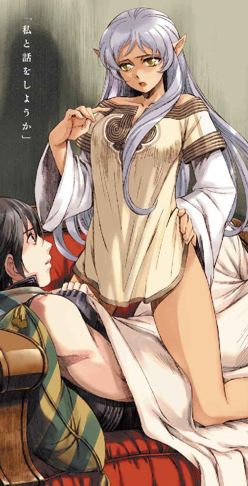
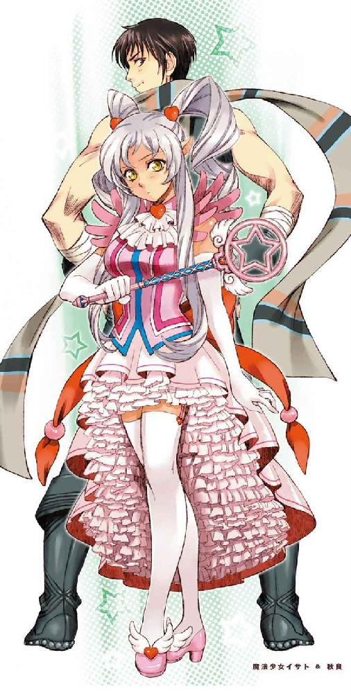
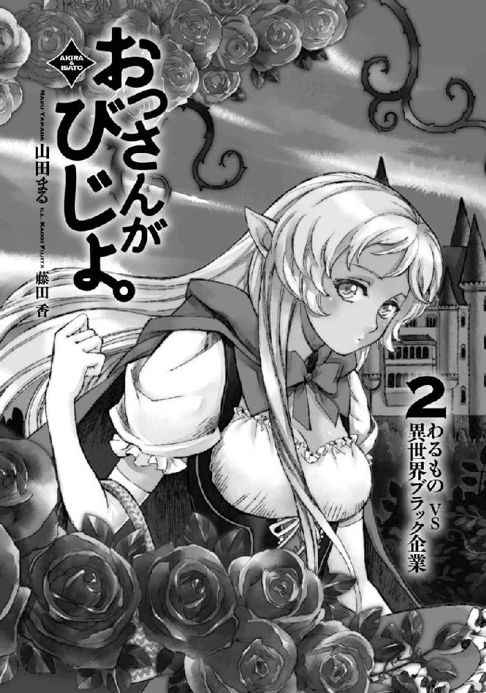
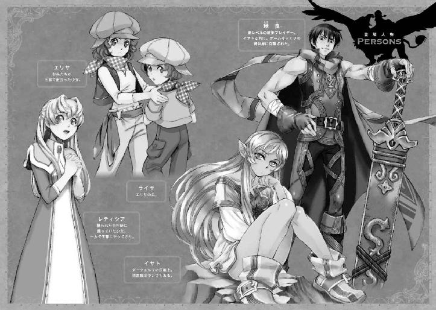
一章 マジ狩る★しゃらんら
飛空艇を撃墜などというテロリストも真っ青な所業をやり遂げた後──...。
俺はセントラリアの南門が近くなり始めたあたりで、ようやくイサトさんを背から降ろしてやることにした。セントラリアの西に位置するトゥーラウェストからやってきたので、本来ならば西門から入るのが最短だったのだが、今ごろ飛空艇の撃墜騒ぎで西門はごった返しているだろう。
あれだけセントラリアから目と鼻の先で起きた大事件だ。事情を調べるために騎士団も派遣されているだろうし、うっかり下手人として捕まっても面倒くさい。
いざとなったら力押しで逃げられないこともないだろうが、ここで指名手配でもされてしまったら今後動きにくくなってしまう。
そんなわけで、俺たちは一旦西門を離れ、そそくさと南門側へと回ったのである。
さりげなくうっかり道をそれてしまっていた旅人を装って南からの街道に戻る。
「──...君、たまに容赦ないよな」
「そう？」
疲れたように呻くイサトさんに、俺はしらばっくれた笑みを返した。
普段わりとしてやられているので、俺にだってたまには仕返しが許されてしかるべきだ。ぽかぽか背中を軽やかに殴られたりもしたが、ご褒美です。
そうして並んで歩き始めたところで、ふとイサトさんが呟いた。
「......アレ、なんだったんだろうな」
アレ、というのはあの人型の存在だろう。
「たぶん、俺がカラットで見たのと同じヤツだと思うんだけど」
あんな薄気味悪い存在を、俺は長年ＲＦＣをプレイして来た中で一度たりとも見たことはない。あんな奴が出てくるイベントなんて、なかったはずだ。覚えがないのはイサトさんも同じなのか、やはり難しい顔で首を捻っている。
うまく説明のつかない数多のモンスターによる飛空艇の襲撃。
それを操っていたように見える謎の人型。
俺らが知らないところで、この世界では一体何が起きているのだろうか。
「......まあ、何かが起きてる、ってことがわかっただけ良いのかもな」
俺は小さくつぶやく。
何の心の準備も出来ないままに巻き込まれるよりは、おかしなことが起こっている、とわかっていた方がまだ対処のしようもある。
ここは俺たちの知るＲＦＣの流れを汲んだ未来の異世界で、俺たちが知らない何かが起きている。
それがわかっただけでも、心の準備ぐらいは出来そうだ。
それに、今回のことであのヌメっとした人型への対抗手段もはっきりした。
......かなり不本意だが。
って。
俺はふと気づいたことがあって、足を止めた。
「なあ、イサトさん」
「ん？」
「あのマジ狩る★ステッキだけどさ」
「マジ狩る★しゃらんら★ステッキな」
正式名称に訂正された。
「そう、そのマジ狩る★しゃらんら★ステッキだけど」
「それがどうかしたか？」
「アレ、聖属性のスタッフなら普通にイサトさんが使っても良かったんじゃ？」
「──...」
俺につられたように立ち止まったイサトさんの表情が、ひくりと引き攣った。
それからゆっくりと、取り繕うような笑みがその口元に広がる。
「ナンノハナシカナ」
「おいカタコト」
やっぱりか！ やっぱりか!!
属性武器というのは、その武器を使った攻撃に自動的に属性を付与することが出来る便利武器のことだ。例えば火属性の大剣であれば、普通に剣として使っても相手に火属性ダメージを与えることが出来る。
先ほど俺がしゃらんら★でヌメっとした人型を撲殺出来たのも、その仕組みによるものだ。物理ダメージに聖属性が付与された結果、俺はあの人型をたこ殴りにすることで討伐に成功したわけだ。
が、それは何も物理攻撃に限った話ではなく、属性を帯びた魔法武器の場合、その属性の攻撃魔法の威力を上げたり、属性が反目していない限りはその属性を上乗せすることが出来る......、はずなのだ。
つまり。
聖属性のしゃらんら★で闇系の攻撃魔法を使わない限りは、普通にイサトさんもあの人型に魔法でダメージを与えられていたのではないだろうか。
「............」
「............」
ジト目で見つめていたところ、イサトさんはそっと良心の呵責に耐えかねたかのように目をそらした。
「イサトさん」
「............はい」
「先ほどの地獄絵図について何か言い訳があるならどうぞ」
「..................25にもなって魔法少女は辛いかな、って」
「............」
「............」
「普通に考えてガチムチ男の魔法少女ステッキ装備の方が辛いわ！！！！」
「年齢的には君のがセーフだ！！！！」
「年齢じゃなくて性別で考えて！！！！！！」
「私の場合君より酷いことになるんだぞ！！！！」
お互い吼えるようにぎゃんぎゃん言い合いながら睨み合う。
傍を通り過ぎる旅人の集団が、ぎょっとしたように俺らに目を向けていった。
ご迷惑をおかけしております。
っていうか、俺より酷いことになるとはどういうことだ。
俺のようなむさくるしい男が持つよりも、イサトさんが持った方が絶対似合うと思うんだ、しゃらんら★。
俺のそんな疑問の滲んだ眼差しに、イサトさんは嫌そうに顔をそむけながら言葉を続けた。
「それ、基本的には運営の遊び装備だったじゃないか」
「そうだな」
「属性武器って魔法使い的にはなかなか使いにくいアイテムなんだよ。火属性武器だと水や氷属性の魔法は威力が半減するし」
「その辺のことはリモネから聞いたことがあるな」
様々な属性魔法を駆使して敵モンスターを倒す魔法使いの場合、結局メインウェポンは無属性に限る、とかなんとか。属性武器はある程度狩り場に合わせて選ぶことが出来るが、大体の狩場には異なる属性を持つモンスターが配置されていることが多い。
例えばセントラリアの南にあるガランジュの森では、基本植物属性、もしくは虫属性のモンスターが多く湧いている。そうなってくるとガランジュの森で狩りをするならば植物属性と虫属性の両方に強い火属性を選びがちなのだが......そういったモンスター同様にガランジュの森にはその他のモンスターより比較的レベルの高い、岩属性のアクティブモンスターも潜んでいる。岩属性は火属性に対しては耐性を持っており、そのままの火属性武器で挑めば相当苦戦することになってしまうだろう。
特に魔法使い系の職業の場合、属性の異なる武器と魔法を組み合わせた場合のハンデがある分、攻撃力は良くて半減、最悪六割以上低下する。
それでも相手がノンアクティブモンスターであれば、岩属性を相手にする前に武器を持ち替えて、などと準備をすることも出来るだろうが、相手はプレイヤーを感知次第自動で襲ってくるアクティブモンスターだ。植物属性や虫属性相手に火属性で無双プレイしているところを背後から忍び寄られて不意打ちでもされたものなら、ＨＰの少ない魔法系職業プレイヤーはひとたまりもない。
そんなわけで、狙って属性ごとに武器を用意するのはあまり現実的ではないらしい。
確かにもともと属性武器なんていうのは、魔法の使えない前衛職が、少しでも戦闘を有利に行うために用意された救済武器のようなものだ。最初から魔法を使って敵モンスターの弱点を突くことができる魔法使いにとっては、それほど美味しい装備ではないのかもしれない。
「そんな中で、唯一の例外は聖属性武器なんだよな」
「例外？」
「聖属性と反目するのは闇属性のみで、基本的にその他の火や風、水、氷、土っていった属性とは相性がいいから。例えば火属性の魔法を使う時に、聖属性のスタッフを使った場合、聖・火の両方の属性がつくわけなんだ」
「便利じゃないか」
「うん。まあその代わり他の性能は一切ないけどな。私の普段使ってるスタッフは、無属性だがＨＰ30％増と、ＭＰ10％増、あと防御力10％増、あと魔法攻撃力に30％増がついてる」
「イサトさんのステータスをかなり底上げしてくれてるわけか」
「そういうこと」
それなら、まあ確かにイサトさんがしゃらんら★を使うのを躊躇う理由には一応なるか。いくら相手への有効打を放つことが出来るようになるとは言っても、武器を持ち替えることで防御力やＨＰが落ちるのは怖いものがある。
が、イサトさんがしゃらんら★を使いたくないのにはまだ他にも理由があるようだった。嫌そうな顔で、言葉を続ける。
「だが、それでも聖属性追加武器、というのは非常に美味しい。アンデッド系モンスターの出てくるエリアで経験値をがんがん稼げるからな。だが──...、君はこのしゃらんら★を使っているものを見たことがあるか？」
「そういえば......あんまりないような？」
運営がまたネタ装備を出したぞ、と話題になっていたのは覚えている。街中で実際に装備して笑っている人を見かけたのも、覚えている。
だが、実際にフィールドで使っている人間はあまり見たことがない、ような。
イサトさんは首をかしげている俺に向かって、重々しく口を開いた。
「しゃらんら★で魔法を使うと、強制的に魔法少女に変身します」
「ぶッ」
噴いた。
「へ、変身......??」
「魔法に限らずＭＰを使うタイプのスキルを使うと変身します。男女関係なく」
「おいちょっとまて」
それは俺がもしメイス系のスキルを持っていて、それを先ほどの戦闘で使ってしまっていた場合、俺も魔法少女に変身してしまっていた可能性がある、ということか。何それ怖い。
「ぴんくいふあっふあの甘ロリ系魔法少女に変身します。問答無用で」
「うわァ」
それは確かに、使う者を選びそうだ。
でも......外見よりも性能でものを考える人間なら使いそうなものだし、そもそも可愛い服をキャラに着せることに躊躇いを覚えないプレイヤーは多そうだ。
強制変身だけで、ありがたい聖属性追加武器をお蔵入りするだろうか。
俺のそんな疑問に、イサトさんはふっと視線を遠くにやった。
「ただのネタ装備なら、ゲームとしてアバターが使う分には喜んで使ったよ。女装仮装何でもござれだったしな」
「確かに、おっさんしれっとネタ装備してること多かったな」
ビリベアの着ぐるみもそうだし、例の宴会装備のお花ビキニもそうだ。
「ただこれ、光るんだよな......」
「光る......」
「魔法少女に変身すると、全身からずっと淡いピンクの光を放つことになるんだ。それが結構邪魔なんだよ」
「あー......」
アンデッド系モンスターのいるエリアとなると、基本的には暗い。
そんなエリアでずっとピンクに発光され続けると、確かに邪魔だろう。
「変身してる自分でも操作しづらくなるし、同じエリアで狩ってて画面に入るだけでも結構邪魔だし......、ってことで実戦で使う人は少なかったんだ」
「......なるほど」
さすがＲＦＣ運営。
ネタ装備として性能は良いながら実戦での使い道を制限するあたりのバランス感覚がうまいというかえげつないというか。
なるほどなァ。
しみじみイサトさんの言葉に納得しつつ、俺はそっとインベントリを操って先ほど託されたしゃらんら★を取り出す。
そして、そっとイサトさんへと差し出した。
「変身しよう？」
「............」
しら、と冷たい視線を向けられるがここで負けるわけにはいかない。
「いやほら、変身した方が防御力も上がるだろ、普通の服に比べたら」
「まあ、普通の服に比べたら上がるかもしれないが」
「それならやっぱり変身してくれた方が、カラットで手に入れたみたいな普通の服着てる時に、戦闘に巻き込まれたりした時には安心できるっていうか」
「............」
イサトさんがじ、っと俺の目を真っ直ぐに見上げる。
「で、本音は」
「ぴんくで甘ロリで光るイサトさんが見たい」
そんな切実な思いをこめた俺の言葉に、イサトさんは黙って耳を塞いだ。
ちッ。
しばらくそんなしゃらんら★を互いに押し付けあうという攻防戦を繰り広げていたところ、ふと話題を変えるかのようにイサトさんがポンと手を打った。
「あ、そうだ」
「ん？」
「ちょっと、君に話しておきたいことがある」
「何？」
「しばらく、戦闘の際にはなるべく私の側にいてくれないか？ 相手が雑魚なら問題ないが、ある程度こちらの被ダメが増えそうな時は特に」
「それはもちろんそのつもりだけど」
ゲームの中でなら、「おっさんまた死んでやんのｗｗｗ」と小馬鹿に出来たものの、こうしてモンスターとの戦闘がリアルになった世界ではそういうわけにはいかない。俺と比べて物理的な防御力や、戦闘力に欠けるイサトさんのことを俺が援護するのは当然のことだ。
「さっき飛空艇を撃墜した時に気づいたんだ。私はどうもＭＰの概念が感覚としてよく理解出来てないみたいなんだよな」
「それってどういう？」
「うーん、どういったらいいのかわからないんだけども、私たちこれまでＭＰ使うような生活をしてきてないじゃないか」
「うむ」
現代日本において、「ＭＰ」という概念は存在しなかった。
冗談で精神的に疲れた時などに、「ＭＰが尽きそう」なんていう表現を使うようなことはあったが、それはあくまでネタである。
「ああ、そうか」
俺は、ぽんと手を打った。
「ＭＰ使ってる、って感覚がないのか」
「そうなんだ。だから下手すると自覚なく唐突にＭＰ切れを起こす可能性がある」
「それは......厄介だな」
「うん」
ゲーム内であれば、画面の左上に常に自分のＨＰやＭＰのバーが見えていたので、プレイヤーである俺たちは、それを基準に戦略を立てることが出来ていた。だが、こうしてこの世界が現実となった今、俺たちにステータス画面はない。自分の状態を客観的に見ることが出来ないのだ。
「よくアニメとかであるみたいな、めっちゃ疲れる、とかそういうのは？」
「集中力が落ちたかな、ちょっとだるいな、ぐらいはあるような気がするんだけれども......さっき実際大魔法を発動させた感触として、それほど劇的な変化ではない......、かな。なんというか、戦闘中のアドレナリンでまくった状態で冷静にそれに気づけるか、っていったら危ういと思う」
「なるほど」
よくライトノベルやアニメなどでは、ＭＰを使い過ぎると意識を失ったり、下手をすると命にかかわる、というような描写があるが、どうやらこの世界ではそういうわけではないらしい。
「まあ、ＭＰが切れると意識を失う、とか死に至る、ってペナルティが発生するわけじゃないのは俺としては安心かな。イサトさん、そういう無茶平気でやらかしそうだし」
いざという時、イサトさんはそういう無茶を平気でやるタイプだと思っている。
「......否定はしない」
「してくれよ」
うろり、とイサトさんが遠いところへと視線を彷徨わせた。
そして、誤魔化すような咳払いが一つ。
「が、逆にそういうペナルティがない分危険な気もするんだよな」
「またそうやって誤魔化す。......って、逆に危険？」
「だって、自分がＭＰ切れしてるって自覚がないまま戦闘が続行するんだぞ。その勘違いって結構命取りだと思わないか？」
「......あ」
確かにそうだ。
敵の攻撃を魔法であしらうつもりでいて、その魔法が発動しなかったら？
仕留められると思っていたはずの敵を仕留め損なって反撃を食らったら？
俺らはそれなりにゲーム内での高ステータスを引き継いだ状態でこの世界に迷い込んでいるため、基本的にはよほど無茶なエリアに無謀な特攻をしない限りは戦闘で死ぬ可能性は低いだろう。
だが、先ほどの人型の件もある。
カラットで見かけたように、あの人型に類するようなモノがあちこちに潜んでいると考えた場合、これからも俺たちがあのような騒動に巻き込まれる、というのは決して考えられない話ではない。
そんな人型との戦闘の中で、もし自覚なくＭＰが切れるようなことが起きてしまったら。
脳裏に、無残に切り倒されたアーミットの姿がよみがえる。
あの時の、しんしんと身体が冷えるような恐怖と、腸が煮えくりかえるような怒りを思い出すと、足元から沈み行くような不安を感じた。
「イサトさん、頼むから危ないことはしないでくれよ」
あの時の俺は、目の前で会ったばかりの少女が斬り殺されたことにぶちキレて、比較的冷静なまま相手を殺そうとした。
じゃあ、付き合いの長いイサトさんが目の前で殺されたら？
「っ......」
厭な想像に、眉間に深い皺を寄せる。
そして......
「わかってるよ。だから、先に君に相談しているんだ」
そんな俺を安心させるように、隣を歩くイサトさんがぽん、と軽く俺の腕を叩いた。イサトさんの癖なのだろうか。俺を宥めたり、励まそうとするとき、イサトさんは軽やかに俺の腕に触れる。
手を握るほど近くはなく、それでいて言葉だけほどの距離もなく。
ちょうど良い距離感を感じる触れ合いに、俺はゆっくりと深呼吸をして落ち着きを取り戻す。
「最初から私がこの世界の住人なら......、経験からどのスキルをどれだけ使ったら自分のＭＰが尽きるのか、っていうのが感覚としてわかってるんだろうけどな」
「ゲーム時代の感覚はアテにならない感じ？」
ゲーム時代であっても、ＭＰ回復薬を飲むタイミング等である程度ＭＰの消費率は把握できていたような気がするが。
「大技に関しては覚えてるんだ。さっき飛空艇を墜とすのに使ったスキルなんかは一発でＭＰが尽きる大技だ。その他にもわりと大型なスキルに関しては大体五発連発したらＭＰヤバい、って認識はある。でも......」
イサトさんは、そこで一度言葉を切ると、いつの間にか手にしていたスタッフを何気ない仕草で一閃した。そこから放たれた空気の刃が、道沿いに転がっていた大岩をすっぱりと切断する。
「普段の戦闘で使う攻撃魔法なんてこの程度の小技だろ？ そうなると、小技をどれだけ連発したら自分のＭＰが尽きるのか、なんてのは私も把握してないんだ」
「......なるほどなぁ」
しみじみと納得した。
浴槽から水を汲み出すのに、大きなバケツを使えば五回で空になるとわかっていても、スプーンで汲み出したら何回になるのかはわからない、といった感覚だろうか。それにＭＰやＨＰは緩やかではあるが時間経過とともに回復する。そうなるとますます回数は曖昧になってしまうだろう。
「ってことは......、やっぱり戦闘中はなるべく俺がフォローするようにするしかないか」
「戦闘が想定以上に長引いたり、苦戦するほどの強敵、あのヌメっとした人が出てきたときには、そのあたりのことを念頭に置いててくれると助かるよ。
できれば......、そういう事態が起きる前に、ＭＰの感覚に慣れておきたいけども」
「おお、イサトさんにしては珍しく戦闘に乗り気な」
「私だって死にたくはないし......、君を危険に晒したいわけでもないからな」
「......っ」
さらりと言われたイサトさんの言葉に、少しだけどきりとしてしまった。
俺を、危険に晒したくない。
あの面倒くさがりで、自分の戦闘レベルをあげることよりも趣味的な技能レベルをあげることを優先しがちなイサトさんが、俺のためにまともに戦闘訓練をしようなんて。ちょっと、嬉しいかもしれない。
思わず緩んでしまいそうになる口元を、手で押さえて隠す。
イサトさんはそんな俺の様子には気づいていないのか、難しい顔で言葉を続けていく。
「それに......、実は課題がもう幾つかあるんだ」
「ん？ ＭＰの他にも？」
「うん。なんていうか、かなり初歩的なことなんだけど」
「なに？」
「実はスキル名覚えてない」
「ぶふッ」
想像以上に初歩的なことだった。
「君だって覚えてなくないか。普段略称だし操作するときはショートカットキー押すだけだし」
「......そう言われるとそんな気もする」
確かに俺も、自分の所持していたスキルを全部正式名称で言えるかと言ったら非常に怪しい。普段使うことが多かった「風刃三連斬」だとか、「焰魔光刃」だとかはなんとなく字面は覚えているが。
ちなみに「風刃三連斬」は「ｈ３」、「焰魔光刃」は「援交」なんていう通称でゲーム内では呼ばれていた。
「アキは洞窟のボスを最終的に援交で倒した」なんて言われた時の人聞きの悪さ、プライスレス。
「魔法系はほら、スキル名がやたら仰々しくて長いの多かったし......」
言い訳のようにごにょごにょ呟きながら、イサトさんは肩を竦めて息を吐く。
「でも、スキル名を覚えてないと何か困ることってあるっけか？ 今のところ普通にスキル使えてたよな？」
俺もイサトさんも、この世界にやってきてから当たり前のようにスキル名を唱えたりすることなくスキルを行使してきている。
今更スキルの正式名称がわからないからといって困ることはないように思うのだが......。
「普通に使う分にはそんなに困らないんだけど......、切り替えがスムーズじゃないな」
「切り替え？」
「たぶん、こっちの世界におけるスキルだったり魔法だったりっていうのは『どのスキルを発動させるか』っていうイメージが重要になってるんだと思う」
「ふむふむ」
「スキルロールを使うことで、スキルの使い方を頭の中に叩きこみ、その発動イメージをトリガーにしてＭＰと引き換えにスキルが実際に発動する──......と言ったら伝わる？」
「大体わかる気はする」
当たり前のようにそうしていたが、言われてみれば確かにスキルを使うときにはそのプロセスを経ていたように思う。
「スキルに名前がついてるのは、その発動イメージを浮かびやすくするため、なんじゃないかな。条件反射的に、スキル名を口にすることで、そのスキルのイメージが湧きやすくなる、っていうか」
「ふんふん、なるほど」
「普通にスキルを使う分にはそんなに不便を感じてなかったんだけど......、さっきの戦闘の時にいくつかのスキルを使い分けようとしたら、スキルの切り替えがうまくいかなかったんだ」
「............」
俺はふと思いついたことがあって、つっと道をそれた。
イサトさんは俺がしようとしていることがわかるのか、特に追うことはせず街道に立ったまま俺の動向を見守っている。
手頃な岩は......、っと。あった。
俺は背丈の三倍ほどはある岩の前に立つと、腰に下げた剣に手をかけて二種類のスキルを連続して放つ......！
「......だっ！」
素早く三度振り抜いた先から放たれた風の刃が交差、重なりあうような軌跡で岩をすっぱりと切断。返す刀で発動したスキルにより、手にした剣が紅蓮の焰を纏って斬りつけた岩塊を溶断する。
「って......あれ？」
特に違和感や、不具合を感じることなく二種類のスキルの連続発動に成功してしまった。ぽりぽり、と頭をかきつつイサトさんを振り返る。
「......何故だ」
解せぬ、と不満そうにイサトさんが唇を尖らせる。
「私もスキル試したいから、秋良青年ちょっと的にならないか」
「おいこら待てこら」
物騒なことをぼやくイサトさんにツッコミをいれつつ、俺は街道に戻ると、再びイサトさんと並んで歩き始める。
イサトさんはむっつりと眉間に皺を寄せつつ考え込み......、ぽん、と手を打った。
「わかった」
「何が」
「君のスキルの場合、動作がスキルのイメージを手伝ってるんだ」
「動作が？」
「最初のスキルの発動には、三連撃を放つっていう動作が伴ってるだろう？」
「そういやそうだな」
無意識のうちに、ゲーム内のキャラのアクションを真似ていた。
「──あ」
俺も、ぽん、と手を打った。
イサトさんの言いたいことがわかったような気がする。
「そっか、イサトさんの魔法スキルの場合、発動するスキルの種類は違っても『スタッフを振る』って動作は同じなのか」
「そういうこと。杖を振るとエアリアルカッターが出る、というイメージを一度発動させると、『杖を振る＝エアリアルカッター』でイメージが固定されて『杖を振る＝ヘルフレイム』に切り替えるのが上手くいかないんだ」
「なるほどな。杖の振り方をスキルごとに変える......にしてもその認識から作らないといけないわけか」
「そういうこと。あー......面倒くさくなってきた」
歩きながら、かくりとイサトさんがうなだれる。
スキルを発動させるのに、スキルの正式名称を叫ぶ必要はない。
だが、それに代わる起動イメージを呼び起こす「スイッチ」はやはりあった方が良いのだ。そしてその「スイッチ」と「結果」であるスキルが結び付くには、これまたやっぱり地道な実戦を重ねるしかないのだろう。
「しばらく戦闘のメインにイサトさんを据えて......、俺は援護に徹する、とかにした方が良いかもしれないな」
「うう......」
イサトさんにはひたすらスキルの使い分けや、ＭＰの消耗感覚に慣れてもらう必要がある。
呻きつつも抵抗はしないあたり、イサトさんも実戦の必要性はわかっているらしかった。
そして──...、セントラリアの城壁が見え始めた頃。
ふと俺はあることに思い当たって口を開いた。
「そういや、イサトさん、さっき課題は他に幾つかある、って言ってなかったっけか」
「言ったな」
「他にも何かあるのか？」
「ええと、さっき私は必要に迫られて飛空艇を撃墜しちゃったわけなんだけれども──...、それが犯罪だと認識された場合、街の入口でとっつかまる可能性が少々」
「あ」
失念していた。
俺たちの冒険者カードを発行してくれた酒場の主人の言葉が本当ならば、このカードは「犯行の記憶」に反応してアラートを鳴らすことになっている。
街の入口で身分証としてカードを石版にかざした瞬間鳴り響く警告音──なんていうのはなかなかに洒落にならない。
まあ、俺とイサトさんであれば、街の騎士ぐらいなら楽々蹴散らせるような気もしないではないが。
気もしないではないが......それはあくまで最終手段にしておきたい。
お尋ねものになるのは、他に選択肢がなくなってからで十分である。
「カードは常に私たちの記憶に同期するようになっている、と言っていたわけだし、今現在アラートが鳴ってないあたり、ギリセーフで犯罪者にならずにすんだと思いたいところ」
「そうだな」
今のところ、突き合わせて覗きこんだ二人分の冒険者カードには警告らしきものは一切浮かんでいない。あるのは、噓のように跳ねあがった経験値とレベルぐらいである。
「もし入口でアラートが鳴ったら──...、とりあえず全力」
「全力」
その次に来る言葉が「殲滅」でないことだけを祈る。
「そんなもんか」
「あと、最後に一番大事な相談が残っているかもしれない」
「一番大事な？」
今話していたこと以上に大事な話題、なんてあっただろうか。
「ＭＰの消費について」や「スキルの切り替え」以上の大事。
一体何をイサトさんが言おうとしているのかが予想もつかず、黙ってその続きを待つ。
イサトさんは神妙な顔ですっと息を吸い......。
「ぱんつ栽培したい」
全力で何言ってんだこのひと。
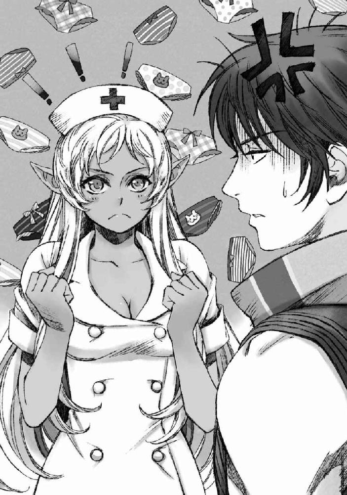
「この世界が現代日本とは違うことはよくわかっているんだ」
「うん」
「だから日本の常識を押し付ける気はないし、押し付けてはいけないこともわかっている。郷に入れば郷に従えという言葉のある通りだ。自分たちの常識とは異なる文化を野蛮だとか劣っている、遅れているというつもりもない」
「うん」
「だから毎日お風呂に入れないことは仕方ないと思う。それでもまあスキルを活用したならば、タオルで身体を拭くぐらいのことは出来るからな」
「うん」
「でもぱんつは毎日換えたい」
おっさんは切実だった。
「............」
妙齢の女性の口から「ぱんつ」なんてエロワードが出てきているのに、ときめきを感じないのはイサトさんがどこまでも大真面目かつ切実だからかもしれない。
それでも、ちろりと視線を隣を歩くイサトさんの腰のあたりまで下ろすと、ぴっちりとタイトなナース服の奥に潜む神秘についてを真剣に考察してしまいそうになった。
いかん。それは考えたらあかんやつや。
俺は頭を左右に振って、そっと視線を隣を歩くイサトさんから逸らした。
そうなると自然に目に入るのは、セントラリアの街並みである。
そう。
俺たちはあの後、無事にセントラリアに入ることが出来ていた。
心配していたような、入国審査でひっかかるようなことはなかった。
それはありがたいのだが......飛空艇なんていう重要な交通機関を破壊して堕とすなんていうテロリストさながらのことをやらかしておいて鳴らないアラートというのは本当に大丈夫なのだろうか。おかげで助かった俺らが言えた言葉ではないのだが。
「こら、聞いてるか」
「ごめんちょっと現実逃避してた」
「私は大真面目なんだぞ」
「いや、それはわかるんだけどさ。大真面目にぱんつの話をされても俺としては困るというかなんというか」
イサトさんの気持ちはわかるのだ。
わかるのだが、その話題に真面目に取り組むとたぶん俺の脳みそが大変なことになる。イサトさんのぱんつ事情が気になって夜も眠れなくなる。そんなわけで、ぱんつについての話題を聞き流すように現実逃避に走っては、イサトさんに引き戻される、というようなことを繰り返してしまっていた。
「と、いうわけでぱんつ栽培がしたいわけです」
「ぱんつって栽培するものなんです？」
「正確に言うとぱんつ専用綿花栽培」
「......なるほど」
俺がぱんつの話題に怯んでいるのに気付きつつも、イサトさんが退かない理由がわかった。イサトさんは俺の「家」を使って綿花の栽培をしたいのだ。家主である俺の許可が欲しいがために、こうして切々と訴えているのだろう。
「君が恐れていることはわかるぞ。私が元の世界に戻るための努力も忘れ、農家ライフを満喫する可能性を警戒してるんだろう？」
「あー......、うん」
さすがのイサトさんも、元の世界に帰ることよりも農業を優先することはないだろう、とは思っている。それでも......、出来ればしばらくはメインジョブの強化に専念して欲しいと思ってしまうのだ。
「だから、ぱんつ栽培」
「だから、なのか」
「だから、だ」
イサトさんの順接の使い方に疑問を呈してみたが、さも当然のようにこっくりと頷かれてしまった。
「君の監督の範囲で、基本はぱんつの素材としての綿花栽培を許してもらえないだろうか」
「............」
「当然君のぱんつも作るから」
「......ますます悩ましいわ」
イサトさんとしては後押しのつもりだったのだろうが、余計に躊躇してしまう。
が、その一方でイサトさんの言う「せめてぱんつは換えたい」という意見には俺としても心底同意したい。元の世界に戻るまで、俺とイサトさんは嫌でも基本的には共同生活を強いられる。お互い気持ち良く関係を保つために、最低限の身だしなみには気を遣いたいところだ。特に俺らは男女のコンビなのだから。
「街で既製品を買って置いておくというのは？」
「不可能ではないと思うが、下着のためだけに簞笥のスペースを三つも消費するのは辛くないか？」
「あー......あれセットじゃないんです？」
「ない」
きっぱり断言されてしまった。
そうかセットじゃなかったのか。
「一番最初の初期装備のデフォルト下着はセットな気がしないでもないが......、ＲＦＣ的には下着なんて基本的には『見えない』部分の装備だろ？ だからあんまりレシピにも種類がないんだよ。あるのは一部に大人気すぎてネタで実装された縞パンとアウターと合わせる見せブラぐらいかな」
「......なるほど」
確かに現実と異なり、ゲーム内では下着というのはそれほど重要視されない。露出度で言うならばビキニなど水着類で代用出来るからだ。実際ＲＦＣのプレイヤーは水着が下着と同じレイヤーで着用されることを生かし、装備の下にお気に入りの水着を着る者が多かった。そうしておけば、万が一装備の耐久値が振り切れて戦闘中にフィールドでキャストオフしても「下着じゃないから恥ずかしくないもん」が出来るわけだ。眼福眼福。
が、実生活で水着を下着として代用出来るかといったら無理だ。子供の頃、プールや海に遊びに行く際に、家から水着を着せられた時の違和感を思い出して、俺はもぞりと背中を揺らした。
そしてそれからちらり、と視線をイサトさんの胸のあたりに流してみる。男と違って女性の場合上半身にも下着が必要であり、それがセットになっていないことを考えると、確かに下着だけで簞笥のスペースを三つも占められてしまうのはかなり痛い。
「綿花栽培を許可して貰えるなら、ある程度下着はまとめて作って各自インベントリに保管、簞笥には綿花をごっそり詰めておく、という補充形式がとれる」
「うーん......」
それならばインベントリにパンツを、とも思ったが......重量制限のある荷物に替えの下着を詰めて戦闘用の資源が圧迫されるというのはあまり賢くない。
「ぱんつ栽培、許可するしかないのか......」
ぐぬぬ、と唸る。
イサトさんにぱんつ専用綿花とはいえ、農家になる許可を与えてしまうのはなんとなく不安だが、背に腹はかえられない。
「本当なら着替えだってしたいが──...、そこはまあ我慢するしかないからせめてぱんつ」
「うーん、着替えまで持ち歩く、着替えまで毎日生産するのはさすがにいくらイサトさんだって厳しいもんな？」
「材料さえあれば......、と言いたいところだが、私たちのレベル帯になってくるとわりと素材もレアだからな」
毎日日替わりでレア素材を駆使した装備を作るというのは不可能だ。
幾つか着回し出来るだけの装備を用意して、着替えて洗濯して......、ならまだ可能性はあるだろうか。ただ、それでもどこに干すのかという問題は出てきてしまう。人類が発展と共に遊牧スタイルから定住スタイルに変わっていった進化の流れを垣間見てしまう瞬間だ。人は快適さを求めて財をなし、その財を保管するために定住を求めたのだ。
「生活するって厳しいのな......」
「......うむ」
しみじみと二人して項垂れる。
一体他の冒険者たちはその辺の部分をどうしているのだろうか。
もしくは、そういった不快さに目を閉じることが出来る者のみが冒険者たりえるのだろうか。
「......わかった。ぱんつ栽培承認しよう。けど、あくまでぱんつ栽培だからな。ぱんつのための綿花栽培なので、謎の凝り性を発揮してえらいもん作ろうとしたりはしないように」
「ぐぬ......」
念入りに釘を刺しつつ許可を出せば、イサトさんは一度小さく唸った。やっぱりなし崩しで何かする気だったのか。綿オンリーだから!!とか言って、素材を綿だけでどこまでやれるか的なチャレンジでもするつもりだったのだろうか。......やりそうだ。
「イサトさん？」
「......はい」
ジト目で名前を呼べば、イサトさんは名残惜しそうにしつつも頷いてくれた。
後は俺がしっかり監督しておけば、いくらイサトさんの職人魂が疼いたとしてもなんとか手綱を取ることが出来るだろう。
「イサトさん、綿花ってどれぐらいで育つの？」
「とりあえずまずは畑を作って......、種をまくところから始めるから......」
視線をちょろりと上空に彷徨わせてイサトさんが思案する。
「畑を作るのに数時間、綿花が育つまで一日、ってところかな」
「...........................」
「ん？」
「............イサトさん」
「なんだ？」
「それ、農家スキルあること前提で話してない？」
「..................あ」
ぎぎぃっと軋むような動きで隣を見やれば、イサトさんは「てへぺろ」の概念を具現化したらこんな顔になるよね、というような大層可愛らしい顔で笑って見せた。
......コノヤロウ。
「あんた農家スキルも持ってたのか......！！！！！！！！」
「ごめん！！！！！！つい！！！！！出来心で！！！！！！！！」
そのうちこの人には、持ってるスキルあらいざらい白状させたい。
本気で。
その日は、その日分の着替えや、日常生活で必要になるこまごまとしたものを購入した後に宿を取って休むことにした。
イサトさんは隣の部屋だ。
カラット村で過ごした晩のように、何かあったら困ると一応備えて眠りについたものの、特に何事もなく無事に次の日の朝を迎えることが出来た。
翌日の朝。
宿屋の下にある食堂で朝食を済ませた後、「家」の扉に宿屋の扉を設定する。
これで「家」を仲介することで、エルリア、トゥーラウェスト、セントラリアにはいつでも行けるようになった。
その後、イサトさんはわくわくと楽しそうにしつつ畑を作りに行った。
ちなみに、罰ゲーム期間が終わったので、本日はアーミットのお母さんより貰った服に戻っていた。ちっ。ちょっとばかりミニスカ赤ずきんに期待したのはきっと俺だけではないはずだ。
そして──...、イサトさんが農家スキルを駆使して「家」の周りを開拓しまくった後、俺たちは街に買い出しに出かけることにした。
観光も兼ねて、ふらふらと街の中を見てまわる。
「ふと思ったんだけど」
「ん？」
「『家』を整えませんか」
「却下」
「違うんだ聞いてくれ」
じわじわと俺の「家」を改造しようとしている節のあるイサトさんを速攻で却下してみたわけだが、どうやらイサトさんの提案は職人魂に突き動かされた結果のものというわけでもなかったらしい。
「『家』ってダンジョンや特殊な区域以外からならアクセス出来るじゃないか」
「そうだな」
「そうなると、これからしばらくは君の『家』が私たちの拠点になることも多いと思うんだ」
「あー......、確かに。フィールドで長期狩りとかすることになったら、いちいち街に戻るのも面倒くさくなるもんな」
「そうそう。ゲームの時は消耗品の補充のために『家』を使っていたけれど、今の状況的には休息を取るための場所としても必要になると思うんだ」
「そうだな。そうなると......、今の簞笥しかない状態だと確かにキツいな」
「うん」
「家」はフィールドや街中、基本的にはダンジョン以外の場所からならば自由にアクセスすることが出来る。それ故に俺はアイテム倉庫として活用してきていたのだが......、イサトさんが言うようにこれからは本当の意味で「家」としても使うことが増えていくだろう。
これから俺たちはポーションの素材を確保するためにあちこちで狩りをおこなうつもりなのだが、その途中で夜になる度に街に戻っていては時間のロスだ。
「私が改造費を出してもいいので、風呂とトイレとベッドが欲しい」
イサトさんはやっぱり切実だった。
こういう生活面の不便に事前に気付くあたり、やっぱりイサトさんは女性なんだな、と改めて思う。
俺だけならば、必要な場面が来るまで気づかなそうだ。
そんなことを思いつつ、まじまじとイサトさんを見つめていると、イサトさんが不思議そうに首をかしげる。
「なんだ、どうかしたか？」
「いや、イサトさんがいてくれて良かったなと思って」
「......ぬ？」
「こういうところ、男の俺だけだったら後回しにして後悔しそうだったから」
「............」
じんわりと、イサトさんの目元に薄い朱色が浮かんだ。
どうやら照れたらしい。可愛い。照れ隠しなのか、やんわりと足を踏まれた。痛くも痒くもない、本当に乗る程度の圧である辺りに謎の気遣いを感じる。
「それで、君に相談があるんだ」
「なんだ？」
うっすらと頰を赤らめたまま、イサトさんはもじもじと合わせた両手を弄りだした。上目遣いに俺を見上げる視線と併せて、なんだか非常に心ときめく甘いシチュエーションを思わせて鼓動が速くなる。
『私は、君のことが──...』
そんな言葉の続きをうっかり期待してしまいそうになって──...
「実は私には一押しの家具レシピがあってだｎ」
「はい却下」
最後まで言わせてたまるか。
「聞こう！ せめて最後まで聞こう！」
「いやだって聞かなくてもわかるもん。イサトさんの一押し家具なんて素材もえらいことになってるに決まってるし」
「ぐっ......！」
図星だったか。
家具が必要なことには同意しよう。
だが、その家具をイサトさんに作らせるかといったらそれは別問題だ。
「自分で手の入れられる『家』が手に入ったら、やりたい夢がいろいろあったんだよー......」
「イサトさんイサトさん、これ、俺の『家』だからね？」
「もう秋良青年、結婚しよう」
「何言ってんだあんた」
これほどまでに爽快に財産目当てなプロポーズが未だかつてあっただろうか。
うぐうぐ言ってるイサトさんを放置して、俺は話を続ける。
「ベッドぐらいならすぐに買える気もするが、風呂やトイレって簡単に作れるものなんだろうか」
「その辺りは職人に相談、って感じになりそうだよな」
「そもそもシステム周りが不明すぎる」
「どこに行けば買えるのかすらわからない」
「金はあるのにな」
水道とか下水システムとかその辺りはどうなっているのだろうか。
魔法でさくっと解決してくれるのならば、それが一番なのだが。
と。
そんなことを俺とイサトさんがやいのやいのと話しながら歩いているところで、街中の喧噪を割って響く怒声が耳に届いた。
「返せよ......!! それはオレが稼いだものだ!!」
子供、だろうか。まだ、声変わり前の、少女のようにも聞こえる声。怒りに満ちてはいるものの、それはどこか悲鳴のようにも響く。
それに絡んでいるのは数人のゴロツキだった。
ゴロツキの影に隠れて、絡まれている少年の姿は見えない。
「......」
「......」
俺とイサトさんは、ちょろ、と視線を合わせる。
つい昨日派手に飛空艇を撃墜してしまった手前、あまり目立つのはよろしくない。
「巻き込まれないようにしとくか」
「それが一番」
揉め事からは距離を置くに限る。
俺らの知識が通用するのならば、セントラリアは通称『王都』とも呼ばれるだけあって治安は良い。何か騒ぎを起こしたならば、すぐにでも騎士が駆けつけるようになっていたはずだ。俺たちが介入せずとも、騎士が仲裁に入って解決してくれるだろう。
「......秋良青年」
「............」
そう思って素通りしようと思っていたはずなのに。
イサトさんの低い囁き声に注意を促されて見た先では、騒ぎに気づいているはずなのに、やる気のないそぶりで見ないふりをしようとしている騎士がいた。その白を基調とした鎧にも見覚えはあったし、そこに刻まれた紋章もセントラリアの守護騎士団のものだ。だというのに、その騎士は目の前で起きているカツアゲ、もしくは強盗めいた出来事に気づかなかった態でその場から歩み去ろうとしている。
「あのやろう、職務放棄か」
「仕事しろ公務員」
ぼやいてから、俺は騎士を呼びとめるべく大きく声をあげた。
「すいませーん、なんか揉めてるみたいなんですけど、仲裁お願いしてもいいっすかー」
「......」
空気読まないＤＱＮスタイルであげた声に反応して、騎士が面倒臭そうに振り返る。そして一言、小馬鹿にした顔で言った。
「管轄外だ」
「は？」
思わず間の抜けた声が出る。
セントラリア内の揉め事にどんな管轄外があるというのか。
それも、絡まれているのはまだ年端もいかないような子供だ。
騎士はそれだけ言うと、面倒臭そうにフンと鼻を鳴らして人ごみの中に交ざるように歩き去ってしまった。
ポカンと立ちつくす俺たちの後ろで、カツアゲはますます盛り上がっている。
「お姉ちゃん、もう渡しちゃおうよ......」
「馬鹿、これ渡したらこれからどう生活するってんだ！」
「怪我する前に渡した方が賢いと思うけどなァ？」
怯えた幼い子供の声と、それに応える張りつめた怒声。
年端もいかない少年かと思いきや、先ほどの声の主は少女であったらしい。
そしてそれに対して凄む、下卑た声。
......なんなんだろうな。
カラット村の盗賊襲撃は、辺境の小さな村だからだと思った。
だが、王都と呼ばれるセントラリアの街中でこんなことが横行するのはどういうことなのか。
どうして誰も助けようとしないのか。
何故、見てはいけないものから目をそらすようにして、皆足早にこの場から立ち去ろうとしているのか。
一般市民が「自分にまで害が及ぶのを恐れているから」ならまだわかる。
だが市民を護る役目を負ったはずの騎士までが見て見ぬふりをするのは何事だ。
「ごめんイサトさん」
「いいってことよ」
大人しく出来そうもない、との意味を込めての謝罪に対する返事は、腑抜け騎士の数千倍男前だった。
というわけで。
「よっと......！」
するりとゴロツキの背後に忍び寄ると同時に、膝の裏を狙ってのローキック。
膝かっくん気味に決まり、「うお!?」と声をあげつつよろけた襟首を引っ摑んで地面へと引き倒した。受け身を取ることも出来ず、背中を強打して咽せる男に代わり、ツレの二人が俺を振り返ると同時に凄んだ。
「なんだテメェッ、俺らが誰だかわかってんのかアアン!?」
「知らねェよひっこめ屑が」
「ひ......ッ!?」
眉間に皺を寄せ、心底蔑む調子で言い捨てたところ、相手が怯んだように息を吞んだ。そりゃそうだろう。自分で言うのもなんだが、俺は人相がそんなに良くはない。その上でかい。そんな男に見下ろされ凄まれたらさぞかし怖いだろう。
「.........」
「ひっこめ」と要求はすでに一度告げている。
後は暴力に訴えるなり、撤退するなりの相手のアクションを待つ。
しばらく睨みあった後、ゴロツキどもは舌打ちとともに俺の脇をすり抜けて撤退していった。「起きろよ！」だとか、地面に倒れていた仲間を起こして引きずるようにして路地裏へと消えていく。
「......ッ、略奪者が！」
そんな罵声を残して。
「？」
「？」
俺は思わずイサトさんと目を合わせて首をかしげる。
ルーター。
ゲーム時代には聞いたことのない単語だ。
スラングか何かだろうか。
「あ」
「え？」
イサトさんが小さくあげた声に反応して、視線を前に戻す。そこでは、ゴロツキに絡まれていた少女が、ちびっこの手を引いて俺の横を素早くすり抜けようとしているところだった。思わずその行く手を阻むような形で重心を移動してしまう。
「あっ」
「ッ......！」
少女が俺の脚にぶつかってよろける。その拍子に、ばさりと少女が目深にかぶっていたキャスケット帽が落ちた。
「ごめん......！ 悪かった！」
別に彼女らに用があるわけではないのだ。そのまま逃げられたとしても何も問題はなかった。俺は条件反射のように動いてしまったことに謝りつつ、落ちた帽子を拾って差し出して......
「なんの魂胆があるのか知らねえし、礼なんか言わねえからな！」
威嚇するように俺を睨みつけた少女の頭上にぴょこりと揺れる耳に、思わず目を奪われてしまった。
そう。
燃えるように赤い癖っ毛をなびかせ、爛々と光るつり目で俺を睨む少女は、いわゆる「けもみみっ娘」だったのだ。髪と同じ色をした▲がその頭上で後ろに寝るように伏せられている。
「耳触りたい」
イサトさん、自重。
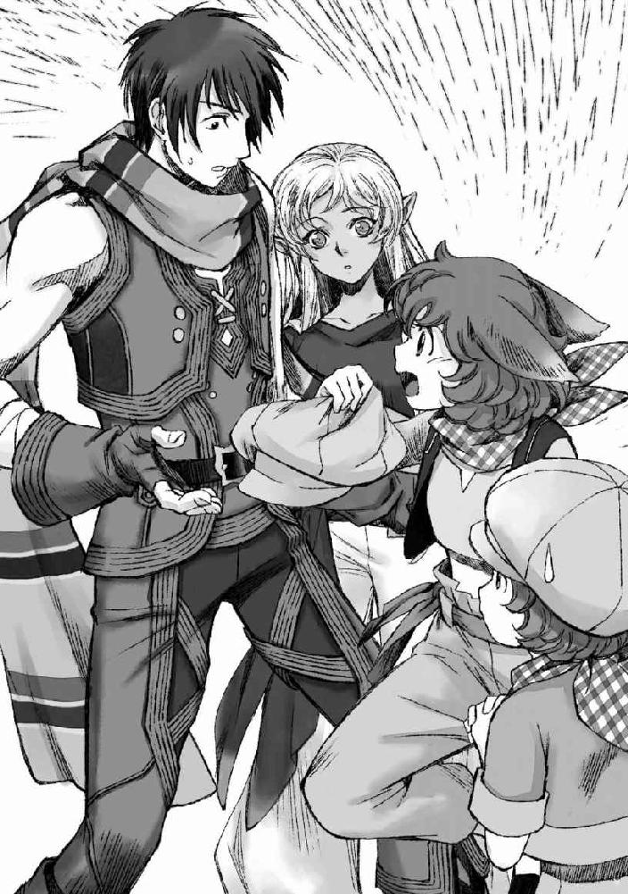
獣人。
それは、俺やイサトさんにとってある意味ではわりと馴染のある存在であり、ある意味においてはこれまで無縁の存在だった。
何故馴染深いのかと言えば、俺とおっさんの共通の友人であるリモネはずばり獣人だったからだ。ＲＦＣというＭＭＯＲＰＧの世界において、獣人はプレイヤーが初期から選ぶことが出来る種族の一つなのだ。プレイヤーが集まれば、四人に一人ぐらいは獣人がいる。
が......、当然ながらこうしてナマの獣人に遭遇するのは初めてのことだ。
俺やイサトさんが生きていた現代日本には獣人などという亜人種は存在しなかった。それ故に目を奪われる。
おそらくは猫系の獣人なのだろう。燃えるような紅蓮の波打つ髪は肩のあたりまで。同じ色をした▲が、警戒するようにひくひくと震えては油断なく周囲の様子をうかがっている。俺を睨みつける双眸は髪よりも暗い濃赤だ。ほとんど黒みがかったその中に、縦長の明るい虹彩がきらりと光をはじいている。年の頃は14、15といったところだろうか。アーミットより少し年上だろう。
が、アーミットが幼いながらも「女の子」であったのとは違って、この子は身に纏う空気がとても尖っている。しなやかを通り越して若干細身に過ぎる体つきは、女性らしい柔らかな曲線とは無縁で、それ故に痩せぎすの少年のように見えた。
彼女は親の仇でも見るような目で俺を睨み据えると、俺の差し出した帽子を乱暴に奪い取った。
「行くぞ」
「う、うん」
気弱そうに、彼女と同じようキャスケット帽を目深にかぶった少年が頷く。
こちらは７、８歳ぐらいだろうか。帽子の陰から、気弱そうなくりんとした双眸が時折見える。彼女よりも、少し明るい茜色の瞳には、不安が色濃く滲んでいる。
二人は俺の隣をすり抜けようとして──...
「けほっ」
年少の子が、小さく咳き込んだ。
「けほっ、げほっ、げほげほげほっ」
一度その小さな口から零れた咳は、一度始まるとなかなか止まらなかった。
げほりと今した咳が、次の咳の原因になる。苦しげに息を吸いこんでは、何度かの咳で吐き出して、また苦しげに息を継ぐ。隣に立つ少女が慌てて宥めるようにその背を撫でているものの、咳は止まらなかった。そろそろ黙って見ていられなくなり、俺はイサトさんと顔を見合わせる。
「なあ、水でも......」
「うるさい、どっかいけよ......！」
少女は苦しむ弟を前にしても、俺たちに助けを求めようとはしなかった。いや、俺たちだけではない。周りにいる誰に対しても、そうだった。まるで、自分たち以外誰も信じていないとでもいうように、頑なに少女は咳き込む弟の背を撫でる。いつまでも引かない咳に、不安と焦燥に泣きそうになりながらも、それでも彼女は助けを求めない。
ああ、そういえば。
先ほどゴロツキに絡まれている時もそうだった。
彼女は誰にも助けを求めなかった。
そして。
誰も、騒ぎに気付きつつも彼女たち姉弟を助けようとはしなかった。
なんだか、とてもやりきれない気持ちになる。
俺が手を出しあぐねているうちに、少年の咳はどんどんひどくなっていった。ついには呼吸が咳に追いつかなくなり、顔を赤くして咳き込み続ける子供は、やがて立ってもいられなくなったのか力なく蹲った。その背中だけが、咳に合わせてガクガクと揺れている。
「......っ」
「寄るな......！」
どうしていいかわからないながら、ただ黙って見ていることもできず、足を踏み出しかけた俺を射貫いたのは、咳き込み苦しむ子供の姉の双眸だった。まるで手負いの獣のように、彼女は俺を睨み据え、華奢な背中に弟を庇う。でも、それが弟にとって何の助けにもなっていないことは明白だ。
強制的に手を出すかどうか。
迷った結果、頭をよぎったのはカラットでのわるもの宣言だった。
俺たちはわるものだ。
したいことをすればいい。
「......イサトさん、わるものになりたいんだけどどうしたらいい？」
そんな俺の意図は阿吽の呼吸で伝わったのか、イサトさんが口を開く。
「あの子を抱きあげてやってくれ。このままじゃ土埃が刺激を誘発し続けて咳がますます止まらない」
「了解」
それでこの子が楽になるなら、お安い御用だ。
俺は大股に一歩を踏み出すと、全力で抵抗する少女を無視して、蹲る子供を抱きあげた。土埃が良くないらしいので、なるべく頭が高い位置に来るように抱き、咳に震える背を撫でる。
「っ放せ......！ ライザに触るな......!!」
怒鳴った少女が、腰裏に下げていた短剣を引き抜いた。
彼女は弟を護るためなら、俺を刺すぐらいのことは平気でやるだろう。
それはわかってはいたが、大した恐怖は感じなかった。
刺されどころさえ間違えなければ大した怪我は負わないだろう。
特に、今の俺はゲーム内のステータスを引き継いだおかげで防御力が高い。並大抵の攻撃は届かない。
もしかしたらそれなりに痛みは感じるかもしれないが。
「放せって言ってるだろ......!!」
癇癪を起こしたように少女が叫び、短剣を構えて俺へと突っ込んでくる。俺は好きにさせてやるつもりで、ふいと彼女から視線を切ろうとするが......。
イサトさんがするりと、俺と少女の間に入るのが目に入った。
「ちょ......っ、イサトさん!?」
焦る。
イサトさんの本日の装備はカラット村で手に入れた至って普通の服だ。
防御力などないに等しい。
相手は獣人の少女。
レベルは不明。
もしかしたら、イサトさんに攻撃が通るかもしれない。
そう判断したとたん、俺はナチュラルにインベントリへと手を滑らせていた。
ちなみに抱いていた子供は肩にひっかけている。落としたらすまん。
左腕でイサトさんの腰裏を攫うように強く抱き寄せ、同時に利き手の右で引きだした大剣を少女の手にした短剣に当てに行く。
抵抗する気を失わせたい。
そのために武器を弾こうと思っていたわけなのだが、思ったより力が入ったのか短剣は何か凄い音をたてて砕け散った。
「......oh」
「......oh」
何故か俺とイサトさん、揃ってリアクションが外人になった。
直接攻撃は加えていないものの、結構な衝撃が手にも伝わったのだろう。
痛みに呻きながら、顔を上げた少女と俺の視線が重なる。
何か違う理に生きるモノを見る目、だった。
畏れと、恐怖が滲んだような目。
──...あ、やらかした。
急速に後悔が胸を覆った。
敵味方のスイッチの切り替えが早いのは、俺の良くない性質だ。
彼女が俺に対して短剣を向けている間、彼女は俺にとっては敵でもなんでもなかった。
それは、彼女が俺に対して害を与え得る存在ではないと思っていたからだ。
だが。
イサトさんが間に入ったとたん、彼女は俺にとり「害をなす者」になった。
彼女の攻撃はイサトさんにはダメージを与え得るかもしれない。
俺の「身内」に手を出すものはすなわち「敵」だ。
そう、ナチュラルにスイッチを切り替えてしまった。
うまく力加減が出来なかったのは、そのせいだ。
ああ、やらかした。
俺はやっぱりどうも。
相変わらずちょっとおかしいらしい。
ちょっとは真人間に近づけたと思っていたんだが。
うそりと自嘲めいた嗤いが口の端に浮かぶ。
と、そこで。
「秋良青年、秋良青年」
ぺしぺし、と腕をタップされた。
視線を下ろす。
がっちりと俺に腰をホールドされたイサトさんが、どこか呆れたような顔で俺を見上げていた。
「もう大丈夫だから、その子、見ててやってくれ」
「......うん」
そっと、イサトさんの腰に回していた手を解く。
それから、大剣をインベントリにしまった後は肩に乗せてた子供の背を撫でつつ様子を見守ることにした。イサトさんの「大丈夫」は基本的に当てにならないが、こういうところでは噓をつかないというのはわかっている。
イサトさんは怯えの滲んだ目で俺たちを睨みながらも、決して一人で逃げようとはしない獣人の少女へと向き直った。
「君の、弟を守りたいという気持ちはよくわかるよ。でも、本当に弟を守りたいなら状況をよく見てやってくれ。私たちに悪意はない。ただ、君の弟を助けたいと思っただけなんだ」
イサトさんが、柔らかい声音で語る。
その言葉に、少女は俺の腕に抱かれた少年を見やり、その呼吸が先ほどよりも落ち着き始めていることに気づくと、憑き物でも落ちたかのように脱力してだらりと腕を落とした。じわり、とその濃赤の双眸に涙が浮かび上がる。その様子にイサトさんはふ、と小さく息を吐いた。
「泣かなくても──...だいじょうぶ」
優しく言いながら、イサトさんはそっと手を伸ばして少女の背を抱きよせる。呆然とイサトさんの肩に顔を埋める形になった少女の、硬くへの字に引き結ばれていた唇がわななくように震えた。ぽたぽた、とイサトさんの肩に涙が落ちて、それから彼女はわんわんと子供のように泣いた。
ああ、そうだ。
気を張っていても、彼女だって、まだ子供なのだ。
弱った弟を抱えて俺らと対峙して、どれだけ怖かっただろう。
ますます罪悪感に視線が遠のきそうになる。
そして。
俺の腕の中に抱かれた子供が「うぇろろろろ」とゲロった。
限界だったらしい。
「わあ」
イサトさんが他人事のように間の抜けた声をあげた。
半眼で見やれば、いやいや、と誤魔化すように何がいやいやなのかわからないことをのたまった。それから、小さく首を傾げて提案する。
「とりあえず、宿に戻らないか」
「そうだな」
「ほら、君もおいで」
俺は泣きじゃくりながら謝る子供を抱いて。
イサトさんはわんわん泣く少女の手を引いて。
傍から見たら誘拐犯にしか見えない態で、俺らは宿へと戻ることになった。
宿に戻った俺らは、周囲から向けられる好奇や非難の目をものともせず二階に取った部屋へと向かった。イサトさんがこっちへ、というので、少年を運びこんだのはイサトさんの部屋だ。
柔らかなベッドに下ろして、寝かせてやる。咳はだいぶ収まったものの、まだ少し息苦しそうにしている。イサトさんはそんな少年の上に身を乗り出すと、そっとその胸のあたりに耳を押し当てた。
「君、この子は息が出来なくなるような発作を起こしたりしたことがあるか？」
「な、ない......っ」
ぶんぶんと少女は首がもげそうな勢いで首を左右に振った。
「じゃあ風邪を引いた時に、咳がしばらく止まらなくなったりとかするようなことは？」
「それは、ある。今もそうだ」
「なるほど」
「イサトさん、何かわかるのか？」
俺は少年のゲロで汚れた服を脱ぎつつイサトさんへと問いかける。
イサトさんは何気なく俺の方へと視線を向けて......、ふお、と謎の声をあげて視線をついっとそらした。微妙に目元が赤くなっている。
「おいやめろそのリアクション、俺までいたたまれなくなる」
「いや、秋良青年が予想以上に良い身体をなさっていて」
「オヤジか」
セクハラされた気分だ。
「今度腹筋撫でまわさせてくれ」
「イサトさんが胸揉ませてくれたらな」
「............」
「悩むな」
そのうち交換条件を飲まれてしまったらどうすべきだろうか。
揉むだけで止まれる気がしないわけだが。
そんなことをつらつらと考えていると、馬鹿な応酬をしていた俺らを少女が戸惑ったように見つめているのに気付いた。
「イサトさんイサトさん、で、その子は大丈夫なの？」
「たぶん？ 私も医者じゃないのではっきりしたことは言えないが......、小児喘息なんじゃないだろうかな。喉の喘鳴はほとんどないが、咳にたまに変な音が混じってたみたいだったからな」
「ああ、確かに」
げほげほ、と咳き込む音に、時折「がひゅ」とでも言えばいいのか、空気が漏れるような変な音が混じり、その音がする度に咳が酷くなっていた。
「イサトさん、詳しいな」
「私も小児喘息持ちだったからな」
「あ、そうなんだ？」
「彼と同じく、風邪を引くと咳が止まらなくなるぐらいの、喘息としては軽度なので吸入薬とか使ったことはないんだけどな」
イサトさんは軽くそう言って、ひょいと肩を竦める。
そして、ふと考えるように視線を彷徨わせた後、口を開いた。
「秋良青年、一つ頼んでも良いか？」
「ん、何？」
「ちょっとお使いに行ってきて欲しい」
「いいよ」
俺とイサトさんの会話を、少女は変な顔をして見つめている。
そんな少女へと、イサトさんはちらりと視線を向ける。
「君にも頼みたいことが......」
「......エリサ」
「ん？」
「オレの......名前」
「エリサか。可愛くて良い名前だな」
「......っ」
イサトさんの言葉に、かっと少女、エリサの頰が赤くなった。
ネトゲ時代にも見てきたが、イサトさんは本当ナチュラルに乙女心をがっつり摑んでいく。何度もげろと思ったことか。実際にはもげるべきものはついていなかったわけだが。
「私は伊里だよ。イサト、と呼んでくれ」
「......イサト」
「そう。で、あっちが秋良だ」
「......アキラ」
「うん。で、弟くんの名前も聞いても？」
「ライザ」
「教えてくれてありがとう、エリサ」
ますます、エリサの顔が赤くなった。
「君にも買い物を頼みたいんだが良いか？」
「いい。でも、お金あんまり持ってない」
「ああ、代金については気にしないでくれ。私が買い物を頼むわけだしな。ちゃんと持たせるよ」
そう言ってイサトさんは腰に下げた皮袋の中から、１０００エシル硬貨を取り出してエリサへと渡した。
「たぶんこれで足りると思うんだが──...、大根を買ってきてほしいんだ。秋良青年は、倉庫にアクセスして蜂蜜がないかどうか探してきてくれ」
「たぶん......、あったような気はしている。なかったら、ちょっと狩ってくるよ」
「そうしてくれると助かる」
セントラリア近くには、蜂の巣と呼ばれるダンジョンがある。文字通りそこはハチに良く似たモンスターの巣穴になっており、そいつらのドロップ品の一つが蜂蜜なのだ。加工せずにそのまま使っても回復量が他の食材よりも大きいため、セントラリア周辺で狩りをするレベルのユーザーにとっては美味しい敵だ。また、ＭＰポーション代わりに使える蜂蜜酒の素材になることもあって、手に入った時には店売りせず、倉庫に溜めるようにしていた。
「でも、蜂蜜と大根でどうするつもりなんだ？」
「蜂蜜大根を作るに決まっているじゃあないか」
ドヤァとイサトさんは胸を張って言い切った。
ひとまずは俺らを信用する気になったらしいエリサは、イサトさんにライザを任せると、俺と共に宿を出た。着替えがないため、俺は上半身裸というワイルド極まりないスタイルである。まあ、この世界においてはそんなに目立たないのがありがたい。倉庫までお使いにいくついでに、露店で着られそうなものを買うとしよう。
「......なあ、アキラ」
「ん？」
宿を出たところで、エリサがおずおずと俺を呼びとめる。
足を止めて、その顔を覗き込む。
まだ怖がられていたら、と思ったが、その瞳に滲んでいるのは困惑だけで、そのことに少しだけ安心した。
「どうした？」
「アキラは、人間だろ？」
「うん」
まだ人間を辞めた覚えはない。
「なんで......人間なのに、アキラは略奪者の言うことを聞くんだ......？」
「ルーター？」
そういえば、先ほどのゴロツキも去り際にそんなことを言っていたような気がする。そして、この場合ルーター、という音が指しているのはイサトさんのことだろうか。
「イサトさんのことか？」
「......うん」
こくり、とエリサが頷く。
「ルーターが何なのかはよくわかんないけど......、なんで俺がイサトさんの言うことを聞くのかって言ったら、イサトさんのことを信じているから、じゃないかな」
信じるだとか、信頼だとか、言葉にするとなんだかこっ恥ずかしいが。
きっとそういうことだ。
俺は、いざという時のイサトさんの判断を信じている。
「......そっか」
エリサは、奇妙な顔で笑った。
泣きそうな、羨ましそうな、ほっとしたような、いろんな感情が混ざった、不思議な笑顔だった。
「んじゃオレ、大根買ってくる！」
「あいよ。俺は蜂蜜探してくるか」
「なあ、アキラ！」
「ん？」
「大根買うのに１０００エシルもあったばかりの奴に渡すイサトは危なっかしいから、オマエ、ちゃんと見てやれよ！」
「......おう」
目元を赤らめつつそう言ったエリサは、照れを誤魔化すように走って人ごみの中に消えていく。
「......そっか、子供から見てもやっぱりイサトさんは危なっかしいのか」
くくく、とこみ上げるままに笑いながら、俺は上機嫌に倉庫に向かって歩き出した。
とりあえず、倉庫にあっただけの蜂蜜をインベントリに移し、露店で購入したＴシャツを着て宿に戻ると、エリサもすでに戻っていた。イサトさんは、宿から借りてきたらしい包丁で器用に大根をサイコロサイズに切っている。
「ただいま。とりあえず蜂蜜あるだけ持ってきてみた」
「ありがとう。一個出してくれるか？」
「あいよ」
インベントリの中から、蜂蜜の瓶を一つ取り出す。
とろりとした甘そうな琥珀色が、透明な瓶の中で小さく揺れた。
イサトさんは宿から借りてきたらしい木匙で蜂蜜を掬うと、白湯の注がれていた湯吞の中へと落とした。かきまぜるお湯が、微かにとろりと粘度を帯びる。
「本当は蜂蜜大根のシロップをお湯で溶かして飲むのが一番なんだが......、まだ出来ていないのでまずは蜂蜜湯でも飲んでおいてくれ。甘さが足りないようだったら言ってくれ、追加するから」
身体を起こしたライザへと、イサトさんが湯吞を差し出す。戸惑いがちに姉の姿を探したライザに、エリサが小さく頷く。姉からのＯＫが出たことで少しは安心したのか、ライザはおずおずとイサトさんから湯吞を受け取ると、口元へと運んだ。
「わあ、甘くて美味しい......！」
「良かった。すぐに飲みこむんじゃなくて、喉で溜めるようなイメージで少しずつ飲むと良い」
「はぁい」
良い子の返事で、こくこくとライザが蜂蜜湯を飲み始める。
その間に、イサトさんは瓶に残った蜂蜜の中へと、サイコロサイズに切った大根をざーっと流し込んだ。
「エリサ、これの作り方を覚えておくと良いよ。蜂蜜大根は喉に良いんだ。たぶんライザの咳が酷くなるのは夜になってからだろ？」
「なんでわかんだよ？」
「私も同じだったからな。そういう時は、寝る前に蜂蜜大根のシロップをお湯で割ったものを飲ませてやるようにすると良い。噓みたいに咳が止まるから」
「大根や蜂蜜の量は決まってるのか？」
「適当で大丈夫。蜂蜜に大根をいれて二時間ぐらいおいておくと、とろみが薄れて蜂蜜が水っぽくなるから、そうなったら出来たと思っていい」
「わかった」
エリサはイサトさんの言うことを真剣な面持ちで聞いている。
と、そこで蜂蜜湯を飲み終えたライザが小さく欠伸をした。
イサトさんが、優しく目を細めてライザの頭を撫でる。
「ここしばらく咳のせいで眠れてなかったんだろうな、可哀想に。今日は少し楽になるだろうから、ゆっくりおやすみ。ああ......、でも家の人が心配するなら送った方が良いか？」
「家の人......」
くっとエリサが唇を嚙んだ。
「......いない。今は、オレとライザ、二人だけだ」
「......そうか。それなら今日は泊まっていくと良い」
「いいのか？」
「私は構わないよ」
「俺も別に」
袖擦りあうも多生の縁だ。
そもそも助けるつもりで手を出したのだから、異論はない。
それに、エリサからはもっといろいろと話を聞きたい。
俺らの知る頃とはだいぶ変わってしまっているように感じられるセントラリアのこと。そして、イサトさんをルーターと呼んだ理由。
あのゴロツキどもは、明らかな悪意をこめて、蔑むように『ルーター』という言葉を使った。放っておくには、いろいろと気になる。
「だけどよ、オレとライザがここで寝ちまったら、イサトはどこで寝るんだ？
ここ、イサトの部屋なんだろ？」
それはもちろん、後一つ部屋を取るに決まっている。
そう、俺が返事をするより先に。
さも当たり前のようにイサトさんが言った。
「秋良の部屋で寝るから大丈夫だよ」
「え？」
──え？
俺はびっくりするほどに追い詰められていた。
大ピンチである。
敵はイサトさんだ。
......ちょいちょいセクハラしているというのに、どうにも学ばないお人である。
ちなみに、お金に困ってるわけでもないんだしもう一部屋借りようという紳士的な申し出は、物理的にすでに宿の他の部屋が借りられている状況の前に完封されてしまった。
このタイミングで満員御礼になりやがった宿屋が憎たらしくて仕方ない。
駄目元で別の宿をとるというアイディアも提案してみたが、「そこまでして別の部屋に泊まる意味があるか？」と小首をかしげるポーズつきの疑問で粉砕された。
据え膳喰い散らかすぞこのやろー。
俺の煩悶など無視して、隣の部屋の姉弟に食事を差し入れたイサトさんは、現在優雅なお風呂タイムである。もう一度言う。お風呂タイムだ。イサトさんはお風呂タイム。メーデーメーデー。
俺が頭を抱えるすぐ隣、壁を一枚隔てた場所で、イサトさんは一糸まとわぬ裸身を晒して風呂に入っているのだ。脳裏に思い浮かぶのは、ぴっちりと身体のラインも露わにナース服を着こなしていたイサトさんのシルエットだ。拘束具めいた布から解放されたまろやかな褐色の身体の破壊力はいかほどだろうか。想像だけでいろいろまずい。いやほんと。マジで。
「寝よう。寝るしかない」
俺は呻くように呟いて、宿の主から無理いって借りてきたソファに身体を押しこんだ。身長１８０cmを超える俺にはかなり窮屈だが、このソファが俺にとっての生命線である。風呂から出てきたイサトさんが、どっちがベッドを使うか、なんて話をし始めたら俺の寿命が縮みかねない。もうすでに雑魚寝した仲なんだし、納屋の床で寝るのもベッドで寝るのも変わらないだろう、なんて言われたら死ぬ。主に俺の理性が。
ここは寝たふりで乗り切るしかない。いくらイサトさんでも、ソファにみっちり詰まって寝る俺を無理やり起こしてベッド談義を始めようとは思わないだろう。俺は目をつぶって、無になるべく宇宙の真理について思いを馳せる。
そんな最中、どうして俺がこんな風に苦しまなければならないのか、なんて考えてはいけないことをふと思ってしまった。
この我慢は必要なことなのだろうか。理性なんて放り出して、本能の赴くままにあの柔らかそうな肢体を貪って何が悪いのだろう。間違いなく裁判に持ち込まれたとしても、強姦は成立しない。イサトさんは自分から俺と同じ部屋で寝る、と言ったのだ。その時点で、その意思があると受け取られても仕方ないのだ。俺に罪はない。それにイサトさんにその意思がないというのはどこの筋の話だ。ソースは？ もしかしたらイサトさんだってそういうことを期待して俺と同じ部屋で寝るなんて言い出したのかもしれないじゃないか。それならばいっそ手を出さない方が失礼なんじゃないのか。そうだ。そうに決まっている。イサトさんだって、
「だああああああああああッ」
がごん。
全力でソファの手すりの角に頭を打ちつけて、俺は脳みその暴走を強制終了した。ものすごくあたまがいたい（物理）。
もしかしたら、イサトさんだってまるっきりその気がないというわけではないのかもしれない。少なくとも、嫌われてはいないと思う。
でも。
俺は。
イサトさんを泣かしてしまうことがこわい。
肉欲が満たされて冷静になった時、イサトさんが泣いていたら俺はどうしたらいいのだろう。きっと、俺は俺が許せなくなる。
だから。
「イサトさんまじじちょう」
そんな呪詛めいた呻きを残して、俺はフテ寝するしかないのだ。
念ずればなんとやら。
どうやら俺は、本当に寝てしまっていたらしい。
うっすらと目を開けて、窮屈なソファの中で身じろぐ。みしみし、とソファの肘置きが不穏な音を立てるのが聞こえた。部屋の中はすでにすっかり暗い。イサトさんも眠ったのだろうか。くわぁ、と小さく欠伸をして、俺ももう一度眠りなおそうと試みる。このまま起きていても、良からぬことを考えてしまうだけに決まっている。それならさっさと眠って、この生殺しの地獄のような夜を乗り越えてしまいたい。
そこで。
俺は失念していた。
目を覚ましたのには、目を覚ますだけの理由があるのだ、ということを。
ふわり、と鼻先を甘い香りが掠めた。
誘われるように、首をひねって顔をあげる。
無理な体勢で持ち上げたせいで、首の筋がぴきりと引き攣って痛んだ。
けれど、そんな痛みは大したことなかった。
ああ。
これが俺の目の覚めた理由か。
そこには、イサトさんが立っていた。
こちらの世界にやってきて以来、パジャマとして愛用されている節のある召喚師装備（上）。太腿までを申し訳程度に隠すその上着の下からは、形の良いむっちりとした長い脚がにゅっと伸びている。
寝起きで目にするには、とてつもなく心臓に悪い光景だった。
「イサト、さん......？」
「............」
イサトさんは俺の呼びかけには答えないまま、ぺたりと裸足で踏み出して俺へとの距離を削った。
「なあ、秋良青年」
「な、なに......？」
「私と話をしようか」
「え」
おいイサトさん。
あんた言ってることとやってることが違う。
話をしよう、なんて理知的なことを言いながら、イサトさんはとんでもない暴挙に出た。ソファにみっちりと詰まる俺の上に、乗ったのだ。跨りやがった。ブランケット一枚を隔てて、イサトさんの体温が俺の上に乗る。とんでもない光景だ。窓から差しこむ月明かりに照らされて、イサトさんはなんだか恐ろしいまでに美しい淫魔のようだった。
ああくそ。この人は、なんで。俺の我慢やら気遣いをこうしてぶち壊すような真似をするんだ。
「......イサトさん、どけよ」
「嫌だ」
「......あのさ。エルリアの街でも言っただろ。俺は男で、あんたは女なんだから、俺がその気になったらあんた抵抗できないんだぞ」
声が苛立ちに尖る。
イサトさんは、不思議なほどに無表情だ。
何を考えているのか読めない金色の双眸が、まっすぐに俺を見下ろす。
あんたは一体何を考えてるんだ。
今の居心地の良い関係を保つためには、お互い不可侵の壁を築く必要があるという話をしたばかりじゃないか。俺が不用意に壁を乗り越えてしまわないようにと、あんたにも下手にその気もないのに挑発すんなと警告したじゃないか。
「やれるかどうか、試してみたら良い」
「......ッ」
心底こちらを煽ろうとしているとしか思えない言葉に、かっと目の前が赤く染まった。ばきり、とソファの肘置き部分がついに折れる音が聞こえた。
次の瞬間には、俺はイサトさんの華奢な腕を摑まえて、体勢を入れ替えていた。
ソファに組み敷かれたイサトさんはほんの一瞬だけ驚いたように目を瞠って、その後はすぐにまた何を考えているのかわからない静かな金色が俺を見上げた。長く艶やかな銀髪が、ソファの上に蛇のようにのたうって広がる。その顔の横に手をつき、脚の間に己の膝を割りいれて押さえ込んだ。
「ほら、あんたは逃げられない」
顔を近づけて、威嚇するように口角を持ち上げて哂う。
怖がればいいと思った。
俺を押しのけようと、暴れてくれればいいと思った。
そしたらきっと俺は──...
「君が、本当にしたいことをしたらいい」
なんで。
なんで、そんな静かな声で受け入れるみたいなことを言うんだ。
駄目だろ。こんなの、駄目だろ。
ぐぅ、と喉の奥が鳴る。
まるで獣だ。
「なあ」
イサトさんは静かに語る。
ここに来て、あやすような柔らかな声音で話し出す。
「どうして君は、我慢するんだ」
「してない」
この状況で、何をどう我慢しているというのか。
俺は俺が恐れていた通り、理性の手綱を放してこうしてイサトさんに酷いことをしようとしてしまっている。いや、むしろもうすでにしている。
我慢できていたら、こんなことにはなっていない。
そう思ったら、腹の中でとぐろを巻いていた性欲だか怒りだかよくわからない熱が急速に引いていくのを感じた。いわゆる、心が折れた。ああしにたい。
がくりと項垂れる。
顔を上げられない。
イサトさんの顔が見れない。
「......ごめん、イサトさん」
押し出すようにして謝って、のろのろとイサトさんの上から身体を引く。
それを何故か引き留めたのは、やっぱりイサトさんだった。
「......何」
なんで、止めるんだこの人。
「私は、君のその顔が嫌いだ」
「............」
嫌われた。
イサトさんに、嫌われた。
涙が出そうになった。
でかい図体のいい年した男が、泣きそうになった。
「その、自分のことが嫌いで仕方ないって顔」
「......へ」
顔を上げる。
俺を見上げるイサトさんは、やっぱり何を考えているのかわからない顔をしていた。でも、なんだかとても優しいことを言われたような気がした。
「最初にひっかかったのは、カラットの村だ。アーミットが斬られたとき」
「......っ」
小さく息を吞む。
あの時、目の前でアーミットが斬られるのを見た俺は、極々自然に相手を殺し返そうと思った。アーミットの命を奪った男の命を、俺がこの手で奪ってやろうと思った。即座にそう決めて、実行しようとした。怒りにとち狂ったわけじゃない。俺は冷静にそう考えて、殺すと決めたのだ。
......我ながらどん引きだ。
平和な日本で安穏と暮らしてきた大学生の発想じゃない。
イサトさんにも言われたじゃないか。
『あんなにナチュラルに相手を殺す覚悟を決められる人を、初めて見た』と。
「それから君は、たまに嫌な顔をするようになった」
「嫌な、顔......？」
「自分自身を毛嫌いするような、それでいて何かを恐れているような曖昧な顔」
「......あ」
思い当たる。
カラットの村でしたことを、俺はイサトさんに隠し続けている。
俺たちに対して危害を加え得る敵だと判断した男を、俺はこの手にかけようとした。イサトさんが口にした「殺すな」という人道的な判断に悖ることを、俺はあっさりと行動に起こした。あの男が、俺たちに害を成す「敵」だと判断したから。
「最初は、この状況や、未来に対する不安なのかとも思った。いきなり戦闘に巻き込まれたり、目の前で人が殺されかけたり、衝撃的なことが続いたしな。そして、その不安を形にすることを、口にすることを恐れているのかと思ってた」
イサトさんの澄んだ金色の双眸が、俺を見上げる。
俺を見透かす鏡面のように、その瞳に俺が映っている。
イサトさんは、静かに告げる。
「君は一体、何を怖がってるんだ」
俺が、怖いもの。
イサトさんの静かな問いかけに、ふと心の中に浮かんだ答えは二つあった。
一つは俺自身であり──...、もう一つはイサトさんだ。
俺は、自分が怖い。
俺は、どうにも人間として淡泊だ。
だから、己と関係ない人間がどうなろうと関係ないと思ってしまうし、自分の敵だと認識した相手の命を奪うことに躊躇いを感じない。感じられない。
「俺さ」
懺悔のように、口を開く。
「ちょっとおかしいんだ」
「おかしい、って？」
「例えばなんだけど、イサトさんホラー映画だとかで、殺人鬼に追われるようなシチュエーションがあるじゃないか」
「あるな」
「倒した、と思って逃げてたら、実は生きてた相手にまた襲われて......、っていうのはそういうのじゃわりとよくある展開だろ？」
「そうだな」
「俺はそういうのを見るたびに、何でトドメを刺さないんだろうって不思議に思っちゃうんだ」
どうして、映画の主人公たちは殺人鬼が動かなくなった時点でその場を離れてしまうのだろう。何故、気絶で許してしまえるのだろう。俺ならそこできっと殺してしまう。動かなくなった相手が、本当にもう動かないかどうかを確かにする。そうでなければ、安心できない。
深く、息を吐く。
「俺、大学二年って言っただろ」
「うん」
「でも、21だ」
ストレートで進学していたならば、21ならば大学三年生であるはずなのだ。
俺は、一年遅れている。
「誕生日が早いか、浪人でもしたのかと」
「浪人──...、というか留年、というか」
「ゥん？」
「中二の時にさ、ちょっとした事件に巻き込まれたんだ」
「事件」
イサトさんが、復唱する。
「近所のコンビニで買い物をしてる時に、運悪く強盗にかちあった」
「それは──...」
「スキーマスクかぶって、包丁振り回して、金を出せって暴れてたよ」
極度の興奮状態で、誰を傷つけてもおかしくなかった。
後から聞いた話によると、よろしくないオクスリを服用していたらしい。
「だから、俺はそいつを店の中にあった脚立でぶん殴った」
フルスイングで容赦なくこめかみのあたりを殴り飛ばした。
そうしなければ、俺はもちろん、同じ店の中にいる他の客や、店員が助からないと思ったから。そして。
「俺は当たり前のように、そいつが追いかけてこられないように──...、そいつの足を折った」
興奮して、恐怖に我を失っていたわけではない。
俺は落ちついて、冷静に、追われたら困るな、と思ったから、追えないようにしたのだ。結果、犯人以外の怪我人を出さずに、事件は解決した。
「過剰防衛だとも言われたけど、俺は中二のガキだったからさ。特にお咎めもなかったよ。ただ、カウンセリングには通わされた。でもさ」
はあ、と深く息を吐く。
「俺、全然気にならなかったんだ。家族は俺のことを滅茶苦茶心配して、学校も休学させてくれたし、家族ぐるみでカウンセリングも受けてくれた。でも、俺は平気だったんだ。人ひとり脚立でぶん殴って足をへし折っておきながら、俺は何のトラウマにもならなかったし、罪の意識で苦しむようなこともなかった」
俺は、何とも思わなかったのだ。
あの男は俺にとって、日常を脅かす敵だった。
それに相手は犯罪者だ。
だから、排除した。
俺の中では、そこに罪悪感が発生する余地はない。
いや。
罪悪感があるとしたら、何も感じないことにこそ、罪悪感を覚えた。
「最終的にカウンセリングで、俺はソシオパスの傾向があると言われたよ」
ソシオパス。
社会病質的傾向。
良心と共感力に欠ける、欠陥のある人間。
「親はすごいショックを受けてた。そして、今まで以上に俺を『まとも』に育てるために気を遣ってくれた。だから、俺はずっと『まとも』になりたかった」
まともな人ならどう感じるのか。
どう行動するのか。
本を読んだり、人を観察することで、俺はそれを模倣した。
「自分だったらそうする」という行動よりも、「普通の人ならそうするだろう」という行動を優先して選ぶようにしてきた。
それでも、やっぱり俺はおかしかった。
アーミットを斬った盗賊、カラット村での薄気味悪い男、先ほどのエリサ。
俺は、相手が自分にとっての敵だと判断したならば、一切の躊躇いなく排除に動くことが出来る。
俺の中では優先順位があんまりにも明確で、迷いが発生する余地が少ないのだ。
俺はそんな自分が怖い。
「カラットの村でさ」
「うん」
「イサトさんは、殺すな、って言ったじゃないか」
「そうだな」
「でも、あの後に俺、薄気味悪い男に会ったって言っただろ？」
「うん」
「俺、本当はそこでその男を殺そうとした」
静かに、告白する。
イサトさんは、たとえアーミットを殺した敵であっても「殺すな」と口にした。
それがどうしてなのか、俺にはよく理解出来ない。
あれは結果的にイサトさんの使ったポーションが間に合ったから、アーミットが助かっただけで、あの男がアーミットに対して殺意を向けて行動を起こしたことがチャラになるわけではないと、思う。
だから別段俺としては殺してしまっても構わなかった。
「絶対殺す」から「殺しても殺さなくてもどっちでもいい」になっただけに過ぎない。
殺さなかったのは、イサトさんが止めたからだ。
イサトさんと揉めてまで殺すほどのことはないと思ったからだ。
ただ、それだけだ。
敵の命を奪う、ということに対しての躊躇が、俺にはない。
普通の人ならば、あの状況でも「命を奪うのは良くないこと」という常識に則って行動することが出来るのだろうか。
イサトさんが俺を止めたように。
普通の、人なら。
俺は、俺の感覚が普通でないことをイサトさんに知られることが怖かった。
まともで、人道的な感覚を持ち合わせるイサトさんに、恐ろしいバケモノであるかのような眼差しを向けられてしまうのが怖かった。
だから、言わなかった。
言えなかった。
「逃げようとしたところ、背中から斬り捨てた。まあ結局燃えてる家に逃げ込まれて見失ったけども」
殺すつもりで、斬りつけた事実は変わらない。
俺は自分に敵対する存在を倒すことに躊躇いを覚えない。
もちろん、無闇矢鱈に敵を殲滅したい、というわけではない。
話し合いで解決出来るのならそれが一番だ。
けれど、いざというときに俺は迷わないし、そのことに関しては罪悪感を抱かない。罪悪感を抱かないことに関しては罪悪感を抱いてしまうが。
「俺は、それをイサトさんに知られるのが怖かったんだ。
あの場で俺に『殺すな』と言えるような、真っ当な感覚を持ってるイサトさんに、俺のおかしいところを知られたくなかった」
懺悔のような俺の告白を聞いて、イサトさんは静かに息を吐いた。
少し、怖くてイサトさんの顔を見ることが出来ない。
視線を伏せていると、そっと伸びてきた手が、優しく俺の頰に触れた。
「イサト、さん......？」
「なんだか、随分悩ませてしまったみたいだなぁ」
ゆっくりと視線を持ち上げた先で、ふわりとイサトさんが柔らかな微笑みを浮かべる。その瞳には、俺に対する嫌悪や、恐怖の色はなかった。
そのことに、心の底から安堵する。
「私が、あの時殺すな、って言ったのは──...、別段あの男のことを庇ったわけじゃないよ」
「......え？」
それなら、どうして？
イサトさんはあの時俺を止めた？
「だったら、人を殺すのは良くないこと、だから？」
「それは大きな意味ではあるかもしれない」
現代社会において、殺人は許されない罪だ。
ぎりぎりで正当防衛が認められているが、それだって正当防衛として認められるのは難しいという話を聞く。
復讐や、仇討による殺人も認められてはいない。
そんな社会でこれまで生活してきた故に、イサトさんがその常識を捨てられないというのも当然だろう。
そう納得しかけた俺を見上げて、イサトさんは言葉を続ける。
「人を殺すのが良くない、というよりも──...」
イサトさんがまっすぐに俺を見つめる。
深い金色の瞳に、吸い込まれてしまいそうだ。
「君に、そんなことで傷をつけたくないと思った」
息が、詰まった。
俺を、傷つけたくない？
「私も現代日本育ちで基本平和ボケしてるから、トンチンカンなことを言ってるかもしれないけど、さ。人を殺すことでトラウマを背負うとかってよく聞くだろう」
「......ああ、確か、に？」
日常的にそういった出来事が身の回りで起きているかといったらそんなことはないが、確かに映画やドラマ、伝え聞くエピソードとしてそういった話は珍しくない。むしろ、俺はそういったエピソードに触れるたびに、罪悪感を抱かない自分自身への嫌悪を深めていたような気がする。
「私は結構海外ドラマの刑事ものが好きでよく見るんだけど......、犯罪者から市民を護るためにいざというときに躊躇うな、と彼らは訓練されているのに、それでも現場で犯人を射殺することに躊躇ったり、する」
「うん」
「それだけじゃなくて、犯人を射殺してしまった後にはカウンセリングにかかったりも、する」
「うん」
「ドラマは創作で、本当の話ではないかもしれないけれど......きっと、そう間違ってるってわけではないと思うんだ」
「うん」
「人の命を奪う、っていう決断や、行動の生むストレスっていうのはさ。きっとあるんじゃないかって私は思ってる」
「......だから、止めた？」
「そう。だから、止めた。
君に、そんな負荷を背負って欲しくなかったから」
ここは異世界だ。
俺たちが暮らしていた世界とは異なる理で動く世界。
それでも、現代日本で育った俺たちの中には、「人の命を尊重する」という概念が根強く存在している。
イサトさんは、その概念が俺を苦しめる可能性を考えて、あの時止めてくれたのだ。あの男に対する同情でも、常識に則った判断としてでもなく、あくまでも俺のために。
「あんな男のために、君が傷つく必要はない。君がストレスを抱えてまで手を下す必要はないと思ったから、止めた」
「──...、」
深く息を吐き出しながら、俺は力尽きたようにイサトさんの肩口に額を押し付けて突っ伏した。いろいろいたたまれない。イサトさんは、そんな俺の頭をもしゃもしゃと華奢な指先でかき撫でた。
「私は、君を信じてるよ」
「......俺の、何を？」
「君の、判断を。だから、私は君を怖がらない」
「......いきなり飛ばされた異世界でナチュラルに殺す覚悟を決められる男、なのに？」
「......嫌みだな」
つん、と髪を引っ張られた。
今までと変わらない甘やかなじゃれあいに、くつ、と喉を笑みに鳴らす。
「これはあくまで私の意見なのだけれども。根っからの良き人であるよりも、良き人であろうと努力して良くあることの方が凄いと思うんだ」
「───、」
静かに息を吞んだ。
そんな風には、考えたことがなかった。
努力しなければ、普通であれないことがコンプレックスだった。
考えなければ、普通の人の考え方がトレースできない自分が厭だった。
「優しくあろうと努力してるから、君は他の誰よりも優しい」
「......そうか？」
「そうじゃなかったら、私はとっくに犯されてる」
「ぶ」
イサトさん、自覚あったのか。
「だから、秋良。君は──...、自分を誇って良いよ」
「イサト、さん」
「あんな風に、自分を嗤うな」
「............」
柔らかく、それでいてどこか拗ねたような声で言われて、ふと思い当たった。
「......イサトさん、もしかしてお怒りでした？」
「うん。お怒りです」
しれっと認められた。
「......だから、わざと俺を挑発した？」
「............」
イサトさんは無言でやんわりと微笑んだ。
このやろう。本当。このやろう。
俺が悶えることを織り込み済みで、イサトさんは俺の部屋に泊まるなんて言い出したのだ。
「俺が悪かったから、もうそんな自分を人質にするような嫌がらせはやめてくれ、本当。俺がもたない」
「知ってる」
「......タチ悪ィ」
深々と溜息をついた。
本当、この人には敵わない。
「それじゃあ、秋良青年、そろそろどいてくれ。重い」
「へいへい」
のっそりと、俺は今度こそ邪魔されることなくイサトさんの上から身体を起こした。それから、何気なく手を取ってイサトさんを引き起こしてやろうとして。
「......、」
イサトさんの手が、酷く冷えていることに気付いた。
ああ、そうだよな。
いくらイサトさんがタチの悪いおっさんだとしても。
ガタイの良い男に組み敷かれ、凄まれて、怖くなかったわけがないのだ。
ごめん、なんて言葉が喉奥まで出てきたのを、飲みこんだ。
謝っても、イサトさんはしらばっくれるだろう。
だから。
「ありがとう、イサトさん」
「いいってことよ」
返事はやっぱり男前だった。
翌日。
どうにか奇跡的にいつもの時間に目が覚めた。
といっても、時計があるわけではないので、あくまで感覚の問題だ。窓から差し込む朝の光が白々しく、まだ早い時間だということを教えてくれる。
ソファから身を起こすと、ぎしぎしと体が軋むように痛んだ。
片方の肘置き部分を破壊してしまったとはいえ、窮屈なソファで寝たせいでどうも全身が強張っている。ぐっと大きく伸びをすると、ぺきぺきと身体のあちこちが鳴った。
......っていうかソファのこと、後で宿の主人に謝りにいかないと。
ぼーっとしがちな頭をわしわしとかいて、ベッドへと視線をやる。
どうやらイサトさんはまだ寝ているらしい。相変わらず朝に弱い......というか寝起きに弱い人である。
「イサトさん、朝だぞ」
声をかけてみる。
反応はない。
すっぽりと頭までシーツにくるまっていて、俺から見えるのはこんもりと丸くなったシーツの塊の中からはみ出た銀髪ぐらいだ。
「イサトさん、朝だってば。まだ寝る？」
昨夜はいろいろあって遅かったので、イサトさんが寝たいというのなら起きるまで寝かせてやっても構わない、とは思う。ただ、隣の部屋にいるエリサとライザの姉弟を放っておくわけにもいかないので、その場合一旦イサトさんを一人で部屋に置いていくことになるだろう。
ぎしりと音をたてて、ベッドに腰を下ろす。
「イサトさん」
そっと名前を呼んでみる。
なんとなしに、シーツからはみ出た銀髪を指先に絡めとってみた。
同じ髪でも、俺の硬い黒髪とは全然違う感触に驚く。しなやかで柔らかで、つるつるすべすべとしている。これが美容室と散髪屋の違いというものか。
「イサトさんってば」
軽く肩のあたりを揺らすと、ごろんとイサトさんが寝返りをうってこちらを振り返った。が、まだ目は開かない。そしてそのままイサトさんはにじにじと俺の方へと芋虫のような動きでにじり寄ると、膝に頭を乗せようとして......力尽きた。
「あきらせいねん」
「なんだ」
「にくあつ......」
何やらシーツの中から哀しげなうめき声が聞こえた。
どうやら俺の太腿の厚みに負けたらしい。
それなりに鍛えているので、確かに膝枕するのには若干高さがあるのかもしれない。今まであまりそんな機会に恵まれてないのでよくわからないが。
俺はどちらかというとイサトさんに膝枕していただきたい。
「で、朝だけどどうする？ 俺は適当に朝ごはん見繕って隣に顔出そうと思ってるけど」
「ん、ん......」
唸って、イサトさんがもぞもぞとシーツの中で身じろぐ。
起きるんだろうか。っていうか起きられるんだろうか。
「起きられそう？」
「おき、る」
どう考えても途中で力尽きそうだぞコレ。
「秋良青年は、先に行っててくれ......、私は、着替えてから、行く、から......」
「............期待しないで待ってる」
二度寝フラグがびんびんに立ちまくっている。
俺はぐしゃぐしゃ、と一度イサトさんの頭を撫でてから、隣の部屋に顔を出してみることにした。
こんこん、とドアをノックしてから、一声。
「起きてるかー？」
すぐにばたばたと物音がして、ドアが開くと中へと招き入れられた。
感心なことに、エリサもライザも二人ともとっくに起きて新しい一日を始める準備が出来ていたらしい。
「おはよ、よく眠れたか？」
「うん。ライザの方も昨夜はほとんど咳もなくて助かったぜ」
「そりゃ良かった」
そんなやりとりをしていると、エリサがきょろきょろと俺の背後を窺うようなそぶりを見せた。
「イサトは？」
「まだ寝てる。昨日ちょっといろいろあって遅かったから」
俺の方はイサトさんが風呂に入ってる間に一度は寝ているので、まだマシなのだが......って。あれ？
俺が無理矢理寝入ってからイサトさんに起こされるまでの間に、結構なラグがないか？
四人での夕食を終えて、それぞれ部屋に戻って。俺が先に風呂に入って。そして俺はイサトさんが風呂から上がるのを待たずに強制終了的にフテ寝して......、そして深夜に起こされた。
俺が寝てる間、イサトさんは一体何をしてたのだろう？
話があるのなら、風呂から上がってすぐに急襲しててもおかしくはないのだが。
そんなことを考えていると、何やらちょっとじとりとした目でエリサに見つめられてしまった。何故か、その目元がほんのり赤い。
「............オマエ、手加減してやれよな」
「ぶふッ」
噴いた。
え。まって。ちょっと待って。それってどういう意味だ。いやなんていうか意味はわかるが盛大に誤解だ。未遂だ。
エリサは気まずそうにちょろりと頰を赤らめたまま視線をそらしている。
まてまて。この誤解を放置しているといろいろとアレだ。アレがコレでソレがアレだ。
「落ち着け」
「オマエが落ち着け」
至極もっともなツッコミを喰らった。
このけもみみ娘、やりおる。
「誤解だ」
俺は両手をエリサの肩におき、じっと真摯な視線を向けてはっきりと言う。
人間話し合えばわかり合えるはずだ。
「別に......隠さなくてもいーだろ。オマエら恋人同士なんだし」
「違う」
被せ気味に速攻で否定した。
もじもじとこういった話題を口にすることすら気恥ずかしいのか、目元を赤く染めて視線をさまよわせがちなエリサの様子はいかにも思春期っぽくて微笑ましいと思うが、今はそれを堪能している余裕はない。
「は？ でもイサト昨夜オマエの部屋で寝たんだろ」
「ああ」
「ならやっぱりそういうことじゃねーか。普通恋人でもねー男の部屋に泊まる女なんていねーし」
「その言葉イサトさんに言ってやってくれ頼む」
魂の訴えだった。
俺の大真面目な反応に、だんだんエリサの表情が胡乱になっていく。
そうだろうそうだろう。
まさか恋人でもない男の部屋に、年頃の女性が泊まるなんて普通は考えられないだろう。ほれ見ろ。やっぱりイサトさんは反省すべきだ。
俺の理性があとほんの少しでもパァンとなっていたら、いろいろ取り返しのつかない事態になっていたに違いないのだ。
いくら俺の口を割らせてちゃんと吐き出させたかったからにしても、もっと自分の身の安全を考えた作戦に出るべきなのだ。あんなの、自爆覚悟の特攻技すぎる。
「......なんか、イサトさんが俺と話したいことがあったらしくて。まあ、それで昨日遅くまでいろいろ話してたんだよ」
前半わりと肉体言語よりだったが。
馬乗りになられたときには死ぬかと思った。主に俺の理性が。
「あー......、それで、なのか？」
もう少し誤解を解くには時間がかかるかと思いきや、ふとエリサは困惑したように小さく呟いた。
「何がだ？」
「昨夜イサト、めっちゃ長風呂してただろ」
「あー......俺、イサトさんが風呂から上がってくる前に一回寝ちまったからな。音、聞こえてたのか？」
「うん。なんか三時間ぐらいずっと水の音が聞こえてた気がする」
ふやけるぞイサトさん。
女の人は風呂が長いというのは定説ではあるが、それにしても長すぎやしないか。一体どこを洗ってるんだ。っていうか何をしてるんだ。
「で、なんかブツブツ言ってるのが聞こえた」
「え」
「水の音で全部聞こえたわけじゃねーけど。隣の部屋だし」
どくん、と。
鼓動が跳ねた。
「なあ」
「ん？」
「なんて言ってたか、わかる範囲で教えてくれないか？」
「えーっと確か......」
エリサは思い出すように小さく首を傾げて、それから昨夜イサトさんが風呂場に長時間こもって繰り返し唱えていたという言葉を教えてくれた。
それは。
その言葉は。
『やれるいける怖くない信じろ大丈夫』
あんな、何考えているかわからないポーカーフェイスだったくせに。
本当はビビってて、一生懸命自分を奮い立たせて、俺が最終的には踏みとどまるに違いないと信じて挑発しに来たのかと思うと。
嗚呼。
本当、たまらない。
「おーい、アキラ、アキラってば。おい」
はっ。
どうやら俺は、しばらくエリサの肩をがっちりホールドして見つめたままフリーズしてしまっていたらしい。
脳が無事に再起動してくれたので、こほんと咳払いして、何事もなかったかのようにエリサを解放する。
「おいアキラ」
「ん？」
「オマエ、顔真っ赤だぞ」
「そっとしておいてくれ」
青少年もいろいろ大変なのだ。
こん、と二度目の咳払い。
「まあそんなわけで、イサトさんはまだしばらく起きてこない気がするから、先に朝飯にするか？」
「御馳走になっていいのか？」
「良くなかったら誘ってない」
俺がそういうと、エリサは部屋の奥の方でこちらの様子をうかがっていたライザを振り返って、視線を交わした。それから、何か覚悟を決めたようにお互い小さく頷きあう。
「あのさ、アキラ」
「なんだ？」
「オマエら、オレたちに何かしてほしいこととか、ねーのか」
「え？」
エリサの横に、ライザも並んで俺を見上げる。
「僕たち、お礼がしたいんです。何か、役に立てることはありませんか？」
「ライザはまだ小さいから無理だけど、オレならモンスターだって狩れる。オレは獣人だから、その......っ」
なんだか、ちょっと胸がじんわりとあったかくなった。
あんなに警戒心の強かったエリサが、俺たちに向かって何かお礼がしたい、と口にしてくれた。何をしてやる、と具体的な内容を言うのではなく、「何か出来ることはないか」と俺たちに選択権を委ねている。
きっと、この言葉を言うために姉弟二人で話し合ったのだろう。
話し合った結論として、俺たちを信じて、その言葉を口にしたのだろう。
そう思うと、嬉しくてつい二人の頭をぐしゃぐしゃと撫でてしまっていた。
「わっ、何すんだよ！」
「わあっ」
柔らかな獣耳も巻き込んで、わしゃわしゃと撫でたくる。
「ありがとな。イサトさんが起きたらイサトさんの意見も聞いてみることにはなると思うけど......とりあえず、俺からも二人に頼みたいことがあったんだ」
俺の言葉に、エリサとライザは二人してきゅっと手を握って表情を引き締める。
......む。そんな覚悟をされてしまうような無茶ブリをするつもりはないんだが。
「俺とイサトさんはものすごく遠いところから、ここに来たばかりなんだ。冒険者の資格もつい先日とったばっかだ」
どれくらい遠いのか想像も出来ない、遥か彼方の異世界よりこの世界にやってきた。
「だから、この街の事情や、文化とかが全然わからない。もし、エリサやライザが大丈夫ならでいいんだが、俺らがここにいる間、いろいろと教えてくれないか？」
「......そんなことで、いいのか？」
エリサが、どこか不安そうに瞳を揺らしながら聞き返す。
そんなこと、とエリサは言うが、俺やイサトさんにとっては結構な大問題だ。
「家」を整えようにも、どこまでが実現可能で、どこにいけばそういったことが出来るのかすらわかっていない。それどころか、昨日から違和感ばかり覚えるこの街の情勢のことだってわからないのだ。
そんな俺たちにとって、もしもこの姉弟が情報源となってくれたなら、非常に心強いことこの上ない。
「たぶんイサトさんも同じことを言うと思うので、ちょっと考えておいてくれ」
「いや、考える間もなくそんなことでいいなら全然やるよ」
「うん、僕も街の案内ぐらいなら出来るから！」
「そっか、ありがとな」
わっしゃわっしゃわっしゃ。
二人の頭を撫で繰り回す。
どこか拍子抜けしたような、ほっとしたような表情で二人は気恥ずかしそうに笑った。
「それじゃあまずは、朝めしをどうするか、だな。このままここで喰ってもいいけど、お前らどっかおすすめとかあるか？」
俺の質問に、エリサとライザが顔を見合わせる。
「中央通りのパン屋のサンドイッチは？」
「この時間だと混んでない？」
「朝の屋台ならそう並ばず買えると思うぜ」
「そしたらそのまま噴水のベンチで食べるとかどうかな」
「いいな」
二人して目をきらきらさせながら話しあっている。
これは期待出来そうだ。
そして、外に食べにいくつもりならばイサトさんを起こす必要がありそうだ。ちなみに、こうして俺らが話している間、隣から物音は一切しない。間違いなく二度寝に突入しているぞ、あの人。
「二人はもう外に出る準備はばっちりか？」
「おう！」
「うん！」
「じゃあちょっと俺はイサトさんを起こしてくるとするか」
「あ......でも、イサト昨夜遅かったんだろ？ 寝かしてやった方がいいんじゃねーのか？」
「や、この状況で起こさない方が後で面倒だと思う」
別に俺とエリサ、ライザと三人で買い物に出掛けても良いのだが、たぶん事後報告でそれを聞いたら、イサトさんは間違いなくなんで起こしてくれなかったんだ、と拗ねるだろう。一度起こして、それでも駄目なら置いて行けば良い。
「んじゃちょっと待っててくれ。イサトさんに声かけてくる」
俺はそういうと、二人の下を後にした。
丸くなって二度寝に突入していたイサトさんに声をかけてみたところ、案の定のろのろとではあるものの動きださせることに成功した。
「あきらせいねん」
「なんだ」
「あっちむいてほい」
「へ？」
突然のあっちむいてほいに、とりあえず釣られておく。
一度あらぬ方向に視線をやってから、イサトさんへと視線を戻し、今のは何だったのかと聞きかけて──...、息を吞んだ。
イサトさんが、着替えていた。
おそらくインベントリに用意してあった服をクリックすることで着替えをすませたのだろう。まだ少しぼーっとした様子で、服の裾を軽く引っ張って整えたりなどしている。
その仕組み自体は俺も把握しているので、特に驚くようなことではないのだが......、俺が息を吞んだのは、その着替えた後の格好のせいだった。
本日のイサトさんは、まさかの赤ずきんである。
「......どういった心境の変化で？」
まさかイサトさんが好き好んでコスプレシリーズに走るとは思っていなかった俺である。もちろんそのうちなんやかんや理由をつけて着てもらおうとは思っていたが。
「心境の変化っていうか......、手持ちの服がこれしかないんだ。ナース服は君の『家』に干したままだし」
「あ、なるほど」
少しずつ目が覚めて来たのか、しっかりとした口調でイサトさんが欠伸交じりに俺の疑問に答えてくれた。
イサトさんとしてはカラットの村で手に入れた服が一番無難で気に入っているらしいのだが、あちらは昨日着たばかりだ。おそらく本日洗濯のターンである。そして本人が言ったように、ナース服は俺の『家』に干されている。これからしばらくは砂漠服↓ナース↓赤ずきんのローテーションで着回すことになるのだろう。
個人的には、ナースと赤ずきんのローテでお願いしたいところだ。なんせカラットで手に入れた服は防御力という面ではあまりにも頼りにならない。あのヌルっとした人型のような存在がどこに潜んでいるかわからない今、あまり油断はしたくないのだ。
まあ、そういう真っ当な理屈だけでもないけど。
八割ぐらい下心だけど。
......ほら。なあ。ほら。やっぱり綺麗な脚は見たいじゃないか。
そっとさりげない様子を装って、イサトさんへと視線を流す。
ダークレッドのフード付きマントの下には白のふわっとしたシフォンブラウス。その上から重ねられたのは黒のコルセットだ。胸を張りだすように強調しているのが何ともたまらない。薄着とは逆に布を重ねているというのに、それによって胸の膨らみだったり、ウェストの華奢な細さをこれでもかと言わんばかりに強調している。コルセットとは良いものだ、としみじみ思ってしまう。
そんなコルセットの中心には白い細紐が丁寧に編み込まれており、その思わずちょいとつまんで引っ張りたくなる感じといったらもう言葉にならない。はらりと解けた瞬間の、張りつめていた身体のラインがたゆん、と柔らかく弛緩する様を想像するだけでごくりと喉が鳴った。妄想はどこまでも広がりまくりんぐ。
下はダークレッドのフレアスカートで、その下にパニエを重ねているのか、ふわっと広がったスカートの下からちらちらと白のフリルが見え隠れするのが可愛い。そして、例によって例のごとく、その形良い脚を隠すのは黒の編み上げニーハイブーツである。
先日のナースがスタイリッシュなエロティシズムだとしたら、こちらは可愛らしさの中にエロさが潜んだ感じで、これまた趣が変わってなんとも良い。
「......良い」
「ん？」
「や、こっちの話」
しれっと誤魔化しておく。
それから、エリサとライザと合流し、階下へと下りる。
「あ、俺鍵預けてくるから、イサトさんたち先外に出ておいてくれ」
「わかった」
この宿では、出掛ける時に鍵を預けることになっているらしい。俺は床をモップで拭いていた女将さんへと鍵を預ける。そして三人の待つ外へと出ようとしたところで、ふとソファの件を思い出した。
「あ、そうだ。俺の部屋なんですけど、昨日ソファの肘置きの部分を片方壊してしまって」
「あら、まあ」
「ちゃんと弁償するんで、宿代と一緒に請求して貰ってもいいですか？」
「もともと古いソファでしたからねえ......、わかりました。主人にそう伝えておきますよぉ。でも、昨夜は随分とお静かでしたねぇ？」
「え？」
「部屋を貸し切るから、きっと騒ぐおつもりなのかと思ったのに」
「............」
..................。
思わずひくりと笑顔が引き攣った。
部屋を貸し切る。
何の話だ。
「ちょっとそれ詳しく」
「え？ お連れさんが他の部屋も全部貸し切っちゃったんですよぉ。おかげで久しぶりに満室なんてことになりました。聞いてないんですか？」
聞いてない。
そんな話は聞いてない。
どうやら、俺は完全にイサトさんの掌の上で転がされまくっていたらしい。
犯人は、イサトさん。
ちょっと恥ずかしいぐらいに顔が赤くなっている自覚はある。
俺がどうにか平静を装って三人と合流した後は、のんびりとセントラリアを見て回りながら、目的の屋台を目指すことにした。
エリサとライザと一緒に見て回るセントラリアは、俺とイサトさんが二人だけで回るよりももっと興味深い。
なんせ、地元っ子の二人が競うようにしていろいろなことを教えてくれる。
そんな中で一番度胆を抜かれたのは、俺たちの知らない『生活魔法』なんていうスキルの存在だった。
イサトさんの、旅の間も着回すことが出来るぐらいちゃんとした服が欲しい、というぼやきに反応して、ライザがきょとんと「生活魔法じゃ駄目なの？」と言い出したのだ。
なんでも、この世界では旅や冒険をする上で便利なちょっとした魔法が、『生活魔法』というスキルによって補われているらしい。
例えばその中の一つである「クリーン」と呼ばれる対象物をきれいにする魔法を使えば、泥水を人間が飲める程度の真水にきれいにしたり、着ている服ごと身体をさっときれいにすることが出来るらしい。
その他にも「ウォーター」といって何もないところから水を生成する魔法などもあって、それらの『生活魔法』はこの世界で生活する上では必須スキルなんだそうだ。二人の話しぶりを聞いた感じだと、どうやら俺たちの世界で言う家電感覚でそういったスキルが便利に使われているようだ。
「さすがだなー......」
「うん、リアルだ」
イサトさんと思わず顔を見合わせる。
魔法、という俺たちにとっての不思議概念が、生活に紐付いて存在しているというのが新鮮なのだ。
ゲームとしてのＲＦＣにおいては、魔法スキルというのは主に戦闘において使われるものだった。援護系、直接攻撃系といろんな種類はあったが、どれも共通するのは「戦闘」という限られた場面で使うことしか想定されていない、ということだろう。ゲームという薄っぺらい世界において、魔法の使い道なんて、いかに敵を倒すか、ぐらいしかなかったのだ。
が、実際に魔法という概念が存在する世界で生活していれば、その生活の中に魔法を便利な形で取り入れようと考えるのは極々自然な発想だ。
実際エリサとライザの二人もそういった『生活魔法』のスキルを持っていて、お互いに役割分担でスキルを使って暮らしているんだそうだ。
「......オマエら、よく生活魔法知らないでここまで旅して来れたよな......」
「......セントラリアに着くまで、どうやって生活してたんですか......？」
エリサとライザの姉弟にドン引きされてしまった。
二人は俺らが野営に野営を重ね、原始的な旅の果てにセントラリアに辿りついた図を想像したようだ。実際には、あのヌメっとした人型に遭遇するまでは、わりと快適な空路を楽しんでいたわけなのだが。
「なあ、どっかで生活魔法のスキルロールって買えるか？」
「朝飯が済んだら案内してやるよ」
「助かる」
生活を楽にするための『生活魔法』のスキルが存在するのなら、同じように生活を楽にするためのマジックアイテムもあるだろう。
家の整備にも期待が出来る。
朝食が済んだら、その辺りのこともエリサに相談してみるか、なんて思いつつ歩いていたところ──...ふと、目の前に影が差した。
「ん？」
顔をあげる。
俺たちの行く手を阻んでいたのは、やたら綺麗な鎧に身を包んだ騎士と、その他もろもろの御一行様だった。見覚えのある白を基調にした鎧と、盾の中に聖杯が描かれた紋章からして、おそらくセントラリアの守護騎士だろう。
だがその他もろもろ、の部分がよくわからない。
良く言えば恰幅の良い、悪く言えばよく肥えた金持ちそうなおっさんと、その護衛というか取り巻きというか、といった男たち。
何を共通点に集まった御一行なのかがわからない。
用件はなんだ。
俺が訝しげに眉間に皺を寄せている間にも、太った男と騎士を中心に、御一行はぞろりと俺らの行く手を阻むように展開する。そして、すっかり俺たちを取り囲んだところで、正面に立っていた騎士が一歩前に出た。
「私はセントラリア守護騎士団に所属するライオネル・ガルデンスである」
「......はあ」
そのライオネル・ガルデンスが俺たちに何の用だ。
俺も、連れの三人を庇うようにして一歩前に出た。
イサトさんはいつもと変わらぬ様子で目の前の男たちを眺めているものの、エリサとライザの反応は顕著だ。明らかに警戒しているのがわかる。
「............飛空艇のことがバレたかな」
ぽそりと、小さくイサトさんが呟くのが聞こえた。
だろうな、と俺も小声で返す。
それ以外、セントラリアの守護騎士に囲まれる覚えはない。
だが、どうにもそれにしては様子がおかしいような気もした。
飛空艇を墜とした下手人に事情聴取、もしくは逮捕に来るには、ちょっとメンツが不自然ではなかろうか。
何故騎士団ではなく、騎士と、その他もろもろなんていう組み合わせでやってきたのか。
俺を見据えて、ライオネル・ガルデンスと名乗った騎士が口を開く。
「貴様らに罰金の徴収に来た」
やはりそう来たか。
俺はちらり、とイサトさんを見る。
イサトさんも、覚悟したようにこくりと頷きを返す。
俺とイサトさんの財産でなんとかカバーできる程度の額だとありがたいわけだが......、何せ墜としてしまったのは公共の交通手段である飛空艇である。
ゲーム内でも価格が設定されていなかったため、どんな天文学的な数字をぶつけられるかわからないあたりが若干怖い。
ごくり、と覚悟を決めて俺とイサトさんは騎士の言葉を待ち──...。
「貴様らは先日、公共の場で剣を抜くという危険行為に及んだ」
ん？
「よって、罰金は一人あたり１００００エシルである。可及的速やかに納付するように」
おおおおお？？？
思わずぽかんとイサトさんと顔を見合わせてしまった。
公共の場で剣を抜く？
１００００エシル？
飛空艇を墜としたことは関係ない......、のか？
「ちょっと待てよ、オレが先に剣を抜いたんだ！ アキラはあくまでオレに応戦しただけなんだよ！ だから罰金ならオレだけに」
「ならん。街中で剣を抜いたことに変わりはない」
横からすり抜けるように飛び出したエリサが、騎士へと抗議の声をあげる。
が、それに対する騎士の返事はあくまで冷やかだった。
なるほど。
どうやらここ、セントラリアにおいては、公共の場で剣を抜くことは危険行為として禁じられているらしい。いわゆる銃刀法違反ということになるのだろう。
法律としてそう決まっている、というのなら、特に逆らうつもりはない。
実際、周囲に一般の人間がいる中で大剣を抜いたのは事実なのだから。
「いいよ、エリサ」
俺はふしゃーっと毛を逆立てた猫のようになってるエリサの肩にポン、と手を置いて後ろへと引き戻す。
下手に官憲に逆らって問題を起こすつもりはない。
「剣を抜いたことに対する罰金、なら対象は俺とエリサの二名、合計２００００エシルで良いんだな？」
「............」
俺の確認に、騎士は少し考えるような間を置いた。
それから、何故かちらりと隣の太った男へと視線を走らせる。
男がにやりと口元を笑ませ、それに対して騎士が頷く。
そんな謎のアイコンタクトを経て、騎士が再び口を開いた。
「いや、その騒ぎに関係した全員につき１００００エシルだ。つまり、そこの二人も入れて４００００エシルになる」
「......ッ、そんな話聞いたこともねえ!!」
エリサが俺の腕を振りほどかん勢いで怒鳴る。
これは......どうも、よろしくない。
俺はぼんやりとそんなことを思いつつイサトさんを見た。
イサトさんも、眉間に緩く皺を寄せ、苦虫をかみつぶしたような顔をしている。
それを要求された金額に対する反応だと思ったのか、先ほどから黙って様子を窺っていた太った男が一歩前に出た。
年は40代後半といったところだろうか。
でっぷりと脂ののった男だ。にこにこ、と顔は笑っているものの、どこか油断のならない印象を受ける。
やたら愛想の良い訪問販売員のような印象、と言ったら伝わるだろうか。
「いやいや、しばらく様子を見せていただいていましたが......随分とお困りの様子。手元が不如意なようでしたら、ギルロイ商会がご用立て致しますが」
「アキラ駄目だ、こいつらそうやって借金させていいようにするんだ！」
「おや、人聞きが悪いですな、エリサさん。うちは世間的に働き口が少ない亜人種たちに職を紹介し、生活の糧を与える良心的な商会ですよ」
「......ッ、噓つけ！」
興奮しているのかエリサの緋色の髪が、ぶわりと膨らんでいる。
その一方で喧々と咬み付くように太った男に対して怒鳴ってはいるものの、その耳はどこか怯えたように寝ている。
本当は装っているほど強くはなく、エリサだって子供なのだ。
「イサトさん」
「エリサ、こっちにおいで。大丈夫だ」
イサトさんの名を呼ぶと、イサトさんは俺の意図を汲んでくれたのかエリサを背後へと引き寄せた。「でもアキラが......っ」なんて不安そうな声が聞こえるが、ここは心配せずに見守っていて欲しいところだ。
「用立て、とは？」
「はい、こちらのギルロイ商会が、あなた方の罰金を肩代わり致します。その代わりの労働力を後程提供していただくことにはなりますが......悪い話ではないかと」
そう言って、ギルロイ商会の男はにこりと営業スマイルを浮かべた。
タイミングを見計らっていたかのように、騎士が言葉を続ける。
「もしも罰金が払えないなら、罰金が納付されるまで牢で拘留することになる」
「......はあ」
俺たちのような、代わりに罰金を用立ててくれるようなものがいない流れ者にとっては、無期限の拘留になりかねない対応である。
いやまあ、だからこそ、白々しくこのギルロイ商会の男が出てくるのだろうけれども。
「どうでしょう？ あなたの場合、直接労働をしていただくというよりも、お連れ様の身柄を斡旋していただくだけでも結構ですが......」
そう言って、ギルロイ商会の男は好色そうな眼差しをイサトさんへと向けた。
つまり、イサトさんの身柄を引き渡せば俺の財布は痛まないぞ、ということが言いたいらしい。
「なるほど」
俺はそう言って頷く。
背後で、エリサとライザが怯えた様子でイサトさんにくっつくのがちらりと見えた。
......まさかお前ら、俺がイサトさんを売っ払うとでも思っているんじゃないだろうな。
二人の俺への認識に多少の不安が募った。
「罰金の件と、それを肩代わりしてくれるというギルロイ商会の申し出についてはわかったんだが......」
俺は、すいと双眸を細めて目の前の二人を見据える。
「どうして罰金の取り立てに来る騎士様と、ギルロイ商会の人間がわざわざ一緒に手下をつれてやってきたんだ？」
「誤解なきよう申し上げますと、我々ギルロイ商会がセントラリアにおける福祉に力を入れているからでして」
「ほう」
俺に人売りめいた真似をしろと申し出ておきながら、言うに事欠いて福祉か。
「セントラリアにおいては、悲しいことに亜人種の方々を略奪者と呼び、差別するような風潮がはびこっております。差別の憂き目にあい、なかなか仕事にも恵まれないそういった方々を援助する活動を、ギルロイ商会は行っておりまして......こうして、亜人種の方が関わった揉め事のうち、罰金で解決できるようなものであればうちで処理をすることも多いのです」
「その通りだ。よって、亜人種に罰金の徴収を行う際には、ギルロイ商会の人間をつけるのが慣習となっている」
なんとももっともらしい説明だ。
「じゃあ......、これはなんだ？」
くい、と俺は俺たちの逃げ場を塞ぐように、ぐるりと囲む男たちを顎で示す。
騎士団の鎧を着ていないということは、ギルロイ商会の部下、いや、皆腰に剣を下げているあたり、私兵という方が近いのかもしれない。
「騎士の方々のお仕事が少しでも楽になるようにと、協力させていただいております。もちろん、私どもは何の権限もないただの一般市民ではありますが」
「ふぅん」
と、いうことらしい。
全力で建て前を並べられた、といったところか。
これが現代日本だったらば、完全に汚職警官と悪徳金融の癒着行為としてすっぱ抜かれているところだ。
それに、何が「協力させていただいております」だ。
力関係はおそらく逆。ギルロイ商会に、そこの騎士が協力している、というのが本当のところだろう。その証拠に、先ほど罰金の額を吊り上げたとき、騎士はこのギルロイ商会の男の顔色を窺った。
ああ、良くない。
この流れは非常によくない。
騎士が、罰金の額を吊り上げたときに俺とイサトさんが苦い顔をしたのは、別段その額がお財布に痛かったわけではない。１００００エシルなんていうのは、上級ポーション一本の店売り価格だ。それを所持量の限界まで積んで狩りに出ていた俺たちである。今さら４００００エシルぐらいの出費など、痛くも痒くもない。
では何がまずいのか。
単純に、気に入らない。
この連中のやり口が気に入らなくて、思い通りになってやりたくないと思ってしまうのだ。おとなしく金を払い、何事もなくこの場から立ち去るのが一番だとわかってはいるのに。
「秋良青年」
ふと、背後から名を呼ばれた。
「ん？」
「もし......、君が４００００エシル払いきれないというのなら、私が......」
「イサト、駄目だ......！」
悲壮な感じに目を伏せて、儚く微笑んだイサトさんを止めるように、エリサがぎゅっとイサトさんの腕を摑まえる。
安心するといいぞ、エリサ。
それ、絶対続きは「この身体を売っても......」みたいなことにはならないから。
よくポーション破産していたイサトさんでも、４００００エシルぐらいはした金だと言い切る程度の財産はあるはずだ。
ある......よな？
微妙に不安になった。
が、まあそれはともかく。
「もし......、君が４００００エシル払いきれないというのなら、私が......」の続きをイサトさんに言わせたなら。
それはきっと。
『暴れるけど構わないか？』
とか、たぶんその辺りだと思う。
なので、俺は小さく溜息混じりに、口元に笑みを浮かべた。
そして、利き手をこっそりインベントリからとりだして腰元に携えていた大剣へと滑らせ、一息に引き抜き──...、抜刀すると見せかけて途中で手を放した。
かちん、と間の抜けた音をたてて、大剣が鞘に戻る。
たった、それだけ。
俺がしたのはたったそれだけのことだった。
が、周囲の反応はそれどころではない。
俺たちを囲んでいた全員が、ずらりと反射的に腰の剣を抜いて俺たちへと向けて構えている。
「何のつもりだ......!?」
騎士の理由を問う声に、俺は敵意を見せないままホールドアップ。
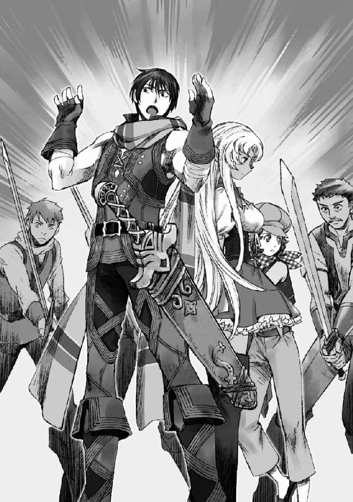
イサトさんが地味にスタッフを用意していつでも援護に入れるようにしてくれてはいるが、一応こちらから戦闘を仕掛けるつもりはない。
ただ、ちょっと嫌がらせがしたいだけだ。
「いやあ、すみません。財布を取るつもりが、どうも袖が柄に引っかかってしまったみたいで。ああ、でも今のも街中での抜刀に入るよな」
白々しく笑いながら、俺はインベントリから８００００エシルを取りだした。内訳は１００００エシル硬貨を八枚。エシルには紙幣がない代わりに、単位ごとで硬貨の色や形、大きさが違っている。ゲームの中ではモンスターからドロップする時ぐらいにしか意識しなかったが、こうして実際に使ってみるとありがたい。特にゲームと違ってデータでやりとりするわけではないのだ。１エシル硬貨で八万枚分取り出すのを想像しただけで頭痛がする。
俺があっさりと罰金を払ってしまったことに面喰らいながらも、騎士としては受け取らないわけにはいかないのだろう。ちらちらとギルロイ商会の男の顔色を窺うように視線を揺らしながらも、騎士は俺の支払った８００００エシルを受け取った。
それを見届けてから、俺はにっこりと笑う。
「ああそうだ。せっかくだし、俺もギルロイ商会の方を見習って騎士様に協力するとしようかな」
「......は？」
騎士が胡乱げな視線を俺に向ける。
まだわかってないのか。
一方、ギルロイ商会の男の方は、俺の言葉に薄く眉間に皺を寄せた。
流石だ。俺の目論みに感づいたらしい。
「ほら、この人たち」
俺たちを囲んで、剣を抜いて警戒する男たちを手で示す。
「街の中で剣を抜くのは、罰金に値する危険行為、なんだろ？」
「だ、だがそれは貴様が先に......」
「どちらが先に抜いた、というのは関係なく、街中で危険な行為に及んだことが咎められているんだよな」
これはさっき、エリサに対してこの騎士本人が言った言葉だ。
俺たちを囲んで剣を抜いている私兵は十数人はいる。全員に対して１００００エシルの罰金を請求したのならばギルロイ商会としてもなかなかに痛い出費となることだろう。
「いやあ、俺が勘違いさせたせいで悪いな。そちらも『何の権限もない一般市民』だそうだし、そうなると罰金刑からの免除も難しいよな。どうする？ この場で払えるか？ それとも払えないようなら、牢への連行を手伝うけど。これぐらいしか出来なくて心苦しいな」
相手が、俺らをハメるために用意した設定をそっくりそのまま返してやる。
悪意なんてカケラもありませんよ、って顔でにこにこしながら、騎士の言葉を待つ。
「あ......」
騎士は困ったようにおろおろと視線をさまよわせ......そんな膠着状態から脱するきっかけをくれたのは、やはりギルロイ商会の男だった。
「それには及びませんよ。私どもは騎士様に協力する善良な市民ですから。そちらの手を煩わせる必要はありません。ライオネル様、私どもの罰金については詰所にてお話させていただけますか？」
「あ、ああ......」
ギルロイ商会の男は、「行きますよ」と短く取り巻きの私兵へと告げる。ドジを踏んだ自覚はあるのか、剣を納める私兵連中の顔はうっすらと青ざめていた。
ざまあ。
ぞろぞろと引き上げていくその姿を見送って、俺はべ、と舌を出しておく。
「ギルロイ商会の連中を引き上げさせるなんて......」
「すごい......」
ぽかん、としているエリサとライザの頭をぐしゃぐしゃと撫でてやる。
なんとなく、この二人の置かれている状況が少し見えたような気がした。
そして、再び歩き出しつつ、そっと隣のイサトさんに聞いてみる。
「ところでイサトさん」
「なんだ？」
「さっきの、『もし......、君が４００００エシル払いきれないというのなら、私が......』の続きって何だった？」
ちらり、とイサトさんが俺を見る。
楽しそうに、たっぷりと面白がるような笑みを含んだ金色の眼差し。
「君の良い身体を人には言えないようなところでセリにかけてでも４００００エシルを用意するから大丈夫だ」
「大丈夫じゃねえ」
まさかの売られる前に売れ精神だった。
先ほどの騒ぎですっかり人目を引いてしまった俺たちは、エリサとライザおすすめの屋台とやらでサンドイッチを購入した後、少し離れた広場で食事にすることにした。そちらの方が人通りが少ないから、というエリサとライザの言葉に案内は任せる。
その道すがら、エリサとライザは無言だ。
二人とも、悄然と項垂れて地面を見つめてしまっている。
いや、二人とも、というよりも主に原因はエリサだ。
まだ付き合いは短いものの、こんな風に落ち込んでいるエリサというのは珍しい......気がする。エリサは嫌なことがあっても、それを「哀」ではなく「怒」にもっていくタイプに俺には見えていた。なにくそーっと発奮して、その怒りでさえトラブルを乗り越えるための原動力にするタイプだ。昨日俺が泣かしてしまった時だって、わんわんと泣いた後はわりとけろりとしていた。
そのエリサが、沈んでいる。
ぼんやりと視線を伏せ、黙りこくり、思い詰めている。
ライザはおろおろと、姉の様子を心配そうに窺うばかりだ。
「............」
「............」
俺とイサトさんもそんなライザと同じくで、二人視線を交わすものの、何と声をかけたらいいのかがわからず結局無言のままになってしまう。
下手に突くとパァンと弾けてしまいそうな不安定さを感じる静けさに、今はとりあえずそっとしておこう、と俺は周囲へと視線を流す。
中央の噴水広場に多くの屋台が集まっていたのと引き換えに、この辺りは人どおりもまばらで静かだ。広さも、噴水広場の半分程度だろうか。
どこか寂しげな広場を見渡して、俺は気になるものを発見した。
広場のほぼ中央に飾られた、小鳥を呼ぶ少女の像。
どこかで見た覚えがあるような気がする。
「秋良青年、どうした？」
「いや、あの像見覚えがあるような気がして」
「そりゃそうだろうな」
「へ？」
「ここ、『買います広場』だぞ」
「あ」
俺はポンと手を打った。
「ここ、『買います広場』か」
「うん」
イサトさんの言葉に、俺は納得したような声をあげる。
ゲームの中で見ていた二次元の街並みと、実際に目でみている三次元の街並みとがイコールで結ばれるアハ体験に、俺は物珍しげに周囲へと視線をやる。
言われてみれば、確かにこの広場も俺は知っている。
セントラリアには街のほぼ中央に三つの広場が横に並んでいる。
中央の噴水広場を挟んで、左右対称にある広場のことを、ゲーム内では左を「売ります広場」、右を「買います広場」と呼んでいた。
別に公式が定めたわけではないのだが、いつ頃からかユーザーの間でそういう風に呼ばれ、特定のものが欲しいユーザーは「買います広場」で欲しいものと買い取り価格を提示して売り手を待ち、アイテムを売りたいユーザーは「売ります広場」で店を開設して看板を掲げていた。
もともとはごっちゃだったのだが、同じ商品名を書いていても、「売りたい」のか「買いたい」のかがわかりにくくて揉め事になることが多く、その結果広場が三つあるなら分ければいいじゃん、ということになったらしい。
ちなみに中央の噴水広場は、もっぱらＰＴメンバーを探したり、待ち合わせに使われることが多かった。
「よく気づいたな、イサトさん」
俺は言われるまで気づかなかった。
少女の像に見覚えがあるな、と思った程度だった。
感心した俺に、イサトさんはふっと視線を遠のかせる。
そしてしみじみと呟いた。
「ほら、私右と左をよく間違えるから」
「............」
悲しい沈黙が落ちた。
「だからまあ、左が『売ります広場』で右が『買います広場』だとわかっていても逆に行って首をかしげることが多かったので、像で今自分がどっちにいるかを判別していたんだ。ちなみに『売ります広場』の方には弓を背負った狩人風少年の像があるぞ」
「なるほどな」
流石は方向音痴だ。
「男の人はアレだろ。地理感覚が俯瞰図でイメージ出来るんだろ？」
「まあ、大体イメージ出来るな」
今も、俺は実際に歩きながら脳内にあるゲームの中でのセントラリアの地図と、実際の感覚とを一致させている最中だ。
「女はそれが苦手なんだよな。私も地理感覚が苦手な人代表だ」
「存じ上げております」
「存じ上げられてた。まあだから目で道を覚えがちだ」
「それはそれで凄いと思うけどな。地図を覚えるんじゃなくて、経路を覚える分記憶力が試されそうだ」
一枚絵で地図を覚えて脳内で運用するよりも、経路を目で覚える方が大変そうだとごくごく自然に思える俺はやっぱり男なのだろう。
イサトさんは、俺の言葉に少し困ったように目を伏せる。
「目で覚えるから、ちょっとでも様子が変わるとわからなくなるぞ。看板が変わっても困るし、最悪昼か夜かでも迷いかねない」
「おおう......」
思わぬところで迷子の仕組みを知ってしまった。
そんな少しの変化で道がわからなくなってしまうとは......道理でよく迷子になっているわけである。
そんな会話を交わしつつ、広場の端っこの方に無造作に並べてあった丸テーブルと椅子の方へと皆を誘導した。
ゲーム時代だと、こういった席にもプレイヤーが座って、「買い取ります」の看板を出して賑わっていたものなのだけれども......ここもまたがらんとすっかり人気がなくなってしまっている。
「あそこで座って食べるか」
「そうしよう。ほら、二人もおいで」
イサトさんはエリサとライザを招いて、椅子に座らせる。
そして丸テーブルを四人で囲んで、買ってきたサンドイッチの包みを開いた。
塩漬けされたハムと野菜と、ちょっとよくわからないソースのかかったサンドイッチである。ツンとする香りがほのかに漂っているので、おそらくビネガーの類いだろう。
「んじゃ、いただきます」
「いただきます」
俺とイサトさんは手を合わせて、がぶりとサンドイッチにかぶりついた。
塩漬けされたハムはそれなりに厚く、歯ごたえがある。その肉汁が、しゃきしゃきと新鮮な野菜と合わさってなかなかに美味しい。ソースは予想通りのビネガーで、ツンとした味わいが良いアクセントだ。シンプルなサンドイッチだが、そのシンプルさが素直に嬉しい。惜しむべくは、ここまでの道のりの間に野菜の水分を吸ってパンが少しべしょっとしてしまっていることだろうか。
焼き立て、作り立てだったらきっともっと美味しかったことだろう。
「んん、なかなか美味いな」
「本当本当。オリーブが欲しくなる」
「え、イサトさんオリーブ平気なの？」
「私は平気。もしかして君、駄目か」
「あんまり得意じゃないなー」
「じゃあ君の分のオリーブは私が担当しよう」
「まかせた」
俺とイサトさんはそんな会話をのんびりと交わしながらサンドイッチを頰張る。
その一方で、エリサがのろのろと緩慢な仕草でサンドイッチに手を伸ばした。それを見て、ライザもサンドイッチを手にとる。そして、エリサはサンドイッチを一口食べて......。
ぽたり、と涙が一雫、テーブルに落ちた。
「お姉ちゃん......？」
ライザの気遣わしげな声が響く。
俺とイサトさんは、二人で顔を見合わせる。
エリサが、何か思い詰めているのはわかっていた。
けれど、どう水を向けていいのかがわからなくて、ここまで俺とイサトさんはエリサに声をかけることが出来なかった。
そして今、エリサは泣いている。
静かに、悔しそうに、ひくひくと喉を震わせて。
昨日出会った時のような、耐えて耐えて糸がぷつりと切れてしまったような号泣ではなく、まるで涙が内側からしんしんと湧いては零れるといったような、静かな涙だった。
「エリサ......」
名を呼ぶ。
エリサは顔を上げず、俯いたまま小さく呟いた。
「本当は、もっと、美味しいんだ」
嗚咽に震えた声だ。
ぽた、ぽた、とテーブルの上に水滴が落ちる。
「焼き立ては、パンがほかほかで、ぱりってしてて、野菜がしゃきしゃきで、本当に、美味しいんだ......っ」
「うん」
「だから、オマエらにも、食べさせたかった......っ」
「そうか、ありがとうな」
「なのに、なのに、そんなこともオレ、できなくて......っ」
うぇえええ、と感極まったように嗚咽が大きくなる。
大丈夫だよ、サンドイッチ美味いよ、と言いかけて気づいた。
きっと、エリサはサンドイッチがふやけてしまったことが悲しくて泣いてるわけじゃないのだ。エリサの心の中に溜まっていた辛いことや、苦しいことが、ふやけたサンドイッチが最後の一滴となって溢れ出してしまった。
「もう、やだよ、オレ、がんばってるのに全然、うまくできない......っ、父さんも母さんも帰ってこないし、ライザのこと、まもらないといけないのに、ぜんぜんなにもできないし、ぜんぜん、アキラや、イサトみたいにうまくできない......っ」
じわじわとエリサの目から滲んだ涙が、ぽたぽたとテーブルに染みを落とす。
エリサの震える声には、哀しみや悔しさを通りこして絶望めいた怒りが静かに籠っていた。
理不尽なことで罰金を取り立てようとする悪徳騎士への怒り。
獣人を蔑みながらも利用しようとする狡賢い商人への怒り。
自分たち姉弟を置いて行って留守にしている両親への怒り。
病弱で足手まといな弟への怒り。
エリサがどうしても解決出来なかった困難を、いともあっさりと解決して見せた俺やイサトさんへの怒り。
それらは理性では制御できない感情だ。
けれど、エリサは幼子のようにそれをそのまま表に出すことが出来ない。
ずいぶんと早く大人にならざるを得なかった彼女は、それが八つ当たりに過ぎないことを知っている。
わかって、しまっている。
だからエリサは、そんなことに怒りを覚えてしまう自分自身に絶望してしまっているように見えた。
轟々と渦巻く怒り、恨み、辛みを、ひたすらその小さな身体の中に押し留めようとしている。
まだ、子供だろうに。
本当なら、まだ親に甘えて、駄々をこねるのが許される年だろうに。
エリサは大人であることを求められ、本人もそれを望むが故に、己の子供じみた癇癪を扱いかねて、ただただ抑えて、そんな自分へと無力感を膨らませている。
両親から留守を任されたはずなのに、弱い弟を理不尽な騎士や狡賢い商人から守ってやれない自分自身が、姉として不甲斐なくて情けなくて嫌いで腹が立って仕方ないのだ。
「アキラやイサトみたいにうまくできない」という言葉がつきりとささやかな痛みを伴って俺の胸に突き刺さった。
それは俺の抱える無力感にとても良く似てる。
『普通の人が出来るあたり前のことが俺には出来ない』
人に出来ることが自分には出来ない無力感に苦しむ気持ちは、昨日の今日だけあって痛いほどによくわかった。
「なあ、エリサ」
俺は、そっとエリサに声をかけた。
エリサが、怯えたように小さく肩を震わせる。
「手、出してみ」
「手......？」
エリサは迷うように、逡巡しながらもおずおずと俺に向かって手を差し出した。
その手に、俺は自分自身の手を重ねる。
手首を揃えると、エリサの手の先は俺の指の第二関節に届くか届かないかというほどの大きさしかなかった。小さな手だ。子供の手だ。
「俺の手、でかいだろ」
「......うん」
「俺は、男で、大人で、お前より年上だ」
「......うん」
「だから、お前より出来ることが多くたっていいんだよ。むしろ、そうじゃない方が困る」
少し、冗談めかして肩を竦める。
エリサは困惑したように瞳を揺らしながらも、顔をあげて俺と重ねた手を見る。
男と女。
大人と子供。
そんな差異に、手を重ねることで改めて気づかされる。
「でも」
エリサは悔しげにくしゃりと眉を寄せて、重ねた俺の掌をカリと爪でひっかいた。比較を拒むように、拳を固める。
「オレは、ライザを守らないといけないんだ」
大人とか子供とか男とか女とか関係なく。
エリサは弟のために、強くなくてはならないと自分に責任を課している。
「......うん、知ってるよ。偉いよな」
俺は、そのままぎゅっとエリサの手を掌の中に包み込んだ。
「お前は、頑張ってる。お前がライザより年上で、お姉ちゃんだからだろう？」
「そうだ。オレはライザより大きいし、ライザより年上だから、オレがライザを守ってやらないといけないんだ」
それなのに、とエリサが言葉を続けるより先に、俺は口を開いた。
「じゃあ、エリサより年上で、エリサより大きい俺がエリサを守ってやりたいって言うのは駄目か？」
「......っ」
エリサの、暗紅色の瞳がぽかんと丸くなる。
「なん、で」
「守ってやりたい、助けてやりたいって思った」
「なんで、なんで、なんで、だって、関係ない、だろ」
「そうだな、関係ないな」
俺はただの通りすがりだ。
通りすがりに首を突っ込んでいるだけの無関係な他人に過ぎない。
でも。それでも。
「俺はわるものだから、したいことをしたいようにする」
「なんだよ、それ」
「俺とイサトさんのモットーだな」
「............悪いことなんか、できねー癖に」
ちょっと拗ねたようなエリサの言葉に、思わず小さく笑ってしまった。
悪意故の悪いこと、は確かに出来ないかもしれない。
けれど、俺やイサトさんのいた元の世界には「小さな親切大きなお世話」なんていう名言が存在するのだ。
その大きなお世話を、俺たちがそうしたいからという理由だけで押し付ける俺たちはきっと「わるもの」でいいのだ。
ちらり、とイサトさんを見ると、イサトさんは穏やかな笑みを含んだ眼差しで俺とエリサのことを見守っていた。なんだか無性に恥ずかしくなる。
俺は気恥ずかしさにぽり、と頭をかきつつ、エリサへと語りかけた。
「俺とイサトさんは、お前たちのことを放っておけない。だから、お前が嫌がってもたぶん何とかしようとする。それはまあ、『俺たちがそうしたい』からだ。
でも......」
へにゃ、と俺は眉尻を下げて笑う。
「お前が、助けて、って言ってくれたら......お前が望んだ上で助けられたら一番良いとは思う」
善意を押し付ける気は満々ではあるが。
どうせなら望まれた上で応じたい。
そんな俺の言葉に、エリサは小さく息を吞んだ。
「ぁ......」
小さく、唇が震える。
本当にその言葉を言って良いのか、俺たちを信用しても良いのか迷うように、何度も唇を開きかけては、こくりと喉が鳴る。
泣きごとを言わないようにしていたのであろうエリサにとって、その言葉を口にするのがいかに難しいのかが、見ている俺にも伝わってくる。
エリサは一度視線を下に向け、涙を振り切るように顔をあげた。
つ、っと涙が頰を滑る。
そして。
「助けて、ほしい」
涙を浮かべたエリサの言葉に。
「まかせとけ」
俺は力強く言い切った。
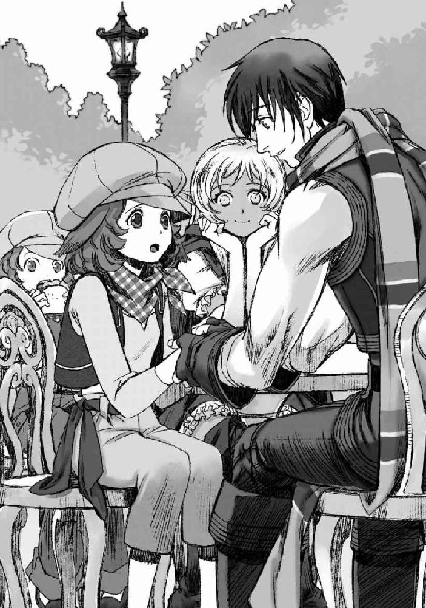
その後、イサトさんが濡らしたハンカチで泣いたエリサの目元をそっと拭って冷やしてやったり。
ライザが、お姉ちゃん昨日から泣いてばかりだね、なんて余計なことを言ってエリサに足を踏まれたり。
そんな賑やかな諸々があってから、俺たちは再び落ち着いてテーブルを囲んでいた。四人で、先ほどよりもさらにべしょっとしたサンドイッチを齧る。ふよふよになったパンが若干気持ち悪いが、まあサンドイッチに罪はない。
そうしてサンドイッチを齧りながら、改めて俺たちはエリサやライザの置かれている状況について話を聞く。
「あー......、ものすごーく素朴な疑問から始めてもいいかな」
「うん。何？」
「昨日からやたら聞くんだが、『ルーター』って何なんだろう」
「実は俺も気になってた」
昨日からやたら街中で聞くし、気になってはいたのだが、あまりにも知ってて当然という空気で使われるせいで、タイミングを逃して意味を聞けずにいたのだ。
一応どうやら、それが獣人や、エルフといった人間以外の種族を指しているようだぞ、というところまでは見当がついているのだが。
俺たちの疑問に、エリサとライザは二人して顔を見合わせてる。
「イサトも、アキラも、本当に知らないのか？」
「知らないな。私たち、セントラリアにはつい先日着いたばかりだから」
「.........そっか。知らないなら、そのまま知らねーままでいられた方が良かったんだけどな」
そう悲しげに呟きつつも、エリサは俺たちにルーターの意味を教えてくれた。
「ルーターっていうのは、略奪者って書くんだ」
「略奪者？」
エリサの口にした物騒な言葉に、思わず眉間に皺が寄る。
「人間以外の種族＝略奪者」というのは一体どういうことなのだろうか。
「なんでまたそんな風に呼ばれるようになったんだ？」
「......『女神の恵み』が、手に入りにくなったのはオマエたちでも知ってるだろ？」
「ああ、それは知ってる」
カラットの村でも聞いた話だ。
この世界では、モンスターを倒してもドロップアイテムが手に入らない。
最初からそうだったのではなく、いつからか手に入らないようになったのだとカラットの村長は言っていた。
「オレたちは、それが今でも手に入れられるんだ」
「「へ？」」
エリサの声に、思わず俺とイサトさんの間の抜けた声がハモる。
「それって、エリサとライザだけが特別ってわけじゃなく......」
「違う。獣人は、今でも『女神の恵み』を手に入れることが出来るんだ。イサトも、そうなんじゃねーのか？ イサトは、黒き伝承の民の先祖がえりだろ？」
「うーん......まあ、私が先祖がえりかどうかはさておき、まあ『女神の恵み』が手に入れられるかどうか、ってことに関しては否定しない」
実際のところイサトさんは先祖がえり、というか黒き伝承の民そのものである。
どこに出しても恥ずかしくない立派なダークエルフそのものだ。
「『女神の恵み』を手に入れられなくなってから......最初のうち人は、何か女神を怒らせるようなことをしてしまったんじゃないか、って皆教会で懺悔して、祈ったそうなんです」
「でも、それでも人は『女神の恵み』を取り返せなかった」
「だから、人は獣人から『女神の恵み』を高額で買い取るようになりました」
「おかげで獣人は儲かったみてーだな」
エリサとライザが交互に語る。
「確かに.........需要と供給のバランスが一気に崩れたんなら、儲かりそうだな」
荒稼ぎしようと思えば、いくらでも出来ただろう。
だが、そのイメージが今目の前にいるエリサやライザに繫がらない。
それなら獣人は特権階級になっていてもおかしくないはずなのに、現状はむしろ逆だ。エリサもライザも、裕福なようには見えない。
「......人は、団結することで、獣人に対抗したんです」
「団結？」
「......談合か」
イサトさんが、ぽつりと呟く。
「人は協定を結び、『女神の恵み』を定額でしか買い上げないようにすることで、力が獣人に集中することを避けようとしたんじゃないのか？」
「なんでわかったんですか？」
「それぐらいしか、人の対抗手段はなさそうだからな」
いくら獣人しか『女神の恵み』を手に入れられなくなったからと言って、人々がそのために金を積み続ければ、富が獣人に集中することになってしまう。それを避けるために、人は決まった額でしか『女神の恵み』を買い上げてはいけない、というルールを作ったらしい。
「そのルールにより、獣人の生活も一旦は落ち着きました」
「......問題はその後だよ。ライザが生まれたぐらいの頃から、だんだん人の間でヘンな話が出回るようになったんだ」
「変な話って？」
「獣人どもだけが『女神の恵み』を手に入れられるのは、本来人にもあったはずの『女神の恵み』を略奪してるからだ、......そう、言われ始めたんだ」
「それで......略奪者か」
エリサとライザが、こくりと苦々しい顔で頷いた。
「最初は陰口だった。でも、どんどん差別は広がっていって、獣人どもは人から搾取しているのだからそれを取り返して何が悪いって言われるようになった」
「どんどん、『女神の恵み』を買い取る価格は下がっていきました。『女神の恵み』を売るだけでは生活できない獣人が増えて、冒険者を辞めようとするひとも多かったみたいです」
「......でも、人はそれを許さなかった」
「......だろうな」
人にとって、獣人種は『女神の恵み』を手に入れるための唯一のツテだ。
相手が略奪者であるということを理由に、不当に搾取することを正当化出来る美味しい労働力だ。
そんな存在を簡単に手放すわけがない。
「冒険者を辞めた獣人をまっとうな仕事で雇うようなとこはなかった。人に恵みを還元する役目を放棄した裏切り者として、爪弾きにされるんだ」
「......多くの獣人たちが、それを理由にセントラリアを離れました。他のところはまだマシだって聞いてたから」
「でも、オレらは......」
ちらり、とエリサがライザを見る。
ライザは悔しそうに視線を伏せた。
「僕が......、僕の身体が弱かったから。他の街までの移動に耐えられないかもしれないから、父さんも母さんも、お姉ちゃんも、この街に残ることにしてくれたんです」
「......オレたちだけじゃねえ。この街に残ってる獣人のほとんどが、そうやって街を離れられねえ理由があるんだ。......ギルロイ商会の連中は、そんなオレたちを良いように使ってる」
「......本人は差別対象である獣人種の保護をしてるとか言ってたけどな」
「保護なもんか......！ オレらがどこにも行けないのも、他の仕事ができねーのも、全部ギルロイ商会が裏から手を回してんだ......！」
「あー......、なるほどな」
ギルロイ商会は、獣人種を囲い込んでいるわけか。
他で稼ぎを得ることの出来ない獣人たちは、買い叩かれているのがわかっていてもギルロイ商会の下で働き続けることしか出来ない。
「僕の、父さんと母さんも......ギルロイ商会の下で働かされてます。僕のせいで、ギルロイ商会に借金が出来てしまったから」
「......オマエのせいじゃない」
「僕の、薬代のせいでしょ？」
「それはそうだけど......っ！」
「父さんや母さんは、その借金を返すために......ギルロイ商会の言いなりになってるんです」
「具体的には何をさせられてるんだ？」
「......商会の連中に率いられて、狩りをしてる」
「『女神の恵み』を手に入れるために、か」
二人の話を聞いた上で、ギルロイ商会の男の言い分を思い出す。
『セントラリアにおいては、悲しいことに亜人種の方々を略奪者と呼び、差別するような風潮がはびこっております。差別の憂き目にあい、なかなか仕事にも恵まれないそういった方々を援助する活動を、ギルロイ商会は行っておりまして......こうして、亜人種の方が関わった揉め事のうち、罰金で解決出来るようなものであればうちで処理をすることも多いのです』
滅茶苦茶イラッとした。
何が援助だ。
ただの搾取じゃないか。
それに騎士を使って俺たちに絡んだ手口にしても、今思えばそうやって借金を作らせることでエリサやライザの両親を搦め捕ろうとしていたようにしか思えない。俺に対しても、イサトさんの身柄を寄越せば借金を肩代わりしてやる、と申し出たのは、ただのスケベ心ではなかったのだろう。イサトさんはダークエルフだ。ギルロイ商会からすれば、『女神の恵み』を手に入れることの出来る金の卵に違いない。
ああ、滅茶苦茶腹が立つ。
「イサトさん、俺ものすげームカついてるんだけど」
「同感だ」
イサトさんの声も、心なしかワントーン低い。
「どうしてくれよう、か」
「なんとかしてギルロイ商会の連中に一泡吹かせたいよな」
「──...」
イサトさんが、少し意外そうにはちりと瞬いた。
長い睫毛が優雅にそよぐ。
「イサトさん？」
「秋良青年、君は......一泡でいいのか」
「え？」
「私は......私怨をこめて容赦なくぶっ潰す気満々だぞ」
「ぶ」
優雅さの欠片もない物騒な言葉が飛び出した。
そういえば。
イサトさんはもともとブラック会社勤めだったとかなんとか言っていたっけか。
ギルロイ商会の行いや、エリサやライザの境遇に過去の自分の姿でも重ねているのかもしれない。
そりゃ私怨も籠るというものだ。
「ふふふふふふふ、ぶっ潰す（物理）でもいっそ構わない」
「構ってあげて。そこは構ってあげて」
俺はイサトさんが犯罪者として指名手配されるのは流石に避けたいぞ。
......ギルロイ商会は首を洗ってイサトさんをお出迎えする準備をした方が良い気がしてきた。
「作戦その１：謎のテロリスト」
「詳細は？」
「深夜にいきなり攻撃魔法を叩きこんで吹っ飛ばす」
「却下」
「作戦その２：謎のテロリストもうちょっと進化版」
「詳細は？」
「変装して深夜にいきなり攻撃魔法を叩きこんで吹っ飛ばす」
「なんで却下されないと思ったんだ」
「変装したらまだ良いかなと思って」
「良くねえよ」
イサトさんが真顔で語るギルロイ商会ぶっ潰す（物理）作戦を片っ端から却下しつつ、俺は小さく溜息をついた。
ちなみに作戦は他にも「謎の魔獣の襲撃編」「泣いた赤鬼編」があったが、どれも基本は物理的に潰すという結果の部分に変わりはなかったので、やっぱり却下した。
......なんでこんな時だけこの人は過激なのか。
やはり個人的にブラック会社に恨みがあるからなのだろうか。
エリサとライザは、イサトさんが冗談を言ってるのだと思っているのか、楽しそうに「そうしてやれたらいいのにな」なんて相槌を打っている。
が。
いいか子供たち。
そこでのんびりと危険極まりない作戦をたてている赤ずきんモドキは今口にした作戦をノリと勢いだけで実行することが出来るだけの実力を兼ね備えた危険人物だからな。
すでに飛空艇墜としという前科があるぐらいだ。
ここで俺まで「良いな」なんてのーてんきな返事をしてしまったら、間違いなくこの人は実行する。
人的被害は出さない程度に気を遣いつつ、ドカンと一発派手にぶちかますだろう。飛空艇を墜としたせいで、大量破壊の快感に目覚めたとかそんな厄介な性癖に目覚めていないことを祈る。
「............」
俺は半眼でイサトさんを見つめた。
イサトさんは俺の視線に気づきつつも、しれっと微笑んでいる。
唇の端だけがくっと上がった、いわゆるアルカイックスマイルだ。
くそう、愉しそうにしやがって。
「......俺のことは、止めた癖に」
ぼそりと呟く。
目の前でアーミットが斬られた時、相手の男を殺そうとした俺を止めたのはイサトさんだ。そのイサトさんが、今はテロリストに進化しようとしている。
俺だって、手っ取り早くムカつく連中に私刑を下してしまえばすっきりするとは思っている。だが、そこまで無責任なことをしてはさすがにまずいだろう、と一生懸命自制しているのだ。
だというのに、この人ときたらやたらと俺を煽って愉しんでいる。
拗ねた響きでぼやいた俺に、イサトさんがくくりと喉を鳴らして笑った。
明るい琥珀色の瞳が、悪戯っぽく煌めく。
「だから、私のことは君が止めてくれるだろう？」
「.....................それはズルくないか」
ズルいだろう。
そんな風に言われてしまったら、ツッコミを放棄出来なくなる。
俺のツッコミをアテにするんじゃない、なんて言えなくなる。
ぐむ、と口をへの字にした俺を見て、イサトさんはにんまりと満腹の猫のような顔で笑った。
「私ばかりが君のストッパーになるのはどうかと思いまして」
「それを言うなら、俺ばかりにツッコミをさせるのもどうかと思うぞ」
コノヤロウ。
喰えない大人が、未熟な青少年を手玉にとりやがって。
「まあ、実際のところギルロイ商会を潰してもそれで終わりってわけにはいかないだろうしなあ。どうせすぐに次が出る」
「だろうな」
俺の拗ねた視線に、くつくつと楽しそうに笑いつつも、イサトさんはようやくまともな作戦会議をしてくれる気になったようだった。
俺はイサトさんの言葉に同意して、うーむ、と唸る。
エリサの話によれば、「獣人は定価でのみ『女神の恵み』を売ることが出来る」というのは、セントラリアで正式に定められたルールだ。そのルール自体は、『女神の恵み』を手に入れることが出来なくなった人間と、『女神の恵み』を手に入れることが出来るそれ以外の種族との均衡を守るために必要なルールだろう。
問題は、そのルールを元にギルロイ商会が低価格で獣人から『女神の恵み』を買い叩き、本来強者になりうるはずだった獣人たちを酷使するシステムを成立させてしまったことにある。
獣人は本来ならば「生物としての強さ」で言うのならば、人間よりもよほど恵まれている。動物の要素は外見だけでなく、身体的な能力としても受け継がれているのだ。例えばエリサなら、猫系の獣人なので人間よりも身軽だし、夜目に優れていることだろう。また、それだけではなく、基本的に獣人というだけで人間よりも身体能力が強化されている。その分魔法を扱う才能には欠けるが、身体能力だけでも人間種に対する十分なアドバンテージとなりうる。
「......獣人が『女神の恵み』を独占出来ちゃったのは正直人間にとっては相当な脅威だよな」
「現状は窮鼠猫を嚙む、といったところなんだろうが......」
「問題は鼠が思ってるほど猫も強くない、というところだろうな」
現在セントラリアがおかしくなっている諸悪の根源は、確かに獣人を良いようにこきつかっているギルロイ商会だろう。だが、一番良くないのはそれを容認してしまっているセントラリア全体の空気だ。何が良くないって、彼らに悪意があるわけではない、というところだ。悪意故の攻撃じゃないだけに、タチが悪い。
本当、イサトさんの言うとおり、彼らは猫に追い詰められた鼠のように怯えているだけなのだ。
自分たちが何とか優位に立っていなければ安心出来ないのだ。彼らを追い詰める猫など、実際には存在しないというのに。ギルロイ商会は、人々のそんな不安を煽ることで、セントラリアでの実権を握ることに成功したのだ。鼠を追い詰めるいもしない猫の幻を生み出してしまった。
「いっそ猫が実際それぐらい強かったら良かったんだけどな」
「強い猫ならとっくにセントラリアを見放してるだろう」
「ああ......そういうことか」
エリサが言っていた。
ギルロイ商会のやり方に不満を持った多くの獣人がセントラリアを後にしたのだと。
「今セントラリアに残っているのは、人間社会から弾かれることを恐れる程度には弱い獣人だ」
「......弱くねーし」
イサトさんの言葉に、むっと眉を寄せ、唇をとがらせて口を挟んだのはエリサだった。ここまでおとなしく聞き役に徹していたものの、さすがに「弱い」発言は聞き流せなかったらしい。
イサトさんが、可愛いなあ、と言わんばかりに目を細めて、エリサの頭をくしゃくしゃと撫でた。
「弱いことは悪いことじゃあないよ」
「......でも、強い方がいいだろ。実際、オレたちだって弱いからこんな目にあうんだ」
エリサの言葉に、イサトさんが小さく笑った。
「エリサ、君、今すごく矛盾したことを言ったのに気付いているか？」
「え？」
「私が今セントラリアに残っている獣人は弱い、と言ったときに、君は『弱くない』と否定した」
「うん」
「でも、続けて私が弱いことは悪くはない、と言ったら、今度は『弱いからこんな目にあう』と言った」
「あ......」
自分が口に出したちぐはぐな言葉に、エリサはかっと頰を染めて恥ずかしそうに視線を伏せる。先生に誤りを指摘された生徒のような仕草と表情に、俺の頰まで緩みそうになった。微笑ましい。
「でも、エリサの言ったことは間違いじゃない」
「......？」
「どういうことなの？」
エリサとライザが不思議そうに顔を見合わせる。
俺とイサトさんの話は、二人には少し難しかったらしい。
というか、俺とイサトさんがお互いに相手に知識があることを前提に、説明を省略しまくった会話をしていたのが悪い。
「んー......例えばだけど、ドラゴンが君んちの隣に越してきたらどう思う？」
「は？」
「ド、ドラゴン......？」
「そう、ドラゴン」
「滅茶苦茶強くてでっかいドラゴンな。ただし、言葉が喋れるし、お前たちを襲う気配もない。ただ、隣で暮らしたいって言ってる」
俺がそう付け足すと、エリサとライザも困ったように眉根を寄せた。
上手くイメージ出来ないのだろう。
ドラゴン、と言えば二人にとっては「恐ろしいモンスター」の代名詞のようなものだろう。
「ドラゴンは、ちゃんとセントラリアのルールに従って生きてる。決まった日にゴミを出すし、暴れたりもしない」
決まった日にゴミを出す、という俺の言葉に、そんなドラゴンの姿を想像してしまったのかエリサとライザが小さくくすくすと笑った。
「それどころか、爪が伸びたら切ったドラゴンの爪をくれるかもしれない。鱗が生え替わったら、古い鱗は素材としてくれるかもしれない」
「すげーな、それ」
エリサの目がきらきらと輝く。
本来であれば、ドラゴンを倒さなければ手に入らないドラゴン素材が、ドラゴンを街に受け入れるだけでドラゴンの方から進んで提供して貰えるのだ。
それはきっと、街の発展にとって大きな利益になる。
「うーん......それならいいんじゃねー？」
「じゃあ、そんなドラゴンが奥さんも呼びたいって言ったらどうする？」
「奥さん？ いいんじゃね？」
「じゃあ子供が生まれたら？」
「別に......それに何の問題があるの？」
「ドラゴンは、君らの街で増えていくぞ？」
ほっそりと、少しだけ意地悪な笑みを含んでイサトさんの目が細くなった。
「ドラゴンが増える......」
「一応数としては、君たちの方が多い。でも、ドラゴンが少しずつ増え始めるんだ」
「............」
しばらく黙ったまま考えていたライザが、小声でぽつりと呟いた。
「それはちょっと......怖い、かもしれない」
「何が、怖い？」
イサトさんは、簡単に答えを言うのではなく、二人に自分で答えを見つけられるように問いを重ねていく。
「だって、ドラゴンが増えるんでしょ？ それって......なんか、怖いよ」
「もうちょっと考えてみてごらん。『何』が怖いんだろう？」
「うーん......なん、だろう。なんか、こう、怖いんだ」
喉元までこみ上げた感情を、どう言葉にしたらいいのかわからない、といった風にライザは「怖い」という言葉を繰り返す。
そんな弟を見つめていたエリサが、ぽつりと目を伏せたまま口を開いた。
「............乗っ取られるような、気がするのかもしれねー」
「あ......」
エリサの言葉に、ライザも納得がいった、というように小さく声をあげる。
「ドラゴンが増えて......もしそこでドラゴンが街で好き勝手するようになったら、オレらって抵抗できないんじゃねーかな」
「確かに......もともと僕たちが戦って勝てる相手じゃないもん」
「そんなドラゴンが街に住むようになって、好き勝手するようになったら......」
「みんな、食べられちゃうよ」
「街が、ドラゴンの餌箱みたいになっちまう」
少しずつ、エリサとライザは「何」が怖いのかを言葉にしていく。
「それじゃあ、怖くないようにするにはどうしたらいいと思う？」
「ドラゴンを最初から街に入れないとか......」
「でも、ドラゴン相手にそんなこと言えないよ。駄目、と言った瞬間に食べられちゃうかも」
うーんうーん、と二人は悩む。
俺は、ヒントを出してやることにした。
「ドラゴンがそんなにも街に住みたいって言うなら、条件を出してやればいいんじゃないか？」
「条件？ 人間を食べちゃ駄目、とか？」
「そうだなあ、でもそれは街にもともとある『人を殺してはいけない』っていうルールと同じことだろう？」
「そっか。それにドラゴンは街のルールには従って生活してるんだよね？」
「ああ、そうだな」
「ドラゴンが街のルールに従って生きるって言うなら......ドラゴンが好き勝手出来ないようなルールをたくさん作ればいいんじゃねー？」
「街では剣を抜いちゃ駄目って決まりがあるんだから......それと同じぐらい鋭いドラゴンの爪や牙も街中では見せちゃ駄目、とか？」
「ブレスも危険だし、それならもう街中ではドラゴンは口を大きく開くの禁止、にすりゃいいんじゃねーか？」
「うん、大きなドラゴン用の口が開けなくなるようなマスクを用意して、ドラゴンは街にいる限りそれを着けてもらえばいいんだよ。そしたら、悪いドラゴンが出てきても、マスクをつけてたら簡単には暴れられないし、マスクをつけてないドラゴンがいたら逃げればいいもん」
「でも──」
俺はそこで口を挟むと、エリサやライザへと視線をやった。
「そうなると街の中でドラゴンは話せなくなっちゃうな」
「あ......」
「............」
イサトさんも、言葉を続けた。
「きっと、今私たちがしてたように、美味しいものを屋台で食べ歩くことも出来ないな」
「............」
「......っ」
俺たちの口調から責められていると感じたのか、きっとエリサが顔をあげた。
「それなら......っ、街のルールに従えねーなら、街から出ていけばいいじゃねーかっ！」
「あ......っ」
自棄になったようなエリサの言葉に、はっとしたようにライザが瞬く。
そして、しょんぼりと耳と尻尾を垂らして、エリサの言葉に静かに頭を横に振った。
「駄目だよ、お姉ちゃん」
「ライザ......？」
「それじゃあ、駄目だよ」
「なんでだよ」
「だって、それじゃあセントラリアの人たちと同じだもん」
「あ......」
ライザの言葉に、エリサははっと驚いたように息を吞んで──...それからがっくりと肩を落とした。
「なんか......イサトが言ってた意味がわかったような気がする」
「うん......僕たち獣人は、人間より強い」
「だから、人間は僕たちが怖いんだ」
「怖いから、なんとか押さえつけようとしてんだな」
「そして、僕たちは街の中での力が弱いから、そんな人間たちに何も言えないままこうなっちゃったんだ」
「そういうことだ。人は、弱い生き物だ。弱いからこそ、『社会』というシステムを構築して、群れで生きる。セントラリアに残らなければいけなかった君たちも、その『社会』というシステムを必要としているだろう？」
「......うん」
例えばそれは病気になったら医者がいて。
お腹が空いたら自分で作らずとも食堂や屋台で食べ物を買うことが出来て。
欲しいものがあったら自分で作らずとも、お金で買うことが出来る。
そういうものだ。
ドラゴンが街に棲まないのは、ドラゴンが街のシステムを、「人間の作り上げた社会」というシステムを必要としていないからだ。
だからドラゴンには人の生活を、「社会」を気遣う必要がない。
そして、俺たちもそうだ。
俺たちが「わるもの」と称して好き勝手なことが出来るのは、俺たちにとってこの世界の「社会」がそれほど大きな意味を持たないからだ。この世界における俺とイサトさんの存在はとても特異で、俺たちは俺たちだけで完結して生きていくことが出来る。
「君たち獣人は、もともと人間よりも強い種だ。そこでさらに、君たちだけが今となっては『女神の恵み』を手に入れられるようになってしまった。人間としては......とても怖いと思わないか？」
「......うん」
「それじゃあ、どうしたらいいんだ？ オレ達は、セントラリアから出て行くしかねーのか？」
「そこが難しいな」
ふむ、と俺とイサトさんは腕を組んで首をかしげる。
「さっきの例え話に戻ると......、街に住むドラゴンは爪や鱗、ドラゴン素材を街に提供することになっていただろう？」
「うん」
「もしも、その素材を使って街が栄えていたらどうする？」
「この街にきたら、ドラゴン素材が安く手に入る、なんて宣伝出来たら、きっと街は有名になるだろうな」
「それなら......ドラゴンがいなくなったら、街の人も困るんじゃない？」
「そう、困るだろうな」
セントラリアだって、同じだ。
獣人がいなくなってしまえば、セントラリアは『女神の恵み』を手に入れる術を失うことになる。
『女神の恵み』を失ったからといって、セントラリアが即駄目になる、とまではいかなくとも、今まで得ていた利益の損失は大きな痛手となるだろう。特に、その利権を独占していたギルロイ商会にとっては壊滅的な損害となるはずだ。
「なんか......おかしくない？」
「おかしいだろ。いなくなられたら困るのに、嫌がらせみてーなことばっかりして、それが受け入れられないなら出ていけばいい、なんて」
「ああ、おかしいな」
大きな矛盾が発生している。
でも、エリサやライザは知っているはずだ。
そんな大きな矛盾を抱えたまま、セントラリアの街が何年も、下手したら何十年もそれが当たり前のように機能してきたことを。
「人間はずるいからな。お前らが、セントラリアを出ていけないことを知ってるんだよ。お前らがセントラリアを必要としてることを、知ってるんだ」
「......それなら、なんで人は僕たちのことを怖がるんだろう。必要としてるものを、壊したりするわけないのに」
「壊したりはしねーかもしれねーけどよ。もしかしたら、逆の未来もあったかもしれねーだろ」
「逆？」
エリサの言葉にライザが首を傾げる。
「たとえば、『女神の恵み』を手に入れることが出来るオレらが威張りまくって、人間を奴隷みたいに扱う未来だ」
「そんなこと、僕たちはしないよっ」
「ああ、しなかった。だからこうなったんだろ」
「............」
ライザはしょんぼりと項垂れて、テーブルを見つめる。
そして、腿の上で小さく震える手をぎゅっと握り固めると、きっと顔をあげた。
「僕は、嫌だ」
頑是ない子供の我儘のように、ライザは言う。
「僕はそんなの、嫌だ」
「ライザ......」
「どっちかがどっちかに酷いことをしないと一緒に暮らせないなんて、そんなのおかしいし、僕は嫌だ」
悔しそうに、唸るようにライザは繰り返す。
いろいろな大人の思惑が絡みあい、利権を奪い合う中において、それは子供の他愛のない戯言かもしれない。
けれど俺にはそれがとても尊いように思えた。
ライザの立場であれば、逆転を願ったとしてもおかしくないのだから。
そっと手を伸ばして、くしゃくしゃとライザの頭を撫でる。
「なあ、さっき、オマエらは『難しい』って言っただろ？」
「ああ」
「オレたちがセントラリアから出ていかなくてもいいような方法が、たとえ難しくても何かあんのか？」
「あることには、ある。私がさっきから提案しているような簡単な方法じゃあないけどな」
「テロ行為は自重してください」
ヘルター・スケルターでも起こす気なのか、この人は。
俺のツッコミにくつくつと喉を鳴らしながら、イサトさんは言葉を続ける。
「君たちは、人間の『社会』を必要としている」
「うん」
「人間は、君たちしか手に入れられない『女神の恵み』を必要としている」
「ああ」
「それなら、取引が出来るはずだと思わないか？」
「取引......」
「お互いに対等な立場で、堂々と取引をしたら良い。お互いの条件がかみ合わなければ、交渉するんだ」
人間は『女神の恵み』がなくなると、困る。
獣人は人間社会から弾かれてしまうと、困る。
「もしセントラリアの人間側が折れないのであれば、取引の相手を変えればいい」
「取引の、相手？」
「セントラリアから逃げた獣人は、皆他の街に行ったんだろ？ 『女神の恵み』を必要としている人間はセントラリアにしかいないわけじゃない。どこの街でも、『女神の恵み』は必要なはずだ」
「君たちに必要なのは、セントラリアの人間と交渉するだけの組織と──...、その交渉のノウハウだろうな」
「まあ、それで交渉決裂、ってな具合なら、その時はセントラリアを見放しちまえ」
しれっとそそのかしておく。
ギルロイ商会の連中がしているのは、そういうことだ。
目先の欲に釣られて、自分たちの首を絞めている。
俺たちの言った言葉の意味をかみしめるように、必死に考えているエリサとライザを眺めつつ、俺はちらり、とイサトさんに視線を流す。
「俺たちに、出来ると思うか？」
獣人と、人間とが対等に交渉出来るテーブルを、用意することが出来るだろうか。
「少なくとも、その手伝いは出来るだろうな。ただ、気を付けないといけないのは──...私たち抜きでは成立しないようなのは駄目だ」
「それは確かに」
俺たちはこの世界における特異点だ。
いつまでもいるわけではないし、いるつもりもない。
そんな俺たちに依存した関係では、遅かれ早かれ破綻する。
「さて、どうしたものかな」
「取引、出来そうな相手を探せばいいんじゃねーのか？」
「セントラリアの商人だけじゃなくて......他のところの商人とも話しあえたら良いよね」
エリサとライザの言葉に、俺とイサトさんは満足げに頷く。
理解が早くて何よりである。
セントラリアの商人たちと交渉するにしろ、セントラリアを見放すにしろ、競合相手はいた方が良いだろう。
さて。
やるべきことは大体わかってきたわけだが。
どこから手をつけようか。
行動に出る上で、一番大事なのは敵を知ることだろう。
「彼を知り、己を知れば百戦危うからず」と孫子大先生も言っている。
なので、俺たちはここ三日ほど、この世界において自分たち自身のことを知る努力と並行して、ギルロイ商会の仕組みについても調べていた。
たとえ国が抜け駆け禁止、とお触れを出したところで、その目をくぐって悪いことをする者がいるのが世の中の常だ。ギルロイ商会が『女神の恵み』を独占することをよく思わない商人がいるならば、そこからギルロイ商会の天下を崩せないかと思ったのだが......どうも難しい。
ギルロイ商会は、定額で買い取った『女神の恵み』を市場で販売することで利益をあげている。エリサやライザから聞いた買い取り価格と、市場での流通価格はおよそ二倍にも至ろうかというほどに隔たりがあった。
他に比べてレア度があがるアイテムに至っては買い取り額の十倍近い値段がついているものすらある。
調べれば調べるほど、阿漕な商売してやがる、と思わずにはいられないわけだが......不思議なことに、ギルロイ商会にはライバルが存在しない。
エリサやライザは、これまでにも巷の店に直接『女神の恵み』を持ち込んだことが何度かあるらしい。が......その度に、正規の価格でしか買い取りは行えないとけんもほろろに断られてしまうのだと言う。
ギルロイ商会が買い上げる価格よりは高いものの、市場で流通するよりも安く。
そんな裏取引に、どこの商人も応じなかったというのだ。
それが果たして、法を遵守しようという清らかな心の表れだと言えるだろうか。
俺にはとてもそうだとは思えない。
かつてアメリカでは禁酒法なる法律が成立していた時期がある。
その結果何が起きたかといえば、アルコールの密造・密売を潤沢な資金源としたマフィアの台頭だ。いかに法律といえど、人の欲望に蓋が出来ないという良い例だと思う。
しかし、セントラリアではアンダーグラウンドですら、『女神の恵み』が出回る仕組みがない。そういったことを目論んだものがいなかったこともないらしいが、現れる度に商人ギルド側に通報され、騎士団が摘発に動いたらしい。
なるほど。
以前俺たちの前に姿を現したセントラリアの騎士の姿を思い出す。
ギルロイ商会の人間におもねり、その意図を汲むように動いていたっけか。
こうして考えてみると、セントラリアの人間側はとことん徹底して獣人への窓口をギルロイ商会一本に絞ってきている。いや、人間側にそういった明白な自覚はないだろう。すべてそうなるように、ギルロイ商会が強かに操っているのだ。
「その辺の事情がもうちょい詳しく知りたいよなあ」
「うむ」
そんなことをぼやきながら、俺はコーヒーを啜る。
現在腰を落ち着けているのは、商人ギルドの斜め向かいにあるカフェだ。
商人ギルドの様子がよく見えるのと、コーヒーが美味いので、最近のお気に入りだ。イサトさんとエリサはミルクをたっぷり入れたカフェオレ、ライザはコーヒーミルクだ。
顔馴染みになった店員からそれとなく話を聞き出したところ、なんとここのコーヒーは『女神の恵み』の豆を使って淹れているものらしい。
道理で美味いわけだ。
確かコーヒー豆はセントラリアの南側の草原に生息するマンドラゴラのドロップアイテムだったはずだ。ＨＰやＭＰを回復するというわけでもなく、特に加工して使い道があるというわけでもないドロップアイテムだったので、ゲームの中ではクエスト品としてＮＰＣに納めるか、適当に店売りするしかないアイテムだった。
それがこうして美味しいコーヒーになるのだから、『女神の恵み』の有難みを改めて思い知るところだ。
ちなみに、仕入れ額やら何やらについても聞き出せないかと試みてみたのだが、やんわりとした笑顔で誤魔化されてしまった。
「エリサやライザは何かわかったか？」
「今わかってること以上の情報はねーな」
「やっぱり獣人ってだけで警戒されちゃうみたい」
「そうだよなあ」
俺たちは余所者、エリサとライザは獣人。
人間側の情報を探るには、思い切り不向きなメンツである。
「そういえば......午前中の地震、大丈夫でしたか？」
「地震？」
「オマエたち、気づかなかったのか？ 午前中に、でっかいのがあっただろ」
「あー......」
俺はちろり、とイサトさんへと視線を流す。
イサトさんは、すすっとテーブルに置いてあったメニューを立てて俺の視線を物理的に遮った。
「？」
「？」
エリサとライザが不思議そうに俺とイサトさんのそんな無言の攻防を見詰めている。
「......まあ、その。大丈夫、だった」
イサトさんがごにょごにょと小声でつぶやく。
一体メニューガードの向こうでどんな顔をしてるんだか。
ここまで言えばもうわかると思うのだが、エリサやライザがいう「午前中にあった大きな地震」の犯人は、イサトさんなのである。
セントラリア近くにある蜂の巣ダンジョンにて、スキルの使い分けや、使い勝手についてを確認するための実戦を重ねる中で、不幸な事故が起きてしまったのだ。
『秋良青年、ちょっと大技試してみるので下がっててくれるか？』
『おう』
『このレベルのスキルを何発連続で使ったらＭＰが尽きるのか試したい』
そんな会話を交わして、俺が下がり。
イサトさんはダンジョンの奥に向けて中級魔法スキルをぶっぱなしたわけだったのだが──...イサトさんの疑問への答えはダンジョンの崩落だったりした。イサトさんのＭＰが尽きる前にダンジョンにガタがきてしまったのだ。まあ狭い閉じた空間で、あれだけ派手な爆発を起こせば、そりゃ地盤も崩れるだろう。どしゃどしゃと崩れる土くれの中を、必死こいて駆け抜けたのはなかなかにスリルがあった。というか死ぬかと思った。
外でやると目立つから、という理由でダンジョンに籠って実験していたのだが、それで死にかけるとは思わなかった。死亡フラグというのは、かくもなちゅらるに日常に潜んでいるものなのである──...。
「セントラリアでも感じられたんだな」
「うん。ずぅん、って鈍い地響きがしたと思ったらごごごごごごって地面が揺れ始めて......みんな通りに出てきて大騒ぎだったよ」
「............そうか」
イサトさんはメニューガードの向こうで遠い目をしている。
怪我人が出なかったのが、不幸中の幸いだ。
巣を埋立てられてしまったビーセクト（ハチによく似たモンスター）らには悪いが、頑張って再建していただきたい。イサトさんの実験の産物ですでに大量の蜂蜜は手に入れているが、そのうちまた必要になるかもしれないので。
と、そんなことを考えていると。
ふとカフェの斜め向かい、商人ギルドの方で揉めるような声が聞こえた。
大声で言い争う、というほどではないものの、尖った声というのは案外耳に届きやすいものだ。
「......なんだ？」
「なんだか、揉めてるみたいだね」
エリサとライザの頭上で、▲がひくひくと音を集めるように揺れている。
俺たちには聞き取れない会話も、この二人には聞こえているのかもしれない。
「......っ、...て、...いっ！」
「......て......れ！」
何かを言い募る女性の声と、それに対する男の声。
男は短く何事かを告げると、さっさと商人ギルドの中へと戻っていく。
あとに残されたのは、悄然とうなだれ、立ち尽くす一人の少女のみ。
柔らかそうな金髪に、上品なドレスのような出で立ち......って、彼女の姿に既視感を覚えて俺は目を眇める。
どこかで、俺は彼女を見たことがある。
どこで、だっけか。
首をひねりひねり考えて──...
「あ」
俺は隣のイサトさんを倣って、そっとメニューをテーブルに立てて防御壁を作成した。
「秋良青年？」
「イサトさん、彼女、飛空艇に乗ってた子だ」
「おおふ」
心なしかイサトさんの背が、体を縮こめるように丸くなった。
俺たちは確かに乗客を救いはしたものの、その一方で飛空艇を破壊した犯人御一行でもあるのだ。話の流れによっては、いろいろと面倒臭いことになる。
ああでも。
ちょっと俺の中のあくどい部分が声をあげる。
商人ギルドから出てきた、ということは、何らかの形で商人ギルドにつながりがあるということだろう。そして、今の様子を見た感じでは、彼女がギルロイ商会側とうまくやっている、ということはなさそうだ。
それなら。
飛空艇で助けたことを恩に着せれば、何かしら情報を引き出すことができるのではないだろうか。
「イサトさん」
「ん？」
「ちょっとあくどいことを言ってもいい？」
「......たぶん、同じことを私も考えてた」
すすっとメニューガードの上から目だけを覗かせて、俺とイサトさんは見つめあう。どうやらずるい大人は同じことを考えていたらしい。
「エリサ、ライザ、集合」
テーブルの真ん中に顔を寄せ合い、悪だくみ開始である。
レティシアは、無情にも閉じてしまった扉を前に小さくため息をついた。
セントラリアの市場を牛耳るギルロイ商会が、そう簡単に話を聞いてくれるとは最初から思ってはいなかった。家族にも散々反対され、どうしても挑戦だけはしてみたいということで、ようやく単身での訪問の許可を勝ち取ったのだ。だが、やはりこうして門前払いを実際にされてしまうと、どんよりと心が重くなった。
が、かといっていつまでもこうして商人ギルド前に立ち尽くしているわけにもいかない。レティシアは、もう一度息を深く吐き出すと、のろのろと踵を返そうとして......そこに、鮮やかな緋色の髪を持つ獣人の姉弟が立っていることに気付いた。
「ああ、ごめんなさい」
商人ギルドに用があるのに、邪魔をしてしまったかと一歩横に退いて場所を譲ろうとするものの、獣人の姉弟は首を小さく横に振っただけだった。
「おねーさんに会いたいって人がいるんだけど、ついてきてくれる？」
「オレたち、アンタを呼んできてほしいって頼まれたんだ」
ぽん、と姉らしき少女がコインを手の中で弾ませる。
大きさからして、１０００エシル硬貨だろうか。
「私に会いたい、という人ですか......？」
レティシアの頭のどこかで警鐘が鳴る。
直接自分で会いにくることはせず、子供を使いに寄越すような相手だ。
おそらくは、白昼堂々とは表を歩けないような輩ではないのだろうか。
これは、セントラリアの裏社会からの誘いなのか──
レティシアの背中を、冷たいものが這う。
セントラリアに来てからのレティシアの動きを、良くは思っていないものがギルロイ商会の他にもいたのかもしれない。否、もしかすると、たった今別れたばかりのギルロイ商会の人間が、面倒はさっさと片付けてしまえとばかりに狼藉者を手配した可能性だって否定はできない。
「大丈夫、だよ」
「え......？」
年少の男の子が、レティシアの不安を感じ取ったかのように、優しい声で口を開いた。その瞳に、どきりとする。濃い紅の瞳には、強い意志の力を感じさせる光が宿っていた。
ああ。
きっとこの子たちはお金で使わせられたわけじゃない。
直感的に、レティシアはそう察していた。
この姉弟は、何らかの目的があり、その目的のためにレティシアにこうして声をかけてきたのだ。
それはもしかすると、レティシアがセントラリアにやって来る前から地道に動かし続けていた目論みに関係していることなのかもしれない。
それならば......レティシアは逃げるわけにはいかない。
「......わかりました。案内を頼めますか？」
「いいのか？」
少し驚いたように、姉が目を瞠る。
こうしてレティシアに声をかけておきながら、レティシアが乗るとは思ってもいなかったというような様子に少しだけ溜飲が下がった。
今日は今朝から、ギルロイ商会の人間に良いようにあしらわれて鬱憤がたまっていたところなのだ。
「私に用があるのでしょう？」
それがこの姉弟たち自身なのか、それとも本当にこの二人を使いに出した相手なのかはわからない。けれど、レティシアの商売人としての勘が、ここが勝負どころなのだと告げていた。
しゃんと背筋を伸ばして、姉弟をしっかりと正面から見つめ返す。
「私は、セントラリアに貴方たちのような獣人の方と取引をするためにやってきました。そちらから話があるというのならば、願ってもない話です」
レティシアの言葉に、姉弟が顔を見合わせる。
そして、一言、獣人の少女が短くぶっきらぼうに告げた。
「ついてこい」
「はい......っ」
二人の後ろ姿を追いかける。
鮮やかな緋色の髪と尻尾を揺らして、二人は駆けていく。
レティシアがすぐに見失わないようにある程度は気を遣ってくれてはいるようだが、それでも日頃あまり運動とは縁がないレティシアには十分速い。
すぐに息があがって、胸が苦しくなる。
それでも視線の先で揺れる緋色を見失うわけにはいかなくて、レティシアは根性で追いかける。
いくつもの薄暗い路地をくぐった。
いくつもの明るい大通りを横切った。
いくつものぐねぐねまがった細い小路を抜けた。
そして、息苦しさにくらくらしたレティシアが自分がセントラリアのどこにいるのかもよく分からなくなった頃、目の前を軽やかに駆けていた姉弟がようやく足をとめた。
ここは、どこだろう。
薄暗い。
人の声が、街の喧騒が遠い。
生活感のない、寂れた道でありながら、嫌な印象はなかった。
人に忌避される場所、というよりも、ただただ人に忘れられただけの道、といった雰囲気が漂っているからだろうか。
「ここ......なんですか......？」
荒く弾む息を整えながら問いかけると、赤毛の姉弟はこくりと頷いて、通りの先にある石造りの廃墟へと向かって歩を進めていった。
古い建物なのだろう。
門扉が風化したようにところどころ崩れかけており、人の立ち入りを禁止するためか、それとも壊れた扉のつもりなのか、これまた古びた生成色の大きな布がかけられている。二人は、その布の傍らで立ち止まる。
その布の向こうに、ここまでレティシアを導いた相手がいるのだろうか。
ぐっとレティシアは拳を握り固める。
勇気を振り絞って口を開こうとした瞬間、悪戯な風が通りを吹き抜けた。
ぶわりっと、布が風を孕んで大きく揺れる。
布の向こう。
最初に見えたのは黒。
続いて目をひいたのは、月明かりを織り上げたような繊細な銀。
それは布の奥に隠されていた一幅の絵画のようだった。
名前を付けるのならば、妖精妃とそれに仕える騎士、だろうか。
黒は、騎士が纏う色。
銀は、うつくしい妖精妃の髪の色。
そこにいたのは、あの飛空艇でレティシアらを魔法のように救い出し、おぞましいモンスターに取り付かれた飛空艇を天罰のように墜とし──気づいたときには姿を消してしまっていたはずの二人組だった。
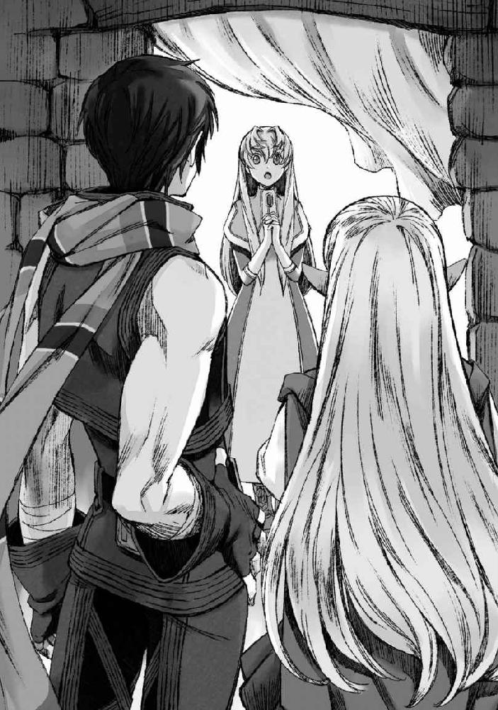
いろいろ、考えてはいたのだ。
俺たちは彼女に飛空艇を墜とす姿を見られている。
命の恩人ではあるものの、怖がられてしまう可能性も決して少なくはない。
それでまずは一枚の布を隔てて姿を隠しつつ、言葉を重ねてこちらに彼女に対する害意がないことをわかってもらってから姿を現す。
それと同時に万が一彼女が聞く耳を持たず、人を呼ぼうとしたり、さらに万が一というか億が一ぐらいの確率で彼女がこちらへと攻撃を仕掛けてくるようなことがあった場合には、エリサとライザは回れ右、俺とイサトさんは廃墟を突っ切って逃げる、というような退路までも考えてあった。
考えてあったのだ、が。
そういった諸々が、悪戯な風のせいで一気に無駄になった感。
思わず目がテンになる俺とイサトさん。
ぽかんと目を丸くする彼女。
エリサとライザも彼女の背後で「!?」という顔をしている。
当事者でなければちょっと面白く思ってしまうような状況ではあるのだが......。
さて、どうするか。
逃げるか？
それとも何もなかったかのように平然と話を続けるか？
迷いつつ俺は彼女の反応を窺い、ちょっとばかりびくっとしてしまった。
どうも、目の前の彼女の反応は俺たちの予想から大きく外れていたのだ。逃げられる、叫ばれる、あたりは想定していたが、彼女はまるで白昼夢でも見ているかのようにぼんやりとしてしまっている。
そんな反応に対する対処法はさすがに考えていなかった。
「............」
「............」
微かに潤んでいるように見える濃い碧の瞳や、うっすらと赤く染まった頰、はたまた恥じらうように伏せられた視線だったりに、なんだか妙な気まずさを感じてしまうのは俺だけだろうか。
なんかこう。
おしゃべりな友人に、「隣のクラスの誰それがお前のこと好きらしいぜ」と聞かされた直後に、その隣のクラスの誰それと放課後の教室でうっかり二人きりになってしまった時に感じる気まずさ、というか。
照れくさいような、どうしていいのかわからなくて逃げ出したくなるようなあの感じ。
......まあ、自意識過剰なのがいけないのはわかってるんだが。
俺はびす、と軽く隣のイサトさんの脇腹を肘でつつく。
ここはイサトさんが行くべきだろう。
なんて言ったって同性だし。
だというのに、何故かやんわりと足を踏むことで応戦された。
何故だ。
ちらっと隣を見やれば、イサトさんがもっともらしい顔でこそりと俺へと囁く。
「私は面識がないからな。君が仕切ってくれないと」
「........................」
なるほど。
もっともだ。
「で、本音は？」
「君がどぎまぎしているのが面白い」
「コノヤロウ」
完全にただの愉快犯じゃねえか。
俺はちょっぴり荒んだ気持ちで小さく息を吐く。
まったく、青少年をからかって楽しむ悪い大人には困ったものである。
が、いつまでももじもじと恥じらいあっていても話は進まない。
ここは俺が男を見せるしかないだろう。
「ええと......その」
ものすごい掠れた声が出た。
イサトさんが変なことを言いやがったせいで、余計に意識して心拍数が上がっている。なんだこれ。どういう状況なんだ。
「は、はい。なんでしょう......？」
ぎこちない俺の声に、彼女も緊張に上擦った声で言葉を返す。
隣でイサトさんがニヤニヤしているのがわかる。
この仕返しはいつか絶対してやるからな、と心の中で呟きつつ、俺はこの状況を打破すべく──...覚悟を決めて口を開いた。
「ちょっとお茶でもどうです？」
「ナンパか」
イサトさんのツッコミが高速だった。
彼女を連れて、宿に戻る。
本当ならばもっと人目のあるカフェなどの方が彼女にとっては安心できるのだろうが、これから話そうとしている諸々の内容を考えると、そういうわけにもいかない。三部屋とっているうちの、イサトさんの部屋に案内したのがせめてもの良心である。
ちなみに三部屋の内訳は、俺、イサトさん、エリサ＆ライザ姉弟、だ。
エリサ達は、ちゃんと帰る場所があるから良い、と最初は遠慮していたのだけれども、そこは俺らが雇っているのだからという雇い主特権で押し切った。
それこそまさに小さな親切大きなお世話だったかもしれないが、ギルロイ商会側の動きがわからない上に、獣人の対してのあたりのキツいこの街で、エリサとライザを二人だけにしたくない、と思ってしまったのだ。
戸惑ったように立ちつくしている彼女へと、ベッドサイドのテーブルを勧めようとしてふと気づいた。椅子が足りてない。
「しまったな」
もともと一人～二人で泊まることを前提としているので、この部屋には椅子が二つしか備えつけられていないのだ。普段四人で話す時は、わりと行儀悪くベッドに座って済ましてしまうことが多かったせいで、こうして部屋に来るまで椅子の数のことが頭から抜けていた。
「アレか」
「ん？」
「親ガメ子ガメ作戦」
同じことに気付いたらしきイサトさんが、ロクでもない作戦を提案する。
親ガメ子ガメというのはアレだろう。
俺の上にイサトさん、その上にエリサ、ライザが乗るという。
「............」
数瞬の沈思黙考。
悪くない。悪くはない。
俺はにこーっと無害そうに微笑みつつ、両手をわきわきと動かしてイサトさんへと視線を投げかけた。
「俺はそれでもいいけど？」
「え」
がたりと椅子を引いて、どっかりと腰掛ける。
そして笑顔でさあ来いと促してみた。
やれるものならやってみやがれ。
「..................秋良青年が可愛くない返しを」
「俺だって学ぶわ」
「くそう......」
悔しそうにイサトさんが肩を落とす。
それを見届けてから、俺はふん、と小さく勝ち誇るように息を吐いて立ち上がった。実際に親ガメ子ガメ作戦をしてもいいが、そんな得体のしれないブツと対話しなくてはならない彼女が可哀そうである。
「秋良青年？」
「隣の部屋から椅子取ってくる」
後で元に戻せば、特に問題はないだろう。
俺は部屋から出ようとして、ついでにベッドの上に座っているエリサとライザへと声をかけた。
「お前たちはどうする？ お前たちの分の椅子も持ってくるか？」
「オレらはベッドの上にでもいるよ」
「了解」
基本的に彼女と話をするのは俺とイサトさんになるだろうし、テーブルはベッドサイドに設置されているため、二人が会話する俺たちから遠すぎる、ということもない。二人がそれで良いと言うのならそれはそれで良いだろう。
俺はそのまま部屋を出かけて、ふと振り返った。
お茶でも、とナンパの常套句を口走ってしまったというのに、飲み物一つ出さないのもどうかと思ったのだ。
「エリサ、ライザ、もし手が空いてたら下で紅茶でも淹れてきてくれないか？」
「いいぜ、わかった」
「僕も手伝う！」
二人が張り切った様子で俺の横をすり抜けて、下へと向かう。
ここの女将さんは、エリサやライザが獣人だからといって冷たい対応をするというようなことがない。きっと人間か獣人か、というよりも客かどうかの方が女将さんにとっては大事な問題なのだろう。二人が仲良く階段を下りて行くのを見届けてから、俺は隣の部屋へと向かった。
椅子を担いで部屋に戻ると、俺は持ってきた椅子をテーブルの傍に下ろしてそのまま腰を下ろした。やや俺側にイサトさん、その向かいに彼女が座る、という位置関係だ。
「............」
「............」
「............」
お互いに、会話のきっかけを探しあぐねる、といったような沈黙。
さて、何から切りだそうかと俺が考えていると......。
「あ、あの......っ」
緊張に声を震わせながらも、先制攻撃（何か違う）に出たのは彼女の方だった。
彼女はがたりと音をたてて立ち上がると、テーブルに額を打ちつける気なのではと思ってしまうような勢いで俺たちに向かって頭を深々と下げた。
「先日は、助けていただき本当にありがとうございました......！」
「「えっ」」
俺とイサトさんの声がハモる。
そしてほぼ同時に二人してがたたっ、と音を立てつつ立ち上がる。
こう、なんというか、カラットの村でも感じたことだが、こんなにも大袈裟に感謝を示されてしまうと、どうにも座りが悪くなる。
「いや、その俺はほとんど何もしてないし。感謝ならイサトさんにしてくれ」
「いやいや何を言っているんだ秋良青年、モンスターの大部分を倒したのは秋良青年じゃないか。そこのお嬢さん、感謝ならば彼にすべきだよ」
「いやいやいや、飛空艇墜としたのはイサトさんじゃないか」
「いやいやいやいや、ヌメっとしたのを倒したのは秋良青年だろう」
びす。
びすびす。
お互いに肘で小突きあいながら、感謝の矛先を押し付けあう。
別段感謝されるのが嫌、というわけではないのだが......喉元過ぎれば熱さを忘れるというか、変なところで謙虚な日本人特性が遺憾なく発揮されてしまうというべきか、その感謝と自分のしたことが釣りあうのかどうかと考えると妙に気恥ずかしくなってしまうのだ。
「あー......」
「うー......」
俺たちが言葉に困り、ゾンビのような声をあげている辺りで、紅茶を淹れに行っていたエリサとライザが戻ってきた。二人はテーブルを挟んで向かい合い、お互いに立ったまま困ったようにしている俺たちに訝しげな視線を向けてくる。
「紅茶、淹れてきたけど......オマエたち何やってんの？」
「あの、タイミング悪かったですか......？」
紅茶の載ったお盆を手にしたエリサとライザが戻ってきた。
タイミングが悪い、というかある意味ベストタイミングというか。
エリサは立ちつくしてしまっていた俺たちに向かって、呆れたような溜息を一つついて、それからさっさと紅茶をそれぞれの前へと置いた。ライザが、軽く眉尻を下げた笑みを浮かべつつ、そっとミルクと砂糖のツボをテーブルの真ん中に置く。
「で？」
「......え？」
軽く砂糖をティースプーンに一杯紅茶にいれて、くるくると回しながらエリサは俺たちに向かってものすごく端的に問いかけた。
何がどう「で？」なのかがわからなくて、俺は目を丸くする。
「だから、なんでオマエらそんな立ったまま見つめあってんだよ。座れば？」
「ああ、うん」
「うん」
「はい」
三人して年下の女の子に仕切って貰って、ようやく再びテーブルを囲むことが出来るという残念な感じである。そんな残念な大人をちらりと見て、全くしょうがねえな、という顔で再び小さく息を吐くエリサ。
なんというか、不甲斐なくて申し訳ない。
俺もイサトさんも、揃ってこういう空気が不得手なのである。
真っ当な人を相手にするとペースが狂う、というあたり、俺とイサトさんはつくづく駄目かもしれない。
「あー......その」
「はい、何でしょう」
彼女が、俺の声にぴくっと肩を震わせて顔を上げる。
そんなに身構えられると、俺としてもそれだけの反応に見合った大事なことを言わないといけないような気になってしまって困る。
ぐぬぬ。なんとかならないのか、この空気。
経験したことはないが、なんだかお見合い会場っぽい。
なんだかトチ狂ってご趣味は、とか聞きたくなってしまう。
「ええと、まあ、みんな無事で良かった、です」
結局何か小学生の作文のようなコメントになった。
いや、本当気になってはいたのだ。
俺とイサトさんは、飛空艇を墜としてすぐにそのままトンズラぶっこいたので、『家』から出した後の乗客たちがどうなったのかを見届けていない。
あの段階で既に飛空艇撃墜に気付いたらしきセントラリアの方が騒がしくなっていたし、そもそも街の周辺には自分から人を襲うようなアクティブなモンスターはいない。そんなわけで、特に心配はしていなかったのだが......やはりこうして無事な姿を見るとほっとする部分はある。
「いえ......私たちが無事に助かったのは、全て貴方たちのおかげです。だというのに、きちんとお礼を差し上げることもできず......本当に失礼いたしました」
「いやいやいやいや、逃げたのは私たちだから」
イサトさんがひらひらと手を振る。
と、そこで俺たちのぎこちない会話を聞いていたエリサとライザがふと話に交じってきた。
「アキラとイサトはやっぱり人助けばっかしてんじゃねーか」
「わるもの、なんて言ってるのにね」
「......ぬ」
「ぐぬ」
エリサとライザのもっともな言葉に、俺とイサトさんが揃って言葉に詰まる。
イサトさんは、ちみっと誤魔化すように紅茶を啜った後、ちろり、とエリサとライザへと拗ねたような視線を向けた。
あ。これはちょっと止めた方が良いかもしれん。
そう思って俺がイサトさんの口を塞ぐよりも先に、イサトさんはぽそりと口を開いてしまっていた。
「飛空艇の撃墜は、たぶん『わるいこと』だぞ」
「──は？」
エリサの目がぽかんと丸くなる。
イサトさんの言葉を理解するまでに時間がかかっているのか、完全にフリーズしてしまっている。隣のライザも同様にピシッと石のように硬直している。
その反応に、イサトさんははちり、と瞬いた。
それからこそっと、隣に座っていた俺の耳元に顔を寄せる。
「......秋良青年、そう言えばエリサたちには飛空艇を墜としたことは話してなかったのだっけか」
「話してない話してない」
だから止めようと思ったのに。
きっとエリサやライザの中での俺たちは、正体不明ながらもそれなりに腕の立つ冒険者、といった感じでしか認識されていなかったはずだ。
それがいきなり、飛空艇撃墜の犯人である。
「............」
「............」
エリサとライザは呆然としている。
俺は椅子の前脚二本を浮かして傾けるようにしながら腕を伸ばし、俺は二人の眼前でひらひらっと手を振って見せた。
「！」
「！」
びくっと二人の肩が揺れる。
どうやら俺はエリザとライザの再起動に成功した模様。
「いやいやいや、確かに飛空艇墜落の話はオレたちも聞いてるけど！」
「確かトゥーラウェスト発の飛空艇が途中でモンスターに襲われて......」
「でも、たまたま落ちた雷のおかげでモンスターが死んで、助かったんじゃねーのか？」
ほう。
一般的にはそういう話になっているのか。
俺たちの関与がなかったことにされているなら、それはそれでありがたい。
「じゃあそういうことｄ──」
「──でも」
エリサがふと真剣な顔で言葉を続ける。
「飛空艇に乗ってた連中が、女神の使いに助けられたって言ってるって話も聞いた。漆黒の騎士がどこからともなく飛空艇に現れて、乗客を救いだしたんだって」
「......僕も、聞いた。空を飛ぶモンスターを従えた黒き伝承の民が、雷を呼んでセントラリアを救ったんだって」
二人の視線が、俺とイサトさんの上で止まる。
「............」
「............」
漆黒の騎士と、黒き伝承の民。
その組み合わせは、俺の装備とイサトさんの外見特徴とぴったり一致する。
まあ、一致するも何も張本人なのだが。
「い、い......」
ふるふる、とエリサが小刻みに震えはじめた。
が、果たして「い」とは何なのか。
半ば俺が現実逃避気味に「い」から始まる言葉を考え始めたあたりで、どかーんとエリサが爆発した。再起動に成功したと思っていたが、そのまま回線がショートしたくさい。
「意味わかんねー！！！！」
「おおおおねーちゃんしっかりー！！！」
涙目で叫びつつ、エリサがベッドの上にあった枕を俺らに向かってぶん投げる。
「おわっと!?」
俺は思わず反射的に頭をかがめてそれを避け──...その結果、エリサのぶん投げた枕は見事にイサトさんの顔面にクリーンヒットした。
「おうっ」
──これ、俺は何も悪くないと主張したい。
一時は俺とイサトさんが飛空艇を撃墜した犯人であるということを知って錯乱したエリサであったが、ぶん投げた枕によりイサトさんをＫＯしたあたりで我に返ってくれたらしい。ちなみに枕の直撃を受けたイサトさんは、不意打ちの勢いを殺せずそのままびたんと椅子から転げ落ちた。
戦闘の際にはグリフォンの手綱を駆って遊撃に勤しんだり、はたまたそのグリフォンの背から敵に向かって飛び降りてその胸を貫いたりとそれほど運動神経が悪いようには見えないイサトさんなのだが......どうも、普段はのたーん、としている。
非常時に分泌される脳内麻薬的な何かがないと、その運動神経は活性化されないものなのかもしれない。
「い、イサト、本当ごめん」
「いや、私たちの方こそ驚かしてしまって悪かったな。あと、一番悪いのはあそこで避けた秋良青年だ」
しょんもりと項垂れたエリサが気づかわしげにイサトさんを覗き込み、それに柔らかく微笑んだイサトさんが応じていたりするわけなのだが。
何かしれっと全部悪いのは俺のせいにされた感。
「............」
物言いをつけるほどのことではないので、おとなしく俺のせいにされておく。
それから落ち着いたエリサがベッドの上に戻ったところで、改めて俺たちは彼女へと向き直った。
エリサのおかげで、妙な気まずさが粉砕されたような気がしないでもない。
ここはこのまま、彼女を俺たちのペースに巻き込んでしまうことにしよう。
「えーっと、なんかいろいろあったがとりあえず自己紹介から始めるか」
「そうだな、それが良い」
もともと隠す気もなく、彼女の前でも平気で呼び合ってしまっていたので、彼女はある程度俺たちの名前を把握しているだろうが、俺たちは彼女のことをまだ何も知らないのだ。自己紹介は大事だ。
「わりと今更な感じだけど、俺はアキラだ。アキラ・トーノ。アキラって呼んでくれ。冒険者をやってる」
「私はイサトだ。イサト・クガ。イサトと呼んでくれると良い。秋良青年と同様冒険者をしている」
「......、」
俺とイサトさんの自己紹介に、彼女は少しだけ驚いたように息を吐いた。
何か物言いたげな様子だが、ひとまずは俺たちの自己紹介を最後まで聞くことにしたらしい。そんな彼女へと、エリサとライザがベッドの上から名乗りを上げる。
「オレはエリサ。こっちが弟のライザだ」
「ライザです」
エリサとライザは、まだ少し警戒しているのか名乗りが短めだ。
こちらの自己紹介が終わると、彼女はそっと自分の胸のあたりに手をあて、俺たちを順番に見つめながら口を開いた。
「私は、レティシア・レスタロイド。トゥーラウェストのレスタロイド商会の末娘です」
「......」
「......」
よほどギルロイ商会の連中のことがトラウマになっているのか、エリサやライザは彼女の口から「商会」という言葉が出ただけで苦虫を嚙み潰したような顔をした。それに、彼女、レティシアが困ったように眉尻を下げる。俺はそれをとりなすように言葉を続けた。
「だから君はこちらの商人ギルドにも出入りしていたわけなんだな」
「はい」
レスタロイド商会、か。
この世界のことをよく知らない俺たちにとっては、初めて聞く名前だ。
トゥーラウェストの商会だということで、エリサやライザも彼女の実家については知らないようだ。
セントラリアのギルロイ商会は獣人を利用して相当あくどいことをしているわけだが、果たしてレスタロイド商会はどうなのだろうか。
また、トゥーラウェストの商会であるレスタロイド家の末娘である彼女が、いったい何の用があってセントラリアの商人ギルドを訪ねていたのかも気になるところだ。先ほど見た感じだと、あまり和気藹々としているようには見えなかったわけだが......。
聞きたいことは、たくさんある。
けれど、それらを聞く前に一番の前提として最初に聞いておかなければいけないことがある。俺は、ちらりと一度視線をベッドの上のエリサやライザへと向けてから、彼女に視線を戻して口を開いた。
「最初に確認しておきたいんだけど、君は......」
「レティシア、と呼んでください」
「じゃあレティシアは、獣人のことをどう思ってる？」
まっすぐに彼女を見据えて、俺は直球で問いかける。
エリサやライザの前でこんなことを聞いてしまうのは、無神経にも過ぎるかもしれないが、今回の話をする上では一番大事なことだ。
レティシアがセントラリアにいる多くの人たちのように、獣人を略奪者と差別するようなことがあるのならば、彼女は俺たちの情報提供者として相応しくない。気持ち的な問題としてもそうだし、獣人側に対して偏見を持っている人間がその偏見をなくそうとしている俺たちに有用な情報を提供してくれるとは思えないからだ。
レティシアは俺の問いに答える前に、一度視線をエリサやライザへと向けた。
別に何の期待もしていない、といった顔で俺たちを見ている二人に対して、少しだけ悲し気に彼女は顔を曇らせた。それから、自分の中にある言葉を手探りで掬い上げるように、ゆっくりと言葉を紡いでいく。
「素晴らしい取引相手だと思っています。......それと同時に、手ごわいライバルであるとも」
ふむ。
今のところ彼女の答えは、俺たちの抱く理想に限りなく近い。
俺とイサトさんはちらりと視線を交わしたのち、今度はイサトさんの方から詳細を訪ねてみる。
「もう少し詳しく聞いても？」
「......はい」
俺たちがその答えからレティシアを見定めようとしていることがわかっているのか、彼女の声には微かに緊張の色が滲んでいた。それでも、レティシアは俺やイサトさんから視線をそらさない。
「現在、この世界では私たち人間は『女神の恵み』を手に入れることができなくなってしまいました。そんな中で、『女神の恵み』を未だ手に入れることができる獣人種の方々が、我々と取引をしてそれを流通させてくれるのならば、彼らは私にとっては素晴らしい取引相手だと思います」
「では、手ごわいライバルである、というのは？」
「彼らが取引してでもほしい、と思うものを人間側が供給できなくなれば、取引は一方的になり、バランスは崩れます。そう考えると、商人としては手ごわい、と感じてしまうのです」
「......なるほど」
彼女には、獣人種と人間の抱える問題が俺たちと同程度には見えている。
「それじゃあ、少し意地悪なことを聞いてもいいか？」
「はい、何でしょう」
「君の目から見て、セントラリアはどう見える？ 人間側にとって非常に有利な状況だと言えると思うんだが」
すっと目を細めつつ、聞いてみる。
同じ人間である俺からの問い故に、彼女は少し迷うように瞳を揺らした。
「これはあくまで私の私見ということで構わないでしょうか」
「ああ、構わない」
「......うまくない、と思います」
「うまくない？」
彼女は「良い」「悪い」ではない判断基準でもって、セントラリアの現状についてを表してみせた。
「私は、商人です。場合によっては情よりも利益で物事を判断することも厭わない身です」
彼女はそんな風に、自分自身の立場を語る。
それはきっと、彼女の行動基準が「正しいかどうか」というだけではないということなのだろう。この場合、問題となるのは彼女の「うまくやる」の基準がどこにあるか、だ。ギルロイ商会が今していることだって、見方を変えれば十分「うまくやっている」と言えなくもないのだから。
続きを促すような視線を向けると、彼女はゆっくりと自分の考えをまとめながら言葉を続けた。
「セントラリアでは、商会が『セントラリアから離れられない』理由のある獣人の方々から『女神の恵み』を安く仕入れています。これは一見我々人間側にとても有利であるように見えますが......短いスパンでしかこの優位性は保たれません」
「......どういうことだよ」
レティシアの言葉は、エリサとしてもスルーしきれなかったらしい。
彼女は、エリサに対して申し訳なさそうに眉尻を下げつつも、言葉を止めようとはしなかった。きちんと自分の意見を口にしなければ、信用を勝ち取ることができないということを分かっているのだ。
「失礼なことをお聞きしても良いですか？」
「......なんだよ」
警戒した風のエリサに対して、レティシアは静かに問いかける。
「エリサさん達は、どうしてセントラリアを離れないのですか？」
「ギルロイ商会の連中に借金があるからだ」
「では、どうして借金を踏み倒して逃げようとはしないのでしょう？」
「......っ」
レティシアの言葉に、思わずと言ったようにエリサが息を吞んだ。
まさか商会側の人間に、ここまで単刀直入な質問をぶつけられるとは思っていなかったのだろう。エリサは口をへの字にして黙り込む。それをエリサが気を悪くした故の沈黙だと思ったのか、レティシアは申し訳なさそうに謝罪の言葉を口にしようとして......それに重ねるように答えたのはライザだった。
「それは、僕の体が弱いからだよ」
「............」
エリサは口が悪かったり、素直じゃない部分はあるものの、基本的にはライザの良い姉であろうと努力している。そんなエリサにとって、ライザの存在が家族の足枷になってしまっている、というようなことは、口に出したくなかったのだろう。
「そう、ですか......」
レティシアは一度痛ましげに目を伏せたものの、そっと再び質問を口にする。
「もしも......もしも、ライザさんの身体の心配をしないでもすむようになったなら、どうですか？」
「出ていく、かもしれないね、お姉ちゃん」
「ああ、そうだな」
そうだろう。
エリサやライザの両親が人の社会に見切りをつけられない一番の理由は、ライザのための薬を手に入れるためだろう。その必要さえなければ、きっと借金を踏み倒し、人の社会から外れて生きることを選んでいたのではないだろうか。
レティシアはエリサやライザの言葉に、ふっと息を吐き出した。
「それでは、うまくないと私は思うのです。ギルロイ商会は、獣人の方々を利用して安く『女神の恵み』を手に入れることで利益を上げていますが、今聞いた通り獣人の方々は機会さえあれば街を離れたいと思ってしまっています。獣人の方々は、取引を続ける意思がないのです」
「そんなの、当たり前だろ。こんな状態、続けたいって思う獣人がいるわけねー」
「ですが、人間側はそれを望んでいます」
「それ、いつまでもオレらにずっと良いように利用されてろってことかよ......っ」
「違います」
きっと視線を強めて睨むエリサにも怯まず、レティシアはまっすぐとその怒りに燃える暗紅の瞳を見詰め返した。
「獣人と人間側で比べれば、人間側の方が獣人の方々との取引に依存した生活をしているのです。エリサさんやライザさんは、必要さえなくなれば街での生活を捨てても良い、という覚悟を持っています。ですが、人間側はどうでしょう？ セントラリアで生活する人々のうち、『女神の恵み』が手に入らなくなった後の生活に備えている人がどれくらいいるでしょうか」
それはきっと、彼女が最初に言った『獣人側が取引してでもほしいもの』に『街での生活』が値するか、ということなのだろう。
確かに、通りすがりの俺の目から見てもそのバランスはすでに危ういと思う。
だからこそ、いざとなったら逃げちまえ、とそそのかしているぐらいなのだ。
現状のセントラリアに、獣人が耐えてまで残る価値はないように見える。
「そういう意味で、私はセントラリアの現状はうまくない、と思っています。自分たちが供給できるものの価値を、自分たちで壊してしまっているように見えるのです。
だから、私はセントラリアに来ることにしたんです。家族には反対されたんですけど」
「なんでまた」
「レスタロイド商会も、トゥーラウェストでは大きな商会ですから。セントラリアの商人からしたら、自分たちの縄張りを荒らしに来たと受け取られてしまいかねません」
「あー......」
俺はレティシアの言葉に何となく納得の声をあげていた。
「だから、レティシアは一人なのか」
「......はい。世間知らずのひよっこが力試しに来た、ぐらいならあまり角が立たないでしょう？」
レティシアは苦笑混じりにそういうものの、すぐに真面目な調子に戻って言葉を続けた。
「セントラリアでの人間側の暴挙が、人間と獣人全体の関係にも影響していると思うと、やはりこのままギルロイ商会のやり方を放っておくわけにはいかない、と思ったんです」
「それはそう、だろうな。セントラリアでギルロイ商会に良いように使われて苦渋を舐めた獣人が、他の街でまた同じように人間と取引をするつもりになるか、と言われたら難しいだろう」
「実際、何人かの獣人の方から、セントラリアを離れてトゥーラウェストに来たい、というお話をこちらでも受けていたのですが......結局来てはいただけませんでした」
「......え？」
イサトさんへと相槌を打ったレティシアの残念そうな声に、はっとしたようにエリサとライザが顔をあげた。その顔に浮かんでいるのは、レティシアの言葉に対する疑念と......不安、だろうか。
「待てよ、そんなはずねーぞ」
「え......？」
強い調子で言われたエリサの言葉に、今度はレティシアが戸惑ったように瞳を揺らす。
「くだらない噓ついてんじゃねー」
エリサはそう吐き捨てるように言うと、苛立ったように身体ごと横を向いてしまった。珍しく、ライザもそんな姉の頑なな態度を諫めたり、レティシアに対してフォローしようとはしていない。ただ、不安そうに顔を俯けている。
一度軽く俺に視線をやってから、イサトさんは席を立つとそっぽを向いて黙り込んでしまったエリサの隣に腰かけた。
「エリサ」
「......なんだよ」
「どうして、レティシアの言葉が噓だと思ったんだ？」
「だって......っ」
エリサが顔をあげる。
その瞳には、うっすらと涙すら浮かんでいた。
エリサは何かを訴えかけるようにイサトさんを見つめるものの、なかなかそれを言葉にしようとはしない。まるで、自分の中にある疑念を確かめてしまうことを怖がっているかのようだった。
俺は、深く息を吐き出した。
これまでの会話の流れで、ここまでエリサが拒絶反応を示す理由。
そんなのは簡単に想像がついた。
そして、それをエリサとライザが認めたくないと思ってしまう理由も。
「......誰か、お前たちの知り合いがトゥーラウェストに向かったはず、なんだな？」
「......っ」
「......っ」
俺の言葉に、エリサとライザの肩が小さく跳ねる。
そう。
エリサとライザがレティシアの言葉にここまで強い拒絶反応を示したのは、きっと誰か実際にセントラリアを見捨て、トゥーラウェストに向かった獣人らに心当たりがあるからに違いない。
「レティシア」
「は、はいっ」
「レスタロイド商会に繫ぎをとっていた獣人の名前はわかるか？」
「はい、それならすぐに」
そう言うと、レティシアは足元に置いていた大振りの鞄から手帳を取り出してぱらぱらとめくっていく。
「ありました。ロッゾ・ルレッタ夫妻とその娘カネリ、それとシーカス・タニア夫妻とその息子、レンとミーシャ。それから......」
レティシアは次々と名前を挙げていく。
そして、その朗読が続くにつれて、エリサとライザの顔色はどんどん悪くなっていった。
「──以上になります」
四組の家族と、未婚の男女が数人。
レティシアの読み上げた名前は二十人ほどにも及ぶ。
そして──......
「その全員が、トゥーラウェストには到着していないんだな？」
「......はい」
事情が吞み込めてきたのか、レティシアの顔も青褪めている。
「レスタロイド商会ではないところに身を寄せた可能性は？」
「ゼロではないとは思いますが......可能性は低いと思います。もしそのようなことがあれば、商人ギルドで話題にならないはずがありませんから」
「レスタロイド商会を出し抜いてしまった、ということでどこかの商会がほとぼりがさめるまで匿ってる......っていうのは？」
「こちらも可能性は低いと思います。トゥーラウェストはセントラリアと違って獣人の方が少ないので......。街に出ず、屋内でのみ生活している、というのならそれもあるかもしれませんが......」
あまり、現実味はない。
そもそも、セントラリアでの不自由な生活を嫌って出奔したはずの人々が、自由に外に出ることも儘ならない隠遁生活を選ぶとは思えない。商会にしても、いくら『女神の恵み』を手に入れることができる獣人とはいえ、外に出せないのではただの不良債権だ。そんな存在を好き好んで何人も抱え込む商会はないだろう。
では──...セントラリアを出発したはずの獣人たちはどこへ消えた？
嫌な予感に、背筋がぞわぞわと毛羽立つ。
「エリサ、ライザ、辛いかもしれないが答えてくれ。さっきレティシアが名前を挙げた人たちは、皆本当にセントラリアを出発したのか？」
「............」
こくり、とエリサが小さくうなずく。
「僕たち、見送ったんです」
震える声で、ライザがぽつりと呟いた。
「いってらっしゃい、て西門から出ていくみんなを、見送ったんです......っ」
「みんな、落ち着いたら連絡するって言ってた。あっちでガンガン稼いで、まとまった金ができたらセントラリアに残ってるオレたちのことも呼んでやる、って」
ぽろぽろ、とエリサの頰を大粒の涙が零れ落ちていった。
ああ、本当に。
俺たちと出会ってから、エリサは泣いてばかりだ。
俺たちは、エリサを泣かしてしまってばかりいる。
「......なあ、アキラ、みんな、どこに行っちゃったんだよ。ずっと、オレらは待ってたんだ。なあ、アキラ、どうしたらいいんだよ、オレ、あいつらのことちょっと怒ってたんだ......っ」
セントラリアを先に見放して、出ていってしまった仲間たち。
準備ができて、用意が整ったら連絡する、いつか助けてやるから、なんて言葉を残して旅立っていきながら......やがて連絡は途絶える。
もしも、セントラリアからトゥーラウェストへの道のりが危険なものであり、命がけの旅であったのならば、きっと残されたものは旅立ったものたちの安否を気遣っただろう。
けれど、実際はそうではない。セントラリアからトゥーラウェストへの道のりは、時間さえかければ誰でも徒歩で踏破できる程度のものだ。だからこそ連絡を待ち続けた残されたものたちは、きっとセントラリアごと見捨てられたかのような気落ちを味わったのだろう。
エリサが言ったように、自分たちだけが助かれば、かつての仲間のことはどうでもよくなってしまったのかとやりきれない怒りを感じたりもしただろう。その怒りや、それでも先に旅立ったものの助けがなければセントラリアを脱出することもできないという引け目が、きっと彼らの失踪の発覚をここまで遅れさせてしまった。
「まさか、こんなことになっていたなんて......」
レティシアが茫然と呟く。
「私は......私たちレスタロイド商会側は、獣人の方々が私たちを信用してくださっていないから、土壇場でセントラリアを出ることをやめたか、もしくは別の都市に行ってしまったのだとばかり思っていました。だから......私がセントラリアに来て、直接獣人の方々と交渉するつもりでいたのです」
エリサやライザは、セントラリアに残されている獣人はもうそう多くはないと言っていたはずだ。セントラリアを見放すだけの強さを持った獣人のほとんどはセントラリアを出ていった、と。
エリサの隣に座り、その背をなだめるように優しく撫でてやっていたイサトさんがすっくと立ち上がった。
「秋良青年、確かめよう」
「ああ。レティシア、ちょっと力を貸してくれるか」
「はい......っ！」
俺は、ベッドの上で悄然と項垂れているエリサとライザへと向き直る。
そんな二人の姿は、見ていて痛ましく、一回りも二回りも小さくなってしまったように見えた。
これから、俺たちが暴こうとしている事実は、ますます二人を傷つけることになるかもしれない。知らなければ、エリサとライザはこれまで同様の日常を送ることができるのかもしれない。
「エリサ、ライザ」
「............」
「............」
俺の呼びかけに応えるように、エリサとライザが顔をあげる。
涙に滲み、赤くなった二対の双眸が俺を見る。
「俺は、お前たちを助ける。それは約束した通りだ。でも......もし辛いなら、お前たちは俺たちに付き合わなくてもいい」
何も知らないまま、助かる道を選んだとしてもいいのだ。
よくわからないけど解決したっぽい、ぐらいのふわふわした認識でいたって構わない。辛い現実になど、直面する必要はない。
「ちょっと行ってくる」
俺は、ぽんぽんと二人の頭を撫でた。
柔らかな緋色の癖っ毛をくしゃくしゃとかき混ぜる。
俺は、二人がどんな決断を下したとしてもその意思を尊重するし、その決断によって二人への態度が変わることはない。
そんな気持ちを込めて二人の頭を撫でて──...俺はイサトさんとレティシアとともに部屋を後にした。
宿を出たところで、俺は腹の底にわだかまった嫌な感じを散らすようにほう、と一息ついた。
なんとも、予想外の展開である。
陰険な商人に一泡吹かせてやろうと思っていただけだったはずなのだが......どうも事態が思わぬ方向に転がり出している。
「イサトさん、どう思う？」
「......うーん」
難しそうにイサトさんが唸る。
どうも納得がいっていない、という顔だ。
が、俺から話を振ってしまったとはいえ、ここでこのまま話をするのもアレだ。どこでギルロイ商会の息のかかった者に話を聞かれているかわかったものではない。とりあえず、先に街を出ることにした方が良いだろう。
「まあ、そのあたりはおいおい話していくとして......どこから行く？」
「どのみち全部確認するつもりなら、私はどこからでも構わないよ」
「それじゃあ......」
俺は、思いつめた表情をしているレティシアへと目を向けた。
「レティシア、セントラリアから脱出した獣人たちが選びそうな都市ってトゥーラウェスト以外だとどこが多そうかわかるか？」
「......トゥーラウェストを除くとなると、一番可能性が高いのはエスタイーストだと思います。次に、サウスガリアンでしょうか」
「へえ、ノースガリアは人気がないのか」
そんな風に言いつつ、俺はとりあえず南門へと足を向ける。
本命をラストに残す、というよりも単に俺たちの宿から一番近い門が南というだけなのだが、二人が何も言わずについてきたあたり、特に異論はない、ということでいいのだろう。
「ノースガリア、綺麗なのにな」
「なー」
ノースガリアは、セントラリアの北、極寒の地に作られた都市国家である。
俺もゲーム時代にはちょいちょいお世話になったが、「白亜の城」なんて言葉が似合う、どこか静謐な空気に包まれた美しい国だった。氷を思わせるクリスタルをふんだんに使った街並みは、ゲーム内ではスクリーンショットを撮る撮影場所として人気が高かった。街の奥にある大神殿などは、プレイヤーが行う結婚式──プレイヤー同士でやるごっこ遊びのようなもの──の開催場所としても賑わっていたはずだ。俺も、何度かそんな光景を見たことがある。
そんなノースガリアが、セントラリアから逃げ出そうとする獣人たちの受け皿として人気がない、というのは少しだけ意外な気がした。
確かに極寒地域ということもあり、エリアによってはあらかじめ準備をしないと状態異常扱いでエリア内にいるだけでＨＰが減少する、というデメリットもあったが......それはサウスガリアンも同じだ。南は南で、暑さによる状態異常エリアが広がっていたりするのである。
それでノースガリアを避けるあたり、獣人というのはもしかすると人間以上に寒さに弱かったりするんだろうか。
「............」
と、そこでレティシアが何かもの言いたげな視線をちらちらと向けているのに気づいた。何か聞きたいことがあるものの、それを口にしてもいいのかどうかを迷っている、というような顔だ。
聞かれて困るようなことならばこちらで適当に誤魔化せばいいだけの話なので、俺は何気なく首を傾げてレティシアへと話を向けてみることにした。
「どうかしたか？」
「いえ......その、ノースガリアの人気がないことを不思議そうにしてたので」
「ああ、俺たちは最近このあたりに来たばかりの旅人でなー」
「まだあまりこのあたりのことをよく知らないんだ」
「............」
俺の隣から、イサトさんも援護のように口を開く。
この世界に来てから出会った人々には、基本「物を知らない田舎者」という設定で誤魔化してきているので、レティシアに対してもそのつもりである。
「そうなんですね。お二人はノースガリアには行ったことがあるんですか？ ものすごく寒いけれど......建物なんかはとても綺麗だと聞いたことがあります」
「そうだなあ、建物は凄く綺麗だよ。街全体がエルフの女王の張った結界に包まれててな」
「空から差し込む淡い光に、水晶の街並みがきらきら光ってるんだ」
「............」
お？
俺たちの言葉を聞いたとたん、レティシアは雑踏の中でぴたりと足を止めてしまった。
何かまずいことを言ってしまっただろうか。
俺はちらりとイサトさんを見てみる。
イサトさんも、今のやりとりで何がまずかったのかを測りかねているのか、やっぱり不思議そうに瞬くばかりだ。
それに対して、レティシアは俺たちへと緊張のこもった眼差しを向けた。
そして、静かに口を開く。
「イサト様とアキラ様は──...どちらから来られたのですか？」
「「え」」
俺とイサトさんは思わず顔を見合わせる。
カラット村やエルリアにおいては「どこか遠く」という適当な誤魔化しが通用していたのだが、こうして正面から「どこ」と聞かれると困る。
「ええっと......カラットのあたりだよ」
噓はついてない。
セントラリアに来る前は、確かに俺たちはカラットにいた。
トゥーラウェストや、エルリアではなく、カラットという辺境の小さな村の名前を出したのは、その響きから適当にレティシアが「どこか遠く」だと認識してくれれば良いと思ったからだ。
が、俺のそんな誤魔化しは通用しなかったらしい。
「アキラ様とイサト様が、自らの存在を隠しておきたいのなら、それはそれで構いません。ですが......」
困ったように、眉尻を小さく下げてレティシアは笑った。
「それなら、もっと気を付けた方がいいです」
「......う」
どうやら俺とイサトさんは、うまく誤魔化したつもりで、何か墓穴を掘ってしまっていたらしい。
こうなったら下手に隠し立てするよりも、開き直った方がいいだろう。
レティシアも、俺たちに対して無理に追及するような気はないようだし。
俺はぽりぽりと頭をかきつつ、レティシアへと聞き返した。
「えっと......今のやりとりのどこがまずかった？」
「ノースガリアです。ノースガリアは......すでに滅んだ国なんです」
「......っ」
イサトさんと二人、息を吞んで思わず顔を見合せた。
「かつてはエルフの女王によって結界が張られ、美しいクリスタルの都市が栄えていたとは言われているのですが......結界がなくなった今、廃墟が雪に埋まるばかりだと聞いています」
ああ、そうか。
俺たちは知っているはずだ。
エルフが、「白き森の民」と呼ばれた存在が、もうとうにこの世界からは途絶えてしまっていたことを。
エルフがいなくなれば、ノースガリアを降りやまぬ雪から守る存在もなくなるのは当然だ。
雪と氷に閉ざされ、白に吞まれて滅んだ美しい国。
ゲーム内でしか知らないとはいえ、馴染み深い場所が今ではもうなくなってしまったのだと思うと、喪失感に心がわずかに重くなる。
が、そのおかげで俺たちがとんでもない墓穴を掘ったのは理解した。
そりゃそうだ。
俺とイサトさんは、未だに「ノースガリア」という国があるつもりで話をしてしまっていたのだから。
「ノースガリアで何があったんだ？」
「......わかりません。ただ、『セントラリアの大消失』と関係している、という話は伝わっています」
「セントラリアの大消失......？」
また、俺たちの知らない言葉が出てきた。
おそらく、きっとこのあたりのことも、この世界においては「当たり前の歴史」の話なのだろう。
俺たちが知るゲームとしてのこの世界の形と、今俺たちがいるこの世界に至るまでの空白。
レティシアは俺たちへと説明を続けながら、再びゆっくりと歩き出す。
「今から何百年も前に、セントラリアは一度滅んだらしいんです」
「セントラリアも滅んだって......」
あちこち滅びすぎである。
「ある朝、いつものようにセントラリア近郊に暮らす農夫が朝市に出すつもりの野菜を荷馬車に載せてやってきたところ、門に騎士の姿が見当たらず......首を傾げながらも足を踏み入れた先にあったのは、誰もいないセントラリアだったんだそうです」
「街の住人が......一晩で消えた、ということか？」
「......はい」
「マリーセレスト号事件めいているな」
「確かに」
マリーセレスト号。
それは、大海原を彷徨う幽霊船の一種だ。
つい先ほどまで人々がいた気配だけは残っているのに、乗組員は誰一人として見つからない幽霊船。
世界七不思議に入ってるんだったか入っていないんだったか。
思わずそんな怪談を思い出してしまうエピソードである。
「何があったのかは、今でもわかっていません。目撃者はおろか、朝になるまで近隣の人間は誰もそんなことが起きているなんて気づいていなかったのですから」
「なるほどな......ノースガリアでも同じことがあったのか？」
「そのよう、です。ノースガリアは白き森の民の国だったと言われているのですが......やはりある日旅人が訪れたときには、もうもぬけの殻だったのだと言われています」
「......サウスガリアンはどうだったんだ？ サウスガリアンにはダークエルフが、黒き伝承の民がいたはずだ」
そう。
ノースガリアとサウスガリアン、名前が似ているのには理由がある。
どちらも、エルフ種族が中心となって栄えている国なのだ。
北はエルフ、南はダークエルフ。
自然環境の厳しいエリアだからこそ、精霊たちに愛された種族であるエルフとダークエルフが繁栄していたのだろう。
「サウスガリアンも......知らせを聞いた人々が黒き伝承の民が直接治める遺跡を訪れたときには、もうそこには誰も......」
俺たちの間に、沈黙が降りる。
セントラリアの大消失。
消えたエルフとダークエルフ。
『女神の恵み』が手に入らなくなった人間種。
セントラリアに飛空艇を墜とそうとした謎のヌメっとした黒い人型。
俺らの知らないところで、何かが起きている。
もしかしたら、「異世界人である俺たちの召喚」もこの世界に起きている異変の一つであるのかもしれない。
もしそうだとしたのならば......この世界のどこかに、俺たちと同様に迷い込んでしまったお仲間がいる可能性だってある。
もし本格的にレティシアと協力関係が結べるのならば......そのあたりの情報収集であったりも、頼みたいところだ。
俺は、ちらりとレティシアへと目を向ける。
「なあ」
「はい？」
少し、緊張したような声と眼差し。
けれど、警戒はない。
「レティシアは、俺たちが怖くはないのか？」
思えば、先ほど路地裏で俺たちに再会したときだって、彼女の目に怯えの色はなかった。そんな彼女は、俺たちが「ただの凄腕の冒険者」ではないことも知った上で、どうしてこうして俺たちと一緒に行動を共にしてくれているのだろう。
我ながら、逃げられてもおかしくないとも思うのだが。
「怖くなんか、ありません」
俺の問いかけに、そう言ってレティシアはふわりと微笑みを浮かべた。
柔らかいのに、どこか強かさを感じる笑みだ。
綺麗だな、となんとなく思った。
「......自分でいうのもなんだが、俺たち、結構得体が知れないぞ？」
「はい」
きっぱりと頷かれてしまった。
これはこれで、なんだか微妙な気がしてちょっと目が泳ぐ。
「きっと......イサト様とアキラ様が、私を助けてくれたからだと思います。あの時飛空艇で、私は死を覚悟してました。そんなとき、お二人が颯爽と現れて私たちを助けてくださったんです」
少し、照れくさそうにレティシアが微笑む。
「私には──...お二人が、まるで女神から遣わされた古の英雄のように見えたんです。だから......お二人が普通の人じゃないことなんて、最初からわかってたようなものなんです」
「............」
「............」
真正面から讃えられて、俺とイサトさんは揃ってぎくしゃくと顔を伏せた。
耳がじんわり熱い。
どうも、こういうのは慣れない。
イサトさんの、銀髪からツンと飛び出したエルフ耳の先っちょもほんのりと朱色に染まっている。
「まあ、あれだ。うん」
「うん。あれだ」
何だろう。
とりあえずイサトさんに相槌を打ってはみたものの、謎である。
そうこうしているうちに、先に立ち直ったのはイサトさんだった。
まだ少し目元を赤くしつつも、ふん、と顔をあげてレティシアを見る。
「だが良かったよ。君が怖くない、と言うなら安心して──...巻き込むことが出来る」
「え」
ぴし、とぎこちなくレティシアの動きが固まる。
可哀そうに。
おっさんに迂闊なことを言うから、振り回されることになるのである。
まあ、俺も人のことは言えないが。
「......そういう意味じゃないと思うけどなー」
謎の負け惜しみめいたイサトさんの言葉に小声でつっこみつつ。
俺たちはセントラリアの南門を潜ったのだった。
そして。
大空にレティシアの物悲しげな悲鳴がこだまする。
「ひ──────あ──────────！」
もちろん、グリフォンに騎乗してのことである。
今回の騎乗順はイサトさん、レティシア、俺、だ。
やっぱり俺が手綱を握り、バックシートも兼ねているわけなのだが......体勢上背後からレティシアを抱きしめるような形になってしまうことに戸惑いを感じずにはいられない。これまでは気心の知れたイサトさんが相手だったから、俺だってまあいいか、と思えていたのだ。まだ出会って間もない女の子に、命綱を兼ねているとはいえこうして腕を回すのはなんとなく躊躇ってしまう。
身長的には「イサトさんレティシア」だったので、アーミットの時と同じでいいじゃないか、と思っていたのだが......途中で本気で怖がったレティシアに泣きを入れられてしまったのである。ジェットコースターなんかでも、一番怖いのは先頭だと言う話を聞いたことがあるので、レティシアが怖がるのも仕方のないことなのかもしれない。
そんなわけで、イサトさんとレティシアの位置を入れ替え、何とか俺たちはサウスガリアンを目指しているのだが......。
「う、ぐぐぐぐ......」
イサトさんが時折呻いているのが聞こえるのは、レティシアが力任せにぎゅうぎゅうイサトさんに抱き付いているせいだろう。
締め技めいているが大丈夫かアレ。
時折ギブアップのタップめいて、イサトさんがぺしぺしとレティシアの腕を叩いているわけなのだが、余裕のないレティシアはそんなイサトさんのコールを綺麗にスルーし続けている。
「も、モツが......モツが......」
そんな呻き声を聞きながら、俺はイサトさんのモツの無事を祈りつつ、サウスガリアンへと急ぐのだった。
サウスガリアンの街につながる門が見え始めたところで、俺たちは人目につかない岩陰に降りることにした。
サウスガリアンの目の前だけあって、こうして地上に降りるとむっとするような熱気とともに、鼻先を微かに硫黄の香りが漂う。ＲＦＣにおけるサウスガリアンは火山に囲まれた工業国で、人よりもドアーフのような亜人種が多く、質の良い武器や防具を店売りで手に入れることができた。ＲＦＣプレイヤーの多くは、サウスガリアンでレベルに応じた武器を買ったり、必要な材料を集めた上でＮＰＣのドアーフ職人に依頼して武器や防具を作ってもらったことがあるはずだ。俺も今のドロップ武器に落ち着くまでは、さまざまな剣を鍛えてもらったものだ。
もしかすると、ノースガリアとサウスガリアンの違いはそこにあったのかもしれない。ノースガリアは、エルフの女王を司祭として祀る神殿を中心とした、本当にエルフによるエルフのための国、といった感じだったのだ。
それに比べると、サウスガリアンは少し様子が違う。
ダークエルフの女王が司祭として祀られる神殿があるのはノースガリアと変わらないのだが、サウスガリアンはその一方でドアーフや獣人、人間による工業地帯としても栄えている。その結果、サウスガリアンはダークエルフが姿を消しても都市国家としての形を残すことに成功し、一方のノースガリアは国ごと滅んでしまうことになったのだろう。
周囲をひとしきり観察して、それから俺はちらりと視線を連れの二人へと戻した。なんというか、二人して疲労困憊、といった態である。
「......大丈夫か？」
「だ、大丈夫、です......」
俺の問いかけに、顔面蒼白のレティシアが答える。
それはいいとして、無言でおなか回りを撫でているイサトさんの安否が気になるところである。
モツは無事か。
何気なく隣に並んで様子をうかがうと、イサトさんは小声で「内臓の配置が微妙に変わったような気がする......」などと謎のコメントをのたまった。
それから俺の視線にふと気付いたように瞬いて......、にまーとタチの悪い笑みがその口元に浮かんだ。
意外と元気だな、おっさん！
なんだか嫌な予感しかしない顔である。
イサトさんはうりうり、と肘で俺の脇腹のあたりを小突きながら言う。
「役得だったな、秋良青年」
「............」
何が、なんてわざわざ聞くまでもない。
グリフォンでの移動の間、俺とレティシアが密着していたことをからかっているのだろう。
おっさんか。
おっさんだ。
俺は「はあ」と深々と溜息をついた。
半眼で溜息をついた俺に、イサトさんは満足そうにふっふっふっふ、と笑いながら赤茶けた大地を歩いていく。
役得なら普段から存分に味わっているわけなのだが、どうしてこの人はこうも華麗に自分のことを棚上げしやがるのか。
一度とことん問い詰めてみたい。
小一時間正座で問い詰めたい。
「......まったく」
俺は小声でぼやいて、少しだけ足を速めてイサトさんへと追いついた。
そして、そろそろ良いか、とばかりにセントラリアでは口にするのがはばかられた疑問についてを口にしてみる。
「なあ、イサトさん」
「なんだ？」
「本当にギルロイ商会がそこまでやったと思うか？」
「うーん......やっぱりそこだよな」
そう。
問題はそこだ。
イサトさんも同じところで引っかかっていたらしい。
セントラリアから脱出した獣人、というのがギルロイ商会にとって厄介なものなのはわかる。純粋にギルロイ商会の労働力が減る、というだけでなく、その獣人たちが別の商会に属することにでもなれば、ライバルの強化にすら繫がるからだ。味方になるどころか敵の戦力になりうる相手ならば消してしまった方が都合が良い──...というのは、考え方としてはアリといえばアリなのだが......。
「レティシア、ギルロイ商会のやり口について聞いてもいいか？」
「はい」
俺は頭の中でこれまでに知りえたギルロイ商会についての情報を整理する。
十数年前より、「獣人が『女神の恵み』を独占する略奪者」であるという差別意識をセントラリアに広め、獣人から富を奪い返しても構わないという風潮を作りあげたギルロイ商会。
その一方で、セントラリアの街の中に居場所を失った獣人たちに金を貸すことで援助し、『女神の恵み』を手に入れるための労働力を確保した。
「『女神の恵み』は一律の価格で買い取られなければならない」という法律を悪用して低価格で買いたたき、獣人たちから財力を奪い、街で暮らすためにはギルロイ商会に従属するしかない環境を作りあげた。
えげつない手腕ではあるが、ある意味見事だとも言える。
「ギルロイ商会にライバルはいなかったのか？」
「ライバル、ですか？」
「『女神の恵み』を独占したりしたら、他の商会はいい顔をしたりはしないんじゃないか、と思って」
普通なら、利益の独占は同業者からも嫌われる。
獣人との取引の窓口をギルロイ商会一本に絞るなど、他の商会が素直に認めるとは思えないのだが......。
「ギルロイ商会は......『女神の恵み』は独占しましたが、どうやらその利益は独占しなかったようなんです」
「独占しなかった？」
「ギルロイ商会は、『女神の恵み』の売買で得た利益の四割程度をセントラリアの商人ギルドを通して、分配してるんです。また、加工が必要な原料としての『女神の恵み』に関しては、市場を通すよりも安価で提供しています」
「おお......」
そこまでしていれば、確かに競合他社からの文句も出にくいだろう。
というか競合してない。
ある程度利益を共有することで、ギルロイ商会はセントラリアの商人ギルドを一つにまとめあげているのだ。
「でも、そんなことして肝心の利益は出せるのか？ 文句も出ませんが儲かりもしません、じゃ困るだろう？」
「そうですね。そこをギルロイ商会は外貨を稼ぐことで解決しているんです」
「外貨？ ああ、セントラリア以外の国の商会との取引、か」
「はい。例えば私の実家のあるトゥーラウェストでは、砂漠のピラミッドから取れる宝石系の『女神の恵み』が特産品になります。エスタイーストでは、体力の回復などに役立つ薬草、植物系の『女神の恵み』が。サウスガリアンでは、鉱物系の『女神の恵み』が特産です。そしてセントラリアは──...その全ての特産品を手に入れることが出来るんです」
「あー......なるほどな」
セントラリアの南門を出たあたりのフィールドに出没するのは確かにサウスガリアン系のモンスターだし、東門を出た先のフィールドにはエスタイースト系のモンスターがいる。街に近いエリアには基本的に低レベルモンスターしかいないが、それでも倒せばアイテムはドロップするのだ。
そういった恵まれた立地にあるため、セントラリアは『女神の恵み』に関しては、他の周辺都市国家に比べると非常にアドバンテージを持っていることになる。それならば、セントラリア内で争うよりも、獣人から『女神の恵み』を買いたたく窓口を上手く絞り、安く手に入れた原材料を元に加工品を高く周辺都市国家に売った方が確かに他の商人や商会にとっても都合が良い。
つくづく下種いが上手いやり口である。
だが、上手いが故にやっぱりちぐはぐな印象を受ける。
そこまで上手くやっている連中が、いくらブラック企業だからといって、優秀な人材が他社に引き抜かれるぐらいなら殺す、なんて極論に飛びつくだろうか。
そのあたりが、俺とイサトさんの現代人的感覚に違和感を訴えている。
果たして、セントラリアを後にしたはずの獣人たちの失踪にギルロイ商会以外の何かが関与しているのか。
それとも、最初から俺たちがギルロイ商会を見誤っていたのか。
そんなことを考えている間にも、無事にサウスガリアンに到着する。
門を抜ける際には冒険者カードを見せて身分を証明。
三人とも問題なく通り抜けることが出来た。
向かうのは、サウスガリアンの商人ギルドだ。
石畳の街並みを、レティシアの案内で歩いていく。
セントラリアや、トゥーラウェストとはまた趣の異なる街並みが目に新鮮だ。
セントラリアは、いかにも中世の西洋都市といったイメージをかきたてる三角屋根が多かったのだが......サウスガリアンの入り組んだ街並みにはどこかスチームパンクっぽい雰囲気がある。無骨なパイプや、歯車といったものが無造作に組み込まれているのが男心をくすぐる。
ふと顔をあげると、イサトさんが楽しそうにきょろきょろと周囲を眺めているのが目に入った。完全に油断した観光モードである。子供のように瞳をきらきらさせて、何か物珍しい建物を見かけるたびに、こっそりと小さく「ほー」と感心するような声をあげている。
「............」
そんな姿が微笑ましくて、ちょっとだけからかってやりたくなった。
俺はイサトさんの隣にすすっと並ぶ。
「イサトさん」
「ん？ どうかしたか？」
俺の方に振り返ったとたん、イサトさんはいかにもはしゃいでませんよ、といった顔を取り繕った。そんなイサトさんへと俺はすっと目を細め。
「ここで俺が今から別行動な、サウスガリアンの門前で一時間後に待ち合わせしようぜ、って言ったらどうする？」
俺の意地悪な問いかけに、イサトさんはぱちりと瞬いた。
そして。
「二度と再会できなくなる」
「ぶ」
即答だった。
開き直りやがった。
ここで別に大丈夫ですし、なんて意地を張ってくれたりなどしたならば、それをネタにからかってやろうと思っていたのに。
さすがはイサトさん、一筋縄ではいかなかった。
「だから秋良青年、私とはぐれたら終わりだと思ってくれ」
「そんな大げさな......」
とは言いつつイサトさんならあり得そうなので、目を離さないようにしようと改めて決意する。そういえばイサトさんには砂漠で迷子という前科があるのである。しかも、俺が見つけるまで迷子になったことにすら気づいてなかった。
「つきましたよ」
「お」
ふと、俺たちを先導していたレティシアが一軒の建物の前で足を止めた。
俺たちが馬鹿なやりとりをしている間にも、目的地についていたらしい。
どうやらここがサウスガリアンの商人ギルドのようだ。
「ちょっと、話を聞いてきてみます。こちらにセントラリアから越してきた獣人の方たちがいるかどうかを確認したら良いんですよね？」
「ああ、頼めるか？」
「大丈夫だと思います。ちょっと行ってきますね」
きりっと表情を引き締めて、レティシアはサウスガリアンの商人ギルドへと乗り込んでいった。
結果。
サウスガリアンでもトゥーラウェストと同様のことが起きていたことがわかった。
獣人たちは、どこにもたどりついていない。
サウスガリアンの商人たちも、レティシアと同様に獣人が途中で気を変えたか、もしくはセントラリアの商人ギルドに引き抜き行為を見咎められたかのどちらかだろうと判断し、これ以上の手出しを控えているところだったのだそうだ。
レティシアが、セントラリアを旅立った獣人たちが消えていることを告げたところ、サウスガリアンの商人たちは酷く驚いていたのだと言う。
サウスガリアンを後にして、向かったエスタイーストでも同じことを繰り返しただけだった。
希望を胸にセントラリアを旅立った獣人たちは、忽然と姿を消してしまっている。
受け入れる側の商人たちは、引き抜き行為を咎められることを恐れて騒ぐことをせず、送り出した獣人たちは旅立った者の幸福を祈るがために連絡が途絶えたことを追求しようとはしなかった。
それ故に──...発覚がこんなにも遅くなってしまったのだ。
「......エリサとライザにどう説明したもんだろうな」
「説明を望むなら、本当のことを打ち明けるしかないだろう」
「......まさか、こんなことになっていたなんて......」
レティシアの顔色が紙のように白いのは、グリフォンの背に揺られているから、だけではないだろう。
俺たちは夜の帳が降りてきた群青の空を飛びながら、沈鬱な息を吐く。
また、エリサを泣かしてしまうことになるのだろうかと思うと気が重いながらも、セントラリアの南門近くでグリフォンから降り、宿へと戻る。
そして、二人が待つ部屋の扉を開こうとして──...
「アキラ、イサト......っ!!」
俺たちの足音を聞きつけたのか、えらい勢いで部屋の扉が開いた。
がん、と凄い音がした。
「............」
「............」
「............」
「............」
「～～～ッ」
どうしようもない沈黙。
誰も何も言えなくなってしまったので、仕方なく俺が犠牲になることにする。
「............イサトさん、無事か」
「し、しんだ」
扉の直撃を受けたイサトさん、轟沈。
額を押さえてうずくまり、無言で悶えている。
今のは痛かったろうなあ。
合掌。
と、それはいいとして。
出鼻をくじかれて呆然としているエリサとライザに水を向けてみる。
「どうしたエリサ、ライザ、そんな血相を変えて」
「！」
「！」
どうしよう、と困惑していた二人が、必死な面持ちで顔をあげて──
「ギルロイ商会のやつら、狩りチームを全滅させる気だ......！！！」
「ギルロイ商会のやつら、狩りチームを全滅させる気だ......！！！」
その言葉に対するイサトさんの行動は早かった。
獣人たちを安くこき使うことで、利益をあげているはずのギルロイ商会が、大事な手駒である獣人を全滅させることに何の意味があるのか。
金の卵を産む鶏を今ここで殺したとして、何の得がある？
ついそんなことを考えてしまった俺の傍らをすり抜けて室内に足を踏み入れると、インベントリから取り出した謎の球体をどちゃーっとベッドの上にぶちまける。大きさとしてはピンポン玉をもう一回りほど大きくした程度、だろうか。色は単色だが、赤色のものと緑色のものと二種類ある。無造作にぶちまけられたそれらのうちの幾つかは、ころころとベッドから転がり落ちてしまっている。
「おっと」
俺は自分の足元にも転がってきたそれを、足で軽く踏むようにして止めた。
そんな俺にちらりと一瞥を投げかけて、イサトさんが一言。
「秋良青年、それ衝撃を加えると爆発するぞ」
「ぶ」
なんという危険物。
そろっと足を持ち上げて、足元にあったそれを拾いあげる。
「イサトさん、これ何？」
「ん？ 使ったことないか？ 砲閃珠だよ」
「ああ、あの投擲用の？」
「そうそう」
砲閃珠。
今の会話からわかるとおり、前衛でがしがし敵とやりあう戦闘スタイルの俺には馴染が薄い、中距離攻撃用の使い捨て投擲武器である。その中でも、植物の種をベースに、生産スキルで生成するのが確か砲閃珠シリーズだったはずだ。
「......あ」
そうか、このためだったのか。
俺は今さらながら納得した。
以前、エリサとライザが俺たちへの恩返しのために何か出来ることはないか、と申し出てくれたことがあった。その時俺は、セントラリアの案内をしてくれればそれで十分だという話をしたのだが──...その後で二人がイサトさんにも同じ申し出をした時に、イサトさんは少し考えた後に、『それじゃあ、二人で植物の種を集めてくれないか？』なんて頼んでいたのだ。
その時はまた俺の『家』の庭に何か植える気か、としか思っていなかったのだが......なるほど、このためだったのか。ようやく合点がいった。
投擲武器というのは、他の武器と違って敵に与えるダメージ量が使用する人間のステータスに依存しない。ダメージ５００と設定された投擲武器は、誰が使ってもどんな敵にでも必ずダメージを５００与えるのだ。その分、高ダメージを叩き出す投擲武器ほど乱用を躊躇う程度には高額になるのだが......イサトさんなら材料さえ集めてしまえばある程度は自作が出来る。エリサやライザの戦力を強化する、という意味では、一番手っ取り早い方法だろう。
「ライザ、これを君に託す」
「ぼ、僕？」
「え？」
イサトさんの言葉に、ライザとエリサが二人して驚いたように声をあげる。
「今から私たちは狩りチームの方を助けに行くつもりだが、ギルロイ商会が動いたということは街に残った獣人側に対しても何らかの攻撃があるかもしれない。君はそれに備えて、私たちが行った後、他の獣人たちを集めて何とか凌いでほしい」
「......っ、お姉ちゃんは？」
「エリサには私たちの方についてきてもらおうと思ってる。私たちだけで助けに行ったところで、信用して貰えるかどうかわからないからな」
「............」
エリサが一緒ではない、と聞いて、ライザが、少しだけ怯えたように息を吞む。
エリサはそんな弟の様子に、唇を嚙んで迷うかのように瞳を揺らした。
両親を助けるために俺らと一緒に行くことを選ぶのが正解なのか、それとも、幼い弟の傍について共に戦いに備えるべきなのか。
「ライザ、もしオマエが......」
「......ううん」
躊躇いながらも口を開きかけたエリサに、ライザはゆっくりと首を横に振った。
まだ手は小さく震えてはいたものの、ライザはしっかりと両足を踏ん張ってエリサを見つめる。
「僕、やるよ。こっちは僕が頑張るから、お姉ちゃんは母さんたちを助けに行ってあげて」
「............わかった」
そう言い切るのに、ライザがどれだけの勇気を振り絞り、覚悟を決めたのかがわかるからこそ、それ以上はエリサも何も言えないようだった。そもそも、エリサもライザも『両親を助けたい』という想いは一緒なのだ。
ライザの覚悟を見届けたイサトさんは、続いて視線をレティシアへと流す。
「レティシア、君にはライザのサポートを頼みたい。君も、ギルロイ商会とは対立してる側の人間だ。街で何か動きがあった時には、いっしょくたに狙われる可能性も高い。それなら最初からライザたち獣人グループと一緒に行動していた方が良いと思うんだが、どうだろう？」
「わかりました。ライザさんも......構いませんか？」
「うん、よろしくお願いします」
「はい、こちらこそ」
そう言って、二人はお互いに会釈しあう。
なんとなくだが、この二人はわりとウマが合いそうだ。
まだ出会って間もないこともあり、どこか少しぎこちなさもあるが、きっと何とかなるだろう。
「それじゃあ、このボールみたいなヤツの使い方を説明しよう。二人ともよく聞いておいてくれ。この緑色のものは砲閃珠粘といって、弾けるとべたべたした液体を撒き散らして敵の動きを止める。赤いのは砲閃珠絶だ。こっちは弾けると同時に当てた相手を一定の確率で気絶させることが出来る。緑で動きを止めて、赤で仕留めると思えばいい」
「緑で動きを止めて......赤で仕留める」
「万が一ギルロイ商会の方々が攻めてきたら......これで応戦すればいいんですね」
イサトさんの、いつもよりもやや低めの硬い声音で語られる説明に、二人は気圧されたかのように神妙な顔つきで耳を傾けている。
その様子を見つつ、俺はこそっとイサトさんの耳元に顔を寄せて聞いてみた。
「イサトさん、アレ威力はどうなの」
店売りの投擲武器はダメージが固定だが、プレイヤーが生成した場合、そのプレイヤーの生産スキルのレベルに合わせて投擲武器の出来は変動する。正直イサトさんのレベルで生成した投擲武器なんていうのはかなり怖いものがあるわけなのだが。
「たぶん死なない」
「............」
そうか。
「たぶん」か。
「ダメージよりもサブ効果の確率を上げるように調整したからな。粘だったらべたべた度ＵＰだし、絶の方は気絶させる確率の方が上がってる」
「なるほど」
「まあ、ちょっとは威力も強化されちゃってるが──...、たぶん死なないとおもう。たぶん」
何故「たぶん」が二度ついたのか。
いまいち不安が残る。
が、今のところ使用を想定しているのはあくまで攻撃を受けた際の反撃として、というシチュエーションだ。万が一のことがあったとしても、自業自得で諦めてもらうしかないだろう。俺としても別に襲撃者の生死を心配しているわけではない。ただ......
「......直撃した瞬間人体が爆発四散とかしないよな？」
「さすがにそれはない」
良かった。
そんなことになったらレティシアやライザにトラウマが出来てしまうところだった。
「それじゃあ俺らも行くか」
「そうだな。ライザ、レティシア、後は任せた」
「うん！」
「はい......！」
そう言って俺は足早に部屋を出ようとして。
「どこに行くんだ、秋良」
そんな風にイサトさんに呼び止められた。
どこってそりゃあもちろん外に......、と思いつつ振り返った先、イサトさんは宿の出窓に足をかけ、半分身体を持ち上げた状態で俺を振り返っていた。片手にはすでに例の禍々しいスタッフが握られており、窓の外からはばさりばさりとグリフォンの羽ばたく音まで聞こえてきている。
「............」
無言でＵターン。
どうやらイサトさんは、もう人目を忍ぶ気もないらしい。
確かに緊急事態だし、後のことは後で考えることにしよう。
「イサトさん、落ちるなよ」
「ん」
イサトさんがグリフォンに乗り移るのを待って、俺もどっこらせ、と出窓に足をかける。かなり窮屈だが、そもそも人が出入りするための窓ではないので仕方がない。目測を誤ると頭をぶつけそうだ。
「よっと」
いつものようにイサトさんの背後を陣取り、グリフォンに跨って──...部屋の中から呆然と目を見開いてこちらを見つめるエリサへと手を差し出した。
「行こう、エリサ」
「っ......」
俺を見上げるエリサの瞳が、ほんの少しだけ不安の色に翳った。
俺に向かって伸ばされかけた手が、微かに躊躇するように震える。
その様子に、エリサが今試されていることがわかった。
エリサは、これまで「姉」であることを自分に強いてきた女の子だ。
留守がちな両親に代わって身体の弱い弟の面倒を見て、守ってきた。それが、エリサが自分に課した役割であり、仮面だ。その仮面をかぶることでエリサはある意味自分の弱い心──実際には年相応の子供の部分──を押し殺し、強くてしっかり者の頼りになる姉を演じていたのだ。
だが、エリサはもうすでに、俺たちになら素の自分を見せられることを知っている。そして、ライザとの別行動。これは、エリサにとっては大きいだろう。エリサが強い姉を演じていたのだとしたならば、その場合の観客はライザに他ならない。エリサはライザのためにその役を演じていたのだ。それなら、観客がいない舞台でエリサはどうする？
「オレ、は......」
迷うように小さく呟いて、エリサが俺を見上げる。
迷子の子供のようなその瞳をしっかりと見つめ返して、俺は言う。
「エリサが、決めていいぞ」
ライザのことは考えなくていい。
両親のことだって、エリサが行けないというのなら俺とイサトさんだけででも絶対に何とかしてやる。
だから、エリサが決めろ。
それが俺の素直な気持ちだった。
「来なくても良いぞ」とも「来てくれなきゃ困る」ともどっちも言ってあげることはしなかった。これまでエリサは、「姉としてしなければいけないこと」「姉としてした方が良いであろうこと」を意図的に選んでばかりきたのだ。それだってそうすると決めたのはエリサの意志には違いないだろうが......たまには難しかろうが我儘だって言わせたい。
それはきっと、エリサにとって楽なことではないはずだ。
自分のために自分の意志で決断するということは、時に誰かのために何かを決めることよりも難しい。
エリサが迷ったのは、ほんの少しの間だけだった。
ゆっくりと暗い紅の瞳が伏せられ、強い光を帯びて再び持ち上がる。
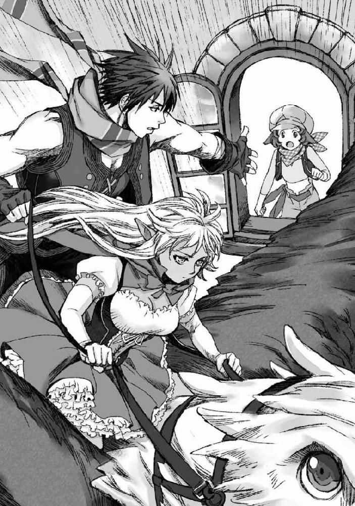
「行くに決まってんだろ！」
そう啖呵でも切るように言って、エリサは勢いよく俺の手を取った。
乗り移りやすいように軽く支えてやったその手は、微かに震えている。
けれど、それには気づかないふりをすることにした。
エリサ本人が隠そうとしているのなら、知らないふりをするのが武士の情けというものだ。俺もエリサも武士じゃないが。
俺とイサトさんの間に滑りこんだエリサの腰に緩く手を回して、固定する。
「エリサ、目的地は！」
「東だ！ 狩りチームは黒の城に向かったって言ってた！」
「了解！ いつもよりかっとばすから秋良、しっかり摑まえててくれ！」
「了解ッ！」
ぐ、っと手綱を強く握る。
いつもは俺に任される手綱だが、今回に限ってはイサトさんが握った余りの部分で身体を支えている、といった程度だ。それだけ、本気で飛ばす気なのだろう。
グリフォンが羽ばたき、窓辺を離れてみるみるうちに高度をあげ──...
「エリサ、よく決めたな」
高速移動に入る前に、俺はこっそりとエリサに耳打ちするように言った。
「......別にいつもと変わんねーよ、ただの意地だ」
そんな風に、エリサは照れたように言う。
だが、誰かのためでなく自分のために張った意地は、きっとエリサに良い変化をもたらすことだろう。実際、何かを吹っ切ったように、エリサの横顔は気持ちの良い清々しさに満ちている。
「行けッ！」
イサトさんの鋭い指示と同時に、頭部を低めに構えたグリフォンが、羽で空気を押しだすように羽ばたいて一気に加速した。俺は手綱を握る手にわずかに力を込める。バイクやその他地球上の乗り物ほど正直に風の影響やＧを感じる、というわけではないが、それでもいつもよりもキツい。だというのに、対するイサトさんは、バランスを取るようグリフォンの背をしっかりと太腿で挟んで腰を浮かし、馬を駆るジョッキーのような姿勢で前のめりだ。まっすぐに前を見つめる金の瞳が爛々と楽しげに燃えていて、最初の頃のビビりようが噓のようである。
......本当、スイッチ入ると強いよなぁ。
いつもはわりとへっぽこなのだが、非常時には本当頼りになる人なのだ。
普段からこうであって欲しい、と思わなくもないが、手間のかからないデキるイサトさんはそれはそれで物足りない、なんて思ってしまった俺は、たぶん相当毒されている。
「エリサ、大丈夫か？」
「............」
「エリサ？」
反応がない。
まさか気絶したか、と慌てて覗きこめば、呆然と見開かれたエリサの瞳と目があった。俺と視線があったところで、エリサがはっと思い出したかのようにぱちぱちと数度瞬いた。
「大丈夫か？」
「............なんつーか、オマエらって本当規格外だなって改めて思ってた」
「......主にイサトさんが、ってことにしておいてくれ」
イサトさんに比べたら、俺はまだ真っ当な方だと思う。
何故かエリサからは心底疑念に満ちた眼差しを向けられてしまったような気がするが、それは気にしないことにしておく。きっと気のせいだ。話題を変えるべく、エリサへと話を振る。
「それよりも、今のうちに俺たちが街にいない間に何があったのか教えて貰えるか？」
「......実は、狩りに出かけてるみんなから連絡があったんだ」
「連絡？」
俺は首を傾げる。
ゲーム時代においてはその他ＭＭＯと同じようにチャット機能が充実していたＲＦＣであるが、そもそもゲームの機能としてチャットが備わっていたために、逆に遠くにいるキャラと会話をするためのアイテム、というのは俺の知る限りでは存在していない。ケータイに慣れっことなった現代人な俺たちにとっては、なかなかに痛い現実である。常々ケータイが普及する前の人間はどんな風に待ち合わせをしたり、連絡を取り合っていたのかと思いを巡らせたりしていたものだが、それを自らこんな形で体験することになるとは思ってもいなかった。
「狩りチームの方には鳥系獣人のデレクさんがいて、街にはその奥さんで同じく鳥系獣人のルーナさんが残ってるんだよ」
「............む」
当たり前の理由であるかのようにエリサはそう言うが、それでどうして連絡が取れるのかが謎だ。鳥系の獣人、というのはＲＦＣ時代にはキャラメイクの選択肢として存在しなかったので、どういった種族特徴を持つのかが俺にはわからない。ちらりと前方のイサトさんの様子を窺ってみるが、イサトさんの後ろ頭も微妙に傾いでいる。俺たちの頭上からクエスチョンマークが消えていないことを察したらしく、エリサが改めて説明を追加してくれた。
「鳥系の獣人は、戦闘向きじゃない代わりに眷属である鳥を使って連絡を取り合うことが出来るんだよ。と言っても誰にでも伝えられるってわけじゃねーけど。普段は連絡係としてギルロイ商会の連中のところにいるんだけど、内容が内容だったからって連中の目を盗んで知らせに来てくれたんだ」
「......なるほど」
同族の、繫がりが深い相手にのみメッセージを飛ばすことが出来る、ということなのだろう。それを利用して、ギルロイ商会は狩りチームと連絡を取り合っていたらしい。
「で、あっちからはなんて？」
「......今から、黒の城に行くことになった、って」
「黒の城、か」
思わず眉間に皺が寄った。
ＲＦＣの世界においては、人間の暮らす場所から離れれば離れるほど強いモンスターに遭遇しやすくなる、という傾向がある。当然ゲームとして考えた時には、初心者も多い街付近にやたら強力なモンスターがいても困る、というゲームデザイン的な理由もあるのだろうが、ＲＦＣという一つの創作世界として見た場合でも同様だ。それには、ＲＦＣにおけるモンスターの設定が関係してきている。
ＲＦＣのモンスターは、女神の余剰な力が澱んだ結果生まれてくる、ということになっている。そして、生まれたモンスターは少しずつ女神の余剰な力を溜めこみ、強力なモンスターへと育っていく。が、人間の生活圏で誕生した場合、少しでも危険だと認知されると、その段階で討伐対象に認定されてしまうのである。そうなると、当然なかなか強力なモンスターは育たない。それ故に、大きな街の周辺にはそれほど強くない、危険度の低いモンスターばかりが徘徊することになるのである。その一方で、ドラゴンやら何やら世間一般的に高レベルだと言われる強力なモンスターほど人里離れたダンジョンの奥などに潜んでいることが多い。
エリサが口にした、黒の城もそんな強力なモンスターが潜むダンジョンの一つである。
見た目はヨーロッパ辺りにありそうな、鋭い尖塔も洒落たゴシックデザインの城なのだが......その実態は立派なダンジョンＭＡＰだ。その敷地内は昼でもなお薄暗く闇に包まれ、ゾンビやらヴァンパイアやら闇属性のアンデッドどもがうようよと蠢いている。見た目がダンジョンダンジョンしていないのと、比較的街道沿いにあることもあって、わりと初見殺しのエリアだと話題に事欠かなかった。街道での狩りにも困らなくなってきたし、ちょっと背伸びして狩場を変えてみるか、なんて思って迷い込んだプレイヤーを容赦なく死に戻りさせてくれる。
なんせ、セントラリアから各都市への街道沿いに出てくるモンスターのレベルが平均12～15前後であるのに対し、黒の城に出てくるモンスターの平均レベルは40～50という跳ねあがり具合である。城の中にいるボスモンスターに至っては、単独で狩るなら60～70は欲しいところだ。
ちなみに、この黒の城こそが、以前より俺とイサトさんの会話に登場していた『アンデッド城』の正式名称だったりする。
「エリサ、あの辺りのモンスターを、君たちの御両親達は狩れるのか？」
「......狩れないこともない、とは思う。でも......」
エリサはそこで言葉を切って視線を伏せる。
「ギルロイ商会の連中、勘違いしてんだと思う」
「勘違い？」
「前に一度、父さんと母さんはライザの薬代のために、黒の城で手に入れた『女神の恵み』をギルロイ商会に売ったことがあるんだよ。だからきっと、連中は父さんたちが黒の城でも狩りが出来るって思ってる」
「実際のところはどうなんだ？」
「難しい、と思う。父さんと母さん、その時は二人がかりで一匹ずつＭＡＰの外におびきだして倒したって言ってたから」
「あー......」
エリサの言葉に思わず視線が遠のいた。
それはどうにもよろしくない。
狩場の適正レベルというのは、そこにいるモンスターを倒せるかどうか、だけで決まるわけではないのだ。たとえ適正レベルに達していなかったとしても、モンスターを倒すだけならある程度何とかなることも多い。だが、狩りというのは経験値狙いにしてもアイテム狙いにしても、連続して大量に狩らなければ美味しくない。命からがら一匹ずつ時間をかけて撃破しても、効率が悪いだけなのだ。それに、効率の問題だけでなく、危険度だって高くつく。モンスターは必ずしも一匹ずつ襲ってくるとは限らない。一対一、二対一では倒せるモンスターであっても、そいつらに囲まれてしまえば詰む、ということだってありうる。ゲームの中であれば、せいぜい死んでもデスペナルティを喰らうだけで済むが、こちらではそうもいかない。死ねばそこで終わりだ。
それがわかっているからこそ、普通ならば慎重になるところなのだろうが......ギルロイ商会の連中の場合、賭けているのは自らの命ではない。それに、一度、黒の城で手に入れた『女神の恵み』を売ったことがある、というのもまずかった。それでは、エリサの両親が何を言ったとしても、連中はサボる口実としかみなさないだろう。
「狩りに参加してる他の人達はどれくらい戦えるんだ？」
「......同じぐらいか、父さんや母さんより少し弱い、ぐらいだと思う」
「そうか。ますます急いだ方が良さそうだな」
「そうみたいだ」
俺の言葉に、しばらく聞き専に回っていたイサトさんも小さく頷く。
飛ぶ。
闇を切り裂くように、力強い羽ばたきを響かせグリフォンが空を翔ける。
──果たして、間に合うか。
いつもよりはるかにトばしている甲斐もあって、やがて俺たちの向かう先に黒の城の影がぼんやりと浮かび上がった。月明かりの下、黒々と浮かび上がる城影はまさにヴァンパイアキャッスルといった風情だ。ゲーム内だと、飛行タイプの騎獣に乗ってもここまで実際に高く飛べるわけではなかったこともあり、こうして上空から黒の城を臨む、というのは随分と新鮮だ。そもそも、日本から出たことのない俺にとっては、洋風の城そのものが珍しいということもある。俺が思わずその光景に目を奪われていると、腕の中でぽつりとエリサが口を開いた。
「......なあ、アキラ、イサト」
「ん？」
城影がぐんぐんと近くなる中、エリサの声には緊張と同時に何故か申し訳なさそうな苦い響きが含まれていた。俺はゆるりと首を傾げて、エリサの様子を窺う。俯き加減のエリサの表情は、背後にいる俺からは隠れてしまっているものの、エリサが何か大事なことを言おうとしていることはわかった。
「どうした、エリサ」
なるべく優しく聞こえるように、続きを促す。
「......オレ、オマエたちが助けてくれるって言った言葉がすげー嬉しくて、ここまで甘えちゃったけどさ」
「うん」
エリサはぽつぽつと言葉を続ける。
「............ごめんな、こんなことに巻き込んで」
「おい」
これは俺たちが望んだことだ。
エリサに巻き込まれたわけではない。
俺たちが、首を突っ込んだのだ。
勘違いしてほしくなくて訂正の声をあげかけた俺を遮るようにして、エリサが言葉を続ける。
「わかってる。オマエらはこんな風に謝られたくねーってこと、ちゃんとわかってる。けど、やっぱり、さ。黒の城なんて洒落になんねーだろ。いくらオマエらがすげー冒険者でも......怪我、とか」
ひくり、とエリサの喉が震える。
本当は、「怪我」ではなく「死」についてを言及したかったのだろう。
けれど、きっとエリサはこの状況で「死」についてを口にすることが怖くて、避けた。口にすることで、本当になってしまうかもしれないという可能性を、きっとちらりと考えて、少しでも俺たちから死を遠ざけたかったのだ。だから、「死」を飲みこんだ。
俺はエリサを安心させてやろうと口を開きかけて......、それより早く、それまで超特急でグリフォンを駆ることに専念していたイサトさんがふっと振り返った。
「エリサ」
そう呼びかける声音は柔らかく。
けれど、その底には確かな決意があった。
「私たちは、君や、君のご両親、そしてその仲間たちを助け出して見せる。そして──...そのためには犠牲を払うことも、覚悟している」
エリサを見つめるイサトさんの瞳は静かに澄み渡っている。
ふと、イサトさんの口元に笑みが浮かんだ。
それは、とても儚くて。
まるでその身を犠牲にすることを、すでに決意した聖女のようですらあった。
「イサト......？」
エリサの声に不安が滲む。
「大丈夫だ」
イサトさんの言葉には、エリサを安心させるためにというよりも、むしろ自分自身に言い聞かせるような響きが秘められていた。
そして、それから視線をエリサから俺へと移す。
夜空に輝く月と同じ色をした瞳が、どこか助けを求めるような色を帯びている。
けれど、イサトさんにはわかっているのだ。
俺がどうこう出来る問題ではないのだと。
だから、先ほどまできらきらと輝かせていた金色を諦念に昏く染めて、イサトさんは目を伏せる。伏せられた睫毛の下の双眸は、どこか遠いところを見ているような、それでいて何も映していないかのような──...簡単にぶっちゃけると死んだ魚の眼だった。どんより曇っていて、目を合わせるのが躊躇われる。ふっと口元に浮かんだ笑みも儚さを通り過ぎて虚ろだ。怖い。
そんなイサトさんは、嫌そうに、本当に心底厭そうに、のろのろと俺へと手を差し出した。
「......アレを」
「............」
アレってなんだ、と考えたのは一瞬だった。
この状況で、死んだ魚の眼をしたイサトさんが俺によこせと要求するようなものなんて一つしかない。
俺は、インベントリから取り出したソレをそっとイサトさんへと渡す。
イサトさんは心底厭そうな顔で──...それでもソレをぐっと握りしめる。
──その間にもグリフォンの力強い羽ばたきが夜の静寂を切り裂き、黒の城がぐんぐん近くなる。
イサトさんは覚悟を決めるようにふー......と息を吐いた。
それから、未だかつて聞いたことがないような、この世全てを呪うかのごとく鬱々とした声で重々しく口を開く。
「笑ったらぶちころがす」
とんでもない重圧を感じた。
いや本当。
下手なこと言ったらこの場でブチ殺されそうである。
はあ、ともう一度深い溜息。
こくこく、と黙ったまま頭を上下に振った俺とエリサに、イサトさんはとりあえず満足したように視線を前に戻した。
すでにグリフォンは黒の城ＭＡＰ内上空に侵入している。黒の城ＭＡＰは、ダンジョンＭＡＰの第一階層にあたる部分が地上に露出しているという珍しいタイプのＭＡＰだ。通常ダンジョンであれば、深くに潜れば潜るほど遭遇するモンスターが強くなり、ダンジョンボスは最深部で待ち構えているものなのだが......黒の城の場合、ダンジョンの本体部分めいた黒の城を取り囲む庭園が第一階層に該当している。黒薔薇の咲き誇る生垣で造りこまれた迷路を突破して足を踏み入れる黒の城の一階が第二階層、そして上に上がれば上がるほど強力なモンスターが出てくるという仕様である。黒の城のダンジョンボスである不死王は城の最上階にある謁見の間にてプレイヤーを待ち構えている。
が、今回はどうやら城の内部には入らなくても済みそうだ。
庭の片隅にて、ちらちらと灯りが揺れているのが見える。
おそらく、それがギルロイ商会に率いられた狩りチームなのだろう。
庭の一番端っこ、隅を背にすることで背中を守り、群がるモンスターを撃破しようとしているように見える。
「秋良」
「おう」
「先に行く。手綱は任せた。場合によっては君らが到着と同時に召喚モンスターを入れ替えるので、心の準備はしておいてくれ」
「お、おお？」
先に行く、なんて不穏な言葉の意味を俺が理解するよりも先に、イサトさんはひらりとグリフォンの背から飛び降りていった。
「おいこらちょっと！！！！！！」
「ちょっ......!? イサトー！！！！？」
いくらなんでもアグレッシブにもほどがあるってもんだろう。
あの人、目スワってた気がしてならない。
............まあ、その気持ちはわからなくもないが。
それだけ見られたくなかった、ということなんだろう。相当嫌がってたし。
「............しゃらんら★だしな」
そう。
イサトさんが俺から受け取ったのは、飛空艇を撃墜させたあの日以降俺に押し付けられていた「マジ狩る★しゃらんら★ステッキ」である。その選択は間違っていない。黒の城はアンデッド系のモンスターが多く存在するＭＡＰだ。
闇属性のアンデッド系のモンスターには、聖属性の攻撃が一番効果がある。もちろん、あのヌメっとした人型を相手にした時のように俺が振り回してもダメージは十分与えられるだろうが、その場合どうしたって攻撃範囲は俺の手が届く距離に絞られてしまう。
その点イサトさんの場合、広範囲の攻撃魔法に聖属性のダメージを上乗せすることで、一息に広範囲のモンスターにダメージを与えることが出来るのだ。護衛対象の範囲が大きいことを考えた場合、イサトさんのその選択は大正解だ。ただ、イサトさんがメンタル的に大火傷するだけで。
イサトさん、あなたの犠牲は忘れない。
っていうか俺が超見たい。
「急ぐぞエリサ！」
「う、うん......！」
俺はグリフォンの手綱をぐっと強く握りしめると、先に飛び降りたイサトさんの後を追うようにして急降下していく。
そして──...視線の先でドリーミィピンクの閃光が炸裂した。
黒の城の裾野に広がる黒薔薇の庭に足を踏み入れてからのことは、まさしく悪夢のようだった。
一行の連絡役でもある鳥系獣人のデレクは、暗い空を見上げて深い息を吐く。
獣人に獣にちなんだ特性が備わるというのなら、今こそ空を飛ぶ能力が欲しいとしみじみ思う。もしも空が飛べたならば、逃げることも出来ただろうし、もう少し戦力になることも出来ただろう。鳥系獣人の戦闘能力は人と比べても大差ない。こうして一行に加えられているのも、戦闘能力を期待されてというよりも、単純に連絡役としての役割を果たすためだ。鳥系獣人は、恋人や夫婦という限られたパートナー間で、という制約こそつくものの、互いの眷属である鳥を使って連絡を取ることが出来るのだ。たとえ相手がどこにいたとしても、鳥系獣人が使う鳥は決して迷わない。それが、鳥系獣人の持つ唯一の特殊能力だった。
その能力を頼りに、最後にセントラリアから連絡が飛んできたのは、日差しが少しずつ赤みを帯び始めた午後過ぎのことだった。その連絡を受け取った直後、ギルロイ商会の人間は、街道からそれた草原で狩りを行っていた獣人たちを一か所に集めて、新たな指示を出した。
今から黒の城に行く、と。
最初は、冗談でも言っているのかと思った。
強力なモンスターを倒すことで、より良い『女神の恵み』が手に入れられるというのは、この世界に住む者なら誰でも知っていることだ。だからこそ、獣人の中でも一攫千金を夢見る者がハイリスクハイリターンを狙って自分の実力以上のモンスターを狙うことはままある。それでも、黒の城は危険すぎた。人間より身体能力に優れた獣人とはいえ、この狩りチームに参加している者が全員モンスターとの戦闘に慣れているか、といったらそうではないのだ。むしろ、デレクのようにもともとは街で普通に生活していた者の方が多い。それでもこれまで狩りが成立していたのは、セントラリア周辺の比較的レベルの低い、格下のモンスターを相手にしていたからだ。
その辺のことは、当然ギルロイ商会もわかっているのだと、これまでデレクは思っていた。
ギルロイ商会がデレクらに無理をさせて得をすることはない。怪我でもされて狩りに参加できる獣人が減れば、それはすなわち手に入る『女神の恵み』の減少に直結するし、それを避けるために回復アイテムを使えばそれはそれで余計な出費となる。だから実際にギルロイ商会はこれまで、獣人の狩りチームに決して無茶をさせ過ぎることはなかった。手に入れられる『女神の恵み』の種類だけでなく、「いかに安定して狩れるか」も狩場を選ぶ上での重要な要素だったはずなのだ。
それなのに、今回ギルロイ商会の連中は黒の城行きを命じてきた。
デレクら獣人たちを、全滅させようとしているとしか思えない。
だから......デレクはこっそりと鳥を飛ばした。
何かがおかしい。
自分たちが知らないところで、何か状況が変わり始めていることを察したから、街に残した妻へと連絡を飛ばした。自分たちが黒の城に向かうことになったことを街に残っている他の獣人たちにも伝えるように、頼んだ。自分たちに何かあったとしても、せめて街に残った女子供だけでも難を逃れて欲しいと思ったから。
返事は期待していなかった。
きっと、時間切れだ。
デレクの放った鳥がセントラリアにいる妻にメッセージを伝えるのは日暮れギリギリになったことだろう。それからでは、もう鳥は飛ばせられない。
あれが最期になるのなら。
多少気恥ずかしくても、愛してるの一言ぐらい書けば良かった。
そんなことを、暗い空を見上げてデレクは思う。
漆黒に塗りつぶされたような夜空に、金色のお月様がぽっかりと浮かんでデレクらの悪あがきを見下ろしている。
月のまわりをたなびく雲が煌々と明るくて、真っ暗なはずなのに不思議と明るいような気すらしてくるから不思議だ。
「ああクソ」
毒づきながらも、手元に伸びてきた蔦をダガーでぶった切る。
夜が深まるにつれ、闇が濃くなるにつれ、一行を取り囲むモンスターの数は増えていくばかりだ。戦闘慣れしたメンツが前衛を務めなんとか侵入を防いではいるが、その死角をついては音もなく植物の蔦が獲物を搦め捕ろうと伸びて来ている。獣人側のリーダーであるクロードの判断で、早めに黒薔薇の庭園を囲む壁の角を背に陣取ったのが良かった。おかげで今のところは前方にだけ注意を向ければ済んでいる。これで四方を囲まれていたら、もっと早く詰んでいただろう。いや、今でも充分「詰み」と言ってもおかしくない状況ではあるのだが。
「お、おいッ、早くなんとかしろ!!」
「手を抜くな......!!」
「うるせェ、なんとか出来たらとっととやってるっつーの!!」
動揺しきった声で叫ぶギルロイ商会の男に、デレクは口汚く怒鳴りつける。
夜になればモンスターがより活性化するから危険度が増す、せめて朝まで待ってはどうかと進言したクロードの言葉を無視して、暗くなり始めた黒薔薇の庭園に突っ込むように指示を出したのはこいつらなのだ。出来ることならば、さっさと放り出してモンスターの餌なり囮なりに使ってやりたい気持ちは満々だ。
「あんまりうるせェと俺がぶっ殺すぞ！」
「ひ......ッ」
「貴様私たちにそんな口をきいて......ッ」
「だからうるせえっつってんだろうが！」
こいつらは本当にわかっているのだろうか。
あくまでデレクらのお目付け役として同行している彼らに、戦闘能力はないに等しい。基本的にはデレクらが狩りを行う様を監督しているだけなのだ。つまり、デレクらがモンスターにやられれば、彼らも同様に死ぬ。どうもこのウスラトンカチどもはその辺のことを理解していないようにデレクには思えて仕方ない。
......わかってなかったんだろうな。
情けなく震えあがりながら、早くなんとかしろと怒鳴り続ける商人に、デレクはふっと呆れたように目を細めた。戦うのは獣人の仕事で、自分たちはただ獣人どもがサボらないように見張っているだけで良い、とそう思っていたのだろう。だから、戦っていた獣人たちが万が一にでも全滅した場合、自分たちがどうなるかなんて当たり前のことにも考えが及んでいなかったのだ。
「デレク！ 怪我人を後方に！」
「ッ、了解した！」
前衛から響いた鋭い声に、デレクはそんな思考を振り切るように声をあげて前に出る。鋭い刃物で斬りつけられでもしたのか、腕を押さえてよろよろと下がってきた仲間に肩を貸してやりながら、後方へと運んでやる。そこにはすでに何人かの先客がいて、それぞれ痛みに耐えるように蹲っていた。傷口に障らないように、そっと運んできた男を座らせてやる。
「大丈夫か？」
「......今んとこはな。でももう戦力にはなれそうにない」
「............」
そう言った男の利き腕からは、今も鮮血が滴り落ちている。顔色も悪い。戦力にならないどころか、このまま放っておけば命すら危ないだろう。
「とりあえず止血しよう」
鼻先を掠める濃厚な血の香りに顔を顰めながら、デレクは自分の着ていた服の裾を豪快に引き裂くと、それを怪我人の腕にきつく巻きつけていく。どこまでも簡単な応急手当でしかないが、それでもしないよりはマシだろう。
「ったく、一体何にやられたらこんな怪我するんだよ」
「『庭師』、だな」
「あー......」
デレクは顔を顰めつつ納得する。
『庭師』というのは黒の城の城主である不死王が黒薔薇の庭園を美しく保つために創りだしたと言われている存在だ。見た目は青白い肌をした華奢な青年の姿をした人形で、手には巨大な剪定鋏を携えている。普段は黒薔薇の生垣の手入れをしているらしいのだが、人の気配を感じるとシャキンシャキンと鋏を鳴らして追いかけてくる厄介なモンスターだ。今も耳を澄ませると、シャキンシャキンと鋏を鳴らす音が、暗闇のあちこちから響いている。
「ああクソ」
「本当に、クソ、だな」
はは、と小さく笑いあう。
もう笑うことぐらいしか出来なかった。
笑っていなければ、恐怖から叫びだしてしまいそうだった。
周囲に立ち込める仲間の血の匂い。
暗闇から響くシャキンシャキンと鋏を鳴らす音。
そして──...
はら、り。
デレクの目の前に、ビロードのような手触りの布が落ちてきた。
大きさは掌ほどだろうか。
誰かが怪我人の手当てに使えと放ってくれたのか、なんて思いながらデレクはそれを手に取る。しっとりとすべらかなそれは、手に取るとふわりと場違いなほどに甘く上品に香った。まるで貴婦人のハンカチのようだ。夜に香る鮮やかな薔薇の──......
「───」
ごくりとデレクは息を吞んだ。
そんなはずがない。
そんなはずはない。
薔薇の香り。貴婦人。
それらのキーワードから思いつくモノがこの黒薔薇の庭園には存在している。
鋏をシャキシャキ鳴らして迫る庭師などよりも、よほど恐ろしいモンスター。
だが、そいつが前衛をすり抜けてこんな場所まで侵入してきているはずがない。
だからきっとこれはデレクの妄想だ。
闇に怯えてそんな怖い思いつきを閃いてしまっただけだ。
頭の中で必死に否定しながら、ぎこちない仕草でデレクは顔をあげる。
「ひ」
悲鳴は喉の奥で潰れた。
顔をあげたデレクの眼前数cmの距離に、能面のように整った女の顔があった。
綺麗に結い上げられた栗色の髪に、美しく化粧の施された表情のない顔。
その女は、壁に直角に貼りついたまま無表情にデレクを見つめていた。
前衛をすり抜けてここまで到達したのではない。
この女は、壁を伝ってデレクらの背後に回ったのだ。
「う、うわああああああ!!」
叫ぶ。
叫びながら、我武羅者に腰から引き抜いたダガーをその顔面に叩きつける。
刃は通らず、何か硬い陶器でもぶん殴ったような感触がデレクの腕に伝わった。
したたかに顔面を斬りつけられたというのに、女の表情は変わらない。
いや。
表情が変わらないどころか、女は瞬きすらしていなかった。
その代わりといったように、壁に垂直に立つ女の足元を重力に逆らい慎ましく覆い隠すドレスの裾がふわりと持ち上がる。美しくも巨大な薔薇の花びらを幾重にも重ねたようなドレスの内側に、ぬめぬめと肉色に光る口が裂けるのが見えた。ぎざぎざと波打つ白は柔らかなレースなどではなく、獲物を引き裂くための牙だ。
──『薔薇姫』。
美しいお姫様めいた姿をしてはいるが、その正体は巨大な薔薇のバケモノだ。ドレスに見えている部分が本体で、お姫様めいた人型の上半身は獲物を油断させるためのデコイに過ぎない。数こそ庭師よりも少ないが、黒薔薇の庭園において一番恐ろしいのはこのモンスターだ。
かぱあ、と大きく開かれた巨大な口がデレクを捕食しようと大きく開かれる。
生暖かい湿った風が、デレクの頰を撫で──...終わりを意識した時、どこか遠くで鋭い猛禽の鳴き声が響くのを聞いた。
妻の愛鳥の声に、少し似ていたような気がした。
でも、きっと違うだろう。
あの子は夜目が利かない。
こんなに暗くなってしまっては、飛べない。
でも最期に聞くのがそれで良かった。
死を迎える瞬間、想うのが恐怖でも憎悪でもなく、妻のことであって良かった。
刹那の間に、そんなことを思ったデレクの目の前を──薄桃色の雷が、貫いた。
「うわあ」
俺は思わずそんな声をあげてしまっていた。
魔法少女なのに初手がいきなり物理攻撃というのは如何なものなのか。
グリフォンの背から飛び降りたイサトさんは、ドリーミィピンクの光に包まれたまま眼下の獲物へと特攻をかけ──...城壁から生えた薔薇姫の細いウェストにはるか上空からドロップキックをぶちかましたのである。そのまま薔薇姫を地面に叩きつける形で、華麗に着地。
それはなんだか、いっそ神々しさすら感じる光景だった。
いつか言っていたように、イサトさんの全身はうっすらとした桃色の光に覆われている。グリフォンの背から飛び降りたところで何らかの魔法を使ったのか、イサトさんはあれだけ嫌がっていた魔法少女仕様だ。しゃらんら★と同じ色合いの、ドリーミィピンクのふあふあドレスは、意外にも思えるほどイサトさんによく似合っていた。ふぅわりと風を孕んだように揺らぐスカートのデザインは、前面から背面に向かって次第に裾が長くなるという不思議なデザインで、見る角度によって雰囲気が変わる。背面が長くたなびく様は、二股に分かれていない燕尾服の裾に似ているかもしれない。たっぷりと布を使っているように見えて、前面は意外と短く、形の良い脚が惜し気もなく晒されている。ナース服や赤ずきんの時にはぴったりとした黒革のブーツに覆われている脚が、今は薄手の白のニーハイソックスに覆われている。透け気味の生地を通して褐色肌がぼんやりと見えるのもたまらなければ、何より特筆すべきなのは太腿のガーターベルトだろう。白のレースと、小ぶりなパールで飾られたガーターベルトの魅力といったらない。アレだ。そっと恭しく脱がしてさしあげたくなる。
また、いつもは無造作に背中に流されている銀髪が、今はまさかのツインテールだ。普段のイサトさんが自発的にしてくれるとは思えない髪型にも目を奪われる。くるくると巻かれた髪が、イサトさんの動きに合わせて揺れている。
「イサトさん」
「何か余計なこと言ったらマジ狩る★直葬」
「............」
似合ってる、と褒めようと思ったのに。
が、命は惜しいので大人しくお口にチャック。
そんなイサトさんの足元で、びくりとわななくように薔薇姫が蠢いた。
ダメージとインパクトは与えられたとしても、イサトさんの物理攻撃レベルでは薔薇姫を一撃では倒せないだろう。薔薇姫とイサトさんの間にはそれなりのレベル差が存在するが、イサトさんの専門は召喚であり、そしてその次に精霊魔法だ。物理攻撃ではそれほどのダメージは出せまい。
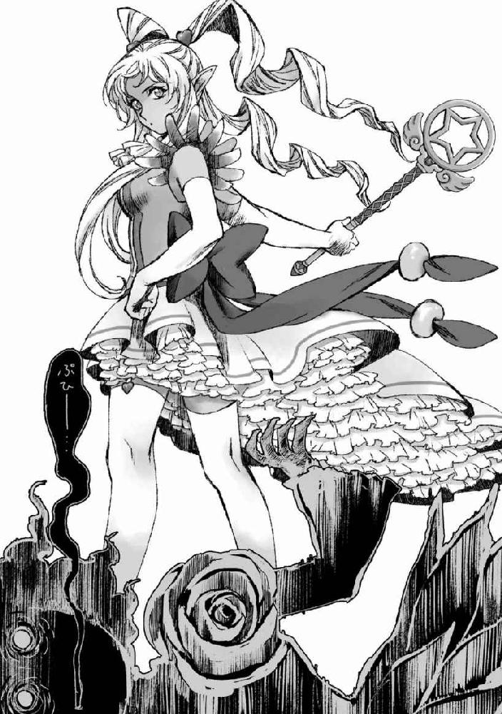
実際、イサトさんの足元でのたうつ薔薇姫が、本体であるドレス部分を擡げてイサトさんへと喰らいつこうとする。それがわかっているはずなのにイサトさんが動こうとしないのは......まあ、俺が動くことを知っているからなのだろう。この横着者め。
グリフォンの手綱を操り、イサトさんへと襲いかかろうとした薔薇姫の本体部分を鋭い蹴爪で上空からぐしゃりと踏み潰させた。ぶわりっと濃厚な薔薇の香りが周囲へと立ち込め、巨大な花びらをはらはらと散らしながら薔薇姫が消えていく。最後まで残った花びらも、そのうち消えることだろう。
「エリサ、行くぞ」
「う......うん」
俺はぎくしゃくと頷いたエリサの腰に腕を回し、ひょいと抱えるようにしてグリフォンの背から降りた。エリサが微妙に呆然としている......というかドン引いているように見えるのはイサトさんの蛮行──グリフォンからの飛び降りドロップキック──のせいなのか、それとも一撃で薔薇姫を倒して見せたグリフォンのせいなのか。
......両方か。
「エ、エリサ......？」
呆然とイサトさんを見つめていた青年が、俺たちの方へとのろのろと視線を這わせ、ようやく我に返ったといったように声を上げた。その声に、エリサもはっとしたようにそちらへと駆け寄る。
「デレクさん！ あ、......ギグさん、怪我......っ」
エリサが泣きそうな顔で俺たちを振り返る。
どうやらこの後方には怪我人が集められているらしい。
周囲からは、薔薇の匂いに混じって濃い血の匂いが漂っている。
青年の傍らに蹲っている男性の腕は真っ赤に染まり、布地がたっぷりと血を吸って重そうに肌に貼りついていた。
「イサトさん！」
「まかせろ」
俺の声に応じるように、イサトさんがしゃらんら★を優雅に振るう。
ケェン、と高く鳴いたグリフォンの姿が霞むように溶け、代わりに紅蓮の焰が夜闇を赤々と照らすように燃え盛る。その焰は生き物のように形を変えていき、やがて一羽の巨大な鳥のシルエットを形作った。イサトさんの召喚モンスターの一つで、回復に特化した朱雀だ。
「朱雀、エリアヒールを！」
イサトさんの指示に合わせて、朱雀がグリフォンに比べてもどこか優美な印象を受ける翼をはためかせる。焰の翼から散った燐光が、前線を含む獣人一行を囲むように広がり、円を描いた。何が起こっているのかが摑めていない前線の方でも、戸惑ったようなざわめきが起きている。エリアヒールは、そのサークル内にいる人間をまとめて回復してくれるという便利なスキルだ。その分瞬間的な回復量では通常のヒールに劣るが、怪我人が複数いる状態で、さらに戦闘が続行しているようなシチュエーションでは非常に心強い。
「お、おい、噓だろ、怪我が......！」
「手が、動く......！」
「痛みが引いていく......！」
イサトさんの周囲で痛みに耐えるように蹲っていた男たちが、自身の身に起きていることが信じられないといったように声をあげた。彼らの傷が完全に癒えるのも時間の問題だろう。痛みから解放された彼らは、まるで女神でも見るかのような眼差しを、朱雀を従えるイサトさんへと向けている。こうなるとうっすらとイサトさんの全身を包む薄桃色の光でさえ、神々しい演出のように見えるのだから不思議だ。
「さて」
俺はそんな風に呟いて、イサトさんへと手を差し出した。
別段エスコートが必要なほど足場が悪いというわけではないが、なんとなくそんな気分だったのだ。
「行くか？」
に、と口角を吊り上げてイサトさんへと問いかける。
わざわざ色んなものを犠牲にして魔法少女に変身までしたのだ。
ここで大暴れしなければ、イサトさんの犠牲はまるっと無駄になってしまう。
「当然」
くそ、と毒づきながらイサトさんが俺の差し出した手の上に、言葉とは裏腹に淑女めいた仕草でそっと手を乗せた。
「エリサ、前線は俺とイサトさんで引き受ける。とりあえずこの辺り一帯のモンスターは狩り尽くすので、それまで皆には休んでもらいつつ事情の説明を任せた」
「わ、わかった」
イサトさんの手を取ったのとは逆の手に、インベントリからずるりと幅広の大剣を引き出す。イサトさんも、自由な方の手にはしっかりとしゃらんら★を構えている。
「ではでは」
「参りましょうか」
イサトさんの金色の双眸が、獰猛な獣のように爛々と燃えている。
たぶん、俺も似たような顔をしている。
これまでにたまった鬱憤、しっかり晴らさせてもらうとしよう。
ついでに薔薇姫は、上位ポーションの材料をたんまり落としてくれると良い。
そして前線に突っ込む寸前、俺はさり気なさを装って口を開いた。
「イサトさん」
「ん？」
「それ、すごくいい」
「............」
やっぱり言わずにはいられなかった。
返事は、わりと本気気味の、俺の首を落とす勢いで振り抜かれたしゃらんら★スウィングだった。
「あー、もう」
エリサは、泣きたいような、笑い出したいような気持ちで小さく呟いた。
何なんだろうか、この光景は。
今までだって、散々アキラとイサトが規格外なのは思い知らされてきたつもりだった。あの二人が何かする度に、エリサは驚かされてきたのだ。
あの二人が飛空艇を墜とした犯人だと知らされたとき、もうこれ以上驚くようなことはないと思っていた。
けれど、それはエリサの勘違いだった。
エリサの驚きの原因は、アキラだ。
エリサはずっと、アキラはイサトの保護者だと思っていたのだ。
イサトはわかりやすく『普通』ではない。
銀髪金瞳、褐色肌に尖った耳。
それらの特徴は、明らかにイサトが『ただびと』ではない証拠じみている。
イサトの外見は、今ではもう御伽話にしか登場しないような、黒き伝承の民にとてもよく似ている。エリサらと同じ亜人種でありながら、より女神に近く、魔法に優れていたという既に滅んで久しい民。たまに先祖がえりのように、そういった特徴を持って産まれる者がいる、ということはエリサも知っていた。だが、イサトのように強力な魔法を使える者はいない。少なくとも、イサトが使うような魔法をエリサはこれまで見たことも聞いたこともない。だから今ではエリサは、イサトはもしかすると先祖がえりなんかではなく、滅んだと言われている黒き伝承の民の生き残りなんじゃ......、と疑っている。
その予想が当たっているにしろ、外れているにしろ、だからこそイサトが『特別』だというのはエリサにとってもわかりやすかった。イサトが何か凄いことをしたとしても、そこにある驚きはある種『やっぱりイサトは黒き伝承の民だったんだ』という確信に繫がるものでしかなかった。イサトが空翔ける騎獣を召喚したり、変身したことには確かにエリサは驚いたけれど、イサトなら仕方ない、とも思ったのだ。
でも、アキラは違う。
黒髪黒眼に、陽に焼けた黄色い肌。
体格は優れている方だろうが、アキラの外見はそれほど珍しいものではない。
どこにでもいそうな、普通の人間だ。
それに、言動にしたってアキラはイサトほど突拍子のないことを言ったりやらかしたりはしなかった。どちらかというと、そういったイサトを諫めたり、宥めたりしていることの方が多かったような気がする。
だから、エリサは勘違いをしてしまったのだ。
アキラはイサトにつけられた優秀な保護者なのだと、そう思ってしまった。
強大な力を操る古代種の生き残りの姫と、そんな浮世離れした姫に振り回される苦労性の騎士。
エリサがイサトとアキラから想像したのはそんな物語だ。
ギルロイ商会の連中に絡まれた時の対応からして、アキラがタダモノではないのはわかっていた。でも、それでもエリサはとびきり優秀な、という意味合いでしか認識していなかったのだ。
実際本人だって、
『......規格外なのは主にイサトさんが、ってことにしておいてくれ』
なんて言っていたじゃないか。
それなのに。
ああ、それなのに。
アレのどこが真っ当だと言うのか。
頭を抱えたいような気持でエリサが見つめる先には、前線にてエリサの身長とほとんど変わらないような馬鹿でかい剣を容赦なく振るって敵を屠るアキラの姿があった。体を低く構えた前傾姿勢、腰だめに大剣を構えて敵に接近しては、一息に振り抜く。庭師は受けとめようと鋏を構えるものの、アキラの大剣はそんな鋏ごと易々と引き裂いて庭師を無に還した。庭師の形を崩され、解放された女神の力がきらきらと光の粒子となって闇に溶けて行く。
こんな光景は、あんまりに想定外だ。
アキラの武器が幅広の大剣なのは、エリサだって見て知っていた。そんな大剣を見ていたからこそ、エリサはアキラの本分は護ることにあるのだと思っていたのだ。あんな馬鹿でかい大剣をがんがん振り回して戦う姿なんて、誰が想像するだろう。普通ああいった大剣というのはいわゆるロマン武器だ。趣味で持ち歩く者はいても、実際の戦闘で使う者は限られるし、使いどころもかなり限定的だ。重さがある分威力は十分だし、上手く当てることができれば一撃で大抵の獲物は仕留めることが出来るだろう。けれど、その一撃が外れた時が怖いのが重量武器なのだ。その重さ故に、連続して攻撃することが出来ない。一度振り下ろすか振り抜くかした武器を、再び攻撃出来る体勢にまで戻すのに通常の武器よりも時間がかかり、大きな隙が出来てしまう。
それ故に、エリサはアキラの役目は、イサトが魔法詠唱している間の護衛であり、あの大剣は盾を兼ねているのだと思っていた。
......ある意味、それは間違ってはいなかったのかもしれない。
確かにアキラはイサトを護っている。ただしその方法は、「攻撃は最大の防御なり」なんて言葉を実践する形で、だ。イサトの魔法が敵を滅ぼすよりも先に、重さすら感じていないかのように軽々と振り回されたアキラの大剣が敵をぶった斬っていく。大剣を振り抜いた勢いで身体が振りまわされるような危うさは欠片もない。易々とモンスターを引き裂いた大剣は、致命傷を与えモンスターが光の粒子に分解されたのを見てとるや否や、くんと跳ね上がって次の獲物に向けて振り抜かれる。
イサトのサポートなんて、とんでもなかった。
アキラこそが、主力だ。
唯一の弱点は、イサトに比べると間合いが狭いことかとも思ったけれど、それすらも勘違いに過ぎないことは、アキラの大剣の届く範囲外からイサトに向かって薔薇姫の蔦が伸ばされた瞬間にわかってしまった。呪文の詠唱のためにか、伏し目がちにスタッフを構えるイサトは、きっと自らに忍び寄る薔薇姫の蔦の存在に気付いてもいなかっただろう。しゅるるるる、と地を這う蛇のように音もなくイサトに忍びよる蔦に気付いたエリサが、危ない、と声を上げるよりも早く、アキラがその蔦へと一瞥をくれる。そして、薔薇姫に向かって大剣の一閃。その視線はすぐに己の前に迫る庭師へと戻される。ただそれだけ。ただそれだけの一振りで、本来ならば刃が届くはずもない距離にいた薔薇姫は真っ二つに両断されて光の粒子へと分解された。
アキラは、イサトの保護者などではない。
アキラは、イサトの守護者だ。
イサトへと不用意に近づくモンスターがいれば、イサトの影から湧いたかのように、ぬぅと闇より出でたアキラがあっさりとその哀れな獲物を斬り捨てる。イサトの姿が薄桃色の光に包まれている分、却ってその明るさがアキラの身に纏う闇を色濃く見せていた。
アキラの大剣がイサトの放つ光を弾き、闇の中を閃く度にモンスターが粒子となって砕け散る。きらりと煌めいたモンスターの残滓に浮かび上がったアキラの横顔に、エリサはぞくりと小さく背を震わせた。
どうしてだろう。
無感情に淡々と敵を屠る黒の双眸を、怖いと思ってしまった。怖がる必要なんてないと頭では理解しているのに、手が勝手に震えてしまいそうになる。一度、その眼を向けられたことがあるからだろうか。
「──...」
視線に気づいたように、アキラの視線がちろりと揺らめいてエリサを見る。
冷徹な殺意の滲む鋭い眼差しがエリサを映す。
「......ッ」
エリサがぎくりと身体を強張らせて息を吞んだのと、アキラがぱち、と瞬きをするのはほぼ同時だった。振り抜きかけていた大剣がぴたりと止まる。困ったように眉尻を下げて、言い訳を探すように口をぱくぱくさせる姿は、とてもじゃないがついほんの一瞬前まで殺気を漲らせていた人物と同一人物のようには見えない。
と、いうか。
「馬鹿アキラ!! ちゃんと前見ろ馬鹿！！！！」
エリサは思わず叫んでいた。
本来ならばアキラの振るうはずだった大剣の先にいた庭師が、鋏を開いてアキラへと飛びかかる。そこに滑り込むように間に入ったのはイサトだった。
がきん、と鈍い音がする。
鋏の間に、桃色のスタッフを咬ませてぎりぎりと鬩ぎ合う。
なんだかその様子に、アキラに対して怖い、と思ったのがとてつもなく馬鹿げたことのように感じてしまった。
薔薇園のモンスターを一撃で易々と引き裂いて倒せるような男が、エリサの表情一つに動揺して戸惑っている。
それだけ、エリサのことを気にかけてくれている。
「ああもう。アキラの馬鹿。オレがちょっと怖がったぐらいで、固まってんじゃねーよ。ばか。ばか。ばか」
ばか、と呟く度にじんわりと目元が熱くなる。
ぎゅっと握り固めた拳に、いつかのぬくもりが甦ったような気がした。
『じゃあ、エリサより年上で、エリサより大きい俺がエリサを守ってやりたいって言うのは駄目か？』
何でも一人でやらなければ、と思い詰めていたエリサの手を、優しく包んでくれたアキラの大きな掌。
本当は、あの時エリサはとんでもなく安心したのだ。
もう一人で頑張らなくてもいいんだ、って。
もうきっと大丈夫だ、って。
だから。
エリサはぎゅっと拳を強く握りしめる。
あの時の嬉しかった気持ちと、ぬくもりを逃さないようにしっかりと。
「アキラ!! さっさとそんな奴ら蹴散らしちまえ!!」
エリサの声に、ぐぬぬぬぬ、と庭師と鬩ぎあってるイサトを背景に、アキラがほっとしたように小さく口元に笑みを浮かべた。それから再び視線を庭師へと向ける。鋭く細められた黒の双眸に、ぎらりと凶悪な光が煌めく。けれど、それはもう怖くはない。アキラは軽く上体を傾がせると、よっと、なんて軽い声が聞こえそうな調子で庭師の腹に蹴りをぶち込んだ。ごしゃあと鈍い音がして、アキラの蹴りがめり込んだところから庭師の身体がひび割れて光となって消えていく。
「......蹴散らせっていうのは......ああもういいや、うん」
もうなんだかアキラとイサトに常識を求める方が間違っているような気がしてきた。あれほど恐れ、苦戦していた薔薇園のモンスターどもを、アキラとイサトはまるで紙でも引き裂くようにあっさりと倒していく。
それは先ほどまで薔薇園に満ちていた絶望が冗談か何かに思えてしまうほど、圧倒的な掃討戦だった。
『前線は俺とイサトさんで引き受ける。とりあえずこの辺り一帯のモンスターは狩り尽くすので、それまでは皆に休んでもらいつつ事情の説明を任せた』
アキラの言葉に、噓はなかったのだ。
ならば、エリサも自分の役割を果たさなければいけない。
エリサたちを守るように翼を広げた炎の鳥に照らされた薔薇園の片隅で、エリサは両親の姿を探す。怪我人の中に、二人の姿はなかった。セントラリアに残っている獣人の中では比較的戦闘に秀でているエリサの両親ならば、きっと前衛にいたはずだ。うろうろと視線を彷徨わせていたエリサの視界に、信じられないものを見るような目でアキラとイサトを眺めて茫然と立ち尽くす男女の姿が目に入った。
「父さん母さん......!!」
「え、エリサ!?」
「どうしてこんなところにあなたがいるの......！」
驚愕に振り返る二人の下へと、エリサは全力で駆け出した。
何日かぶりかに聞く両親の声。
生きてた。無事だった。また、会えた。
「......っ」
子供みたいでみっともないと思うのに、ひくりと喉が震えるのを止められなかった。迎えるように両手を広げた父親の胸の中に、思い切り飛び込む。ぎゅっと抱きしめると、汗や埃と一緒に懐かしい父親の匂いがする。父親の腕の中にすっぽりと抱きしめられたエリサの背を包みこむように、母親のぬくもりが寄り添った。
「ぅ、え......っ」
ちゃんと話さなければ、と思うのに。
アキラとイサトに説明を任されたのだから、ちゃんと役割を果たそうと思うのに、喉の奥から溢れる嗚咽を吞み込めない。
悪名高き黒の城の片隅。
エリサは両親の腕の中で、どこよりも守られている安心感に包まれていた。
途中エリサにドン引かれていることに気付いて俺の心が折れかけたことを除いては、比較的順調に薔薇園の掃討戦は上手くいっていた。薔薇姫と庭師の属性の違いに、イサトさんが少々手こずってはいたものの、その辺りは俺が十分フォロー出来る範囲のことだ。
薔薇姫と庭師は、どちらも聖属性に弱いという点では共通しているのだが、サブの属性がそれぞれ異なっているのだ。薔薇姫は見た目の通りサブが植物属性なので、聖属性を乗せた火系の魔法に弱く、サブ属性が水である庭師には聖属性を乗せた土系の魔法が効く。スキルの切り替えに難があるイサトさんにとっては、この二種類のモンスターを同時に相手にするのがなかなか骨が折れるようだった。それ故に一種類ずつ、一度薔薇姫をターゲットと定めたら、一息に周辺にいる薔薇姫を殲滅し、その後スキルを切り替えて今度は庭師を殲滅して回る、というスタイルを取らざるを得ないのだ。
その間、上手く対応出来ないモンスターを始末するのは俺の仕事である。
「秋良」
「ん？」
ふと、名前を呼ばれた。
目の前に迫ってきていた薔薇姫をずばん、と斬り捨ててイサトさんへと振り返る。
「どうした？」
「ちょっと、良いことを思いついた。試したいので、フォロー頼んでも良いか？」
「......了解」
イサトさんの「良いこと思いついた」は大概ロクでもないことが起きる前振りなので、あまり了解はしたくないのだが......。先ほどエリサに心を折られかけた際にフォローして貰った恩があるので無下に出来ない。
「あんまり無茶はするなよ」
「まかせろたぶん大丈夫だ」
たぶんて。たぶんて。
微妙に不安が残る。
疑惑に満ちた半眼を向けつつも、俺は一歩下がってイサトさんの様子を見守ることにした。一応何かあった時にはすぐさま援護に入れる距離は保つ。
イサトさんはそんな俺へと視線を流して小さく笑うと、は、と短く息を吐いた。それから、ドリーミィピンクのスタッフを体の前で縦に構えて、精神を集中させるように長い銀色の睫毛をやわりと伏せる。吹き抜ける風に煽られ、優雅にドレスの裾が波打つ。そんなイサトさんの姿は、着ているドレスの効果もあってどこまでも神秘的だ。不可思議を操る魔法少女に相応しい。
やがて、俺が見守る中イサトさんの唇が小さく開かれる。
スキル名を思い出したのか？
そう思った俺の耳に届いたのは──...
「スキルショートカットCtrl１、Ｆ３！ Ｆ６！」
まさかのキーボード配列だった。
が、イサトさんの作戦は成功したのか、スキル名を唱えたわけでもないのに、二種類のスキルが未だかつてない切り替えの早さで発動して庭師と薔薇姫のそれぞれに着弾する。
普段ゲームとしてＲＦＣをプレイしている折にはスキルをショートカットキーに登録していたことが原因でスキル名を覚えていないのなら。いっそ記憶に残っているショートカットキーの配列をそのままスキルに当てはめてしまえ、という豪快極まりない解決法だった。
ＲＦＣでは１から10までのショートカット画面があり、それぞれのショートカット画面にそれぞれＦ１からＦ９までのキーを対応させて登録することが出来た。今のイサトさんの言葉をわかりやすく説明すると、スキルショートカット画面の１において、Ｆ３キーとＦ６キーに対応するスキルを発動させた、ということになる。
「これで勝つる」
ふふんとイサトさんが得意そうに胸を張る。
確かにこれで、庭師と薔薇姫の属性の違いに手間取ることもなくなるだろう。
......魔法少女の呪文にしては若干味気なさすぎるような気がしないでもないが。
「さてさて、狩り尽くしてしまうとしよう」
にんまりと笑って、イサトさんがちろりと唇を舐めた。
「さてと、こんなもんか」
「だな」
それから数十分の間に、次々と集まってきた薔薇姫と庭師をことごとく退けた俺たちは、小さく息を吐きつつ顔を見合わせた。手を休めて様子を窺ってみるが、こちらに向かって近づいてくる敵影は見当たらない。
皆を避難させるなら今がチャンスだろう。
俺たちはエリサが事情を説明してくれているであろう狩りチームの方へと戻る。
エリサは、と捜したところ、どこかエリサやライザと面差しの似た二人の獣人と一緒にいるエリサの姿が目に入った。きっとあれがエリサの両親なのだろう。保護者と一緒にいるからなのか、こんな状況だというのにエリサの表情がどこか柔らかく、いつもよりも幼げに見える。
「エリサのご両親もご無事なようで何よりだ」
「そうだな」
同じことを思っていたのか、隣でそう呟いたイサトさんの声には安堵が滲んでいる。間に合って本当に良かった。
「アキラ！ イサト！」
俺たちが戻ってきたことに気付いたのか、エリサが両親から離れて駆け寄ってくる。エリサは俺と目が合うと少しだけ気恥ずかしそうに目元を赤く染めた。なんだろう。怖がられるのは辛いが、そういう反応は反応でなんだか妙に俺まで照れる。
俺は「あー......」と誤魔化すように間を置いて、エリサへと問いかけた。
「怪我人の具合はどうだ？」
「イサトの火の鳥のおかげで、みんな治ったみたいだ。みんな二人にすごく感謝してる」
「それは良かった」
イサトさんがほっとしたように呟いて朱雀を見上げると、その眼差しに応じるように朱雀がイサトさんの背後に寄りそうように舞い降りた。全身が赤々と焰に彩られているのに、こうして近くにいても熱を感じることはない。イサトさんがぽんぽん、と労り、褒めるようにその首筋を軽く叩くと、くるるるる、と小鳥じみた可愛らしい鳴き声が響いた。グリフォンとはまた違った、柔らかそうなもふもふとした羽毛につい目が引き寄せられる。触れて火傷する心配がないのなら、是非俺も触らせていただきたい。そろーっと手を伸ばしかけたところで、まるでその気配を察知したかのようにイサトさんが俺へと振り返った。別に悪いことをしようとしていたわけでもないのに、思わず手を引く。
「秋良青年？」
「......なんでもない。どうした？」
「いや、『家』を出してもらおうかと思って。ここから徒歩でセントラリアまで戻るのもアレだろう？」
「ん。そうだな」
脱出経路は、飛空艇の時と同じで良いだろう。
狩りチームの皆さんには一度『家』に入っていただき、そこから一息にセントラリアにドアを繫げてしまえば良い。
俺はインベントリから『鍵』を取り出すと、しゃらりと音を立てて一振りした。
ふっと高原を吹き抜けるような爽やかな風が吹き抜けて、うっすらと光に包まれた扉が召喚される。魔法のような光景に、狩りチームの皆さんが息を吞む気配が伝わってきた。
「えーと、この扉の向こうは安全地帯に繫がってる。そこを通り抜けたらセントラリアはすぐだ。なので、皆さんには一度この扉の向こうに避難してほしい」
「............」
「............」
俺の説明に、少し不安そうな顔を見合わせる狩りチームの人々。
そんな彼らを説得するように声を上げたのはエリサだった。
「みんなの信じられねー気持ちもわかるけど、アキラとイサトはみんなを助けに来てくれたんだ。オレは、二人を信じてる。だから、みんなにも信じて欲しい」
「......っつーかあんな戦い見せられたら抵抗できねえっての」
くつ、と苦笑いめいて喉を鳴らして、一番最初にイサトさんがドロップキックで助けた鳥の獣人が口を開いた。彼の言葉に、さざめきのように小さな笑い声が狩りチームの中に広がっていく。
「確かにあれだけ強けりゃ、騙し討ちなんかしなくても俺たちなんて瞬殺だわな」
「そうね、そのとおりね」
エリサの両親らしき男女の声に、狩りチームの獣人たちも笑い混じりに納得したように頷いている。なんだか微妙に嫌な納得のされ方をしているような気がしないでもないが、皆がおとなしく『家』に向かってくれるなら無問題である。
俺はがちゃりと『扉』を開き、その向こうに広がる『家』へと皆を誘導しようとして......そこで待ったの声が響いた。
「待て......っ、お前らどこへ行くつもりだ！」
「まだノルマは達成していないぞ!!」
そんなことをがなり立てたのは、身なりの良い商人風の男二人だった。
というか、商人だ。
「......ギルロイ商会か？」
「ああ。見張りだ」
「なるほど」
ぼそりと問いかけた俺の声に、エリサの父親だと思われる男性が低く答える。
狩りチームに指示を出し、その仕事ぶりを監視するのが彼らの役割なのだろう。
つまり──...エリサの両親やその仲間たちを死地に追い込んだ張本人だとも言える。こうなったら物理的に黙っていただこうかと俺が一歩前に出るよりも先に、ひらりと可憐な桃色が揺れた。
するりと前に出たイサトさんが、鋭くドリーミィピンクのスタッフを彼らの首元に突きつけたのだ。
「......っ！」
「な、なんのつもりだ！」
見た目は大層可愛らしいスタッフであっても、そのスタッフからほとばしる魔法がいかに強力なのかは、彼らは見て知っているはずだ。怯んだように声を震わせながらも、それでもなんとかイサトさんを威圧しようと男が声を張り上げる。大声を出せば主張が通るとでも思っているのだろうか。
......俺ですら怖いというのに。
それほどに、イサトさんの身に纏う空気が冷え切っている。
こわい。ちょうこわい。
「──...残りたければ君らだけでいくらでも残ると良いよ」
低く、柔らかなイサトさんの声が響く。
いつもと変わらず、優しげですらあるというのに、何故か冷たいものが背筋を走った。ごくりと思わず喉が鳴る。
が、そんな空気を読まずに、男たちは一度顔を見合わせると、大声で言葉を続けた。
「これだから略奪者は！ 仕事を投げ出すなんてな！」
「全く、仕方がないな！」
こいつらの心臓には毛が生えているのだろうか。
俺や、エリサを筆頭にした狩りチームのみなさんの方がよっぽどイサトさんにビビっている。
男たちはいかにも獣人たちの我儘を許し、付き合ってやるのだと誇張するように恩着せがましくがなりながらイサトさんの突きつけたスタッフを手で撥ねのけた。そしてずんずんと獣人たちを押しのけて、俺が開いた『扉』の方へとやって来る。それから胡散臭そうな顔つきで、品定めするような視線を『扉』の先へと送る。
「本当に安全なのだろうな？」
「何かあったら責任は取ってもらうぞ」
そんな勝手なことを言いながらも、本当はこの先が安全圏だということは確信しているのだろう。男たちは、狩りチームに先んじて『扉』の向こうへとさっさと足を踏み出そうとして──...そんな背中に向かって、イサトさんが何気ない様子で声をかけた。
「後一歩でもその先に進んだならば、燃す」
「......っ」
「......!?」
シンプル極まりない脅迫に、びくりと男たちの身体が揺れる。
背後から吹き付けるような殺気に、まるで足から根でも生えてしまったかのようにその動きが止まった。
「なあ、貴方がたは何を勘違いしているんだ？」
「かん、ちがい......？」
「ああ、勘違いだ」
「勘違い、って何がだ......！」
ふっとイサトさんが呆れたように小さく息を吐いて、それから心底不思議で仕方ないといった口調で、可愛らしく小首を傾げて問いかけた。
「どうして私たちが君らを助けると思っているんだ？」
「「！」」
男二人が、絶句する。
そしてようやく、自分たちの前にいる魔女がお怒りであることに気付いたようだった。
「わ、私たちを見捨てるつもり、なのか......？」
「見捨てる？ 最初から助ける人数の勘定にも入っていないのに？」
イサトさんの口元に艶やかな笑みが浮かぶ。
「私たちは、そこにいるエリサ嬢の依頼で獣人の皆さまを助けにやって来たんだ。貴方たちのことなど、知らないな」
「あ、あ......」
おろおろ、と男たちの視線が揺れる。
助けを求めるように周囲を見渡し、周囲にいるのが自分たちが散々虐げてきた略奪者でしかないことに絶望したように小さく声をあげる。
「だ、だが私たちに何かあれば商会が黙ってない......！」
「そう？」
イサトさんはおかしくて仕方ないというように、くすくすと小さく笑った。
無垢で可憐な少女のように微笑んで、口を開く。
「証拠も、ないのに？」
「っ......！」
「私たちが薔薇園にたどりついた時には、一行の中でも身を護る力を持たない監視役の商人たちは残念ながら事切れており──...、助けられたのは獣人の皆さまだけだった、なんて言っても十分通じると思うのだけれども」
ざっと男たちの顔から血の気が引く。
ここに置き去りにされれば、彼らは遅かれ早かれ、薔薇姫や庭師の犠牲になるだろう。それが俺たちが助けに来るより先に起きたのか、後に起きたのかを判別する方法はない。
周囲が固唾を飲んで見守る中、商人たちはがくりとその場で崩れ落ちた。
がたがたとその背中が小刻みに震えている。
「た、助けてくれ......お願いだから、助けてくれ......っ」
「金ならいくらでも出す......！」
「残念ながら金には困っていない」
男たちの命乞いをさっくりと斬り捨てて、イサトさんはふっとエリサへと視線を流した。毒気の強い艶やかな眼差しにアテられたように、びくっとエリサの肩が跳ねる。
「さて、どうする？」
「ど、どうするって......」
「私たちは君の依頼で助けに来たわけだからな。君がこいつらの命も助けてやって欲しい、というのならまあ、助けてやっても構わない」
イサトさんの言葉に、男たちは弾かれたようにエリサへと向き直った。
イサトさんを説得するよりも、エリサの方がまだマシだと思ったのだろう。
その判断はたぶん間違ってない。
「頼む、助けてくれ......！」
「助けてくれるなら何でもする......！」
男たちは額を地面に擦り付けるようにして、エリサへと懇願を繰り返す。
「そんなこと、オレに言われても......」
困惑しきった声音で呟いて、エリサが瞳を揺らした。
そりゃそうだろう。こんな状況で、いくら嫌な相手だからといって生殺与奪の権利を与えられても持て余す。助けを求めるような視線を向けられて、俺は小さく息を吐いた。口を挟んだだけで首を刎ねられそうな雰囲気だが、仕方ない。
「イサトさん、エリサに決めさせるのも酷だと思うぞ」
俺の言葉に、イサトさんがちらりと俺を見た。
「そうか。それなら......どうする？」
「んー......」
俺は、ちょいと這いつくばる男たちの前に座り込んだ。
怯みながらも、助かるチャンスを嗅ぎ取ったのか男たちがそろそろと顔を上げて俺を見上げる。
「何でもすると言った言葉に噓はないな？」
「ない！ 誓う！」
「私もだ！」
「じゃあ、街に戻っても決して俺たちの邪魔はしないと約束しろ。もしその約束を違えるようなことがあれば──...」
どん、と俺は男たちの顔面すれすれに大剣を突き立てる。
ひっと悲鳴が上がったが気にしない。
「今度は置き去りなんて生ぬるいことはしない。俺がこの手でぶち殺す」
どれだけ防御を固めようと、どれだけ逃げようと、必ずそれを成し遂げるだけの力があることは、流石のこの男どもも思い知ったはずだ。水飲み人形のようにがくがく頭を縦に振る男たちを横目に、俺はよいせ、と立ち上がってイサトさんへと目を向けた。
「こんなところでどうよ」
「充分じゃないか？ ギルロイ商会を内側から崩すコマになっていただこう」
そう言ったイサトさんは、すっかりいつもの様子に戻っている。
俺が助け舟を出すことまで、織り込み済みだったのだろう。
全く、心臓によろしくない。
「んじゃ、皆さんはどうぞ『家』に移動してくれ」
俺の促した声に、ぞろぞろと今度こそ皆が移動しかけて──...
「ああ、困りますねえ」
そんな、この場にいないはずの第三者の声が響いたのはそんな時だった。
イサトさんのドエスっぷりに商人二人が死を覚悟し、何故かその怒りの矛先ではないはずの俺やエリサが恐怖のどん底に叩きこまれたりした後──...
いざ避難を始めようか、というところでその声は響いた。
「ああ、困りますねえ」
「......っ」
いるはずのない第三者の声に、俺は素早く大剣を構えてそちらへと向き直る。
そこに立っていたのは、見覚えのある太った中年オヤジだった。
にこにこと愛想の良い笑みを浮かべているものの、その双眸にはぬとりとした油断のならない光が浮かんでいる。
あの男だ。
セントラリアで、騎士を引き連れ絡んできたギルロイ商会の男。
「マルクトさん......!?」
「なんであんたがここに......！」
マルクト、というのがこの男の名前らしい。
俺は傍らで同じく身構えていたイサトさんへとちらりと視線を流す。
「イサトさん、気付いてたか？」
「いいや、君は？」
「俺もだ」
ぐ、と大剣の柄を握る手に力が入る。
俺も、イサトさんも、この場にこの男がいることに気付いていなかった。
いくら黒薔薇の庭園が戦場となっていたとはいえ、保護すべき狩りチームは一か所に固まっていたし、そもそも純粋な人間種は先程までイサトさんがいびり倒していた商人二人しかいなかったはずだ。
俺はゆっくりと大剣を持ちあげると、男へと突き付けた。
「あんた、何者だ」
「おや、まだ名乗っていませんでしたか？ それは大変失礼致しました」
男は、商品の不備を指摘された商人めいた態度で上っ面の詫びを口にする。それから、恭しく片手を胸に当てて頭を下げて見せた。
「私の名前はマルクト・ギルロイ。ギルロイ商会の代表でございます」
「......なるほど」
この男がギルロイ商会の親玉だったというわけか。
セントラリアで絡まれた際、騎士相手に目で指示を出す様からお偉いさんだろうとは思っていたが......、どうやらこの男が諸悪の根源らしい。
「だが、それだけじゃないだろう」
イサトさんが横合いから口を開いた。
その金色の双眸は、油断なく男を見据えている。
そんなイサトさんへと、男はやはり愛想よく微笑んで、それでいてイサトさんの問い掛けには答えないまま言葉を続けた。
「皆さんに、私の息子を紹介しましょう。おいで、坊や」
男は、そっと自分の隣を覗きこむようにして声をかける。
子供が......いるのか？
俺は目を凝らす。
俺たちのいる辺りは朱雀のおかげで明るいが、男の立っている辺りはぼんやりと闇に沈んでいる。男の腰のあたりまではかろうじて朱雀の光が届いているが、それより下に関してはどうにか形が判別出来るか出来ないか、といった程度だ。
男は、優しい父親といった声音でその薄暗がりへと声をかける。
ぺた、と小さな足音がした。
薄暗がりから、小さな人影が一歩前に出る。
父親である男と手を繫いだその子は、父親の膝を少し超える程度の背丈しかない、本当に小さな子供だった。３、４歳といったところだろうか。
けれど。
けれど。
「......、」
俺とイサトさんは、その子を直視することが出来なかった。
アレは、生きていない。
それは直感だった。
その子の見た目に何か異様なところがあったというわけではない。
あえて言うならその子は、若干表情に乏しいだけの普通の子供のようだった。
けれど、違うのだ。
存在感があまりにも異質だ。
冷たいやすりでざりざりと神経を擦りあげられているような違和感。
ただ父親に寄りそうようにして立っているだけの子供の姿から、まるであのヌメっとした人型から受けたのと同じような気色悪さを感じる。人ではないものが、巧妙に人を真似ているからこその気持ち悪さ。不気味の谷、なんていう言葉を思いだす。
「おい、マルクトさん......なあ、おい、噓だろ......」
「あ、......あ......」
俺たちの背後で、商人二人が呻く声が聞こえた。
悲しそうにも、怯えているようにも、憤っているようにも聞こえる、不思議な声だった。
「なあ、おい......マルクトさん、その子はあんたの」
「ええ、うちの坊やですよ」
「ありえない！」
商人の声にも、男は表情を変えなかった。
にこやかな愛想笑いを浮かべたまま、首をすこぅしだけ傾けた。
「何を言ってるんですか、ディーゲンさん。ありえない、なんて失礼ですねえ」
「マルクトさん......！！！」
男の名前を呼ぶ商人の声は、悲鳴のようだった。
「あんた......、何したんだよ......、その子に何を......っ」
「おかしなディーゲンさんですね？ あなたはうちの坊やのことは可愛がってくれていたと思うんですが」
動揺し、声を引き攣らせている商人とは対照的に、男はどこまでも穏やかに、のんびりと、まるで世間話でもしているかのような態で言葉を紡ぐ。時折手を繫いだ先にいる子供に対して愛しげな眼差しを注ぐ様などは、場所さえ違えば子煩悩な父親にしか見えなかっただろう。
ここが黒薔薇の庭園である、ということが。
その子の黒々とした昆虫のような無機質な眼差しが。
ありふれた幸せな光景を、おぞましい何かに見せていた。
「マルクトさん、あんたも本当はわかってんだろ......！」
「何が、です？」
「あんたの息子は十年前に流行り病で死んだ！」
「......っ、」
商人の声に、俺は小さく息を吞む。
そうか。
だからか。
あの男が連れた子供から感じる違和感はそれか。
一目見た瞬間から「生きていない」と感じてしまった理由は。
事実、あの子は生ある存在ではないのだ。
何らかの方法でもって、理を歪めた存在。
「私の可愛い坊やはね、蘇ったんですよ。おかげさまで。だから、こうして父子揃って幸せな毎日を送らせて頂いています」
にこにこ、と微笑みながら男は語る。
人外の虚ろな目をした子供の手を引いて、父親は楽しそうに語る。
「ただ......この子が生きるためには『女神の恵み』が必要なんですよ」
父親の声に応じるように、その子は小さく顔を上げた。
父親の様子を窺うようなあどけない仕草。
が、そこから続いて起こったことは、決して微笑ましいなんて言葉で済むものではなかった。
かぱあ。
幼子の顎が落ちる。
喉奥からせぐりあげるようにこみあげてくるのはヌトリとした汚泥めいた漆黒だった。俺はこの色を知っている。飛空艇で戦ったヌメっとした人型だ。嫌悪感に、ぞわりと全身の毛が逆立つ。
アレが、人の中に潜んでいる？
カラットの村で見たのも、そんな存在だったのだろうか。
裏表が入れ換わるように、幼子の中から溢れた漆黒がその身体を包みこみ、やがてどぷんと溶けるように消えた。
いや、消えたように見えるだけだ。
きっと、アレはスライムか何かのように地面に広がっているのだろう。
闇が濃い地表に溶け込むように、じりじりと地面に広がる黒の粘体の姿を幻視して俺は顔をしかめた。いきなり足元を掬われて喰われるなんて、たまったもんじゃない。
「イサトさん、光を」
「わかった」
イサトさんが、手を掲げる。
その指示に従って、優雅に羽ばたいた朱雀が舞いあがる。
光源が高くなったことにより、辺りに昼のような明るさが満ちた。
光に照らされた地上は明るく。
そして、光に照らされて闇色はなお暗く。
俺が脳裏に思い描いた通り、黒の粘体は地表に薄く広がっていた。
光から逃れるように、ひたひたと俺たちとは逆の方向へと広がっていく。
「うちの坊やは不器用でしてね」
にこにこと親馬鹿のようにマルクト・ギルロイは語る。
「見本がないと、どうも上手に工作が出来ないんですよ。私もそういった方面には全くなので......父親に似てしまったんですかねえ。家内はわりと器用な方だったはずなんですけど」
場違いな言葉が空々しく響く中、びゅ、っと何かが風を切る音が聞こえた。
俺は咄嗟に身構えるものの、黒の粘体から伸びた触手が向かったのは俺たちの居る明るい方ではなく、闇の向こう側に潜むモンスターの方だった。薔薇園においては最強であるはずの薔薇姫が易々と黒い触手に搦め捕られる。貴婦人然とした影が触手から逃れようと暴れながらも、ずるずると引きずり寄せられる様が黒々とした闇の向こうに微かにシルエットで浮かびあがった。朱雀の光の範囲外、闇の中でぐちゃりごりばきりと不気味な音と微かな影絵だけがおぞましい惨劇を物語る。薔薇姫の影が歪に歪み、どろどろと少しずつ闇の塊に取り込まれていく。詳細が見えないからこそ、より恐怖を搔きたてられる光景だった。
そして、闇が震えた。
うぞぞぞ、と地面に広がっていた黒の粘体が蠢き、膨れ上がって新たな輪郭を形作る。それは、見た目だけなら薔薇姫の形状にとてもよく似ていた。下向きの薔薇の花を象ったような球状の下半身に、その上にちょこんとついた上半身。薔薇姫であればその名の通り、可憐なお姫様の上半身がついていたものだが、今そこにあるのはのっぺりとした黒の無貌だ。これだけの質量がよくもまあ小さな幼子の身体に収まっていたものだと、変なところに感心してしまいそうになる。
茫然自失と目の前の光景を見つめることしか出来ない一同の前で、マルクト・ギルロイだけが愛息子のお遊戯を眺める親馬鹿のような顔でにこにこと変わらずに微笑んでいた。
「......コレが、あんたの息子なのか」
「ええ、私の自慢の坊やです」
即答だった。
迷いはなかった。
モンスターを捕食してその形を真似た異形の黒の粘体を、この男は変わらずに『坊や』と呼んだ。
病んでいる。
いや、それは姿形を超えた父子の愛なのかもしれない。
俺のような若造には、父親が子供に注ぐ愛の深さを推し量ることは出来ない。もしかしたら、マルクト・ギルロイとその『息子』である異形との間には俺らには理解出来ないような深い愛の物語があるのかもしれない。けれど、それは俺にとっては途轍もなく異質なものだった。
そしてその異質さを、マルクト・ギルロイは歯牙にもかけていない。
彼にとって目の前の息子は愛しい自慢の坊やでしかなく。
周囲から向けられる恐怖の眼差しに意味はない。
あんまりにも完結した父子の関係を見せつけられて、俺はどうしたものかと反応に困ってしまう。
そんな俺に代わって、横合いから口を開いたのはやっぱりイサトさんだった。
「──彼が、あなたの息子だと言うのなら、それはそれで良いだろう」
良いのか。
本当にそれで良いのか。
いろいろ良くない気もする。
「だが──...その息子さん連れで私たちに何の用だ？」
「あ」
そうだ。
間の抜けた話だ。
衝撃的な息子さん紹介に度肝を抜かれて、そこで思考がフリーズしてしまっていた。問題はマルクト・ギルロイの息子が薄気味悪い異形である、ということではなく。マルクト・ギルロイがここに何をしに現れたのか、ということだ。たとえマルクト・ギルロイの息子があのヌメっとした人型だったとして、彼らが俺らに害を成す存在でさえなければ別にそれで良いのだ。個性は尊重しよう。それはたとえその息子が黒い粘体と化してモンスターを捕食するような存在であったとしても、だ。
イサトさんの問い掛けに、マルクト・ギルロイはにこやかに笑った。
「あなた方には──...坊やのご飯になってもらおうかと」
その言葉と同時に、ぶびゅるッと粘質な音が逬る。
それがヌメっとした人型の背が破裂した音だと気付いた時には、すでに弾けるような勢いで射出された黒の触手が俺たちに向かって降り注ごうとしているところだった。
俺やイサトさんどころか、その背後にいるエリサ達までをも取り込もうと広げられた触手は、いつかテレビで見たクリオネの捕食光景じみている。
「ちッ」
悪寒を振り切るように、俺は舌打ちを一つ。
先程からの戦闘で学んだのだが、俺の攻撃というのは基本的に一点豪華主義である。スキルを使うことである程度離れたところにいるモンスターを狙い撃ちにしたり、直線上にいるモンスターをまとめてぶった切る、というような手段も持ち合わせてはいるのだが......それでも基本的に俺の攻撃は一点に収束する傾向にある。つまり、相手が手数で攻めてきた場合、なおかつそれが広範囲に及ぶ場合、迎撃が間に合わない。自分一人の身を守る程度ならわりとどうにでもなるのだが、守るべき対象が複数になるとどうにも弱い。
そもそもＲＦＣというゲーム自体が、そういった状況を前提にしていなかったということもある。だからこそ、リアルとなったこの世界において、「守るもの」が複数存在する戦闘に、俺のこれまでのスキルやスタイルがうまく咬みあわない。
そんなわけで。
「イサトさん......!!」
「Ｆ８！」
あっさりとこの場をイサトさんに譲ることにした。
イサトさんは大きく広がって迫りくる触手に向けて手をかざし、高らかにスキルの実行を宣言する。その手の先に、ごうっと渦巻く焰が花開くように展開し、俺たちを護る焰の壁となった。一応警戒しつつ様子を窺ったものの、触手が焰の壁を突き抜ける様子はない。
「エリサ、今のうちに皆を逃がせ！」
「............」
「エリサ！」
「わ、わかった！」
あまりの展開に呆然としていたエリサが、俺の声にびくりと小さく肩を揺らし、両親らと共に狩りチームのメンバーを扉の向こうへと押し込んでいく。その様子をちらりと目の端で見届けて──...
「先に行く！」
「ん」
俺はイサトさんにそう一声かけると、大剣を携えて焰の壁へと突っ込んだ。
ゲーム時代であれば俯瞰で画面を見ていたので気にならなかったのだが、イサトさんが防御のために展開したこの壁魔法の欠点をあげるとしたら視界が遮られる点だ。まあ、それは逆に相手からも俺らの姿が見えないということになるので......こんな風に不意打ちも可能になる。
身体にまとわりつくような熱気を感じたのは一瞬。
ぼひゅっと焰の壁を突き抜けて、俺は大股に一息にヌメっとしたモンスターへと接近した。腰だめに構えていた大剣を一閃、その膨れあがった球体を薙ごうと試みる。飛空艇で遭遇したヌメっとした人型と同類だとした場合、通常武器でダメージを与えることが出来ないのは予想できるが、時間稼ぎぐらいにはなるだろう。
そう思っていたのだが......大剣が黒くヌメる球の表面に触れるか触れないか、というところで急にすぅっとその色が抜けた。最初は溶けた飴のように濁りがあるそれが見る見るうちに硝子細工のように澄み渡る。そして、その中にあるものを視認して俺は息を吞んだ。
「......ッ！」
振り抜きかけた大剣だったり、前のめりに突っ込みかけていた脚に急ブレーキ。
ざりりりりッ、と足元で砂利が鳴る。
重心を一気に反転させての方向転換。
バスケ部時代に慣れたターンとはいえ、重量級の武器を振り抜きかけたところでのこととなると流石に足腰が軋むように鈍く痛む。が、振り返った先でやっぱり、というか案の定、というか待ち構えていた光景にそれどころではなくなった。
焰の壁は、もう役目を終えたかのように消えていた。
名残のように、ちろりと熾火めいた光がイサトさんの足元を彩る。
その背後にいた怯える狩りチームの人々の姿はもうない。
頭の片隅で、これでやりやすくなったと安堵しておく。
「イサトさんスト」
「Ctrl２、Ｆ１！ Ｆ２！ Ｆ３......!!」
ップ、と最後まで言うより先に、イサトさんの放った攻撃魔法が次々とヌメっとしたモンスターめがけて飛来する。俺の援護なのだとしたら完璧なタイミングでの追撃だった。ヌメっとした黒の人型が取り込んだモンスターが薔薇姫だったことを鑑みてのチョイスなのだろう。その全てが焰系の魔法である。地を蔦のように走りながら迫るもの、複数の火矢となって降り注ぐもの、そしてサッカーボールほどのサイズの焰の塊が縦横無尽に突っ込んでくる。
だから。
もう一度言うが。
俺は複数迎撃には向いていないのである。
「......ッ！」
ぐっと強く奥歯をかみしめて、ヌメっとしたモンスターに直撃しそうな魔法攻撃を幅広の大剣を振りまわして薙ぎ払った。接触した地点で爆発するタイプの攻撃魔法が次々と誘爆してイサトさんの魔法を搦め捕る。轟々と渦巻く爆炎に息が詰まる。燃え盛る焰に焙られ、露出した肌がちりちりと痛んだ。が、まだ怯むわけにはいかない。俺は素早く足元を確認。そして地表を走る焰の蔦を、顔を顰めつつ思い切り踏みつけた。腹に響く音とともに足元で焰が炸裂する。
「っ、」
足裏から膝の辺りまでを灼熱の焰に焼かれる痛みに、一瞬頭の中が真っ白になった。これは痛い。いくら高レベル装備で身を固めていようと、さすがにイサトさんの魔法攻撃を受けてノーダメというわけにはいかないらしい。装備がなかったら間違いなく足を吹っ飛ばされていた。
「秋良!?」
イサトさんが驚いたように俺の名を呼ぶが、それに返事をする余裕はない。イサトさんの魔法攻撃を迎撃している俺の無防備な背中を敵が見逃すわけもないのだ。ああクソ、と口汚く罵りながら、俺は目の前を渦巻く焰の中に自ら突っ込んだ。だん、と叩きつけるように左手で身体を押しやり、転がって距離を稼ぐ。あちこちの皮膚がひきつるように痛むのは間違いなく火傷のせいだろう。そんな俺の背後で、ざすざすざすッと空を切った触手が地面に刺さる音が聞こえた。
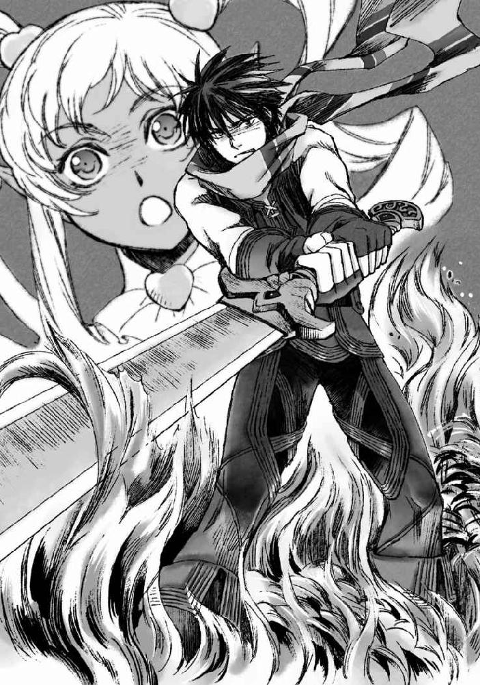
「触手...だけ、狙え......！」
「Ｆ２！」
がさがさに掠れた声で叫ぶ。
状況もわかっていないだろうに、イサトさんはすぐさま再びスキルを発動させると、俺を追って伸ばされた触手を迎撃してくれたようだった。イサトさんと同じ位置まで一旦下がって、俺はげふごふと咳き込んだ。熱気を吸いこんだせいで、喉が焼けたように痛む。というか、実際焼けている。息をする度に金臭いのは、熱に爛れた粘膜が出血しているせいだろう。口の中も血の味でいっぱいだ。やばい死ぬ。ざん、と大剣を地面に突き立て、それで身体を支えつつぜいぜいと喉を鳴らして息を継いだ。吸っても吸っても肺に酸素が行き届いてないような感覚に、目の奥がチカチカと瞬く。
「朱雀！」
イサトさんの声をきっかけに、少しずつ呼吸が楽になり、喉やら全身やらの痛みが薄れていった。朱雀の回復魔法の恩恵だろう。は、は、とまだ荒い息を整えながら、ようやく顔をあげてぼそりと呟いた。
「......し、死ぬかと思った」
「殺すかと思ったぞこっちは！！！」
イサトさんに間髪を容れず怒鳴られた。イサトさんにしては珍しいぐらい動揺が声に表れていて、なんだかちょっと泣きそうに震えているようにも聞こえる。顔をあげようとしたところ、べちりと顔面に手を押しあてられた。アイアンクローじみているものの、その指に力はこもっていない。
もしかして、顔を見られたくない、とか？
「イサトさん？」
「......後で覚えてろ」
非常に恐ろしい宣言をされた。
イサトさんはふいっと手を俺の顔面から離すと、インベントリへと手を滑らせる。そこから取り出したのは、先程の狩りで手に入れたばかりの小瓶だった。薔薇姫ドロップの蜜だ。手のひらサイズの小瓶に入ったとろりとした蜜は、朱雀に照らされてとろりとした光を放っている。
「念のため、こっちも飲んでおくといい。というか、飲め」
「はい」
逆らうと後が怖い。
きっと俺を睨む金色が、ちょっとばかり潤んでいるように見えるのは見間違いだろうか。これはアレだ。全部終わったら本気で謝らないといけない奴だ。
きゅぽ、と瓶の蓋を落として、中身を一息にあおった。薔薇の香りを濃く纏った甘ったるい蜜がとろとろと喉を過ぎていく。精製前とはいえ、高級ポーションの材料となるぐらいなので、薔薇姫の蜜だけでも回復アイテムとして優秀なのである。
俺は回復具合を確かめるように首を回して手首を振りつつ、ヌメっとしたモンスターへと向き直った。その球体部分は、すでに元ののっぺりとした黒に戻っている。
「秋良、説明してくれ」
「イサトさん」
俺は、重々しい声音でイサトさんの名を呼ぶ。
そして、俺を見やった金色をしっかりと見据えて口を開いた。
「ライザとレティシアが人質に取られてる」
そう。
接敵して斬りつけようとした瞬間、硝子のように透けたモンスターの腹部に囚われていたのはセントラリアに残してきたはずの二人だった。
あのまま俺が大剣を振り抜いていたならば、間違いなく内部に囚われていた二人ごとぶった切る軌跡だった。それ故のクイックターンである。
「ライザとレティシアが捕まってるって......」
信じられないといったようにイサトさんは、俺とヌメっとしたモンスターの球状に膨れた下半身とを交互に見やる。が、それ以外に俺がイサトさんの攻撃から身を挺してあのモンスターを庇う理由が思いあたらなかったのか、嫌そうに顔を顰めつつも納得したように深く息を吐いた。
「......もっと強力なアイテムを渡しておけば良かった」
「いやいやヌメっとシリーズを倒せるだけの破壊力を秘めたアイテムは流石に駄目だろ」
下手したらセントラリアの一画が吹っ飛ぶ。
イサトさんは冗談めかしながらも、悔しそうに唇をきゅっと咬んでいる。
「イサトさん、仕方ない」
「......でも」
「ヌメっとしたのが潜んでるなんて知らなかったんだから」
「それはそうだけれども」
イサトさんは、敵の戦力を見誤ったことを悔やんでいる。
セントラリアに残してきたライザやレティシアに敵の手が及ぶ可能性に気付いていながら、こんな事態になってしまったことを自分の責任だと思っている。
あそこで自分がもっと適したアイテムを渡すことが出来ていたならば、こんなことにならずに......、俺を痛い目に遭わせずに済んだのではないかとありもしない可能性を思い描いている。
「イサトさん」
「......なんだ」
「いいことを教えてあげよう」
俺は、悔しそうに唇をへの字にして敵を見据えているイサトさんの肩をぐいと引き寄せた。本来ならば敵を目の前にして目をそらすなんて良くないんだろうが、この流れを引っ張るよりはマシだ。それに、頭上を旋回するように舞う朱雀がある程度は応戦してくれるだろうという見込みもあった。
イサトさんを正面からまっすぐに見つめる。
応戦するように、イサトさんもぐっと俺を見つめ返してくる。
年頃の男女が向かい合って見つめ合っているというのに、なんだかカケラもロマンチックなシチュエーションを掠らないのが残念極まりない。
が、今は言うべきことがある。
俺はしっかりとイサトさんを見据えて口を開いた。
「試合の最中に悔やんでると、後でもっと悔やむことになるぞ」
「......う」
俺の言葉に、イサトさんは小さく唸った。
これは俺がバスケやら剣道やらの試合の中で学んだことである。
反省は大事だし、同じ間違いを繰り返さないために対策を考えることは大事だ。
けれどそのせいで集中出来なかったために、一つのミスからがたがたと崩れていった試合を俺は腐るほど見てきているし、嫌というほど体験もしてきている。
ヌメっとシリーズが潜んでいることを予見出来なかったのは、こちらのミスかもしれない。だが、人質を取られているとはいっても、俺たちは一度飛空艇で同シリーズのヌメっとした人型を見事倒すことに成功しているのだ。
撲殺、なんていうシンプル極まりない手段で。
なので、今すべきことは反省でも後悔でもない。
どうしたらライザとレティシアを取り戻し、あのヌメっとしたモンスターを無事に撲殺することが出来るかという手段を考えることだ。
「──...」
イサトさんは、ふっと目を閉じて深呼吸を一つした。
次に目を開けた時、イサトさんの瞳から動揺の色はだいぶ薄くなっていた。
そう。それでいい。
ミスは取り返せばいい。
俺たちにはそれが出来るだけの力がある。
俺はイサトさんの肩から手を離し、再びヌメっとしたモンスターへと向き直ろうとして......
「秋良青年」
ふと、イサトさんに呼び止められた。
「ん？」
「その」
イサトさんは、少しだけ気恥ずかしそうにほんのりと目元を淡く染めて、ぽつりとつぶやいた。
「ありがとう」
「............」
思わず言葉を失った。
まだまだ戦場だとか、これからライザとレティシアの奪還戦が待っているとか、そういうことが一瞬頭からトぶ程度には可愛らしいお礼だった。
くそう。
普段年上ぶっている──...というか実際に年上なわけなのだが、そんなイサトさんにしおらしくお礼なんて言われてしまうと、予想外に心臓が跳ねる。
そんな動揺を誤魔化すように俺はぼり、と頭を搔く。
鎮まれ俺の心臓。
「──...さて」
イサトさんが敵に向き直って改めて口を開いた。
「幾つかわからないことがあるんだが......、質問しても？」
「ええ、構いませんよ」
イサトさんの言葉に、マルクト・ギルロイが一歩前に出る。
二人のやりとりは、商品について聞こうとしている客とそれに愛想良く応じる販売員といった風にさりげなく響いた。
「まず一つ。せっかく囲っていた獣人たちを始末しようとしたのはどうして？」
「それはアレですよ。セントラリアを出た獣人たちがそのまま消えているということに、貴方がたが気づいてしまったからです」
「なるほど」
会話の間、手慰みというようにイサトさんはトン、トン、としゃらんら★で地面を叩く。
「いくら愚鈍な動物でも、さすがにそこまで状況が明らかになってしまえば恩も忘れて逃げ出すだろうと思いましたので」
「そもそもそんな恩があったのかどうかも疑問だけどな」
「そう、ですか？」
横合いから口を挟んだ俺に、マルクト・ギルロイは心底不思議そうに首を傾げた。あれだけの境遇に街に住む獣人たちを追いこんでおきながら、本人は恩を売っているつもりだったというのが何とも恐ろしい。
「だって、ここまで生かしておいてあげたでしょう？」
おおう。
俺とイサトさんは思わずちら、っと視線を交わしてしまった。
この男にとって、きっと獣人というのは同じ「人間」のカテゴリには存在しない、自分よりももっと遥か下位に存在しているものなのだろう。
同じ言葉を話し、相互理解を深めることが出来る相手に対してどうしてそこまで残酷になれるのかが、俺にはよくわからない。それは俺がほぼ単一種族のみで成立する日本という国で育ったからなのか。
誰それが嫌い、～～という考え方が合わないからその団体を避ける、というような感覚は俺にもわかる。だが、肌の色や種族が違うというだけで、意思の疎通が可能な相手を自分よりも劣る動物のように扱う感覚はどうもピンと来ないのだ。
「それでも、『女神の恵み』が手に入らなくなったら困るんじゃないのか？」
商売という意味でも、生活という意味でも、獣人側にそっぽを向かれたら本当に困るのは人間の方だというのが俺たちの結論だった。だからこそ、そこの利害関係をうまく交渉することが出来れば獣人の立場を向上させることも出来るのではないか、などと考えていたわけなのだが......どうやら、このマルクト・ギルロイなるおっさんの発言を聞いているとどうにも難しそうだ。
商売上の利益のために獣人の立場を弱めて利用していた、というよりもこの言いようでは、心の底から獣人を蔑み、嫌っているからこそ利用してついでのように利益を上げていた、というように聞こえる。
それを確かめるための疑問に、マルクト・ギルロイはにっこりと笑った。
「ああ、そこが心配だったんですね。大丈夫ですよ。『女神の恵み』を独占する薄汚い略奪者を駆逐することが出来れば、その心配はなくなりますから」
「......っ」
「............」
これは、駄目だ。駄目な奴だ。
相互理解とかそういう生ぬるい言葉が届かない域にイってしまわれている。
セントラリアにはびこる獣人蔑視の思想をとことん突き詰めたらそこまでいってしまうのかという暴論が、マルクト・ギルロイの中では成立してしまっていた。
獣人が『女神の恵み』を独占しているが故に、人間にその恩恵が行き渡らないというのなら、略奪者を殺せばいい。
それが、マルクト・ギルロイの辿りついた歪な結論だった。
声高に主張するわけでもなく、さも当然のように語られたその言葉に背筋がぞくぞくと冷える。主張しないのは、それが主張するまでもなく皆にも受け入れられる「正論」だと確信しているからだとわかってしまったからだ。
このマルクト・ギルロイという男は根っ子の部分から狂っている。
極悪非道な商人というわけではなかったのだ。
ただ、理屈が狂っている。
「......それが、本当じゃなかったらどうするんだ？」
「とは？」
イサトさんの疑問に、マルクト・ギルロイが首を傾げる。
「いや、ほら。貴方は獣人を殺せば人間も『女神の恵み』を手に入れられるようになると思っているみたいだけれども......もしそうならなかったら？ 誰も『女神の恵み』を手に入れられない、なんてことになったらどうするつもりなんだ？」
「試しに獣人全滅させてみたけど駄目でした、じゃ済まないだろ？」
「はは、大丈夫ですよ」
俺たちの声に、マルクト・ギルロイはにっこりと明るく微笑んだ。そんな仕草はまるで、疑り深い客を相手にする深夜の通販ショーの販売員のようである。
こん。こん。こん。
そんなやりとりの間も、イサトさんは手慰みのようにスタッフで地面を小突いている。
「実際に坊やは救われましたから」
「救われた？」
「ええ、ええ。今から十年ほど前のことになりますか。うちの坊やは流行り病で酷い熱を出してしまったんです。坊やを救うためには、ある『女神の恵み』が必要でした」
昔を懐かしむように、マルクト・ギルロイは黒薔薇の庭を見渡した。
「それなのに、街の獣人たちは誰も力を貸してはくれなかった」
ぴしり、と。
愛想の良い販売員風の顔に罅が入ったように見えた。
顔は笑っていたものの、マルクト・ギルロイの目の奥に滾るのは明らかな憎悪だった。
「怖気づいたんですよ。普段威張りくさって『女神の恵み』を高値で売りつけてきた獣人どもは、いくら金を積んでも私が本当に必要なものは売ってくれなかった」
ふとマルクト・ギルロイが目を伏せる。
「坊やは、死にました。獣人どもに見殺しにされたんです」
次に顔を上げたとき、マルクト・ギルロイはやっぱり笑っていた。
にこにこと笑いながら、その眦からつっと唯一の人らしさのように涙が頰を滑り落ちて行った。
「でもね、ある人が坊やを助けてくれたんです。獣人どもを殺せば、『女神の恵み』を取り戻すことが出来るって。坊やを生き返らせることが出来るって教えてくれたんです。だから、殺しました。商談があると呼び寄せて、何度も何度もその腹を刺して、動かなくなるまで頭を殴って、殺しました」
マルクト・ギルロイは嬉しそうに語った。
その独白に、俺はなんだか憂鬱になってしまった。
人を殺したことを嬉しそうに語るから、ではない。
それが、マルクト・ギルロイという男が息子のためにしてやれる唯一だったということに、なんとも言えない気持ちにさせられてしまったのだ。
獣人でなければ、『女神の恵み』を手に入れることが出来ない。
だからこの男は、息子の病のための特効薬があると知りながらも、自らそれを手に入れるために危険を冒すことは出来なかった。それが無駄であるということを知っていたから。
そして、何も出来ないまま息子はやがて死に至る。
きっと、心が擦り減るほどに自分を責めたことだろう。
何もしてくれなかった周囲を憎み、呪い、そして誰よりも何も出来なかった自分自身を憎み、呪ったことだろう。
だからきっと、この男は飛びついたのだ。
「獣人を殺せば息子を救ってやる」という何者かの妄言に。
「私は人間ですから、息子のために『女神の恵み』を手に入れてやることは出来なかった。けれど、私にも獣人を殺すことは出来た。そして──...坊やは甦ったんです」
愛しげに瞳を細めて、マルクト・ギルロイは傍らに控えるバケモノを見る。
そして無貌に成り果て、黒くヌメる人外のバケモノをこの男は「可愛い坊や」と呼ぶのだ。
は、とイサトさんがやりきれないといったように息を零すのが聞こえた。
「......きっと、無駄なんだろうな」
「......うん」
イサトさんの呟きに、俺は頷く。
きっと、無駄だ。
あなたの隣にいるのはただのヌメっとしたバケモノで、あなたの息子などではないのだと言う言葉は、彼には届かない。
「時間稼ぎのつもりだったんだけども──...」
聞かなきゃ良かった、と言うようにイサトさんがやわりと目を伏せる。
銀色の睫毛がその目元に濃く影を落とす。
物憂げなその横顔に、俺も短く息を吐き出した。
「さて、随分と無駄話をしてしまいましたが......そろそろ坊やがお腹を空かせている頃です。質問はもう良いですか？」
その問いかけに言葉で答える代わりに、俺とイサトさんはそれぞれ得物を構えることで応じた。
そして、再び戦闘が始まる。
「秋良、これを！」
「うえええええ......」
ぶびゅるっと伸ばされた黒の触手を迎撃するためにイサトさんが俺に放ったのは、ドリーミィピンクが暗がりでも輝くようなマジ狩る★しゃらんらだった。それを手にするのは心底嫌で嫌で仕方ないのだが、それしか手がないのもわかっているためおとなしく受け取る。
それと同時にイサトさんの身体を包んでいた薄い桃色の光が闇に溶けるように消えていき、その衣装も変身前の赤ずきんへと戻る。
握ることで、俺の身体を薄桃の光が包んだりなんかした日には舌嚙んで死んでやる、とやさぐれた気持ちで思っていたりもしたのだが......、そんなことは起こらないまましゃらんら★の柄はしっくりと俺の手に馴染んだ。
鈍器として。
「どうりゃ......っ!!」
俺とイサトさんを搦め捕ろうと伸ばされる触手を、ぱしんぱしんと叩き払うようにしてしゃらんら★を振るう。そして、手に伝わった重みに顔をしかめた。
薔薇姫を取り込んだせいだろうか。飛空艇で相手にしたヌメっとした人型よりも、触手の一撃一撃に重みがある。もちろん硬さも増しているのだが、一番しっくりくる表現としては密度が上がっている、といったところだろうか。
迎撃出来ないほどの速度ではない。今のところ問題なく触手の一撃一撃を叩き落とすことが出来ている。打撃ダメージはそれほど与えられていないはずだが、聖属性のしゃらんら★に触れられることを嫌がるようにしゃらんら★に払われた触手はしおしおと萎れて地に落ちる。
それだけを見ていると何も不安に思う必要はないようにも思えるが、実際はそうでもない。触手を打ち払う手に伝わる感触が、それが危険なものだと訴えている。俺なら何発か喰らっても平気だろうが、紙装甲のイサトさんにならかなりのダメージが通ってしまうはずだ。あまり長引かせたくはない。
「イサトさん、ライザやレティシアの居場所はわかったか？」
「何度か試したが駄目だった......！」
「ぐぬぅ」
いつもの禍々しいスタッフに持ち替えたイサトさんの返事に、俺は渋面で呻いた。先ほどマルクト・ギルロイとの会話の間に何度もイサトさんがさりげなくしゃらんら★で地面を叩いていたのはおそらくスキルの発動のためだと見て聞いてみたわけなのだが、スキルを使ってもあのヌメっとした身体のどこにあの二人が囚われているのかを見届けることは出来なかったらしい。
「まあ、もともとスキャンスキルは条件が厳しいから難しいとは思っていたんだけど」
「ちなみに発動した結果としては？」
「聖属性が弱点ってことしかわからなかった」
「やっぱりそうなるか」
スキャンスキルというのは、モンスターの弱点を見抜くことが出来るという便利スキルだ。前衛、後衛、ジョブに関係なく身につけられるスキルなので、ＲＦＣプレイヤーの中にはこのスキルを持っている者も多い。が、その発動条件がなかなか厳しいため、俺は数少ないスキャンスキルを最初から諦めたクチの一人である。
まず一番基本的な条件として、スキャンして出る情報は、一度自らの手で判明させたものに限られる。つまり、未知のモンスターに対しては通用しない。また、高レベルのモンスターに関しては魔力防御の値が高く、スキャンスキルに対してレジストしてくるのも多いのだ。
それならば二窓で攻略サイトでも開いておけば十分代用出来るし、そもそも俺はガチガチの前衛ステ振りで魔力系のステータスはとことん低い。
そんなわけで、俺は最初からスキャンスキルを持ってすらいなかったりするのである。
「ってことは、ライザやレティシアの状況も不明なままか？」
「とりあえず朱雀にはライザとレティシアの回復を命じていて、それが失敗してないってことは確実に生きてはいる」
「了解......ッ、っと！」
そんな会話の合間にも、次々と伸ばされてくる触手を俺はしゃらんら★で叩き落としていく。これで、俺たちが手を出しあぐねて戦っている間にモンスターの中でライザとレティシアが命を落とす、なんていう最悪な事態は回避することが出来たはずだ。後は、どうにかしてライザとレティシアを助けだすことさえ出来れば──...
そう、思い続けてどれくらいの時間が経っただろうか。
相変わらず状況は膠着している。
お互いに決め手がないままに睨みあっている。
ヌメっとしたモンスターには俺たちをどうこう出来るだけの決め手がなく、俺たちにはヌメっとしたモンスターをぶち殺す手段はあっても、人質のためにそれを実行出来ずにいる。
ふつふつと額に浮いた汗を、ぐいと手の甲で乱暴に拭った。
体力的にはまだ余裕はあるものの、精神的になかなか追い込まれている。
「秋良青年」
そんな中、ふと神妙な声でイサトさんが俺の背中に声をかけた。
「何」
返事がそっけなくなるのは、それだけ余裕がないからだと思って見逃していただきたい。
「イチかバチかの作戦がある。聞いてほしい」
ほんの少しだけ、違和感を感じる。
けれど、この状況ではそんな違和感を気にしていられるわけもなく、俺はそのまま触手を打ち払いながら頷くことでイサトさんを促した。
正直に言おう。
俺はイサトさんを庇いながらひたすら触手を打ち払うという作業にプレッシャーを感じていたのだ。少しでも俺がミスれば、イサトさんに危険が及ぶというこの状況は、想像以上にキツかった。なので、そんな状況を打破するための作戦があるというのなら、何でも良いから飛びつきたかった。
「作戦自体は、とんでもなくシンプルなんだ。いつも通り、君は敵に突っ込んで一撃を加えればいい。ただ、インパクトの面を一点に絞って突き立ててほしい」
イサトさんが言った通り、それはどこまでもシンプルな作戦だった。
けれど、その意味を察したとたん口の中に苦いものが広がった。
「おいイサトさん」
「私がここで全力で回復に回る」
「......ッ」
息を吞む。
思わず振り返ってしまいそうになるのを、なんとか自制した。
唸るように言葉を吐く。
「それは、犠牲が出ること覚悟ってことかよ」
「............」
イサトさんは、言葉にしては答えなかった。
けれど、決して否定の言葉を言おうともしなかった。
全力で突っ込んで、あのヌメっとしたモンスターの膨れ上がった腹にしゃらんら★を突き立てる。
それはこの戦いが始まって以来ずっと俺がしたいと思っていたことだ。
だが、その体内のどこにライザとレティシアがいるのかがわからないからといって、実行に移せなかったことだ。
万が一俺が突き立てたしゃらんら★がライザやレティシアにまで及べば、二人の命を危険に晒すことになる。
イサトさんが今言っているのは、その危険をあえて冒すということだ。
確かに、大剣の薙ぐような攻撃と違って杖で刺し貫くような攻撃であれば......攻撃の面積を最小限に絞れば、二人に危害が及ぶ可能性はそれだけ減るだろう。
そしてそれと同時に、その一撃が当たったとしても二人が即死する可能性も同様に減る。むしろイサトさんは、二人を巻き込む前提の貫通攻撃でかたを付けようと言っているのだ。もちろん、イサトさんがその間全力でライザとレティシアの回復に回ることで、最大限二人の安全を確保しようとはしているのだが。
「............」
そんな作戦に乗れるか、と怒鳴ってしまいたかった。
この手で、ライザやレティシアを傷つけることが前提として組み込まれている作戦になんて、顔をそむけてしまいたかった。
けれど、それしか方法がないこともわかっていた。
このままではいつまでもキリがない。
俺の集中力が尽きれば、その後に待つのは全滅だ。
それよりは悲惨な作戦だろうが......、まだ助かる可能性に賭けたい。
「............わかった」
俺は呻くような苦味を帯びた声音で頷いた。
そして、しゃらんら★を携えて一息にヌメっとしたモンスターに向かって鋭く踏み込む。
「おや、人質のことはもう良いのですか？」
うるせえ。
からかうようなマルクト・ギルロイの声に、心の中だけで怒鳴る。
今はそんな呼気すら勿体ない。
俺を搦め捕ろうと伸びてくる触手のことごとくを避け、しゃらんら★で叩き落としながら体を低くして３、４メートル程度の距離を駆け抜ける。
俺の背後を舞う朱雀が、スキルの発動を予兆するようにめらめらとより明るく燃えた。
大丈夫だ。
イサトさんを信じろ。
「う、らァアアアアアア！！！！」
自身を鼓舞するように吼えながら、俺はまっすぐにしゃらんら★の石突をヌメっとした球体へと突き立てる。
初撃の繰り返しのように、黒々とした球が透けて、中に囚われたライザとレティシアの姿が浮かび上がっていく。
二人の姿は、まるで水の中を揺蕩っているかのようだった。
力を失った四肢や、取りこまれた時に二人が手にしていたのであろう物がゆらゆらと揺れている。
そんな中で、水流に流されるかのようにして球の中を漂うレティシアの身体が、俺の攻撃に対する盾のようにしゃらんら★の接触面に向かって押し出されてくる。
綺麗な金髪が、ゆらりと揺れて。
うっすらと閉ざされた瞼の奥の瞳が、俺を見たような気がした。
意識もないはずのその唇が、小さく戦慄いて俺の名を呼んだような気がした。
それでも俺は手を止めない。
ず、としゃらんら★の石突がヌメっとしたバケモノの腹にめりこむ。
まだ腹は破れない。
でも後少しだ。
後ほんの少し力をこめれば、しゃらんら★の石突はぶつりとバケモノの表面を突き破り──...そしてそのままレティシアの胸を貫くことになるだろう。
これで本当にいいのか。
なあ。イサトさん。
こんなやり方で。
「ァアアアアアアアア！！！」
吼えながら、俺はしゃらんら★をなおも押し込もうとして。
唐突に、周囲に闇が落ちた。
真っ黒にブラックアウトしたように見えたのは、俺の目が光に慣れていたせいだと気づいたのは、急速に闇に慣れようと瞬きを繰り返した俺の目に、うっすらとレティシアの姿が浮かんだからだった。
俺が失明したわけでないのなら。
俺の視覚が失われたわけでないのなら。
答えはシンプルだ。
───光源が失われた。
壮絶に厭な予感がした。
俺は突き立てようとしていたしゃらんら★を死にもの狂いで引き戻しつつ、背後を振り返る。
「──ッ」
冴え冴えとした月明かりの下、呆然と立ち尽くすイサトさんと目があった。
その顔色が不思議と色を失って見えるのは、月明かりのせいだけじゃないのだとようやく俺は気づいた。
俺はあの時の違和感を無視すべきではなかった。
『イチかバチかの作戦がある。聞いてほしい』
あの時イサトさんは、「聞いてくれ」ではなく「聞いてほしい」と強い調子で言い切った。そして口にした作戦だって、いくら追い詰められているとはいえあまりにもイサトさんらしくなさすぎた。あれはきっと、これ以上戦闘が長引けば自らのＭＰが持たないことに気づいていたからこそだったのだ。
そして、その作戦の実行を待たずにして、イサトさんのＭＰは尽きた。
だから、維持出来なくなった朱雀が消えた。
イサトさんのいつかの言葉が頭の中に甦る。
『だって、自分がＭＰ切れしてるって自覚がないまま戦闘が続行するんだぞ。その勘違いって結構命取りだと思わないか？』
俺の横合いから、ぶびゅると粘着質な音が響いて、次々と黒の触手がイサトさんに向かって伸ばされる。
息が詰まる。
まずい。
本当にまずい。
ぞわぞわと悪寒に背筋が冷える。
「やめろッ!!」
叫びながら、しゃらんら★を振り抜いて触手を薙ぎ払う。
けれど、全ては落とせない。
上空を弧を描き撓った触手がイサトさんの腕を搦め捕る。
それをきっかけに次々と触手がイサトさんの四肢に絡みついていくのが見えた。
「やめろっつってんだろ......!!」
我武者羅にしゃらんら★を振りまわすが、俺はヌメっとしたモンスターに近すぎた。イサトさんから、離れ過ぎた。
漆黒の繭に包まれてその姿すら見えなくなったイサトさんの身体がそのまま地面に吞まれるようにして消える。
からん、と後に残された禍々しいスタッフが地面に倒れる音だけが、空々しく響いた。
噓だ。
噓だ。
こんなのは噓だ。
そして。
ごぷりと。
俺を嗤うよう、透けたモンスターの腹の中にイサトさんの姿が浮かんだ。
「あ............」
絶望の声が漏れる。
「イサト、さん」
硝子のように透けていたヌメっとしたモンスターの球体がどろどろと黒く濁り、やがてイサトさんの姿が見えなくなる。
手脚が、ぞっとするほどに冷たく感じた。
しゃらんら★を握る指先の感覚がない。
それなのに、頭の芯だけがぐらぐらと煮立つように熱く、痺れる。
息が出来ない。
イサトさんを奪われた。
イサトさんを取り込まれた。
どうしたら取り返せる？
どうしたら。
不安と焦燥が脳髄を焦げ付かせる。
そんな俺に向かって、ヌメっとした無貌が触手を伸ばし──...
ど ぱ ァ ん ！
その腹が内側から爆ぜた。
「え」
びちゃびちゃびちゃ、と周囲に黒い泥が飛び散る。
その爆心地にいたのは、当然のようにイサトさんだった。
「げっほ......ッ、げほッ」
片腕を血の赤で彩り、喉をひゅうひゅう鳴らして咳き込みながらも、イサトさんは無事な方の手を泥の中に突っ込みバケモノの腹を搔き混ぜる。そんなイサトさんを再び包み込むように黒の泥が球を象って再生しようとするが......
「させるかッ!!」
俺はびちゃりと泥を踏みしだいて踏み込むと同時に、しゃらんら★をぐずぐずと滑る漆黒の泥の中に突き立てた。そこを中心に、漆黒の泥が粘度を失ってどろどろと溶解していく。
「秋良、ここにライザとレティシアもいるか」
ら、と最後までイサトさんが言うより先に、身体が勝手に動いていた。
黒い泥に塗れてびちゃびちゃになってるイサトさんの上身を、手加減も忘れて強引に抱き寄せる。どうしても、そこにイサトさんがちゃんといるのだと確認せずにはいられなかった。じっとりと濡れた服の生地を通して、イサトさんの柔らかな肉感と共に体温が伝わってくる。
良かった。
ちゃんと、生きてる。
とっとっと、と速いリズムを刻む鼓動が伝わってきて、ようやく俺は安堵したように深い息を吐き出した。
「え、っと。あの。その。......秋良、青年？」
「死ぬかと、思った」
イサトさんが。
そしてある意味でおいては俺が。
「──...」
イサトさんの手が、ゆっくりと俺の背に回った。
愚図る子供を宥めるかのように、ぽんぽん、と優しく俺の背を叩く。
「色んな意味で私も今死にそうだが、大丈夫。ちゃんと生きてるよ。なので──...とりあえず引き抜いて貰えるとありがたい」
「おう」
いろいろ言いたいことは胸の中に渦巻いていたものの、場所も場所である。俺はそのまま頭の位置を下げ、イサトさんの腹に肩を押し当てるようにしてずぶずぶと黒の汚泥の中からイサトさんの身体を引き上げた。そのままイサトさんをかついだまま、俺はイサトさんが埋まってたあたりの泥の塊に腕を突っ込む。ぐちゅぐちゅと滑る泥をかきわけていると、ふにゃりと柔らかい体温を感じた。服を手繰るようにして引き上げ、ずぶりと泥の中から引きずりだしたのはライザだった。次に、レティシア。
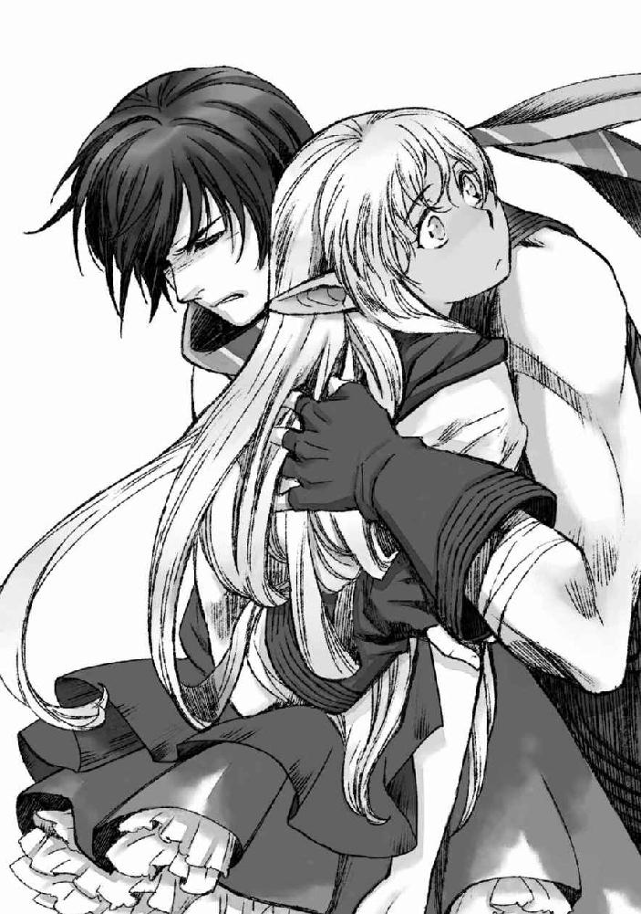
「私はもう大丈夫なので、ライザとレティシアを頼む」
「やだ」
「え」
俺の肩から降りようと身じろいだイサトさんを、一言で却下。信用ならん。というか、怪我人は大人しくしてろ。
「え、でもさすがに三人担ぐのは」
「うるさい」
「うるさいって」
ごちゃごちゃ言ってるのは聞こえないふりして、俺はライザとレティシアを何とか抱えあげると、最後にしゃらんら★を引き抜いてその腹の中からとっとと脱出する。ちら、と横目に振り返った背後、そんな俺に向かって獲物を奪い返そうと触手がうねうねと迫ってくるのが見えた。
「しつけえ！」
怒鳴りつつ、なんとか回避しようと試みる。
そんな俺の背でがっくんがっくんと揺られながら、イサトさんが身を乗り出してしゃらんら★を握る俺の手の上から掌を重ねた。
「Ctrl２、Ｆ１！ Ｆ２！ Ｆ３！」
肩の上に抱いた身体が薄桃の光に包まれると同時に、まるで魔法のように衣装が変わってスキルが発動した。しゃらんら★から放たれた聖属性を帯びた火焰攻撃が次々と追いすがる触手を撃ち滅ぼし、黒のヌメっとしたモンスター本体へと着弾しては轟々と明るく燃え盛る。その熱気を背中に感じながら、俺は自然と半眼になっていた。
ＭＰ、尽きてねえでやんの。
ということは、俺はここまでイサトさんの掌の上で転がされていたことになる。
どこからだ。
決まってる。
あの、イサトさんらしからぬ犠牲を前提にした作戦からだ。
「............イサトさん」
我ながら凶悪な低音が出たもんだと思う。
「........................、」
いろいろと言い訳をしようと試みるような沈黙。
その後、何を言っても駄目だと判断したのか、イサトさんはぐんにゃりと俺の肩の上で身体を弛緩させて、ぽそりと口を開いた。
「私が悪かった。ごめん。心配させた。でも細かく作戦を伝えるタイミングがなくて」
「ほうほう」
そうか。
確かにその言い分にも一理ある。
三人分の体重に軽く息を弾ませつつ、俺はにこやかに言葉を続けた。
「なら結婚しようか、これ終わったら」
「え」
肩の上でイサトさんがびくりと硬直する。
「結婚て。あの。結婚。ですか」
「はい。あの、結婚です」
イサトさんは何故かカタコトである。
はっはっは。
自分の蒔いた種は責任持って刈り取るが良い。
ＲＦＣには、『結婚』というシステムがあった。
お互いの同意の下に教会で申請し、女神による祝福を以て成立するシステムで──...その『結婚』したキャラ同士はお互いの『家』の合鍵を交換することが可能になる他、専用の回線で二人きりの会話を登録なしで行うことが出来るようになるのだ。
１：１チャットやＰＴチャットなど、オープンではない会話を行う方法は幾つかあるが、どれも事前に相手のＩＤを調べて１：１チャットに招いたりＰＴを組むといった手間が必要だった。が、この『結婚』システムを利用した場合、チャット画面に直接「パートナー」というタブが新たに増え、そこから直接会話することが可能になるのである。
こちらの世界に来て、ＰＴや１：１チャットといったゲームならではの機能は使えなくなったわけだが......もしかしたら『結婚』制度による通信の追加なら、アイテムの恩恵として実現する可能性がある。
少なくともそれが駄目だったとしても、俺にはそれでも良いと思えるだけの利点がこの『結婚』システムにはあった。
それはずばり。
自分のパートナーがどこにいるのかが常に把握出来る、ということである。
イサトさんの首輪代わりにはちょうど良いと思うのだが如何だろうか。
「わ、私は嫌だぞ、あんなストーカー御用達システム！」
「自業自得です」
「どこで何してるのかバレるじゃないか！」
「そのためのシステムです」
断じて違う。
本来なら愛し合うカップルをサポートするためのシステムである。
が、ほんの少しとは言えお互いの得た経験値がプールされるという旨みもあったため、カップル外でこのシステムを利用するものも多かった。
実際、油断するとすぐにレベル上げを放り出してスキル獲得やらに精を出すイサトさん捕獲のために、リモネが「結婚しろやゴルァ」と迫りまくっていたこともあったぐらいだ。目的のレベルまでイサトさんが達したら離婚してやる、という謎の制度である。
俺はヌメっとしたモンスターから充分に距離を取った辺りで、ゆっくりとイサトさんとレティシア、ライザを地面に降ろした。地面に寝かせた後、そっと首に手をあてて脈を確認する。良かった。二人とも、意識はないものの脈は安定している。
「イサトさん、怪我は？」
「ものすごく痛い」
「............何したんだ一体」
腹の中から引きずりだしたとき、イサトさんはスタッフを手にしてはいなかったはずだ。
俺の問いかけに、イサトさんはインベントリから取り出した薔薇姫の蜜をばしゃばしゃと腕全体にぶっかけつつバツの悪そうな顔をした。
「ほら、ライザに私、アイテムを幾つか渡してあっただろう？」
その言葉だけでピンと来た。
確か、あの時。
モンスターの腹の中に浮かび上がった二人の周囲には、二人の持ち物も一緒に漂っていた。きっとイサトさんはそれを確認させるために、俺を突っ込ませたのだろう。そして、その存在を確認したからこそ、作戦を実行に移した。ＭＰ切れを装い、自らモンスターに取り込まれつつその腹の中で砲閃珠を発動させたのだ。
思わず深い溜息が出た。
わざわざ調節して破壊力を上げてあった投擲武器を至近距離で発動させたのなら腕を痛めて当然だ。むしろ腕がふっとばなくて本当に良かった。
「お願いだから、後は俺に任せて大人しくしといてくれ」
「そんな心底呆れた風に言わなくても」
イサトさんはちょっと拗ねたようにぷ、と唇を尖らせつつも、すぐに口元に柔らかな笑みを浮かべて俺を見た。
「......ん。ちょっと無茶をしたもんで、さすがに私も疲れた。後は君に任せるよ」
「おう」
これ以上イサトさんに無茶をされたら、俺の心臓が止まる。
イサトさんはそっとしゃらんら★に添えていた手をするりと下ろした。
魔法少女のドレスと、イサトさんの身体を包んでいた薄桃の光とが蕩け合うように変身が解けていく。
イサトさんの魔法が解ける様を見届けた後、俺はゆっくりとしゃらんら★を構えてヌメっとしたモンスターへと向き直った。
イサトさんの放った聖属性を帯びた火焰魔法に包まれて、黒の無貌はうねうねと悶え苦しむように揺れていた。ぱちぱちと爆ぜる焰の中で、少しずつ黒の泥が粘度を失ってさらさらと崩れていく。
そんな姿を、マルクト・ギルロイは呆然と眺めているようだった。
燃え盛る焰の中で踊るように揺らめく漆黒の異形と、その傍らで立ちつくす父親のシルエットは不思議なほど俺の目には印象的に映った。焰による逆光で、マルクト・ギルロイの表情は窺えない。
俺は、しゃらんら★を片手にゆっくりと距離を詰めていく。
時折思いだしたように焰に包まれた触手が俺に向かって伸ばされるものの、軽く打ち払うだけでそれはぱしゅりと軽やかな音を上げて霧散した。
やっと終わらせられる。
やっと終わらせてやれる。
そんな想いが、胸の中で混ざりあう。
ぐずぐずと焰に焙られて溶けたヌメっとしたモンスターは、随分と縮んでしまっていた。ライザ、レティシア、そしてイサトさんを吞みこむほどに大きかった下半身の球は、もう三分の二ほどがぐずぐずに溶けて崩壊してしまっている。おかげで、球の上部に乗っていた無貌の子供の顔がちょうど俺の目の高さにあった。
ヌメっとした黒の人型に顔はない。
人を象っただけのマネキンのような黒が、無感情に俺を見る。
「もう、いいだろ」
気づいたら、そんな言葉が俺の口から零れていた。
それは誰に向けたものだったのか。
俺は静かに、しゃらんら★の石突で黒の人型の胸を貫いた。
焰にまかれ弱っていたからなのか、それともそれ以外の理由が何かあったのか、まるで吸い込まれるかのようにしゃらんら★の先端が黒に吞まれていく。
おおおおおお、と慟哭めいた声にならない声が空気を震わせる。
焰の中、ぐずぐず、ぼろぼろと人型が崩れていく。
そこへ、ふとマルクト・ギルロイが一歩を踏みだした。
「っ、おい」
俺が腕を伸ばして引き戻そうとするよりも早く、その下半身がどろりと黒い泥に吞みこまれる。それはヌメっとしたモンスターが生き延びるために力を得ようと人を取り込もうとしてのことだったのか、それともそのモンスターの中に残ったその男の息子だった部分が最期の最期で父親を求めてのことだったのか、俺にはわからない。ずぶずぶと黒に吞まれながらも、マルクト・ギルロイは焰に包まれぼろぼろと崩れゆく我が子を、幸せそうに抱きしめた。
どろどろ、ぼろぼろ。
それはどこまでも奇妙な抱擁のようで。
焰に照らされたマルクト・ギルロイは黒の泥に吞みこまれながらも、どこか安堵したような笑みを浮かべているようにも見えた。
やがて静かに焰が消えた後──...、そこにはもうヌメっとしたモンスターの姿も、マルクト・ギルロイの姿も残ってはいなかった。微かに残った灰すらも、風に攫われてすぐに見えなくなる。
「なんだか、なあ」
小声で呟いた。
これがゲームであれば、強敵を倒した喜びに興奮を覚えるところなのだろう。
イサトさんと二人協力して、味方に犠牲を出さずになんとかボスを倒すことが出来たことを祝うべきシーンだ。
けれど、どうにもそんな気にはなれなかった。
ただただ、疲労と虚脱感だけを感じる。
小さく溜息をついて踵を返そうとして、何も残らなかったと思っていた燃え跡に何か小さな白い欠片が落ちていることに気づいた。
屈んで拾おうとしかけて、それが何であるのかを察した。
骨だ。
おそらくは子供の......、マルクト・ギルロイが何としてでも救いたくて、最後には異形として甦らせることを選んだ坊やのものだろう。
未発達な小さな骨が、ぱらぱらと燃え跡に落ちていた。
「............」
はあ、と深い溜息が零れる。
どこで、何を間違えてこうなってしまったのだろう。
俺はそっとその小さな骨を手の上に拾い上げた。
せめて、骨だけでもきちんと供養して貰えるように手配したい。
からりと乾いたかつて人だったものはあまりにも脆く儚くて、その軽やかさが余計に空しさを搔きたてた。
そんな俺の肩を、いつの間にか傍らにいたイサトさんがぽんと軽く叩く。
「イサトさん」
「──...帰ろう、秋良」
「......うん」
隣に寄りそうように立つイサトさんから伝わる柔らかな体温に、ほっと吐息が緩んだ。それと同時に、これで良かったのだとも強く思う。俺はちゃんと、俺の護りたいものを護れた。だから、これで良いのだ。
「あっついシャワー浴びたいなー」
「いいな、その後は清潔なお布団にくるまって死んだように眠りたい」
「最高だ」
「だろう」
ちらりと二人視線を交わした後、ふっと口元に笑みを浮かべて俺たちは歩きだした。
「イサトさん」
「ん？」
「薬指を洗って待ってろよ」
「──...プロポーズがこんなにも恐ろしいものだったなんて」
俺はわりと本気なので、覚悟しておくと良い。
俺とおっさんのカオス極まりないある日の午後。
それは、ある日の午後のこと。
俺が部屋でゆっくりと過ごしていると、こんこん、とドアが鳴った。
「秋良青年、いるか？」
「イサトさん？」
俺は首を傾げつつドアに向かう。
確か今日の午後は倉庫の整理をして過ごすという風に聞いていたのだが。
ガチャリとドアを開くと、その先には華麗にナース衣装を着こなしたイサトさんが立っていた。
最近ではもうある程度慣れたのか、魔法少女よりはマシだという結論に落ち着いたのか、あまり抵抗なく赤ずきんとナース服をローテしているイサトさんである。
俺自身も早くその域にまで達したいと思っているものの、現実はなかなか難しい。
しばらく一緒にいればそういうものだと思うことも出来るのだが、こんな風に突然扉を開けた向こうにナース服で立っていられたりなどすると、どきりと鼓動が跳ねる。
つい丈の短いナース服の裾と、ニーハイブーツの間の絶対領域に視線が吸い寄せられそうになるのを堪えつつ、俺はふーとこっそり息を吐いて心頭滅却の後、口を開いた。
「倉庫の整理、もう終わったのか？」
「ある程度は。ただちょっと、得体の知れないものが結構多くてな。その辺をどうしようか君に相談しようと思って」
「......得体の知れないものって」
「実際得体が知れないのだから仕方がない」
そう言って、イサトさんはごそごそとインベントリからアイテムを取り出すと、テーブルの上にそれらを並べ出した。やたら縦に長い壺やら、刀身のくねったナイフ、見事な装飾が施された小箱など、一見して普通のものではない感が漂っているものばかりである。
これは確かに得体が知れない。
俺はなんとなく壺を手に取ってみる。
ゲーム時代であれば、カーソルを合わせればアイテム名が表示されたし、右クリックである程度の効能を調べることも出来たのだが......こっちの世界ではさすがにそんな便利な機能は存在していない。
「数はないんだよな？」
「うむ。それぞれ一個ずつしか入ってなかった」
「いろんな意味で危険だな」
「だよな」
数が多くあるのなら、それは一般的に出回っているアイテムということだ。今手放して、今後必要になる時がきたとしてもすぐにまた新しく手に入れることが出来る。だが、数が少ないアイテム、特に一つしかないもの、となるとレア度が高い可能性がある。それこそ、１キャラクターにつき一つしか手に入れることが出来ないようなレアアイテムであるかもしれないのだ。そうなるとさすがに倉庫の肥やしになっているからといって簡単に手放すことは出来ない。
「それで、もしかしたら君が知ってるんじゃないかな、と思って持ってきてみたんだが」
「うーん......俺も見覚えがないな」
全キャラ共通イベントで必要になるレアアイテムであれば、少なからず俺にも見覚えぐらいはありそうなのだが。もしかすると、～～職限定イベント、などで必要になってくるアイテムなのかもしれない。その辺になってくると、さすがに俺も網羅していない。
俺は壺をテーブルに戻すと、今度は小箱を手にとってみる。
ころん、と何かが動く感触が手に伝わってきた。
「あれ。これ、中に何か入ってないか？」
軽く振ると、中からカタカタと小さな音が聞こえる。
「本当だ。もしかすると、中身がアイテムの本体とか？」
「かもな。開けてみるか？」
「うむ」
俺はイサトさんの了承を得ると、見やすいように小箱をテーブルの上に置いてからその蓋に手をかけた。そっと蓋を持ち上げる。キィ、と軽く軋むような音をたてて開いた箱の中は布張りになっており、いくつかの窪みが設けられていた。ほとんどが空になっている中、片隅の二つだけ美しい虹色の宝石が納められている。
「──げ」
「うわ」
その宝石に、見覚えがあった。
というかこれ、トラップ極まりない。
「秋良、閉めろ!!」
「ッ！」
イサトさんの言葉を聞くまでもなく、俺は慌てて小箱の蓋をしめようとするものの──...それよりも先に、宝石と同じ色をした光がカッと瞬いた。
強烈な虹色に染め抜かれて、視界だけでなく意識までが揺らぐ。
くらりと感じた眩暈にがくんと膝をつく。
「くっそ、」
毒づきつつも意識が白み──...
はッと意識が戻った。
おそらくそう長い間ではないものの、一時的に意識が途絶えてしまっていたらしい。
俺は緩く頭を振りながら身体を起こそうとして、その動きに合わせてゆらりと揺れる銀色に気付いた。厭な予感がする。というか厭な予感しかしない。
「............」
もう大概何が起きたのか理解はしているのだが、それを確認する勇気がなかなか持てなかった。
が、いつまでも石化したかのように硬直しているわけにもいかない。俺は渋々と軋むような動きで視線を下に下ろす。
床についている手は、明らかに俺のものではなかった。
華奢な、滑らかな褐色の五指。
つるりとした形の良い爪は、まるで小さな貝殻のような薄桃色だ。
そこから繫がって伸びる腕も、しなやかに細く、明らかに俺のものではない。
「......勘弁してくれ」
ぼやく言葉すら、耳に心地よい柔らかなイサトさんの声で響いた。
噓だろ。いや本当マジで。勘弁してくれ。神様。頼む神様。
このままでは俺はこういう状況におけるセオリーを実行してしまう。
いや確認のためには仕方ないんだって。
下心とかじゃないんだって。
自分の身の上に起こってしまったハプニングを正しく認識するために必要不可欠な行為であって、古今東西全ての男ならこういう時するであろう行為なわけで俺が悪いわけじゃなくて、
「胸に触ったら記憶がなくなるまでドつきまわすぞ」
怒気を孕んだ聞き覚えのある低い声が響いた。
というか俺の声である。
聞き覚えがあるようなのに、若干違って聞こえるのは他人の声として聞くからだろうか。
ぎぎい、と軋むような動きで顔をあげると、そこにはヤンキー座りでメンチ切ってる大層人相の悪い男がいた。俺である。どう見ても俺である。俺であるはずなのだが、俺である時よりも人相が悪い上にその背後に殺気が滲んでいるようなのはどういうことだ。いや、俺のせいなんですけども。
俺は渋々と胸にやりかけていた手を下ろした。
くそう。限りなく状況のせいにしてナチュラルに触るチャンスだと思ったのに。
「えーと、聞かなくても大体わかるがイサトさんですよね？」
「うむ。そっちは秋良青年、だよな？」
お互い自分の身体の中に入っているのが誰なのかを確認する。
そのまましばし見つめ合った後、ほぼ同時に溜息をついて項垂れた。
「しくじったな......あれ、入れ替わりの宝玉じゃねーか」
「ゲーム内だと宝石が見える形のアイコンだったからな......」
そうなのだ。
先ほど俺が開けた小箱の中に入っていた虹色の宝石。
その名を『入れ替わりの宝玉』と言う。
箱を開き、光に触れると同時に発動し、その場にいる人間のアバター（外見）を一定時間入れ替えるというお遊びアイテムの一つである。ゲーム内では箱に納められた状態で虹色の宝石を見せる形のアイコンで表示されていたため、俺もイサトさんも外箱には見覚えがなかったのだ。
「これ、効果が続くのって10分ぐらいだっけ？」
「確か15分だったような気が」
「短いようで長いな」
俺は半眼で呻く。
この状況で一人であったなら、いろいろ妄想も広がるところなのだが、イサトさんという監視がいる以上悪いことは出来そうにない。ただおとなしく時間が過ぎるのを待つだけだとすると、15分というのは結構長い。
俺はよっこらせ、と立ち上がろうとして......がくん、と足元がつんのめった。なんとか体勢を立て直そうとしたものの、足元が何故かおぼつかない上に、妙に身体が重い。自分の身体が自分の思う通りに動かない。いや、実際俺の身体ではないわけなのだが。状況を摑めないまま俺はそのまま前にべちゃりと無様に転び、ガンと床に膝を強打する。
「いってええええええ！」
「何やってんだ君」
イサトさんに心底呆れたような半眼で見られてしまった。
中に入っているのがイサトさんだとわかってはいても、自分自身にそんな顔を向けられると拳でぶん殴りたい衝動にかられる。いや、それよりも、だ。
「イサトさん、普段こんなの履いて動いてんのかすげえ」
足元である。
むちりとした太腿のあたりからつま先までを覆う黒革のニーハイブーツに備え付けられたヒールこそが、俺が体勢を崩した原因だった。普段イサトさんが何気なく履いているせいで気にしていなかったが、結構高さがある。踵が地につかないというだけで、こんなにも不安定になるとは思わなかった。
「手を貸そう。立てるか？」
「な、なんとか」
差し出されたイサトさんの手を取る。
半ば持ち上げるようにして立たせてもらいながらも、俺の脚はがくがくと産まれたての小鹿のように震えている。
「そのブーツ、わりとヒールが太いので動きやすい方だと思っていたんだが」
「いやいやいや。よくこんなの履いて戦闘出来るな」
「乙女の嗜みです」
「......俺の顔で言われても」
「自分で違和感すごかった」
「だろうな」
イサトさんはくつ、と喉を鳴らすように笑うと、俺の腰に腕を回して......そのままひょいと抱き上げた。
「ちょ、イサトさん!?」
「いや、持てるかなと思ったら持てた。凄いな君」
「いやいやいやいや！」
相手が自分自身の身体、ということもあってか、イサトさんの手つきに遠慮はない。
中に入っているのが俺だから、ということもあるのかもしれない。
が、逆に俺からすると俺自身の身体とはいえ、自分より図体のでかい男に抱きあげられてしまったかのようで非常に薄気味悪く、落ち着かない。何が悲しくて男にお姫様抱っこされなければならないのだ。しかも相手は自分自身である。心底厭そうな顔をしている俺に対して、イサトさんは対照的にものすごく愉しそうににんまりと笑みを浮かべている。
「腕力があるって素晴らしい」
「腕力にものを言わせるのは良くないと思います」
普段から気安く女性に触れるようなことはしていないつもりだが、今後はもっと気を付けよう、としみじみ思ってしまった。
イサトさんはしばらく感慨深そうに俺のことを抱いていたものの、やがてゆっくりとベッドへと座らせてくれた。
「ブーツ、脱げるか？」
「脱げると思う......、ってこれどうやって脱ぐんだ」
すぽっと脚から引き抜こうと試みるものの、ぴっちりと肌を覆う黒革のブーツがそんな風に脱げるはずもない。どこかにジッパーがあるに違いないと、脚を曲げようとしたところを柔らかな黒革に阻まれた。ぐぬぬ、と俺が悪戦苦闘していると、イサトさんがふっと呆れたように笑うのが気配として伝わってきた。
「私が脱がせてあげよう」
「......お、おう」
俺の外見で、イサトさんが俺の前に膝をつく。
「はい、脚こっちに乗せて」
「え」
ぽん、と叩いて足を乗せるように指示されたのは、イサトさんの腿の上だった。
いや、外見上は『俺』というべきだろうか。
俺が呆然と瞬いていると、イサトさんはさっさと俺の足首を軽々と引っ摑んで腿の上へと乗せてしまった。だからさっきからイサトさんは腕力にものを言わせすぎである。ちらっと見やったベッドサイドの鏡には、『俺』が『イサトさん』の足元に跪き、その足を恭しく己の腿に乗せている様が映っている。なんだこれ。なんだこれ。
どこにドギマギしていいのかわからないまま、顔が熱くなった。鏡に映ったイサトさんが動揺した様子で真っ赤に顔を火照らせているのは非常に可愛らしいのだが、それが俺だと思うとなんだかもう死にたくなってくる。何やってんだ俺。なんだこの状況。
イサトさんはといえば、俺のそんな葛藤には気づいてもいない様子で慣れた風に俺のブーツのジッパーをゆっくりと下ろしていく。『俺』が、てらりとした黒革をそっと『イサトさん』の生足から剝ぐように脱がせていく様子を鏡越しに見てしまってますます死にそうになった。なんで男に靴を脱がされて俺が恥じらわなければいけないのか。
「......しにたい」
「君はいきなり何を言いだしてるんだ。ほら、逆も」
「じ、自分で脱げるから！」
「ここまで来たら一緒だろう」
逃げようとした足を軽々とひっ摑まれて、抵抗できなくなった。
鬼に金棒、イサトさんに腕力。
力ずく、いくない。
やがて両足のブーツを脱がされる頃には、俺はぐったりとされるがままになっていた。
普段イサトさんの体力の無さを笑っていたものの、こうして体験してみると笑えない。元の身体に戻ったら、とりあえずイサトさんに筋トレを提案した方が良いかもしれない。
そんなことを考えている俺を余所に、イサトさんは脱がし終えたブーツをベッド脇に並べて立ち上がる。俺も素足になって動きやすくなったので、おそるおそるベッドから下りてみた。ぺたり、と裸足の裏に感じる木の床の感触は普段とそう変わらない。普通に立っている分にはそれほど違いは感じないようだった。着ているのがミニスカナース服であるせいか、下半身が妙に心もとなく感じる程度である。下穿いてない感が凄まじい。
「こうしてるとそんなに差は感じないんだけどな......って」
イサトさんを振り返ったつもりで、俺の目に飛び込んできたのは『俺』の胸板だった。
ぐ、と顔をあげて初めて顔が見える。
でかい。
「......俺、でかいな」
「でかいぞ、君は。目線が高いのが新鮮で、それだけでちょっと楽しい」
ふふん、とイサトさんは楽しそうに口角を持ち上げて俺の頭をぽんぽんと撫でる。
『俺』の顔であるはずなのに、そんな笑みはイサトさんらしさが滲んでいて、中身が違うだけで浮かべる表情にも差が出るもんなんだな、と思ってしまった。
というか、俺はいろいろ大変だというのにイサトさんだけ楽しそうで大変悔しい。
イサトさんにも少しばかり焦っていただきたいものだが、どうしたらぎゃふんと言わせられるだろうか。俺は少し考えた後、そっとインベントリへと手をやった。
イサトさんと俺の肉体が入れ替わっているのなら、インベントリの中身もイサトさんのものであるはずである。
「あ、やっぱり」
実際その通りで、ふっと目の前に浮かんだインベントリの中にはイサトさんの持ち物がずらりと並んでいた。その中から俺はマジ狩る★しゃらんら★を選んで取り出す。先日の黒薔薇の庭での戦闘以来、しゃらんら★はイサトさん預かりになっていたのである。
「おい、秋良」
「ふっふっふ、イサトさんだけ楽しそうなのもアレだからな。俺は俺で楽しもうと思います」
魔法少女に変身してじっくり鑑賞してくれようと思う。
黒薔薇の庭園ではそれほどじっくり眺めてもいられなかったのだ。
俺自身は魔法スキルは持っていないが、先ほど腕力の差を感じた通り、今の俺とイサトさんは外見だけでなく外見に伴った能力値なども入れ替わっている。つまり、俺にでもこのマジ狩る★しゃらんら★を使って変身出来る可能性があるのだ。
「おいやめろ」
「ふふふふふふふふふ」
じりじりと俺へとの距離を削るイサトさんから、円を描くような動きで逃げながら俺はしゃらんら★を握る手に力を込めスキルを発動させようとして......
「......あ」
スキルが分からないことに気が付いた。
しまった。駄目じゃん。
魔法スキルを使う時のコツというかそういったものが全くわからない。イメージだけでもスキルは発動させることが出来るので、イメージ次第ではその魔法スキルを使うことは出来るのかもしれないが......室内でやっても被害を出さずに済みそうなスキルに心当たりがない。俺が見たことのあるイサトさんの使える魔法スキルなんて、そのほとんどが攻撃魔法だ。
「ええと」
諦め悪く記憶を探ろうとしているところで、
「全く、何をしようとしてるんだ」
するりと接近したイサトさんに軽々としゃらんら★を奪われてしまった。
取り返そうとするものの、ひょいとしゃらんら★を持った手をあげられてしまうとイサトさんの身体では手が届かなくなる。リーチの差が憎い。
「身体が大きいというのはかくも有利なものなんだなあ」
しみじみとイサトさんが言う。
そしてそこで一度言葉を切ったイサトさんは、にやりと口角を持ち上げた。
もともと人相のよろしくない俺の顔でそんな表情を浮かべられると、至極悪役である。
「ところで──...、これ、私がこの状態で魔法スキル使ったら君の身体が大変なことになるんだろうか」
「おいやめろください」
「おや、君は私の魔法少女姿をいつだって見たがっていたじゃないか」
「それはそうだけど！！！！」
外見、というのは大事なファクターなのですよ、イサトさん。
21歳ガチムチ男の魔法少女コスなんて誰が見たがりますか。
それが自分ならばなおさら嫌だ。断固として拒否する。
「私は結構見たい」
「マジでやめてください」
「わりとガチのトーンで止められてる気がする」
「わりとじゃねえよ完全に本気だよ」
どこまでも本気である。
俺と能力値が入れ替わっているのならば、イサトさんの方だって現状は俺のステータスであるはずだ。そう考えると恐れる必要はないような気もするのだが......油断は出来ない。
例えば、俺がイサトさんのステータスでありながら上手くスキルを使えなかったように、おそらくイサトさんは俺のステータスを所持していても大剣を使いこなすことは出来ないだろう。慣れの問題だ。大剣を振りまわす腕力を持ってはいても、イサトさんには経験がないから大剣を操れない。
その逆に、俺は腕力はイサトさんのレベルまで落ちてはいるが、大剣を振りまわしての戦闘に関しての経験や知識はある。体力が尽きるまでは、木刀ぐらいならば振り回せるだろう。
ならば。
それならば。
俺のごくわずかなＭＰでも、イサトさんであれば何らかの魔法を駆使することが出来るのではないだろうか。
ぞわッと悪寒に背中の毛が逆立った。
脳内に首から下にぴんく色のモザイクが乱舞した俺の図が描かれる。
やばい。
これはやばい。
Ｒ１００ぐらいに指定したい。
というかグロ画像でいいんじゃないだろうか。
「イサトさん、落ち着け。落ち着くんだ。早まるんじゃない。深呼吸だ。それからそっとそのしゃらんら★を置こうか」
「君が持ちだした癖に」
「反省してる。ものすごく。超反省してる。だからしゃらんら★置こうか」
タイムスリップが出来るものならば、あそこでしゃらんら★を持ちだした自分自身の後頭部をぶん殴ってでも止めてやりたい。
「............」
むーとイサトさんが唇を尖らせる。
普段であればなかなかに可愛らしい仕草なのだと思うが、俺の顔でやられるとやはり殺意しかわかなかった。腹立つなその顔。
「......まあ、仕方ない。紳士協定だ。君だって私の身体で好き放題するのは我慢してくれてるわけだしな。君が私の身体に対して紳士でいてくれる限り、私も君の身体に対しては紳士的な扱いを約束しよう」
ふ、っと小さく息をつきつつ、イサトさんはようやくしゃらんら★を下ろしてくれた。
部屋の中に満ちていたお前を殺して俺も死ぬ、的な緊迫感が薄れていく。
良かった。
俺も深々と息を吐きつつベッドに腰を下ろした。
たかだか数分の間にものすごく気力と体力を消耗した気がしてならない。
「後はおとなしく元に戻るのを待つか」
「そうだな」
ぼす、とイサトさんが隣に腰掛ける。
座ってもやはり、イサトさんの方が......というか俺の身体の方が目線が高い。
普段見下ろすことの方が多いせいか、こうして見上げなければ顔が見えないというのは新鮮だ。
「イサトさんさ」
「ん？」
「普段首痛くならない？」
「そうでもないぞ。相当距離が近くなると別だが」
「ああ、そっか。近い方が角度が急になるのか」
「そうそう」
なるほど。
相手の身になって考える（物理）、である。
と、そこでイサトさんがひょいと立ちあがった。
「なあなあ、秋良青年。戻る前に、私ちょっと試してみたいことがあるんだけれども」
「なんだ？」
「壁ドンしてみたい」
「ぶッ」
噴いた。
壁ドン、というのは少女漫画などでよくある構図で、男キャラが女の子を壁際に追い詰める際の構図の一つである。
「なんでまた......」
「いやだって、私と君の体格差って壁ドンにはちょうど良いぐらいじゃないか」
「えええええ......」
確かにそうかもしれないが、いろいろと複雑である。
何故俺が男（しかも自分）に迫られなければならないのか。
だからといって身体が自分のものならそれで良いのかと言われれば、それはそれで変に意識してしまいそうでこっぱずかしい。そう考えるとお互いの身体が入れ替わっている今ぐらいじゃなければ、壁ドンなんてやってみようとは思えないのかもしれない。
「しゃらんら★我慢したんだから、これぐらい付き合ってくれても良いだろう？ こんな機会滅多にないぞ」
「......まあ、そりゃそうかもしれないけど。イサトさんのその壁ドンへの情熱はどこからくるんだ」
「職業病」
即答された。
そういえば、イサトさんは少女漫画の原作だとかを書いている人だっけか。
「壁ドン体験ツアー的なもので、される側は体験したことがあるんだ」
「なんだその珍妙なツアーは」
「あるんだよ、そういうのが。だからまあ、今度はする側を体験してみたい」
「......ええー」
切々と説得されてしまった。
ぐぬぬ、と俺が眉間に皺を寄せていると、イサトさんがふっと残念そうに目を伏せた。
諦めたのだろうか、と思ったとたん。
「君がつきあってくれないのなら──...エリサにでも頼むか」
「おいやめろ人の身体で何すんだあんた」
全力で引き留める。
イサトさんは良いかもしれないが、元に戻った後エリサと顔が合わせられなくなる。
そんなことになるぐらいなら、俺が付き合った方がまだマシだ。
俺は顰め面をしつつ、イサトさんに付き合ってベッドから立ち上がった。
「わかったよ、付き合う」
「君ならわかってくれると思っていた。ありがとう」
イサトさんは満足そうににんまりと笑みを浮かべた。
『俺』に壁ドンされるというのは薄気味悪いものがあるが、確かにイサトさんの言うとおりこんな状況でもなければ体験できないことである。
俺が壁を背に立つと、イサトさんは嬉しそうに壁に手をついたり腰に腕を回してみたりとし始めた。
壁ドンである。
身長差があるため、ぬっとイサトさんが俺に向かって顔を寄せると頭上から影が差して逃げ場がなくなる。なるほど。壁ドンというのはなかなか圧迫感が凄い。普通に顔を寄せられるよりも、「迫られてる感」を感じる。
が、俺にしてみれば目の前にあるのは『俺の顔』でしかないわけだし、イサトさんにしてみても目の前にあるのは自分の顔、である。
先ほどのように客観的に鏡でも見てしまえばキそうな光景ではあるものの、相手の顔しか見えないほどに密着してしまえば逆に感慨は薄い。
「どう、イサトさん」
「うーん何故だろう。目の前にあるのが自分の顔だと思うとカケラもときめかないし、自分の身体に触ってもそう楽しくない」
「だろうな」
俺も同感である。
ひたすら圧迫感しか感じない。
「ただ、思ってたより私の睫毛が長くて今自分で感動してる」
「長いよな、イサトさん」
「うむ。ラクダっぽい」
俺から見ると長い銀色の睫毛に縁どられた神秘的な瞳も、イサトさん本人からすると「ラクダっぽい」の一言で終わってしまうものらしい。
と、そこで。
「ッ、......」
「......ッ」
くらり、と眩暈がした。
すぅ、と意識が遠のく。
時間切れだ。
これでようやく、元に──...
「............」
「............」
ゆっくりと目を開けると、目の前にイサトさんの顔があった。
ぼんやりと伏せ目がちの双眸に銀色の睫毛が柔らかに影を落としている。
俺はといえばそんなイサトさんを壁際に追い詰めるように縫いとめていた。
壁ドンである。
紛うことなき壁ドンである。
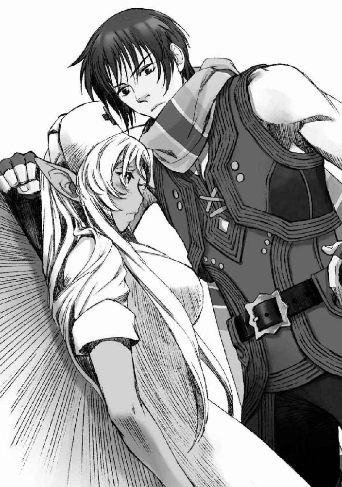
片腕を壁に添え、吐息が触れそうなほどに顔の位置が近い。
もう片方の腕はといえばイサトさんの腰裏をぐっと引き寄せているし、それどころか、俺の片膝はイサトさんの脚の間にねじこまれている。
イサトさんあんた人の身体で自分の身体にナニしてくれてんだ。
視覚やら五感やらが本来の自分の肉体のものに切り替わったとたん、腕の中に抱き寄せた華奢な身体の柔らかさなどが伝わってきて、先ほどまでの冷静さが噓のように鼓動がガンガンと鳴り始めた。かああああ、と全身に熱が巡る。
は、と驚いたようにこぼれたイサトさんの吐息が俺の唇を撫でていく。
「あ、秋良青年」
「なに」
イサトさんがか細く俺の名を呼んだ。
視線を落とす。
頭一つ分ほど下にイサトさんがいる。
俺の腕の中に、すっぽりと収まる華奢な身体。
俺を見上げる顔は、真っ赤に火照っている。
良かった。
この状況で気恥ずかしさを感じているのが俺だけだったならば、流石にいたたまれない。
「ええとその、もういいかなーとか、思うわけ、ですが」
「いやいやイサトさんも壁ドンされる側を存分に体験してみたいだろ？」
「......ッ」
先ほどまでの仕返しもかねて、にんまりと笑う。
びく、と腕の中に捕えた身体が強張るのを感じた。ますます笑みが深くなる。
たぶん今の俺は獲物を捕まえた肉食動物みたいな笑みを浮かべているんだと思う。
「う、う、うううううう」
「（えがお）」
イサトさんが降参めいたごめんなさいをするまで、俺の理性がちゃんと持つと良いな、と他人事のように思う、とある日の午後だった。
あとがき
二度目まして、山田まると申します。
この度は「おっさんがびじょ。２」を手に取っていただき、誠にありがとうございます。
一巻に引き続き、この巻も楽しんでいただけたならば何よりです。
............と。
やっぱり５ページもある後書きに何を書いていいのか、スペースを持て余すまるなのでした。
みなさん一体何を書いているんだ......。
うんうん頭を捻った結果、ちょっとこの巻を書いている際に改めて気づかされたことを書いてみようと思います。
それは、ＷＥＢ連載で薔薇姫を初めて登場させた回をアップした直後のことでした。
まるのところに、友人から、「クリノリン・レディが出てきてくすっとした」というメッセージが届いたのです。それに対するまるの返事は、「え？ なんだっけそれ」でした。薔薇姫は「なんとなくそういうモンスターいそうだなー、見た目綺麗な貴婦人なのにドレスの中がクリーチャーとかなかなかインパクトあるなー」という感じで考えていたモンスターだったので、友人のそのコメントが凄く意外だったのです。そんなまるに対して、友人は呆れたように「兄ちゃんのケーキじゃないのか」と言いました。
兄ちゃんの、ケーキ。
その言葉に、まるははっとしました。
まるは以前その友人に、一度謎の無茶ぶりをしたことがあったのです。
「貴婦人のスカート食べたい」、と。
といっても、友人に貴婦人のスカートを引っぺがして来い、と頼んだわけではなく。名前は覚えていないのだけれども、貴婦人のスカートの形をしたケーキがあって、それをもう一度食べたい、という話をしたことがあったのでした。そしてその貴婦人のスカートの形をしたケーキこそが、「兄ちゃんのケーキ」だったのです。
兄ちゃんはまるの年の離れた従兄弟でした。小さい頃はまるの家のすぐお隣に住んでいて、まるで本当の兄弟のように可愛がってもらいました。そんな兄ちゃんはパティシエになり、一時期修行中だったのかやたら大量のスイーツをまるの家に差し入れてくれました。それはもう大量の。朝昼晩三食ケーキが食卓に並び、もはや主食は生クリーム、というかのような洋菓子攻めを喰らっている中、兄ちゃんが我が家に持ってきたのがその貴婦人の形をしたケーキでした。上半身は陶器で出来ており、下半身のドレス部分がフルーツ系のムースケーキになっていて、生クリームにやられていたまるにとってはそのあっさりとした甘さがとても美味しく感じられました。
だから、でしょうか。兄ちゃんの作ったケーキはいろいろ食べさせてもらいましたが、なんとなくまるの中ではその貴婦人のケーキこそが、「兄ちゃんのケーキ」だったのです。
兄ちゃんが亡くなったあと、兄ちゃんのケーキが食べたいなーと思うときに連想するのもそのケーキだったわけなのですが、残念ながらまるにはそのケーキの名前がわからず、兄ちゃんのオリジナルデザインだったのかどうかすらもわかりませんでした。それで友人相手に、「貴婦人のスカート食べたい」とわけのわからない要求をしてみたわけです。その結果、友人はそのケーキが「クリノリン・レディ」という名前であることを調べ、教えてくれたのでした。
そして、だからこそ友人は薔薇姫の描写を読んだ際に、「ああ、クリノリン・レディか」と思って笑ったそうなのです。
薔薇姫の設定を考えている時、まるの頭の中に「クリノリン・レディ」のことはありませんでした。
友人に指摘されて初めて「あ」と気づきました。
それで、改めて思ったのです。
まるの書く文章や物語には、これまでまるが経験してきた出来事や、見たもの、触れたものが反映されているんだなあ、と。
兄ちゃんが亡くなってからもう五年以上が過ぎ、少しずつ実家に帰っても兄ちゃんに会えないことにも慣れてきました。まるにとって、いないことに慣れるというのは、兄ちゃんのことを忘れていくような気がして、少しだけ複雑な気もしていましたが、友人の言葉はそうでないことを教えてくれました。
意識して思いだそうとしなくても、当たり前のようにまるの中に兄ちゃんと過ごした時間があるからこそ、薔薇姫というモンスターがまるの中で生まれたんだなあ、と思うとなんだか嬉しくなったのです。
いやまあ、兄ちゃんとの甘酸っぱい思い出を昇華した先が薔薇園のモンスターで、その上あの扱いだったのは我ながらどうかと思わなくもないのですが！
きっと兄ちゃんなら半笑いで許してくれると思っています。金縛りにあったり枕元に立たれたら反省します。
......と、ちょっと話がズレましたが。
きっとそれは、兄ちゃんだけでも薔薇姫だけでもなくて。
まるがこれまで出会い、言葉を交わしてきた人たちみんなに言えるんじゃないかな、と思うのです。
家族や、友達、そしてまるの書いたものを読んでくださる方々。
そういった人たちとの時間が積み重なった結果、まるは今このお話を楽しんで書くことが出来ているのだと思うのです。
そんなわけで、最後に改めて皆さまへの感謝を！
何故か着々と購入しては親族ご近所同僚等に配り歩いている両親。おっさんがびじょの売り上げの半分は身内なんじゃないか、と若干疑っています。でも、いつも生暖かく見守ってくれてありがとう。
一巻が出た際に、買ったよ、読んだよ、本当に書店にあったよまるさん夢じゃないよ、と報告してくれた友人、フォロワーのみなさん、ありがとうございます。おかげで二巻もこうして出すことが出来ました。
今回もまたひんひん鳴いてばかりいたまるを支えてくれた編集の稲垣さん、素敵なイラストで物語を鮮やかに彩ってくださった藤田さん、本当にありがとうございます。多くの人に支えられて、こうして「おっさんがびじょ。２」が一冊の本の形になりました。
そして、これまでまるの書く物語が好きだよ、と言って読み続けてくれている読者の皆さま、「小説家になろう」でのＷＥＢ連載を追いかけてくださったり、今こうしてこの本を手に取ってくださっているあなたに最大の感謝を！
これからも是非、まるを見守っていただけると嬉しいです、よろしくお願いいたします！
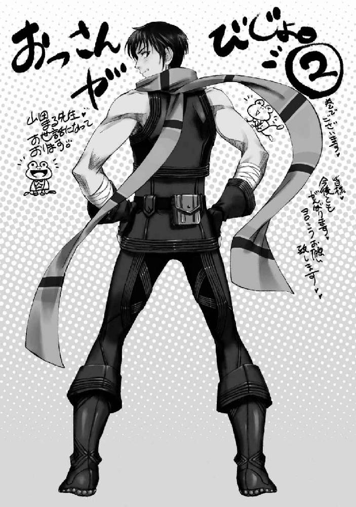

おっさんがびじょ。
２ わるもの ＶＳ 異世界ブラック企業
発行 ────────── 2015年5月15日 初版第1刷発行
著者 ──────────山田まる
イラストレーター ────藤田香
装丁デザイン ────── 百足屋ユウコ（ムシカゴグラフィックス）
発行者 ───────── 幕内和博
編集 ────────── 稲垣高広
発行所 ───────── 株式会社 アース・スター エンターテイメント
〒150-0036 東京都渋谷区南平台町 16-17
渋谷ガーデンタワー 11F
TEL：03-5457-1471
FAX：03-5457-1473
http://www.es-novel.jp/
発売所 ───────── 株式会社 泰文堂
〒108-0075 東京都港区港南 2-16-8
ストーリア品川 17F
TEL：03-6712-0333
印刷・製本 ─────── 株式会社 光邦
© Maru Yamada / Kaori Fujita 2015, Printed in Japan
この物語はフィクションです。実在の人物・団体・事件・地域等には、いっさい関係ありません。
本書は、法令の定めにある場合を除き、その全部または一部を無断で複製・複写することはできません。
また、本書のコピー、スキャン、電子データ化等の無断複製は、著作権法上での例外を除き、禁じられております。
本書を代行業者等の第三者に依頼してスキャン、電子データ化をすることは、私的利用の目的であっても認められておらず、著作権法に違反します。
乱丁・落丁本は、ご面倒ですが、株式会社 アース・スター エンターテイメント 読書係あてにお送りください。
送料小社負担でお取替えいたします。価格はカバーに表示してあります。
ISBN 978-4-8030-0727-5